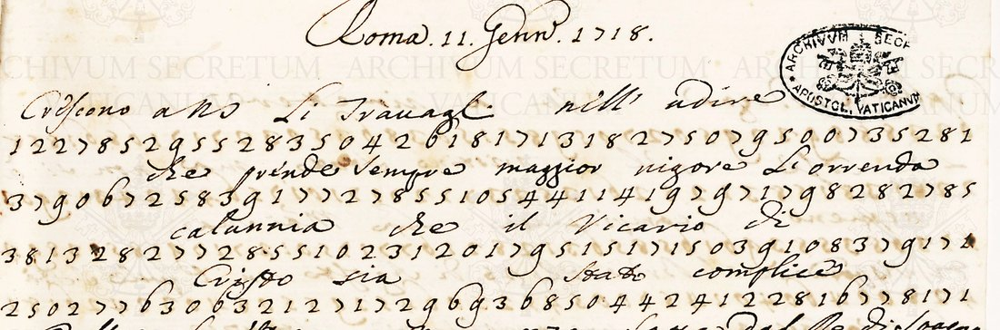

At a glanceKnown key applied · complete
- The document
- Twenty-four ciphered despatches of the Secretariat of State to the nuncio in Madrid, 4 January 1718 to 6 January 1720 (three dated 1717).
- Where
- Spagna 364D, ff. 1–403; DECODE R154–R177, classed homophonic and nomenclator. DECODE called them “partially decrypted” with a contemporary decipherment, but that is only a few words a page, several wrong.
- The cipher
- A numerical homophonic cipher with a nomenclator of four-digit groups: Lasry’s filed key lists 268 groups, the corpus uses 399.
- How it was read
- Each record carries George Lasry’s key (24 October 2020) and his decipherment of the whole Spagna 364 corpus. The gaps in the key were filled from neighbouring groups in an alphabetical key and from contexts.
- What was added
- Sixty-one nomenclator groups recovered, among them promozione, tribunale and negoziato, and the calendar block. Tokens without a value fall from 11.0 to 3.4 per cent across the corpus.
- Still open
- The filed key left 189 groups, 11.0 per cent of nomenclator tokens, without a value; the remaining 3.4 per cent are still open.
- Credit
- The key and the decipherment are George Lasry’s; this page adds the measurement and the key extension.
01 The dossier and what was on the records
Spagna 364D is a register of the Secretariat of State’s outgoing correspondence to the nunciature at Madrid, described by the archive as “Lett. Orig. e cifre della Segretaria al nunzio, dal 4 gennaio 1718 al 6 gennaio 1720, ff. 1–403”. DECODE holds twenty-four of its ciphered items as records R154 to R177, one per item, ninety pages in all, classed homophonic and nomenclator, numerical, images behind a login. The catalogue entry here counted twenty-one, following DECODE’s own grouping, which leaves out the three items dated to 1717 (R172, R174, R176); they are in the same dossier and the same cipher, and all twenty-four are treated together below.
The twenty-four items are very unequal. Item 14 alone runs to 9,751 cipher tokens over twenty-one pages; six items are under three hundred tokens, and two are a single short paragraph. The full measured table:
| item | record | tokens | distinct | item | record | tokens | distinct |
|---|---|---|---|---|---|---|---|
| 364D/1 | R154 | 2,954 | 177 | 364D/13 | R166 | 484 | 97 |
| 364D/2 | R155 | 768 | 101 | 364D/14 | R167 | 9,751 | 244 |
| 364D/3 | R156 | 3,837 | 159 | 364D/15 | R168 | 519 | 94 |
| 364D/4 | R157 | 167 | 53 | 364D/16 | R169 | 715 | 100 |
| 364D/5 | R158 | 3,537 | 169 | 364D/17 | R170 | 2,234 | 187 |
| 364D/6 | R159 | 229 | 62 | 364D/18 | R171 | 1,175 | 114 |
| 364D/7 | R160 | 131 | 49 | 364D/19 | R172 | 899 | 119 |
| 364D/8 | R161 | 567 | 80 | 364D/20 | R173 | 770 | 122 |
| 364D/9 | R162 | 1,034 | 95 | 364D/21 | R174 | 80 | 46 |
| 364D/10 | R163 | 2,468 | 137 | 364D/22 | R175 | 79 | 45 |
| 364D/11 | R164 | 296 | 72 | 364D/23 | R176 | 926 | 108 |
| 364D/12 | R165 | 531 | 91 | 364D/24 | R177 | 92 | 36 |
Each record carries three attachments. The first is the raw transcription of that item, made from the ASV
images in 2016–17 by the DECODE transcribers EHum and KaJo: a bare stream of single digits, with the
contemporary marginal glosses flagged in <PLAINTEXT> lines. The second is the key,
headed #KEY: reconstructed, #TRANSCRIBER NAME: George Lasry, #DATE OF
TRANSCRIPTION: October 24, 2020, catalogued as “ASV - S364” and dated 1717–1720.
The third, identical on all twenty-four records, is the 800 KB corpus file with the segmented and deciphered
text of both 364C and 364D.
This is the third target in this project where DECODE’s status field understated what was on the record: “partially decrypted” describes the contemporary marginal gloss and leaves out the modern decipherment filed beside it. The rule, applied here before any analysis, is to open every attachment on the record before treating the cipher as open.
02 The contemporary decipherment
The catalogue entry took DECODE’s note, “(Partly) deciphered within the letter”,
to mean the despatches were deciphered on arrival and that the modern job was to copy out the decipherment. This page first judged that gloss from DECODE’s PLAINTEXT rows, which give it with most words as “?” and with readings such as <PLAINTEXT ? CvYeono> and <PLAINTEXT IT Narzio/Nunzio?>, and called it thin and unreliable. That was wrong. On the images (23 October 2026) the leaves of R154 (seven pages) and R173 (two) carry a complete contemporary interlinear decipherment over every cipher line, and so do most of the other items; only R163 and R177 have none. Both were transcribed (lasry/R154_decifrato.txt, R173_decifrato.txt) and aligned group by group with Lasry’s rows: in R154, 3,428 of 4,030 letters, and in R173, 1,005 of 1,172, are carried by the figures. For R170 and R172, whose DECODE transcriptions miss lines of figures, the interlinear was transcribed from the images too.

It does serve as a check. Where a gloss and the key agree over a run of words (“La St Sua. Hora deuo parteciparle” against the decrypted la N.S. … ora devo parteciparle), the key is confirmed on the page by a hand of 1718.
03 The system
From Lasry’s key sheet, whose editorial notes state the design outright:
- The despatch is an undivided stream of digits, with no word division and no group separation.
- Ordinary elements are two digits; nomenclator elements are four digits beginning with 4. Division into groups is therefore deterministic: a 4 opens a four-digit group, anything else is a pair.
- The single digit 3 is a null, except when it falls among the three digits after a 4 prefix, where it belongs to the nomenclator group and is not a null. This is the one place the scheme is not context-free, and Lasry flags it.
- Homophony is modest for letters and heavy for punctuation:
50alone for a,17|71for i,12|21for c, but six variants for the full stop (303|323|343|363|373|393). - A few two-digit groups are syllables or short words rather than letters:
91|94= che,55= con,78|88= del,01= al.
The nomenclator is a series of runs, each ordered alphabetically within itself, and this is what makes the missing values recoverable:
| range | contents |
|---|---|
| 4001–4078 | particles, pronouns and word endings, loosely alphabetical (ancora, ben, come, essere, fare, molto, quando, quanto, questo, tutto, -zione) |
| 4079–4296 | nouns, titles and names, A–R (Arcivescovo, Armi, Auditore, Camera, Capitolo, Chiesa, Concistoro, Corte, Ecclesiastica, Guerra, Imperatore, Italia, Napoli, Pace, Regni, Religione) |
| 4401–4479 | the same alphabet continued, S–V (risoluzione, Roma, S. Sede, scrittura, sempre, Sig.re, Spagna, spedizione, subito, tempo, troppo, Turco, Ungheria, Vienna) |
| 4485–4531 | calendar words and the day numbers, 4501–4531 = 01–31 in plain order |
| 4532–4543, 4552–4563 | two parallel month runs, Gennaio to Dicembre (see below) |
| 4564–4619 | a second alphabetical run, A–T (aggiustamento, alcun, altro, attenzione, Breve, conforme, costì, dispaccio, giustizia, parola, possibile, pubblico, riflessione, stesso, tempi) |
| 4681, 4706, 4870+ | scattered later blocks (Cristian-, contro, espulsione, present-) |
04 How much Lasry’s decipherment covers, measured
The corpus file aligns each cipher group with its value in a column underneath. Parsing those columns gives a token-by-token count rather than an impression. Over the twenty-four items of 364D:
| cipher tokens | valued | unvalued | read | |
|---|---|---|---|---|
| Lasry’s filed reading | 34,243 | 33,408 | 835 | 97.56 % |
| with the groups recovered here | 34,243 | 33,521 | 722 | 97.89 % |
Most of that 2.4 per cent residue comes from the transcription: a long tail of two-digit
groups they could not read off the page, recorded as 70?, 00?, 6?, and
single stray digits at line ends. A hundred and thirty-five of the 151 distinct residual groups occur once or
twice. Closing them needs the images; the key is not at fault.
The nomenclator is a different matter, and it is the part that was unfinished:
| distinct 4-digit groups in use | without a value | tokens affected | |
|---|---|---|---|
| 364D alone, Lasry | 279 | 97 | 198 (8.0 %) |
| 364D alone, with this session | 279 | 64 | 85 (3.4 %) |
| whole S364 corpus, Lasry | 399 | 189 | 715 (11.0 %) |
| whole S364 corpus, with this session | 399 | 135 | 221 (3.4 %) |
05 Method: brackets and contexts
No cryptanalysis was needed and none was done. The method has two halves, and a value was only accepted when both agreed, or when one of them was overwhelming on its own.
The bracket. Because each run is alphabetical, a group without a value lies between its nearest
neighbours that have one. 4467 sits between 4466 troppo and 4468 Turco, so it begins
tr… to tu…. 4198 sits between 4197 maggior and 4200
necessari. 4233 sits between 4231 occasione and the opportun recovered at 4236,
so it is of….
The contexts. The corpus is 84,961 tokens with everything else already decrypted, so each group without a value comes with its sentences. 4467 appears in “far retrocedere le numerose — che si dicono già incamminate” and “presi nelle proprie case con — di fanteria”. Both halves give truppe.
The agreement of the two is the check. 4469 lies between Turco and Vescovo, so it is va–ve; its contexts are “li — di Spagna hanno preso camino”, “il soccorso de’ — da mandarsi in Levante” and a list of “due palandre et undici barche”. Vascelli satisfies both and nothing else does.
The calendar block, and the control it supplies. The month codes were recovered together,
as a structure. Lasry’s sheet has only three of them: 4535 “Apte”,
4539 Agosto, 4562 Novembre. The corpus uses 4533 to 4539 contiguously and 4560 to 4562,
always after a day number and before passato or corrente. Two parallel Gennaio–Dicembre
runs at 4532–4543 and 4552–4563 place Agosto at 4539 and Novembre at 4562 exactly, and make
Lasry’s “Apte” Aprile, the fourth slot.
That scheme puts Luglio at 4538, and one sentence of the corpus confirms 4538 = Luglio. The corpus has “in data delli 4499 4538 passato, qual appunto fu il giorno della promozione del Sig. Card.” Giulio Alberoni was created cardinal by Clement XI on 12 July 1717. The month run, derived from an offset, lands on Luglio; the day code beside it is 12; and the sentence names the day of the promotion. Three independent things agree, and 4499 = 12 follows.
06 The sixty-one groups
Each value below is carried by at least two independent contexts, and in most cases by the alphabetical bracket
as well. They are in targets/nunzio1718/key_extra.txt in the repository, in the format of Lasry’s own
key file.
| group | value | evidence |
|---|---|---|
| 4007 | stesso | “in questo stesso dispaccio”; “lo stesso Sig. Card. Alberoni” |
| 4008 | ciò | “è vero che ciò seguirebbe”; “spero che ciò sia per succedere” (26 tokens) |
| 4013 | già | “già è abbastanza risposto”; “non sarebbe già che un deplorabile effetto” |
| 4030 | quel | “diverso da quel prescrittomi negli indulti” |
| 4033 | ogni | “superare ogni renitenza”; “per togliere ogni equivoco” |
| 4082 | articoli | “i due consaputi articoli”; bracket Armi (4081) – Auditore (4084) |
| 4086 | avvis- | “divulgato ne’ pubblici avvisi”; “si contenti di avvisarmi” |
| 4101 | cifra | “con la sua cifra de 12”; “l’altra cifra unita a questo dispaccio”; bracket Christianità – Commission |
| 4110 | Congregazion- | “la Congregazione Concistoriale”; “i padri della Congregazione di San Filippo Neri” |
| 4113 | Card.le | “il Sig.e Card. Alberoni”, 25 tokens |
| 4114 | corriere | “col ritorno del corriere”; “la spedizione fatta costì del corriere sotto li 31” |
| 4172 | general- | “il Capitolo generale”; “il vicario generale di quella Chiesa” |
| 4174 | giurisdizion- | “nel libero esercizio della sua giurisdizione”; “l’autorità e la giurisdizione Ecclesiastica” |
| 4176 | governo | “per sua regola et governo”; “al buon governo di coteste Chiese” |
| 4191 | istruzion- | “le precise istruzioni che N.S. le diede”; bracket Imperatore – Italia |
| 4193 | leg- | “il Sig. Card. Legato di Ferrara”; “una lega da Valenza” |
| 4198 | maniera | “nella maniera già detta”; bracket maggior (4197) – necessari (4200) |
| 4210 | Monsignor | stands where the parallel plain copy reads “Mons.e Nunzio” |
| 4216 | negoziat- | “tutti i suoi negoziati conclusi in questa Corte”; bracket necessaria – notizie |
| 4230 | obblig- | “l’obbligazione che gliene avrà a N.S.”; “divotissimo et obbligatissimo servitore” |
| 4233 | offici- | “il tribunale et officiali della Nunziatura”; bracket occasione (4231) – opportun (4236) |
| 4236 | opportun- | “gli opportuni provvedimenti”; “valersene opportunamente” |
| 4238 | ordin- | “in ordine alla reintegrazione”; “disordini et inconvenienti” (36 tokens) |
| 4239 | pace | “turbare la pace della Christianità”; “pace o tregua” |
| 4262 | particolar- | “una giunta particolare deputata dal Re”; bracket N.S. (4261) – pendenz (4264) |
| 4270 | port- | “portarsi alla Corte”; “seco portati da Roma”; “importantissimo affare” |
| 4279 | promozione | “in proposito della promozione del Sig. Card. Alberoni”, 45 tokens — the commonest unvalued group in the corpus |
| 4290 | Re Cattolico | “specialmente dell’Imp.re et del —”; bracket Re (4289) – Spagna (4293). Less certain than the rest |
| 4403 | risoluzion- | “prenderà quelle risoluzioni che saranno più proprie” |
| 4408 | scriv- | “mi ha fatto l’onore di scrivermi”; “scrivercene subito”; bracket scrittura (4407) – S.M. Ces.a (4410) |
| 4437 | subito | “subito che si fosse concluso”; “risolversi subito, altrimenti” (a second homophone beside 4447) |
| 4462 | tratt- | “avesse potuto ivi trattare gli affari secondo le sue istruzioni” |
| 4463 | Trattato | “la conclusione del Trattato”; “il Trattato della neutralità d’Italia” |
| 4465 | tribunal- | “il tribunale della Nunziatura di Spagna”; “registrata in quel tribunale” |
| 4467 | truppe | “le numerose truppe già incamminate”; bracket troppo (4466) – Turco (4468) |
| 4469 | vascelli | “li vascelli di Spagna hanno preso camino”; bracket Turco (4468) – Vescovo (4470) |
| 4474 | Vicerè | “un espresso spedito dal Sig. Vicerè di Sardegna al Sig. Vicerè di Napoli” |
| 4482 | corrente | “li 31 del corrente” and the other day-of-month formulae. Probable rather than certain |
| 4491 | quattro | “li quattro motivi addotti”; sits beside cinque (4492) |
| 4499 | 12 | “in data delli 12 Luglio passato, qual appunto fu il giorno della promozione” |
| 4564 | aggiustamento | “il bramato aggiustamento delle note pendenze”; “il consaputo aggiustamento” |
| 4565 | accennat- | “la seconda parte sopra accennata”; “gli accennati due indulti” |
| 4569 | bisogn- | “di non averne bisogno, et quando ve ne fosse bisogno”; bracket attenzione (4568) – Breve (4570) |
| 4573 | contrari | “furono sì contrari alla risoluzione presa dall’Imp.re”; bracket conforme – costì |
| 4583 | giust- | “niun Re potrebbe giustamente pretendere”; “senza darsi alcuna giusta occasione di querela” |
And the calendar block, two parallel runs. Lasry’s own three values, italicised, fix both offsets:
| Gen | Feb | Mar | Apr | Mag | Giu | Lug | Ago | Set | Ott | Nov | Dic | |
|---|---|---|---|---|---|---|---|---|---|---|---|---|
| run A | 4532 | 4533 | 4534 | 4535 | 4536 | 4537 | 4538 | 4539 | 4540 | 4541 | 4542 | 4543 |
| run B | 4552 | 4553 | 4554 | 4555 | 4556 | 4557 | 4558 | 4559 | 4560 | 4561 | 4562 | 4563 |
07 Corrections to the filed key
Working through the runs turned up two errors in Lasry’s sheet, both of the kind that comes of reconstructing a key from short contexts rather than a whole corpus.
4474 is Vicerè. His entries 4470–4477 read Veso, Vesconi,
Vescoua, Viscon, Vesconi|Vienna, Viscoui: garbled
placeholders around a Vescovo / Vescovi group. 4474 sits inside that run, and its contexts name a viceroy: “un espresso
spedito dal Sig. Vicerè di Sardegna al Sig. Vicerè di Napoli”, and again
“ordine da legato al Vicerè di Valenza di esiliare il detto vicario generale”. It is
Vicerè, and it belongs alphabetically where it sits.
4535 “Apte” is Aprile. The abbreviation came from a heading; the calendar run shows it is the fourth month slot, plainly written.
Six more from the interlinear decipherment (23 October 2026). Aligning the decipherment of R154 and R173 with the figures corrected or added six values, adopted at every place in the corpus (key_b22.tsv): 78 is dal, not del; 4029 is però, not quale; 4009 is essendo; 4160 is esercit-, not Capitol-; 4545 is cotest-; 4434 is Em.za. The interlinear also reads several other Lasry groups otherwise (the “stessi” group as volte, the “tanto” group as Armata, 4113 as conte-, 4482 as caduto); those are followed in the readings and listed for review, not yet adopted as key changes.
08 What the despatches are about
These are Clement XI’s Secretariat writing to the nuncio at Madrid in the two years when relations with Philip V collapsed: Alberoni’s Sardinian and Sicilian expeditions, the Quadruple Alliance, and Spain’s retaliation against the Roman jurisdiction. Two words run through everything and both of them were among the groups without a value, which shows what the gap in the key cost. The first is promozione, the 45-token group: whether Rome would make the promotion Alberoni wanted, and whether it should be held back as leverage. The second is aggiustamento, the settlement of the “note pendenze”: the giurisdizione, the tribunale of the nunciature in Spain, the abolition of the Nunziatura at Naples, the espulsione of the nuncio. Around them run the vascelli of Spain taking their course for the Levante, the Emperor’s truppe in the Ferrarese, the Turco, and the Trattato of the neutrality of Italy.
A specimen from the reading of 364D/3 (lasry/R156_reading.md). The Secretariat writes on the Spanish ambassador at Rome, Cardinal Acquaviva:
… il Sig. Card. Acquaviva, a cui non solo per mezzo mio ma da se stesso ancora procurò N.S. di far conoscere l’indispensabile necessità di tal sospensione, non mostrando d’appagarsene, pretese di rimuoverne N.S. con dedurre le sue ragioni compilate nella scrittura di cui, non con altra mira, se le manda copia che per far vedere costì la loro insussistenza e la stranezza delle massime con le quali si sostengono…
09 What remains open
- 135 nomenclator groups still without a value, in 221 tokens, 3.4 per cent of nomenclator usage across the corpus. Almost all occur once to four times, which is why they remain open: a single context, often in a badly transcribed line, does not settle a value against a bracket several letters wide. The frequent ones among them were 4434 (13 tokens; the interlinear decipherment shows it is Em.za), 4130 (10, a person named “il Sig.e —” who carries news to N.S., bracketed D–E), 4795, 4340, 4213 and 4063, all in passages the transcribers left half-legible.
- 722 tokens unvalued in 364D overall (2.1 per cent), the great majority of them two-digit groups the 2016–17 transcribers could not make out. Closing them needs the images, which are behind the DECODE login.
- Volume 364C (items 1–32) is covered by the same key and the same corpus file and was used here only as context for the key extension. Its decipherment has not been checked item by item here.
- Several items are copies of others, found when the readings were written (23 October 2026): R163 is a second copy of R162 and R161, R168 (“Dup.B”) of R166, R176 of R173 with a short passage more; R174 and R175 are the closes of passages whole in R177 and R176. R175’s own fifteen words read at 93.8% (measured 24 October 2026), so that item counts as partial.
- Three of the twenty-four items (R172, R174, R176) are dated 1717 and fall outside the dossier’s stated span; they are in the same cipher and were measured with the rest.
Full texts
The transcription and the decryption of every document on this page, so that the reading can be used and checked. Short files are shown here; all are in the repository.
R154, Spagna 364D/1, Roma 11 Genn. 1718
Clement XI's Secretariat of State to the nuncio in Madrid at the opening of the War of the Quadruple Alliance. The recurring business is the promotion of Cardinal Alberoni and the settlement of the pending disputes between Rome and Spain: the nuncio's jurisdiction, the abolition of the Nunziatura in Naples, the expulsion of the nuncio, the Spanish ships bound for the Levant, the Emperor, the Turk and the peace treaty.
Transcription: DOC_R154_D1723_1723.txt
Decryption: 364D-1.txt
Decryption
# R154, Spagna 364D/1, Roma 11 Genn. 1718 (ff. 12r-15r): the contemporary interlinear decipherment, transcribed # 23 Oct 2026 (Claude Opus 5.5, REREAD_BRIEF batch b22) from the DECODE images IMG_R154_I1048-I1054 (2833 px wide), # one line per cipher line. The decipherer writes u for v (auendo, Breue); here u/v and i/j are given by sound, # everything else as written (abbreviations kept: VS Ill.ma, Card.le, Stà, Mtà, restituz.e, -m.te). [struck: ...] = # a word struck through by the decipherer; [figure ...] = a figure correction written between the lines. # Line numbers are the image's cipher lines (the DECODE PLAINTEXT rows skip one line on f. 12r and one on f. 13r). ## f. 12r 1 Crescono a N.S. li travagli nell' udire 2 che prende sempre maggior vigore l'orrenda 3 calunnia che il Vicario di 4 Cristo sia stato complice 5 della funesta mancanza fatta dal Re di Spagna 6 alla Cristianità et alla Stà Sua, e nel 7 vedersene i perniciosissimi effetti 8 L'Espulsione del Nunzio da Napoli, e l'aboli= 9 zione totale di ogni vestigio di 10 autorità Apostolica in quel Regno, è stata 11 seguitata dall'Interdirsi al Nunzio 12 di Vienna l'accesso alla Corte, et ogni 13 commercio con quei Ministri 14 minacciandosi molto più se il Papa non 15 smentisse con fatti la detta calunnia 16 Da questo poco raccolga VS Ill.ma [struck: word] lo 17 stato in cui si trova la Stà Sua. 18 Speravasi che la Pietà di cotesto Rè 19 conoscendo la Giustizia delle doglianze, e l'equità 20 delle insinuazioni di Sua Stà fosse 21 per risolversi alla restituz.e ## f. 12v 22 della Sardegna, et a rimettere 23 le cose nel pristino stato, ma non si è 24 nemmeno compiaciuta la Mtà Sua 25 di rispondere al Breve de 25 di Agosto con il quale S. Stà 26 le ne faceva premurosissime istanze 27 anzi si ode da tutte le Parti 28 che ad altro non si pensi costì, che ad ammassar 29 Truppe, a fabricar navi, et a 30 disporsi alla continuazione della 31 Guerra di che le Lett.re di Barcellona 32 di Alicante, e di Cadice istruiscono 33 tutto il Mondo. Fra [struck: word] tante 34 disgrazie è sensibilissimo a S. Stà 35 che VS Ill.ma non scriva una parola di tanti 36 apparati, i quali avendo allarmati tutti 37 gli altri Ministri, è impossibile che a Lei 38 solamente siano tuttavia ignoti, e che 39 invece di sentirsi da Lei qualche frutto 40 delle Paterne rimostranze del 41 Papa per la restituz.e della Sardegna 42 si oda da altri che si prendano ## f. 13r 43 costì tutte le misure per far nuove 44 conquiste. Un tal pensiero 45 ferisce il cuore di Nostro Sig.re tanto più 46 che il silenzio di VS Ill.ma si stende ancora 47 a tutte le altre cose più importanti 48 del suo Ministero. Nulla si è saputo 49 fin'ora se il Concordato della 50 forma che stà del Breve di ratifica 51 sia stato confermato dal Rè. Nulla 52 se la Mtà Sua sia stata assoluta in vigore 53 delle facoltà datene al 54 Padre Daubenton dalle Censure 55 incorse. Nulla se, e come abbia 56 fatta la consaputa composizione 57 co' Regii Ministri sopra li Spogli 58 e frutti delle vacanti indebitam.te 59 percetti. Nulla se sia stato 60 eletto secondo il solito il nuovo Agente 61 delle Chiese, e quando sia per portarsi a 62 risiedere in questa Corte. Nulla finalmente del 63 enorme violaz.e dell'Immunità Ecclesiastica ## f. 13v 64 occorsi ne' già scritti fatti di [struck figures] 65 Valenza, e di Toledo. È in 66 sostanza ridotto il Papa a sapere solo 67 dalle publiche gazette, o da 68 particolari quelle notizie che sì strettamente 69 riguardano il Ministerio del Nunzio Ap.co. Quale 70 ragione possa Ella addurre per suo scarico 71 io non lo sò. Sò bene che un tal 72 silenzio tiene in angustia la 73 Stà Sua, e nell'essere all'oscuro delle 74 necessarie notizie non sà come regolarsi [blot] in 75 sì gravi circostanze la sua 76 condotta. Due cose principalm.te 77 danno corso alle indegne voci 78 sparse contro la Lealtà Pontificia. La 79 prima che il Breve scritto al Rè Cattolico sotto 80 li 25 d'Agosto non sia stato presentato 81 al Rè. La seconda che li Brevi spettanti li 82 due noti sussidii sopra li Beni 83 Ecclesiastici dell'Indie e della Spagna abbiano 84 almeno indirettamente la loro esecuzione ## f. 14r 85 Quanto alla prima, perché non hà Ella 86 vivam.te rappresentato e fatto rappresentare alla Mtà S. 87 il debito che le correva, e sempre più 88 le corre di rispondere al detto Breve 89 particolarm.te in queste circostanze in cui il non farlo 90 priva il Papa di un'arme 91 potentissima per confondere tanti 92 Calunniatori e difendere il suo decoro 93 sì altam.te oltraggiato 94 Quanto alla seconda è impercettibile come non si 95 ottenga che li sudetti due Brevi 96 ritornino nelle nostre mani, mentre essendo 97 questi di loro natura inesequibili 98 non [figure 3] la mutano per restare nelle 99 mani del Re, né divengono in alcun 100 modo esequibili, anzi che se la 101 Mtà Sua volesse farne qualche uso, non potrebbe 102 Sua Stà per debito di coscienza 103 dispensarsi dal rivocarli 104 espressamente, e quando anche volesse 105 il Papa gratificare in altro tempo la ## f. 14v 106 Mtà Sua di somiglianti sussidii, sarebbe 107 necessaria la spediz.e di nuovi Brevi 108 Come dunque può ragionevolmente 109 ciò negarsi al Papa? Quando l'essere li 110 Brevi nelle mani del Rè non gli giova, et 111 il non essere nelle nostre ci porta 112 un essenziale pregiudizio per mancarci 113 un incontrastabile documento 114 da giustificare al mondo che in 115 realtà questi Brevi non si eseguiscono 116 Se almeno ci avesse Ella 117 mandate sopra [figure 58] di ciò autentiche 118 attestazioni de' Vescovi et Capitoli 119 di Spagna, o almeno dell'Arciv.o e Capitolo di 120 cotesta Metropolitana di Toledo 121 averessimo qualche mezzo per provare 122 la verità di un fatto per altro sì 123 contrastato, ma queste ancora ci mancano. 124 Che cosa dunque deve fare VS Ill.ma? 125 deve ben ponderare l'infelice 126 stato in cui è ridotto N.S., e ## f. 15r 127 essere persuasa che se alla sua efficacia 128 non riuscirà di conseguire 129 costì i mezzi per liberarnelo 130 non potrà fare a meno S. Stà 131 di ricorrere a quelli che stimerà 132 necessarii per scancellare dalla mente 133 degli uomini gli indegni sospetti 134 concepiti contro il Vicario di Cristo. 135 [figures only, closing: 2172028 ——]
Reading
<!-- Reading of R154 (Spagna 364D/1) built 23 Oct 2026 by Claude Opus 5.5 (REREAD_BRIEF, batch b22). It follows the contemporary interlinear decipherment written over the figures on ff. 12r-15r (DECODE images IMG_R154_I1048-I1054; transcription lasry/R154_decifrato.txt), aligned group by group with Lasry's decode rows (lasry/364D-1.txt) and the b22 key changes (key_b22.tsv): lasry/R154_align.tsv, R154_words.tsv. The decipherer's spelling is kept (averessimo, inesequibili, publiche, fabricar, sudetti, scancellare, rivocarli, Ministerio); u/v and i/j by sound; abbreviations expanded (V.S. Ill.ma = Vostra Signoria Illustrissima, S. Stà = Sua Santità, Mtà = Maestà, N.S. = Nostro Signore, Card.le, restituz.e, -m.te); punctuation added. Code 4261 (Lasry: N.S.) is given as the decipherer wrote it at each place (Nostro Signore, il Papa, Sua Santità). [?word] = the decipherment has it but the figures as transcribed by DECODE do not carry it; none of the words below is supplied. -->
# R154, the Secretariat of State to the nuncio in Madrid, Rome, 11 January 1718 (Spagna 364D/1, ff. 12r-15r)
## Reading
Crescono a Nostro Signore li travagli nell'udire che prende sempre maggior vigore l'orrenda calunnia che il Vicario di
Cristo sia stato complice della funesta mancanza fatta dal Re di Spagna alla Cristianità et alla Santità Sua, e nel
vedersene i perniciosissimi effetti. L'espulsione del Nunzio da Napoli e l'abolizione totale di ogni vestigio di
autorità Apostolica in quel Regno è stata seguitata dall'interdirsi al Nunzio di Vienna l'accesso alla Corte et ogni
commercio con quei Ministri, minacciandosi molto più se il Papa non smentisse con fatti la detta calunnia. Da questo
poco raccolga Vostra Signoria Illustrissima lo stato in cui si trova la Santità Sua.
Speravasi che la pietà di cotesto Re, conoscendo la giustizia delle doglianze e l'equità delle insinuazioni di Sua
Santità, fosse per risolversi alla restituzione della Sardegna et a rimettere le cose nel pristino stato; ma non si è
nemmeno compiaciuta la Maestà Sua di rispondere al Breve de 25 di Agosto, con il quale Sua Santità le ne faceva
premurosissime istanze. Anzi si ode da tutte le parti che ad altro non si pensi costì che ad ammassar truppe, a
fabricar navi et a disporsi alla continuazione della guerra, di che le lettere di Barcellona, di Alicante e di Cadice
istruiscono tutto il mondo.
Fra tante disgrazie è sensibilissimo a Sua Santità che Vostra Signoria Illustrissima non scriva una parola di tanti
apparati, i quali, avendo allarmati tutti gli altri Ministri, è impossibile che a Lei solamente siano tuttavia ignoti;
e che invece di sentirsi da Lei qualche frutto delle paterne rimostranze del Papa per la restituzione della Sardegna,
si oda da altri che si prendano costì tutte le misure per far nuove conquiste. Un tal pensiero ferisce il cuore di
Nostro Signore, tanto più che il silenzio di Vostra Signoria Illustrissima si stende ancora a tutte le altre cose più
importanti del suo Ministero.
Nulla si è saputo fin'ora se il Concordato della forma che stà del Breve di ratifica sia stato confermato dal Re.
Nulla se la Maestà Sua sia stata assoluta, in vigore delle facoltà datene al Padre Daubenton, dalle censure incorse.
Nulla se e come abbia fatta la consaputa composizione co' Regii Ministri sopra li spogli e frutti delle vacanti
indebitamente percetti. Nulla se sia stato eletto secondo il solito il nuovo Agente delle Chiese, e quando sia per
portarsi a risiedere in questa Corte. Nulla finalmente dell'enorme violazione dell'Immunità Ecclesiastica occorsi ne'
già scritti fatti di Valenza e di Toledo. È in sostanza ridotto il Papa a sapere solo dalle publiche gazette, o da
particolari, quelle notizie che sì strettamente riguardano il Ministerio del Nunzio Apostolico.
Quale ragione possa Ella addurre per suo scarico io non lo so. So bene che un tal silenzio tiene in angustia la
Santità Sua, e nell'essere all'oscuro delle necessarie notizie non sa come regolarsi in sì gravi circostanze la sua
condotta.
Due cose principalmente danno corso alle indegne voci sparse contro la lealtà Pontificia. La prima, che il Breve
scritto al Re Cattolico sotto li 25 d'Agosto non sia stato presentato al Re. La seconda, che li Brevi spettanti li due
noti sussidii sopra li beni ecclesiastici dell'Indie e della Spagna abbiano almeno indirettamente la loro esecuzione.
Quanto alla prima, perché non ha Ella vivamente rappresentato e fatto rappresentare alla Maestà Sua il debito che le
correva, e sempre più le corre, di rispondere al detto Breve, particolarmente in queste circostanze, in cui il non
farlo priva il Papa di un'arme potentissima per confondere tanti calunniatori e difendere il suo decoro sì altamente
oltraggiato?
Quanto alla seconda, è impercettibile come non si ottenga che li sudetti due Brevi ritornino nelle nostre mani, mentre,
essendo questi di loro natura inesequibili, non la mutano per restare nelle mani del Re, né divengono in alcun modo
esequibili; anzi che, se la Maestà Sua volesse farne qualche uso, non potrebbe Sua Santità per debito di coscienza
dispensarsi dal rivocarli espressamente; e quando anche volesse il Papa gratificare in altro tempo la Maestà Sua di
somiglianti sussidii, sarebbe necessaria la spedizione di nuovi Brevi. Come dunque può ragionevolmente ciò negarsi al
Papa? Quando l'essere li Brevi nelle mani del Re non gli giova, et il non essere nelle nostre ci porta un essenziale
pregiudizio, per mancarci un incontrastabile documento da giustificare al mondo che in realtà questi Brevi non si
eseguiscono. Se almeno ci avesse Ella mandate sopra di ciò autentiche attestazioni de' Vescovi et Capitoli di Spagna,
o almeno dell'Arcivescovo e Capitolo di cotesta Metropolitana di Toledo, averessimo qualche mezzo per provare la verità
di un fatto per altro sì contrastato; ma queste ancora ci mancano.
Che cosa dunque deve fare Vostra Signoria Illustrissima? Deve ben ponderare l'infelice stato in cui è ridotto Nostro
Signore, e essere persuasa che, se alla sua efficacia non riuscirà di conseguire costì i mezzi per liberarnelo, non
potrà fare a meno Sua Santità di ricorrere a quelli che stimerà necessarii per scancellare dalla mente degli uomini
gli indegni sospetti concepiti contro il Vicario di Cristo.
## Notes
- Alignment (lasry/R154_align.tsv, R154_words.tsv; research/reading_audit/b22_nunzio_align.py): 4,030 letters of the
decipherment; 2,998 carried by a group's own value, 430 by nomenclator codes whose value is the decipherer's word or
its abbreviation, 93 (2.3%) by a two- or four-figure group read as its look-alike (1/7, 0/6, 0/9 ...), 255 on groups
DECODE marks unread ('NN?'), 163 where the group gives other letters (mostly code 4261 rendered 'il Papa' / 'Sua
Santità', and drift around DECODE's mis-split figures), 91 without a group (doubled consonants the cipher spells
single). Words: 691 of 863 carried by figures throughout, 69 in part, 103 by the decipherment alone.
- One cipher line on f. 13r (l. 3, 'ferisce il cuore di Nostro Sig.re tanto più') is not in DECODE's transcription; its
figures, read here from the image (22 85 27 17 3 29 12 85 3 08 3 12 79 28 72 58 3 06 4261 4038 ...), give
f-e-r-i-s-c-e il c-u-o-r-e di N.S. tanto (lasry/R154-R173_corrections.tsv).
- 'e essere persuasa': the decipherer's line begins 'essere' over 29 3 4010 (4010 = essere); 'e' closes the previous
line ('N.S., e').
- The decipherer's 'Lett.re' (lettere), 'Arciv.o' (Arcivescovo), 'indebitam.te', 'vivam.te', 'altam.te' are
expanded; 'il' before 'non farlo' (f. 14r l. 5) is blotted but legible and kept; the struck words on f. 12r l. 16 and f. 12v l. 12 are left out.Translation
<!-- English translation of lasry/R154_reading.md (23 Oct 2026, Claude Opus 5.5, REREAD_BRIEF batch b22). Same holes as the reading (there are none). --> # R154, the Secretariat of State to the nuncio in Madrid, Rome, 11 January 1718 (Spagna 364D/1) ## Translation Our Lord's troubles grow on hearing that the horrid calumny is gaining ever more strength, that the Vicar of Christ was an accomplice in the baneful wrong done by the King of Spain to Christendom and to His Holiness, and on seeing its most pernicious effects. The expulsion of the nuncio from Naples and the total abolition of every vestige of Apostolic authority in that kingdom has been followed by the nuncio in Vienna being forbidden access to the court and all dealings with those ministers, with much more threatened if the Pope does not refute the said calumny with deeds. From this little, Your Most Illustrious Lordship may gather the state in which His Holiness finds himself. It was hoped that the piety of the King there, recognising the justice of the complaints and the fairness of His Holiness's suggestions, would resolve to restore Sardinia and to put things back as they were; but His Majesty has not even deigned to answer the Brief of 25 August in which His Holiness made most pressing requests to him for it. On the contrary, one hears from every side that nothing else is thought of there but massing troops, building ships and preparing to continue the war, of which the letters from Barcelona, Alicante and Cadiz are informing the whole world. Among so many misfortunes it is most painful to His Holiness that Your Most Illustrious Lordship does not write a word about so many preparations, which, having alarmed all the other ministers, cannot possibly be unknown to you alone; and that instead of hearing from you some fruit of the Pope's fatherly remonstrances for the restitution of Sardinia, one hears from others that every measure is being taken there for new conquests. Such a thought wounds Our Lord's heart, all the more because your silence extends also to all the other more important matters of your ministry. Nothing has been learned so far as to whether the Concordat, in the form set out in the Brief of ratification, has been confirmed by the King. Nothing as to whether His Majesty has been absolved from the censures incurred, by virtue of the faculties given for it to Father Daubenton. Nothing as to whether, and how, he has made the agreed composition with the royal ministers over the spolia and the revenues of vacant sees unduly collected. Nothing as to whether the new Agent of the Churches has been elected as usual, and when he is to come and reside at this court. Nothing, finally, about the enormous violation of ecclesiastical immunity that occurred in the incidents already reported at Valencia and Toledo. The Pope is in substance reduced to learning only from the public gazettes, or from private persons, news that so closely concerns the ministry of the Apostolic Nuncio. What reason you can offer in your defence I do not know. I know well that such a silence keeps His Holiness in distress, and that, being in the dark about the necessary news, he does not know how to regulate his conduct in such grave circumstances. Two things chiefly give currency to the shameful rumours spread against the Pontiff's good faith. The first, that the Brief written to the Catholic King on 25 August has not been presented to the King. The second, that the Briefs concerning the two well-known subsidies on the ecclesiastical property of the Indies and of Spain are, at least indirectly, being put into effect. As to the first: why have you not forcefully represented, and had represented, to His Majesty the duty he was under, and is more and more under, to reply to the said Brief, particularly in the present circumstances, in which not doing so deprives the Pope of a most powerful weapon for confounding so many slanderers and defending his honour, so grievously outraged? As to the second, it is incomprehensible that you cannot obtain the return of the said two Briefs to our hands, since, being unenforceable by their nature, they do not change it by remaining in the King's hands, nor do they become in any way enforceable; indeed, if His Majesty wished to make any use of them, His Holiness could not in conscience refrain from expressly revoking them; and even if the Pope wished at another time to favour His Majesty with similar subsidies, new Briefs would have to be issued. How then can this reasonably be denied to the Pope? When the Briefs being in the King's hands does him no good, while their not being in ours does us essential harm, because we lack an incontestable document with which to show the world that these Briefs are in reality not being executed. If at least you had sent us authentic attestations of this from the bishops and chapters of Spain, or at least from the Archbishop and Chapter of the metropolitan church of Toledo, we would have some means of proving the truth of a fact otherwise so disputed; but these too are lacking. What then must Your Most Illustrious Lordship do? You must weigh well the unhappy state to which Our Lord is reduced, and be persuaded that if your efforts do not succeed in obtaining there the means to free him from it, His Holiness will not be able to avoid resorting to those he judges necessary to erase from men's minds the shameful suspicions conceived against the Vicar of Christ.
R155, Spagna 364D/2, Roma 18. Genn.o? 1718
Despatch 2 of the 24 in Spagna 364D from the Secretariat of State to the nuncio in Madrid, Roma 18. Genn.o? 1718; on the series, see the first entry.
Transcription
#CATALOG NAME: Segr. Stato Spagna 364D/2 #IMAGE NAME: 024r.jpg-024v.jpg #TRANSCRIBER NAME: Midas #DATE OF TRANSCRIPTION: February 7, 2017 #TRANSCRIPTION TIME: 43+9=52 mins #IMAGE NAME: 024r.jpg <CLEARTEXT IT Roma 18. Genn.o? 1718.> <PLAINTEXT IT Hò più uolte palesato a VS Mma il rammarico di> 8 7 2 8 3 7 7 1 7 7 9 3 4 6 0 8 5 8 3 7 7 0 1 5 8 2 9 5 0 6 9 5 0 4 4 7 9 0 8 2 7 5 0 1 6 9 0 2 7 1 7 1 2 <PLAINTEXT IT N.S per sapere che nonostante il primo Capitolo del Noto Concordato> 2 8 0 6 4 2 6 1 5 9 2 9 5 0 5 9 5 8 9 1 4 0 2 5 0 8 4 5 9 7 2 8 3 4 0 9 0 8 8 5 6 6 9 5 5 1 2 2 8 2 7 0? 2 <PLAINTEXT IT si continuaua costa come prima ad opprimere> 0? 9 6 8 5 5 1 8 0 9 7 9 5 0 9 7 5 0 4 5 7 4 5 ? 0 3 4 0 0 6 4 5 9 7 5 0 1 9 3 2 8 7 7 3 7 7 2 7 1 7 1 6 5 8 <PLAINTEXT IT L'autorità, et a uiolare L'immunità> 2 7 5 8 3 8 1 3 5 0 7 9 6 9 2 7 1 7 1 8 5 0 3 8 6 5 0 3 7 9 7 6 8 9 2 7 5 8 3 8 1 3 1 7 1 6 3 1 6 <PLAINTEXT IT Ecclesiastica, e Le hò ancora espresso Lo> 7 9 5 1 1 7 1 8 5 0 4 1 3 3 5 0 3 8 6 8 1 5 8 3 8 7 2 8 3 4 0 0 2 5 8 2 9 7 2 4 5 8 2 9 9 2 2 8 <PLAINTEXT IT stupore di S. Stà per non riceuersi da Lei> 8 1 2 8 3 1 0 7 9 7 7 2 8 2 7 5 8 0 6 4 2 6 1 5 9 5 7 2 7 1 7 1 2 5 8 7 9 8 5 7 2 6 8 3 0 2 8 1 5 8 <PLAINTEXT IT alcun riscontro de strepitosi particolari> 7 1 3 4 5 6 6 2 7 7 1 2 9 5 5 1 8 2 7 2 8 0 5 3 1 0 2 7 5 8 7 7 1 7 6 9 6 8 3 4 2 6 2 1 7 3 5 0 1 8 3 <PLAINTEXT IT attentati che in tal proposito si andauano ogni giorno 1 8 5 8 5 1 1 8 5 0 1 8 1 7 9 1 0 9 1 8 0 1 4 2 8 1 6 8 3 5 0 5 1 0 2 7 9 5 0 5 6 3 2 8 9 8 5 1 1 7 9 8 <PLAINTEXT IT cumulando da Regii ma non mi è mai> 7 6 2 7 5 6 3 1 2 7 9 1 6 9 7 8 9 5 1 1 9 2 8 0 2 2 7 5 8 9 8 7 5 4 2 0 6 3 2 3 9 0 5 7 9 5 3 5 8 3 <PLAINTEXT IT occorso di douer espressamente dolermi> 9 0 1 7 3 2 8 1 2 2 1 2 8 2 7 2 9 ? 2 8 0 6 4 5 8 1 5 8 2 9 7 7 2 7 5 8 2 9 9 2 5 0 4 0 2 1 3 1 9 <PLAINTEXT IT del suo contegno come sono cartretto? di> 8 2 8 1 5 8 2 7 9 5 3 8 8 2 9 7 9 2 8 5 5 1 8 5 8 9 8 5 6 3 4 0 0 6 2 9 2 8 5 6 1 2 2 8 1 0 2 7 8 6 <PLAINTEXT IT fare ora che Ella mi tace uno de maggiori eccessi> 6 9 0 6 4 0 1 1 4 0 1 8 9 1 5 8 8 1 8 9 9 5 3 1 8 5 0 1 2 8 5 3 7 9 5 6 0 5 4 1 9 7 1 7 3 5 8 1 2 2 1 <PLAINTEXT IT che possa commettere? La Podestà Laicale> 8 5 2 9 6 8 9 1 4 5 9 3 1 2 2 8 1 6 3 1 6 8 6 1 8 5 8 2 7 8 5 8 9 7 7 2 8 1 9 5 8 1 0 5 0 3 8 9 <PLAINTEXT IT contro L'Ecclesiastica, e di cui abbiamo per> 7 1 1 2 0 1 5 8 5 5 1 8 2 7 2 8 8 1 4 1 3 3 5 0 3 8 6 0 6 3 1 2 7 9 1 7 3 5 0 2 6 3 2 6 1 7 5 0 1 6 <PLAINTEXT IT troppo in mano documenti autentici, et> 2 8 7 7 7 9 2 7 4 4 6 6 0 9 9 0 5 6 1 9 2 8 1 2 7 9 4 0 2 1 1 7 3 5 0 7 9 1 8 8 5 5 1 1 8 1 7 1 2 7 1 3 <PLAINTEXT IT irrefragabili. Si è questo L'espulsione> 8 6 1 7 2 7 7 2 5 8 2 2 2 7 5 0 9 8 5 0 2 6 0 8 1 7 3 2 3 6 8 3 5 8 4 0 3 7 8 1 3 5 8 2 9 7 7 7 9 <PLAINTEXT IT del Veso? di Vich? e L'Ordine dato da Regii Ministri> 8 1 6 8 2 8 9 6 8 8 4 4 7 3 0 6 7 9 1 7 1 2 8 7 3 8 6 8 1 4 2 3 8 0 2 6 9 0 2 2 7 5 8 9 8 7 5 4 2 0 6 <PLAINTEXT IT il che uuol diro in sostanza da chi presentem.te è> 3 3 0 8 9 1 7 9 9 7 2 8 8 1 3 0 6 2 7 5 8 0 9 2 9 2 8 1 0 5 0 5 1 2 0 5 0 0 2 1 5 4 4 8 7 4 0 2 1 3 3 <PLAINTEXT IT L'Arbitro di cotesto Gouerno, a quel Capitolo di> 5 8 3 8 1 3 5 0 2 7 2 6 1 7 1 8 2 7 2 8 0 6 4 5 4 5 2 8 4 1 7 6 3 3 5 0 3 9 9 5 8 8 1 3 4 0 9 0 <PLAINTEXT IT procedere all' Elezione di un Vicario Capitolare> 0 6 7 7 2 7 2 8 1 2 8 5 0 5 7 2 5 8 0 1 8 1 4 1 3 6 0? 6 7 9 5 1 3 9 7 1 7 1 2 5 0 2 4 4 6 4 0 9 0 <PLAINTEXT IT come se La Chiesa fosse uacante, che pare da sei> 5 0 2 7 5 8 3 4 0 0 6 6 1 8 9 4 0 9 8 2 2 2 8 2 9 6 1 7 9 5 0 1 2 5 0 5 1 1 8 5 8 9 1 7 7 7 9 2 7 5 8 <PLAINTEXT IT anni in qua incirca è piena.> 0 2 6 1 1 7 3 5 0 5 1 3 5 1 7 1 0 9 9 9 5 0 3 0 9 1 2 1 7 2 7 2 1 5 0 3 5 6 3 7 7 1 7 5 8 5 1 5 0 3 2 3 <PLAINTEXT IT Il? tutto è seguito fin da 29. d'ott.ro? passato, cioè a dire> 0 8 4 0 3 9 3 5 8 3 6 1 9 8 7 9 1 7 6 9 2 2 0 9 3 0 2 4 5 2 9 1 9 4 5 6 1 4 4 8 6 1 2 7 6 5 8 3 5 0 <PLAINTEXT IT un mese e mezzo prima della data delle sue> 3 0 6 2 4 5 8 7 9 5 1 4 4 8 5 8 6 1 6 5 8 2 0 3 2 0 2 8 4 5 9 7 8 8 8 9 0 2 1 8 5 0 8 8 8 1 5 8 <PLAINTEXT IT ultime Lettere tempo assai Lungo per potere> 2 9 7 9 5 8 9 7 8 1 1 8 1 7 1 6 8 5 4 1 9 4 4 4 6 1 5 0 2 9 9 2 5 0 1 7 8 1 7 9 5 1 9 8 2 8 5 9 <PLAINTEXT IT Ella essere ragguagliata di un si strano? successo> 4 5 9 5 5 8 8 1 8 9 4 0 1 0 4 2 8 7 5 0 1 8 5 0 3 0 6 3 7 9 5 1 3 6 8 3 1 0 2 7 5 0 5 6 2 9 7 9 1 2 <CLEARTEXT IT Mons. Nunzio Ad.o?(Madrid(> #IMAGE NAME: 024v.jpg <PLAINTEXT IT e per potercene dare un cenno. Quali> 2 1 5 8 2 9 9 2 2 8 8 6 5 9 4 5 9 5 1 2 8 5 9 6 3 0 2 2 7 5 8 7 9 5 1 3 1 2 8 5 5 1 5 6 3 2 3 4 0 <PLAINTEXT IT siano per essere Le rissoluzioni di S.Stà io non Lo sò: Sò bene> 3 2 1 7 3 6 8 5 0 5 6 5 9 4 0 1 0 8 1 5 8 4 4 0 3 1 7 3 0 6 4 2 6 1 3 7 6 5 7 8 1 2? 8 3 2 9 8 2 3 3 <PLAINTEXT IT che Le prenderà tali da far conoscere al> 9 2 8 2 4 0 0 4 9 1 8 1 5 8 7 7 2 4 5 8 5 1 0 5 2 7 5 0 3 1 8 0 1 7 1 0 2 4 0 1 1 5 5 2 8 2 9 1 2 <PLAINTEXT IT Mondo che non è capace di soffrire> 8 5 2 7 5 8 0 1 1 6 2 8 5 1 1 9 8 2 9 1 5 7 5 8 1 2 5 0 7 7 5 0 2 1 8 5 0 6 2 9 2 8 2 2 3 2 2 <PLAINTEXT IT simili procedure senza risentirsene> 2 7 1 7 7 2 8 5 6 8 9 5 8 1 1 7 7 7 2 7 2 8 1 2 8 5 1 9 7 9 2 7 5 8 6 1 5 1 2 0 5 0 2 7 7 1 6 1 5 1? <PLAINTEXT IT et esigerne La douuta? riparazzione?> 1 8 7 1 2 7 6 1 9 6 3 8 6 5 8 6 8 9 8 5 8 2 7 9 6 3 8 9 4 5 8 1 5 0 3 2 7 7 1 7 7 5 0 2 7 5 0 4 0? 6 2 3 3 3 ___
Decryption
#CATALOG NAME: Segr. Stato Spagna 364D/2 #IMAGE NAME: 024r.jpg-024v.jpg #TRANSCRIBER NAME: Midas #DATE OF TRANSCRIPTION: February 7, 2017 #TRANSCRIPTION TIME: 43+9=52 mins #IMAGE NAME: 024r.jpg <CLEARTEXT IT Roma 18. Genn.o? 1718.> <PLAINTEXT IT H pi uolte palesato a VS Mma il rammarico di> 87 28 3 77 17 79 3 4608 58 3 77 01 58 29 50 69 50 4479 08 27 50 16 90 27 17 | h o _ p i u/v _ stessi e _ p al e s a to a VSMma il r a m ma r i | <PLAINTEXT IT N.S per sapere che nonostante il primo Capitolo del Noto Concordato> 12 28 06 4261 59 29 50 59 58 91 4025 08 4597 28 3 4090 88 56 69 55 12 28 ? 27 | c o di N.S. per s a per e che quale/nonostante il Prima o _ Capitolo del no to con c o r | <PLAINTEXT IT si continuaua costa come prima ad opprimere> ? 02 09 68 55 18 09 79 50 97 50 4574 ? 50 3 4006 4597 50 19 3 28 77 3 77 27 17 16 | da in si con t in u/v a u/v a costi a _ come Prima a d _ o p _ p r i m | <PLAINTEXT IT L'autorit, et a uiolare L'immunit> 58 27 58 3 81 3 50 79 69 27 17 18 50 3 86 50 3 79 76 89 27 58 3 81 3 17 16 | e r e _ l _ a u/v to r i t a _ et a _ u/v io la r e _ l _ i m | <PLAINTEXT IT Ecclesiastica, e Le h ancora espresso Lo> 3 16 79 51 17 18 50 4133 50 3 86 81 58 3 87 28 3 4002 58 29 72 4582 99 | _ m u/v n i t a Ecclesiastica a _ et l e _ h o _ an e s r giustizia qu | <PLAINTEXT IT stupore di S. St per non riceuersi da Lei> 22 88 12 8 3 10 79 77 28 27 58 06 4261 59 57 27 17 12 58 79 85 72 68 3 02 81 | f del c 8? _ st u/v p o r e di N.S. per non r i c e u/v e r si _ da l | <PLAINTEXT IT alcun riscontro de strepitosi particolari> 58 71 3 4566 27 71 29 55 18 27 28 05 3 10 27 58 77 17 69 68 3 4262 17 3 50 | e i _ alcun r i s con t r o de _ st r e p i to si _ <4262> i _ a | <PLAINTEXT IT attentati che in tal proposito si andauano ogni giorno> 18 3 18 58 51 18 50 18 17 91 09 18 01 4281 68 3 50 51 02 79 50 56 3 28 98 51 17 | t _ t e n t a t i che in t al proposito si _ a n da u/v a no _ o g n i | <PLAINTEXT IT cumulando da Regii ma non mi mai> 98 76 27 56 3 12 79 16 97 89 51 19 28 02 27 58 98 75 4206 3 2 3 90 57 95 3 | g io r no _ c u/v m u/v la n d o da r e g ic Ministero _ 2? _ ma non mi _ | <PLAINTEXT IT occorso di douer espressamente dolermi> 58 3 90 17 3 28 12 21 28 27 ? 29 28 06 4581 58 29 77 27 58 29 92 50 4021 | e _ ma i _ o c c o r s o di dovute e s p r e s s a mente | <PLAINTEXT IT del suo contegno come sono cartretto? di> 3 19 82 81 58 27 95 3 88 29 79 28 55 18 58 98 56 3 4006 29 28 56 12 28 10 27 | _ d o l e r mi _ del s u/v o con t e g no _ come s o no c o st r | <PLAINTEXT IT fare ora che Ella mi tace uno de maggiori eccessi> 86 69 06 4011 4018 91 58 81 89 95 3 18 50 12 85 3 79 56 05 4197 17 3 58 12 | et to di fare ora che e l la mi _ t a c e _ u/v no de maggior i _ e c | <PLAINTEXT IT che possa commettere? La Podest Laicale> 21 85 29 68 91 4593 12 28 16 3 16 86 18 58 27 85 89 77 28 19 58 10 50 | c e s si che possa c o m _ m et t e r e la p o d e st a | <PLAINTEXT IT contro L'Ecclesiastica, e di cui abbiamo per> 3 89 71 12 01 58 55 18 27 28 81 4133 50 3 86 06 3 12 79 17 3 50 26 3 26 17 50 | _ la i c al e con t r o l Ecclesiastica a _ et di _ c u/v i _ a b _ b i a | <PLAINTEXT IT troppo in mano documenti autentici, et> 16 28 77 79 27 4466 09 90 56 19 28 12 79 4021 17 3 50 79 18 85 51 18 17 12 | m o p u/v r troppo in ma no d o c u/v mente i _ a u/v t e n t i c | <PLAINTEXT IT irrefragabili. Si questo L'espulsione> 71 3 86 17 27 72 58 22 27 50 98 50 26 08 17 3 2 3 68 3 58 4037 81 3 58 29 77 | i _ et i r r e f r a g a b il i _ 2? _ si _ e questa l _ e s p | <PLAINTEXT IT del Veso? di Vich? e L'Ordine dato da Regii Ministri> 79 81 68 28 96 88 4473 06 79 17 12 87 3 86 81 4238 02 69 02 27 58 98 75 4206 | u/v l si o ne del Viscon di u/v i c h _ et l <4238> da to da r e g ic Ministero | <PLAINTEXT IT il che uuol diro in sostanza da chi presentem.te > 33 08 91 79 97 28 81 3 06 27 58 09 29 28 10 50 51 20 50 02 15 4487 4021 | _ il che u/v u/v o l _ di r e in s o st a n z a da chi presenta mente | <PLAINTEXT IT L'Arbitro di cotesto Gouerno, a quel Capitolo di> 33 58 3 81 3 50 27 26 17 18 27 28 06 4545 28 4176 33 50 3 99 58 81 3 4090 | _ e _ l _ a r b i t r o di <4545> o <4176> _ a _ qu e l _ Capitolo | <PLAINTEXT IT procedere all' Elezione di un Vicario Capitolare> 06 77 27 28 12 85 05 72 58 01 81 4136 ? 06 79 51 3 97 17 12 50 24 4640 | di p r o c e de r e al l <4136> di u/v n _ u/v i c a 24? Capitol | <PLAINTEXT IT come se La Chiesa fosse uacante, che pare da sei> 90 50 27 58 3 4006 61 89 4098 22 28 29 61 79 50 12 50 51 18 58 91 77 79 27 | ma a r e _ come se la Chiesa f o s se u/v a c a n t e che p u/v r | <PLAINTEXT IT anni in qua incirca piena.> 58 02 61 17 3 50 51 3 51 71 09 99 50 3 09 12 17 27 21 50 3 56 3 77 17 58 51 50 | e da se i _ a n _ n i in qu a _ in c i r c a _ no _ p i e n a | <PLAINTEXT IT Il? tutto seguito fin da 29. d'ott.ro? passato, cio a dire> 3 2 3 08 4039 3 58 3 61 98 79 17 69 22 09 3 02 4529 19 4561 4486 12 76 58 | _ 2? _ il tutt _ e _ se g u/v i to f in _ da 29 d <4561> passato c io e | <PLAINTEXT IT un mese e mezzo prima della data delle sue> 3 50 3 06 24 58 79 51 4485 86 16 58 20 3 20 28 4597 88 89 02 18 50 88 81 | _ a _ di 24? e u/v n mesi et m e z _ z o Prima del la da t a del l | <PLAINTEXT IT ultime Lettere tempo assai Lungo per potere> 58 29 79 58 97 81 18 17 16 85 4194 4461 50 29 92 50 17 81 79 51 98 28 | e s u/v e u/v l t i m e lett.ra tempo a s s a i l u/v n g o | <PLAINTEXT IT Ella essere ragguagliata di un si strano? successo> 59 4595 58 81 89 4010 4287 50 18 50 3 06 3 79 51 3 68 3 10 27 50 56 29 79 | per potre e l la essere ragguagli a t a _ di _ u/v n _ si _ st r a no s u/v | <CLEARTEXT IT Mons. Nunzio Ad.o?(Madrid(> #IMAGE NAME: 024v.jpg <PLAINTEXT IT e per potercene dare un cenno. Quali> 12 21 58 29 92 28 86 59 4595 12 85 96 3 02 27 58 79 51 3 12 85 51 56 3 2 | c c e s s o et per potre c e ne _ da r e u/v n _ c e n no _ 2? | <PLAINTEXT IT siano per essere Le rissoluzioni di S.St io non Lo s: S bene> 3 4032 17 3 68 50 56 59 4010 81 58 4403 17 3 06 4261 3 76 57 ? 81 28 3 29 82 | _ qual i _ si a no per essere l e <4403> i _ di N.S. _ io non l o _ s o | <PLAINTEXT IT che Le prender tali da far conoscere al> 33 92 82 4004 91 81 58 77 24 58 51 05 27 50 3 18 01 71 02 4011 55 28 29 | _ s o ben che l e p 24? e n de r a _ t al i da fare con o s | <PLAINTEXT IT Mondo che non capace di soffrire> 12 85 27 58 01 16 28 51 19 82 91 57 58 12 50 77 50 21 85 06 29 28 22 | c e r e al m o n d o che non e c a p a c e di s o f | <PLAINTEXT IT simili procedure senza risentirsene> 3 22 27 17 72 85 68 95 81 17 77 27 28 12 85 19 79 27 58 61 51 20 50 27 71 61 ? | _ f r i r e si mi l i p r o c e d u/v r e se n z a r i se | <PLAINTEXT IT et esigerne La douuta? riparazzione?> 51 18 71 27 61 96 3 86 58 68 98 58 27 96 3 89 4581 50 3 27 71 77 50 27 50 ? | n t i r se ne _ et e si g e r ne _ la dovute a _ r i p a r a | 4062 | zione | ################ asv\transc\transcription_transcription - 2019-04-14t184142.855.txt
Reading
<!-- Reading of R155 (Spagna 364D/2) built 23 Oct 2026 by Claude Opus 5.5 (verification 5, research/reading_audit/VERIFY5_BRIEF.md). It rests on Lasry's decode rows (lasry/364D-2.txt) with the nomenclator values of key_extra.txt and the b22 changes of key_b22.tsv applied (research/reading_audit/v5b_nunzio_rows.py), word-divided by hand line by line beside the DECODE transcriber's PLAINTEXT rows, their copy of the contemporary interlinear decipherment (research/reading_audit/v5b_nunzio_side.py). Where a nomenclator group or a garbled run of figures gives another word, the interlinear's word is followed (it is a contemporary decipherment); every word below is carried by the figures or by the interlinear. Spelling as the figures give it; u/v by sound; accents, apostrophes and punctuation added; code 4261 (Lasry N.S.) written N.S. [?word] = partly carried; [...] = unread; [nnnn] = open code. -->
# R155, the Secretariat of State to the nuncio in Madrid, Rome, 18 January 1718 (Spagna 364D/2, f. 24r-v)
## Reading
Ho più volte palesato a V.S. Ill.ma il rammarico di N.S. per sapere che, nonostante il primo Capitolo del noto
Concordato, si continuava costì come prima ad opprimere l'autorità et a violare l'immunità Ecclesiastica; e le ho
ancora espresso lo stupore di N.S. per non riceversi da Lei alcun riscontro de' strepitosi particolari attentati che in
tal proposito si andavano ogni giorno cumulando da' Regii Ministri. Ma non mi è mai occorso di dover espressamente
dolermi del suo contegno, come sono costretto di fare ora che Ella mi tace uno de' maggiori eccessi che possa
commettere la podestà laicale contro l'Ecclesiastica, e di cui abbiamo pur troppo in mano documenti autentici et
irrefragabili. Si è questo l'espulsione del Vescovo di Vich e l'ordine dato da' Regii Ministri, il che vuol dire in
sostanza da chi presentemente è l'arbitro di cotesto governo, a quel Capitolo di procedere all'elezione di un Vicario
Capitolare, come se la Chiesa fosse vacante, che pure da sei anni in qua incirca è piena. Il tutto è seguito fin da 29
d'Ottobre passato, cioè a dire un mese e mezzo prima della data delle sue ultime lettere, tempo assai lungo per potere
Ella essere ragguagliata di un sì strano successo e per potercene dare un cenno. Quali siano per essere le risoluzioni
di N.S. io non lo so; so ben che le prenderà tali da far conoscere al mondo che non è capace di soffrire simili
procedure senza risentirsene et esigerne la dovuta riparazione.
## Notes
- Line 1: Lasry's group gives 'stessi' where the interlinear has 'volte'; line 5 the figures are garbled ('an e s r
giustizia') where the interlinear has 'ancora espresso lo'; line 6 'fdelc' before 'stupore' unread. The interlinear is
followed at these three places.
- 4473 (Lasry 'Viscon') is one of the garbled Vescovo groups 4470-4477 (NOTES); the interlinear has 'Ves[cov]o di Vich'.
- 4136 'elezione' and 'Vicario' from the interlinear; the figures give [4136] and 'un ica[?] Capitol'.Translation
<!-- English translation (Claude Opus 5.5, 23 Oct 2026) of lasry/R155_reading.md (Lasry's decode with the interlinear decipherment of the time). Same holes: [?word] partly carried, [...] unread, [nnnn] open code. N.S. = Nostro Signore, Our Lord (the Pope). --> # R155, the Secretariat of State to the nuncio in Madrid, Rome, 18 January 1718 (Spagna 364D/2, f. 24r-v): English translation ## Translation I have several times made known to Your Most Illustrious Lordship Our Lord's regret at learning that, notwithstanding the first chapter of the well-known Concordat, the authority and the immunity of the Church continued to be oppressed and violated there as before; and I have also expressed to you Our Lord's astonishment at receiving from you no account of the notorious particular outrages which the Royal Ministers were heaping up every day in this regard. But it has never happened that I had expressly to complain of your conduct, as I am forced to do now that you are silent to me about one of the greatest excesses that the lay power can commit against the ecclesiastical, and of which we have, alas, authentic and irrefutable documents in hand. This is the expulsion of the Bishop of Vich, and the order given by the Royal Ministers, which means in substance by whoever is at present the arbiter of that government, to that Chapter to proceed to the election of a Capitular Vicar, as if the see were vacant, when it has in fact been filled for about six years now. The whole took place as long ago as the 29th of October last, that is to say a month and a half before the date of your last letters, a time quite long enough for you to be informed of so strange an event and to give us a hint of it. What Our Lord's resolutions are to be, I do not know; I know well that he will take such as to make the world know that he is not capable of suffering such proceedings without resenting them and exacting the due reparation.
R156, Spagna 364D/3, Roma. 8. feb.o. 1718
Despatch 3 of the 24 in Spagna 364D from the Secretariat of State to the nuncio in Madrid, Roma. 8. feb.o. 1718; on the series, see the first entry.
Transcription: DOC_R156_D1725_1725.txt
Decryption: 364D-3.txt
Reading
<!-- Reading of R156 (Spagna 364D/3) built 23 Oct 2026 by Claude Opus 5.5 (verification 5, research/reading_audit/VERIFY5_BRIEF.md). It rests on Lasry's decode rows (lasry/364D-3.txt) with the nomenclator values of key_extra.txt and the b22 changes of key_b22.tsv applied (research/reading_audit/v5b_nunzio_rows.py), word-divided by hand line by line beside the DECODE transcriber's PLAINTEXT rows, their copy of the contemporary interlinear decipherment (research/reading_audit/v5b_nunzio_side.py). Where a nomenclator group or a garbled run of figures gives another word, the interlinear's word is followed; every word below is carried by the figures or by the interlinear. Spelling as the figures give it; u/v by sound; accents, apostrophes and punctuation added; code 4261 (Lasry N.S.) written N.S., or Sua Santità where the interlinear has it. [?word] = partly carried; [...] = unread; [nnnn] = open code. -->
# R156, the Secretariat of State to the nuncio in Madrid, Rome, 8 February 1718 (Spagna 364D/3, ff. 47r-51r)
## Reading
Scrissi a V.S. Ill.ma sotto li 25 del caduto i motivi che costringevano N.S. a sospendere al Sig. Card. Alberoni la
grazia della traslazione alla Chiesa di Siviglia sin a tanto che sopra di essi non fosse restata pienamente sodisfatta
la Santità Sua. Ora devo parteciparle che il Sig. Card. Acquaviva, a cui non solo per mezzo mio ma da se stesso ancora
procurò N.S. di far conoscere l'indispensabile necessità di tal sospensione, non mostrando d'appagarsene, pretese di
rimuoverne N.S. con dedurre le sue ragioni compilate nella scrittura di cui, non con altra mira, se le manda copia che
per far vedere costì la loro insussistenza e la stranezza delle massime con le quali si sostengono da S. Em.za i
pretesi diritti del Re. Io stimo superfluo d'indicarle a V.S. Ill.ma, perché la sola lettura di questi fogli basterà
per farle conoscere il veleno che contengono, et in specie ove impudentemente si asserisce nulla e destituta di ogni
titolo legitimo la provista del Vescovato di Vich nella persona di chi con autorità Apostolica è vero e solo Vescovo di
quella Chiesa, e per tale è stato riconosciuto per sei e più anni, ne' quali senza alcun disturbo o contradizione della
potestà laicale ne ha goduto il possesso pacifico; non potendosi dire se non con manifesto errore da verun Cattolico
che l'instituzione de' Vescovi dipenda o possa dipendere da qualunque altra autorità che da quella data da Cristo alla
sua Chiesa.
Come può ben credere V.S. Ill.ma, non fece nell'animo di N.S. alcuna forza la sudetta scrittura, capace solo
d'esacerbarlo e d'alienarlo dal condescendere a ciò che in sostanza non è altro che una pura e mera grazia. Ma la cosa
non si è fermata qui; poiché, essendosi il Sig. Card. Acquaviva senza alcun fondamento lusingato che dovesse N.S.
differire il Concistoro sino al ritorno delle risposte di costì, nell'avere poi udito che non poteva la Santità Sua
ritardarlo per proporvi la Chiesa di Nanchino, perché altrimente le Bolle non potrebbono giungere in Portogallo avanti
che le navi destinate alla Cina sarpassero da Lisbona, ha aggiunto alle strane proposizioni avanzate nel foglio sudetto
varie minaccie di rotture e di proteste; quasi che il diritto che hanno i Re Cattolici a presentare i soggetti per le
Chiese di Spagna si stendesse alle traslazioni d'una Chiesa all'altra, e che non ne potesse il Papa, senza lesione
delle regie prerogative, differire l'effettuazione per uno et anco più Concistori, siccome è stato solito di praticarsi
in ogni paese Cattolico e con tutti i Principi indifferentemente, non solo circa le traslazioni, ove non ha luogo né
nomina né presentazione, ma ancora circa le semplici proviste delle Chiese, ove s'ammette l'una e l'altra. Il Papa,
benché potesse farlo, non nega di fare la sudetta traslazione, ma la differisce finché resti sincerato sopra le
scandalose novità occorse dopo l'intenzione datane già al Sig. Card. Acquaviva, e sia per conseguenza in grado di
poterla fare senza aggravio della propria coscienza e senza dare un pernicioso esempio.
Se questo moderatissimo contegno merita di essere corrisposto con sentimenti espressi nella prefata scrittura, e con le
publiche dichiarazioni alle quali si prepara il Sig. Card. Acquaviva, anche con chiamare a causa gli altri Principi,
come apparisce dal tenore del viglietto scritto da S. Em.za a Mons. [?Segretario] del Concistoro, di cui le aggiungo pur
copia, io mi rimetto a chiunque ha qualche senso di giustizia e di equità. So bene che, quantunque sia ormai abituato
N.S. in 18 anni di spinosissimo Pontificato a veder per lo più rivoltati contro questa S. Sede quelli stessi che da Lei
sono stati più distintamente beneficati, non può tuttavia imaginarsi mai che il Sig. Card. Alberoni, la cui promozione
costa tanto a N.S., voglia seguirne l'esempio con sostenere l'impegno preso senza alcun colore, non che titolo di
ragione, dal Sig. Card. Acquaviva, e non debba piuttosto procurare con la sua autorità e prudenza di toglier di mezzo
quelli ostacoli che unicamente gli ritardano il conseguimento della desiderata traslazione. A questo oggetto devono
tendere tutte le premure di V.S. Ill.ma, e non dubito che Ella ve l'impiegherà con tutta la maggior efficacia.
Dopo scritto fin qui il Sig. Card. Acquaviva ha con un viglietto replicate le istanze a N.S. perché si degnasse di far
differire il Concistoro già destinato per venerdì prossimo. Si sarebbe forse la Santità Sua indotta a compiacerlo,
quando la proposizione della Chiesa di Nanchino non patisse la minima dilazione; ma sappia V.S. Ill.ma che, anco
proponendosi venerdì, appena le Bolle giungeranno in tempo a Lisbona. Consideri ciò che sarebbe se si framettesse
maggior indugio. N.S., giaché non ha potuto consolare quel Re con l'erezione di nuovi Vescovati nella Cina, quantunque
le suppliche e le istanze sieno state lunghissime et efficacissime, non può ritardargli di vantaggio, dopo reiterati
impegni, la provista di quello già eretto; tanto più che, essendo pur troppo la Maestà Sua per questo capo molto mal
contenta di noi, e [?per ciò] già comincia a mettere in dubio la trasmissione delle navi in Levante per quest'anno, che
pure è l'unico aiuto che possiamo sperare, non vuole N.S. darle nuovo motivo di negare alla Christianità un soccorso sì
necessario, et esser egli debitore presso il mondo tutto di un sì grave comune pregiudizio. Del resto torno a dire a
V.S. Ill.ma che la Santità Sua è pronta a proporre la Chiesa di Siviglia subito che sarà sodisfatta sopra li punti
consaputi.
Oltre li grandi e gravi attentati contro l'autorità Ecclesiastica commessi dalla potestà laicale in cotesto Regno, de'
quali, senza aversene da V.S. Ill.ma alcun lume, le sono andato di mano in mano esprimendo le giustissime doglianze di
N.S., si è qua avuto riscontro che, non contenti i Regii Ministri d'avere con la nota violenza espulso il Vicario di
Valenza, siensi anco avanzati a destinare di propria autorità per amministratore di quella Chiesa il Vescovo di Burgos.
È stato ciò udito da N.S. con orrore insieme et ammirazione, tanto più che V.S. Ill.ma non mi dice parola di un tal
eccesso, e molto meno di averne procurato il necessario riparo, giaché N.S. non può in alcun modo soffrire, senza
mancare al proprio debito, che alcuno s'ingerisca nell'amministrazione e governo di una Chiesa senza essere fornito di
...
## Notes
- Two despatches of 8 February 1718 are on the record: the first (ff. 47r-50v) and the beginning of a second (f. 51r);
the cipher of the second stops at the foot of f. 51r ('fornito di', the rest not in this record).
- Where the figures are garbled the interlinear is followed: f. 47v 'del Vescovato di Vich' (figures 'ce [4720] [?]');
'pura e mera grazia'; 'contenti' / 'contenta' (Lasry's 4113 'Card.le' stands where the sense and the interlinear need
'conte-'); 'si è qua avuto riscontro' (figures 'tanto [4603]'); 'sentimenti' (figures 'rii'). 'del caduto' is the
interlinear's; Lasry's 4482 gives 'corrente'.
- 'Mons. [?Segretario] del Concistoro': the figures give Lasry's 'S.M. Ces.a', the interlinear 'Seg.ro?'.
- 'e [?per ciò] già comincia': the interlinear 'e per ci gi', the figures 'et tanto già'.Translation
<!-- English translation (Claude Opus 5.5, 23 Oct 2026) of lasry/R156_reading.md (Lasry's decode with the interlinear decipherment of the time). Same holes: [?word] partly carried, [...] / ... unread or the page break. N.S. = Our Lord (the Pope); V.S. Ill.ma = Your Most Illustrious Lordship. The despatch continues in R157. --> # R156, the Secretariat of State to the nuncio in Madrid, Rome, 8 February 1718 (Spagna 364D/3, ff. 47r-51r): English translation ## Translation I wrote to Your Most Illustrious Lordship on the 25th of last month the reasons which obliged Our Lord to suspend for Cardinal Alberoni the grace of the translation to the Church of Seville until His Holiness should be fully satisfied on them. Now I must inform you that Cardinal Acquaviva, to whom Our Lord took care to make known the indispensable necessity of such a suspension, not only through me but also by himself, not showing himself satisfied with it, claimed to move Our Lord from it by setting out his reasons, compiled in the writing of which a copy is sent to you for no other purpose than to show there their lack of substance and the strangeness of the maxims with which His Eminence upholds the alleged rights of the King. I think it superfluous to point them out to Your Most Illustrious Lordship, because the mere reading of these sheets will suffice to make you know the poison they contain, and in particular where it is impudently asserted that the provision of the bishopric of Vich, in the person of him who by Apostolic authority is the true and only Bishop of that Church, is void and destitute of any lawful title, and who has been recognised as such for six years and more, during which he has enjoyed peaceful possession of it without any disturbance or contradiction from the lay power; since no Catholic can say, except by manifest error, that the institution of bishops depends, or can depend, on any authority other than that given by Christ to His Church. As Your Most Illustrious Lordship may well believe, the aforesaid writing made no impression on Our Lord's mind, capable only of embittering him and turning him away from granting what in substance is nothing but a pure and simple grace. But the matter has not stopped there; for Cardinal Acquaviva, having flattered himself without any foundation that Our Lord was to put off the Consistory until the return of the answers from there, on hearing that His Holiness could not delay it, because the Church of Nanking was to be proposed in it, since otherwise the Bulls could not reach Portugal before the ships bound for China sailed from Lisbon, has added to the strange propositions put forward in the said sheet various threats of ruptures and protests; as if the right the Catholic Kings have to present persons for the Churches of Spain extended to translations from one Church to another, and as if the Pope could not, without injury to the royal prerogatives, defer carrying it out for one or even more Consistories, as has been the custom in every Catholic country and with all princes alike, not only in translations, where there is neither nomination nor presentation, but also in the simple provisions of Churches, where both are admitted. The Pope, though he could do so, does not refuse to make the said translation, but defers it until he is reassured about the scandalous innovations that occurred after the intention of it had already been given to Cardinal Acquaviva, and is consequently in a position to make it without burdening his own conscience and without setting a pernicious example. Whether this most moderate conduct deserves to be answered with sentiments such as are expressed in the aforesaid writing, and with the public declarations for which Cardinal Acquaviva is preparing, even calling the other princes into the cause, as appears from the tenor of the note written by His Eminence to Monsignor the [?Secretary] of the Consistory, of which I also add a copy, I leave to anyone who has some sense of justice and equity. I know well that, although Our Lord is by now accustomed, in eighteen years of a most thorny pontificate, to see turned against this Holy See for the most part those very persons whom it has most distinctly benefited, he can nevertheless never imagine that Cardinal Alberoni, whose promotion cost Our Lord so much, should wish to follow their example by upholding the position taken by Cardinal Acquaviva without any colour, let alone title, of reason, and should not rather try with his authority and prudence to remove those obstacles which alone delay his obtaining the desired translation. To this object all Your Most Illustrious Lordship's efforts must tend, and I do not doubt that you will employ them there with all the greatest effectiveness. After writing thus far, Cardinal Acquaviva has repeated his instances to Our Lord in a note, that he would deign to have the Consistory already fixed for next Friday put off. His Holiness would perhaps have been induced to oblige him, if the proposal of the Church of Nanking did not suffer the least delay; but let Your Most Illustrious Lordship know that, even if it is proposed on Friday, the Bulls will barely reach Lisbon in time. Consider what it would be if a longer delay were interposed. Our Lord, since he has not been able to console that King with the erection of new bishoprics in China, although the petitions and instances have been very long and very pressing, cannot delay any further for him, after repeated engagements, the provision of the one already erected; all the more as, His Majesty being, alas, much displeased with us on this head, and [?therefore] already beginning to call into doubt the sending of the ships to the Levant this year, which is yet the only help we can hope for, Our Lord does not wish to give him a new reason to deny Christendom so necessary a succour, and himself to be answerable before the whole world for so grave a common prejudice. For the rest, I say again to Your Most Illustrious Lordship that His Holiness is ready to propose the Church of Seville as soon as he is satisfied on the points you know of. Besides the great and grave outrages against ecclesiastical authority committed by the lay power in that kingdom, of which, without having had any light from Your Most Illustrious Lordship, I have gone on expressing to you one by one Our Lord's most just complaints, we have had word here that the Royal Ministers, not content with having expelled the Vicar of Valencia with the well-known violence, have even gone so far as to appoint on their own authority the Bishop of Burgos as administrator of that Church. Our Lord heard this with horror and wonder together, all the more since Your Most Illustrious Lordship does not say a word to me of such an excess, and much less of having procured the necessary remedy for it, since Our Lord can in no way suffer, without failing in his own duty, that anyone should meddle in the administration and government of a Church without being furnished with ...
R157, Spagna 364D/4
Despatch 4 of the 24 in Spagna 364D from the Secretariat of State to the nuncio in Madrid; on the series, see the first entry.
Transcription
#CATALOG NAME: Segr. Stato Spagna 364D/4 #IMAGE NAME: 053v.jpg #TRANSCRIBER NAME: Midas #DATE OF TRANSCRIPTION: March 30, 2017 #TRANSCRIPTION TIME: 6 mins #COMMENTS: This cipher might be the continuation of Spagna 364D/3, last page. #IMAGE NAME: 053v.jpg <PLAINTEXT IT una legitima, e canonica facoltà.> 7 9 5 1 5 0 3 8 1 5 8 9 8 1 7 1 8 7 1 9 0 3 8 6 1 2 5 0 5 6 5 1 7 1 2 1 5 0 3 2 2 5 0 1 <PLAINTEXT IT Mi ragguagli dunque VS. Mma> 2 8 2 8 1 1 8 5 0 3 2 3 9 5 3 2 7 5 0 9 8 9 8 7 9 5 0 0 7 3 1 9 7 9 5 1 9 9 5 8 4 4 <PLAINTEXT IT della verità di quanto è seguito in questo> 7 9 8 8 8 9 3 7 9 5 8 2 7 1 7 1 8 5 0 3 0 6 4 0 3 5 3 5 8 3 6 1 9 8 7 9 1 7 6 9 3 0 9 4 <PLAINTEXT IT proposito affinche possa S. Stá dare gl'opportuni> 0 3 7 4 2 8 1 3 3 5 0 2 2 2 2 0 9 9 1 3 4 5 9 3 4 2 6 1 0 2 7 2 5 8 3 0 7 4 2 3 6 1 7 <PLAINTEXT IT prouedimenti Et Ella adempisca intanto> 3 7 7 2 7 2 8 7 9 5 8 0 6 4 0 2 1 7 1 3 1 3 8 6 3 5 8 8 1 8 9 3 5 0 0 5 1 6 7 7 1 7 2 9 1 2 <PLAINTEXT IT Costì a quelle parti che le suggerirà> 5 0 3 0 9 4 0 3 8 4 5 7 4 3 5 0 4 0 3 6 5 8 3 4 5 9 2 1 7 3 9 1 3 8 1 5 8 3 2 9 7 9 <PLAINTEXT IT l'obbligo preciso del Ministero> 9 8 9 8 5 8 2 7 1 7 7 2 5 0 3 8 1 3 4 2 3 0 7 7 2 7 5 8 1 2 1 7 2 9 2 8 3 8 8 3 9 5 <PLAINTEXT IT che sostiene.> 5 1 7 1 1 0 5 8 2 7 2 8 3 9 1 2 9 2 8 1 0 1 7 5 8 9 6 ___
Decryption
#CATALOG NAME: Segr. Stato Spagna 364D/4 #IMAGE NAME: 053v.jpg #TRANSCRIBER NAME: Midas #DATE OF TRANSCRIPTION: March 30, 2017 #TRANSCRIPTION TIME: 6 mins #COMMENTS: This cipher might be the continuation of Spagna 364D/3, last page. #IMAGE NAME: 053v.jpg <PLAINTEXT IT una legitima, e canonica facolt.> 79 51 50 3 81 58 98 17 18 71 90 3 86 12 50 56 51 71 21 50 3 22 | u/v n a _ l e g i t i ma _ et c a no n i c a _ f | <PLAINTEXT IT Mi ragguagli dunque VS. Mma> 50 12 82 81 18 50 3 2 3 95 3 27 50 98 98 79 50 07 3 19 79 51 99 58 | a c o l t a _ 2? _ mi _ r a g g u/v a gli _ d u/v n qu e | <PLAINTEXT IT della verit di quanto seguito in questo> 4479 88 89 3 79 58 27 17 18 50 3 06 4035 3 58 3 61 98 79 17 69 3 | VSMma del la _ u/v e r i t a _ di quanto _ e _ se g u/v i to _ | <PLAINTEXT IT proposito affinche possa S. St dare gl'opportuni> 09 4037 4281 33 50 22 22 09 91 3 4593 4261 02 72 58 3 07 4236 | in questa proposito _ a f f in che _ possa N.S. da r e _ gli <4236> | <PLAINTEXT IT prouedimenti Et Ella adempisca intanto> 17 3 77 27 28 79 58 06 4021 71 3 1 3 86 3 58 81 89 3 50 05 16 77 17 29 | i _ p r o u/v e di mente i _ 1? _ et _ e l la _ a de m p i s | <PLAINTEXT IT Cost a quelle parti che le suggerir> 12 50 3 09 4038 4574 3 50 4036 58 3 4592 17 3 91 3 81 58 3 29 | c a _ in tanto costi _ a quell e _ parte/possa i _ che _ l e _ s | <PLAINTEXT IT l'obbligo preciso del Ministero> 79 98 98 58 27 17 72 50 3 81 3 4230 77 27 58 12 17 29 28 3 88 | u/v g g e r i r a _ l _ <4230> p r e c i s o _ del | <PLAINTEXT IT che sostiene.> 3 95 51 71 10 58 27 28 3 91 29 28 10 17 58 | _ mi n i st e r o _ che s o st i e | ################ asv\transc\transcription_transcription - 2019-04-14t184133.518.txt
Reading
<!-- Reading of R157 (Spagna 364D/4) built 23 Oct 2026 by Claude Opus 5.5 (verification 5, research/reading_audit/VERIFY5_BRIEF.md). It rests on Lasry's decode rows (lasry/364D-4.txt) with the nomenclator values of key_extra.txt and the b22 changes of key_b22.tsv applied (research/reading_audit/v5b_nunzio_rows.py), word-divided by hand line by line beside the DECODE transcriber's PLAINTEXT rows, their copy of the contemporary interlinear decipherment (research/reading_audit/v5b_nunzio_side.py). The two agree throughout. Spelling as the figures give it; u/v by sound; accents, apostrophes and punctuation added; code 4261 (Lasry N.S.) written N.S. --> # R157, the Secretariat of State to the nuncio in Madrid, 1718 (Spagna 364D/4, f. 53v; the end of a despatch) ## Reading ... una legitima e canonica facoltà. Mi ragguagli dunque V.S. Ill.ma della verità di quanto è seguito in questo proposito, affinché possa N.S. dare gli opportuni provedimenti; et Ella adempisca intanto costì a quelle parti che le suggerirà l'obbligo preciso del Ministero che sostiene. ## Notes - The cipher on f. 53v is the close of a despatch whose beginning is not in this record; it opens mid-sentence.
Translation
<!-- English translation (Claude Opus 5.5, 23 Oct 2026) of lasry/R157_reading.md, the end of the despatch that begins in R156 (translated in R156_en.md). ... = the despatch's earlier pages. --> # R157, the Secretariat of State to the nuncio in Madrid, 1718 (Spagna 364D/4, f. 53v; the end of a despatch): English translation ## Translation ... a lawful and canonical faculty. Let Your Most Illustrious Lordship therefore inform me of the truth of what has happened in this matter, so that Our Lord may make the appropriate provisions; and meanwhile do you fulfil there those parts which the precise obligation of the Ministry you hold will suggest to you.
R158, Spagna 364D/5, Roma 16 Feb.o 1718
Despatch 5 of the 24 in Spagna 364D from the Secretariat of State to the nuncio in Madrid, Roma 16 Feb.o 1718; on the series, see the first entry.
Transcription: DOC_R158_D1727_1727.txt
Decryption: 364D-5.txt
Reading
<!-- Reading of R158 (Spagna 364D/5) built 23 Oct 2026 by Claude Opus 5.5 (verification 5, research/reading_audit/VERIFY5_BRIEF.md). It rests on Lasry's decode rows (lasry/364D-5.txt) with the nomenclator values of key_extra.txt and the b22 changes of key_b22.tsv applied (research/reading_audit/v5b_nunzio_rows.py), word-divided by hand line by line beside the DECODE transcriber's PLAINTEXT rows, their copy of the contemporary interlinear decipherment (research/reading_audit/v5b_nunzio_side.py). Where a nomenclator group or a garbled run of figures gives another word, the interlinear's word is followed; every word below is carried by the figures or by the interlinear. Spelling as the figures give it; u/v by sound; accents, apostrophes and punctuation added; code 4261 (Lasry N.S.) written N.S., or Santità Sua where the interlinear has it. [?word] = partly carried; [...] = unread; [nnnn] = open code. -->
# R158, the Secretariat of State to the nuncio in Madrid, Rome, 16 February 1718 (Spagna 364D/5, ff. 63r-66v)
## Reading
Riconoscerà V.S. Ill.ma da' congiunti fogli la condotta tenuta dal Sig. Card. Acquaviva per essersi da N.S. non già
negata ma semplicemente differita la proposizione della Chiesa di Siviglia, e le parti fatte da' Ministri di N.S. per
pura e mera [?preservazione] delle incontrastabili ragioni che assistono alla S. Sede et alla Santità Sua in questo
negozio. Tre cose, oltre alla protesta, hanno giustamente accresciuta l'amarezza di N.S., il quale spera che neanco
potranno essere in alcun modo approvate dal Re.
La prima consta dal foglio segnato A. Basta leggerlo per convenire della strana pretensione di Mons. Herrera, quasi che
dovesse esser libero a' Regii Ministri il difendere nella maniera che più lor piace le pretese insussistenti reali
prerogative per aggravare il Papa, et all'incontro fosse a' Ministri di N.S. impedito di sostenere le proprie
fortissime et irrefragabili ragioni con quelli atti che sono proprii a preservarle. Il rispondere alle proteste è una
difesa concessa ad ognuno, e stile inconcusso fra tutte le nazioni, e praticata ancora dal Sig. Card. Corradini nel
millesettecento dieci, quando era Auditore, come apparisce dal foglio segnato lettera B; et è bensì grazia e favore
l'essere il Papa permesso che da' suoi stessi Ministri si ricevesse quella fatta per parte del Sig. Card. Acquaviva nel
caso presente, in cui, per non inferirsi alcun pregiudizio a' diritti del Re, come diffusamente scrissi a V.S. Ill.ma
con il passato dispaccio, poteva senza alcun torto né ingiuria rigettarsi.
La seconda riguarda li quattro motivi addotti nell'atto di protesta che si manda segnata lettera C, fatta da Mons.
Herrera in nome del Sig. Card. Acquaviva per Mons. Auditore di N.S., e poi eseguita in Cancellaria e registrata in quel
tribunale. Quattro se ne arrecano. È falso in primo luogo che mai siensi differite le proposizioni delle Chiese alle
quali hanno li Principi il diritto di nomina o di presentazione; e ne sono molti esempii, bastando veder gli atti del
Concistoro per restarne convinto. Per le traslazioni poi tanto è falso ciò che si asserisce, che ne' Pontificati
antecedenti se ne esaminavano le cause nella Congregazione Concistoriale, ove, quando quelle non erano canoniche, si
rigettavano le traslazioni; che se da qualche tempo in qua si è in parte rilasciato il rigore praticato prima circa la
verificazione delle cause sudette, il che però non è stato sempre, non è già per questo che siensi correntemente e quasi
alla cieca ammesse, ove non solo mancassero i requisiti prescritti da' sacri Canoni, ne concorressero circostanze
totalmente opposte alla concessione della grazia richiesta, come nel caso nostro. Secondariamente non s'intende in qual
pregiudizio del regio diritto cada questa dilazione, la quale dipende dall'arbitrio di cotesta Corte; mentre, se il Papa
sarà sodisfatto sopra li punti consaputi, o almeno circa l'espulsione del Vescovo di Vich e l'amministrazione delle
rendite della mensa di Tarragona, è disposto, nonostante la condotta che qui si tiene da' Regii Ministri, a troncare ogni
indugio. Lo scandalo poi che si adduce in terzo luogo risulterebbe piuttosto in Spagna dal vedersi che il Papa, senza
avere alcun riguardo alle consapute gravissime novità sì lesive di ogni autorità Ecclesiastica, e prima di riportarne il
dovuto riparo, facesse quelle grazie che appena farebbe quando la potestà laicale non strapazzasse ma rispettasse
l'Ecclesiastica, e non si ingerisse in quelle cose che per ogni diritto a lei sola appartengono. Al quarto motivo
finalmente è abbastanza risposto nella controprotesta che si manda segnata lettera D, fatta similmente registrare da
Mons. Auditore negli atti della Cancellaria; al che devo solo aggiungere che N.S. pensa di disporre talmente de' frutti
della Chiesa di Siviglia in questo tempo di vacanza, che nessuno potrà dolersi ch'egli li abbia applicati ad uso
contrario a' sacri Canoni, e molto meno ch'egli ne abbia voluto impinguare la Camera Apostolica.
La terza concerne la divulgazione che fin con le stampe, et anco con la traduzione in Italiano, come apparisce
dall'esemplare annesso che le trasmetto, ha fatto della detta protesta il Sig. Card. Acquaviva. È veramente restato
sorpreso il Papa ad un tal passo, parendogli di avere proceduto in modo da non dover essere corrisposto con tali
publicità. Sa l'Em.za Sua con quanta amarezza, e solamente costretto dal proprio debito, abbia N.S. sospesa la
proposizione della Chiesa di Siviglia. Sa che la Santità Sua differì sin a venerdì il Concistoro per aspettare
l'ordinario di Spagna, sperando di poter riavere con esso qualche notizia che l'avesse posta in grado di venire alla
sudetta proposizione. Sa inoltre la disposizione nella quale si trovava la Santità Sua a ritardare il Concistoro,
nonostante che tre esami de' Vescovi fossero preceduti, quando la provista della Chiesa di Nanchin non l'avesse
violentata per le ragioni già scritte con la passata cifra. Sopra la detta divulgazione non mi sono note le risoluzioni
che prenderà la Santità Sua per indennità delle sue ragioni e di quelle della S. Sede. Mi è ben noto il sommo
pregiudizio che fin nella propria estimazione e decoro presso le nazioni straniere è derivato a N.S. dalle troppo
cautelate e circospette misure guardate unicamente per non dispiacere al Re di Spagna circa la divulgazione dell'orrenda
mancanza fattagli l'anno scorso; e mi è altresì noto trovarsi in potere di N.S. una quantità di biglietti scritti di
proprio pugno dal Sig. Card. Acquaviva, co' quali, e con uno in specie de' cinque Agosto, assicurava N.S. che le navi
erano partite et incaminate in aiuto dell'Armata Cristiana in Levante. Tutte queste notizie e ponderazioni, che si
accennano a V.S. Ill.ma per sua istruzione e per valersene opportunamente, fanno sperare al Papa che il Re Cattolico,
conoscendo le rettissime intenzioni di N.S., vorrà ben prendere in buona parte l'indispensabile necessità in cui è
stata la Santità Sua di dover sospendere la proposizione della Chiesa sudetta, e l'ecciteranno a somministrare al Papa i
mezzi perché possano essere appagate le sue regie istanze.
## Notes
- Lasry's open groups read from the interlinear: 4389 'La' (three places: la prima, la seconda, la terza), 4497 'dieci'
('millesettecento dieci'), 4358 'È' (before 'falso'), 4381 'Lo' (before 'scandalo'), 4301 'Al', 4237 'ordinario',
4340 'Tutte queste notizie' (with the next group). 4201 'Santità Sua' (key_b22 review value) fits ('prenderà la
Santità Sua'). Where 4113 'Card.le' stands for 'conte-' and 4025 'quale' for 'nonostante'/'mentre', and where the
figures are garbled ('Cancellaria', 'Armata'), the interlinear is followed.
- '[?preservazione]': figures and interlinear both give 'preserva', the sense needs the noun.Translation
<!-- English translation (Claude Opus 5.5, 23 Oct 2026) of lasry/R158_reading.md (Lasry's decode with the interlinear decipherment of the time). Same holes: [?word] partly carried. N.S. = Our Lord (the Pope). --> # R158, the Secretariat of State to the nuncio in Madrid, Rome, 16 February 1718 (Spagna 364D/5, ff. 63r-66v): English translation ## Translation Your Most Illustrious Lordship will recognise from the enclosed sheets the conduct held by Cardinal Acquaviva because Our Lord has, not refused, but merely deferred the proposal of the Church of Seville, and the steps taken by Our Lord's ministers for the pure and simple [?preservation] of the incontestable reasons that support the Holy See and His Holiness in this business. Three things, besides the protest, have justly increased the bitterness of Our Lord, who hopes that they too can in no way be approved by the King. The first appears from the sheet marked A. It is enough to read it to agree on the strange claim of Monsignor Herrera, as if the Royal Ministers should be free to defend, in whatever manner they please, the alleged and unfounded royal prerogatives so as to burden the Pope, while Our Lord's ministers, on the contrary, were prevented from upholding their own very strong and irrefutable reasons with those acts that are proper to preserve them. To answer protests is a defence granted to everyone, and an unshaken usage among all nations, practised also by Cardinal Corradini in 1710, when he was Auditor, as appears from the sheet marked letter B; and it is indeed a grace and favour that the Pope allowed the one made on behalf of Cardinal Acquaviva to be received by his own ministers in the present case, in which, since no prejudice to the King's rights was implied, as I wrote at length to Your Most Illustrious Lordship with the last despatch, it could have been rejected without any wrong or injury. The second regards the four reasons adduced in the act of protest which is sent marked letter C, made by Monsignor Herrera in the name of Cardinal Acquaviva to Our Lord's Monsignor Auditor, and then executed in the Chancery and registered in that tribunal. Four are brought forward. It is false, in the first place, that the proposals of Churches to which princes have the right of nomination or presentation have never been deferred; and there are many examples of it, it being enough to see the acts of the Consistory to be convinced. As for translations, what is asserted is so false that in earlier pontificates their causes were examined in the Consistorial Congregation, where, when they were not canonical, the translations were rejected; and if for some time now the rigour formerly practised about verifying the said causes has been partly relaxed, which however has not always been so, it is not for that reason that they have been admitted as a matter of course and almost blindly, where not only were the requisites prescribed by the sacred Canons lacking, but circumstances concurred wholly opposed to the granting of the grace requested, as in our case. Secondly, it is not understood to what prejudice of the royal right this deferment tends, which depends on the will of that Court; for, if the Pope is satisfied on the points you know of, or at least about the expulsion of the Bishop of Vich and the administration of the revenues of the mensa of Tarragona, he is disposed, notwithstanding the conduct held here by the Royal Ministers, to cut short all delay. As for the scandal adduced in the third place, it would rather arise in Spain from seeing that the Pope, without any regard to the well-known and most grave innovations, so injurious to all ecclesiastical authority, and before obtaining the due reparation for them, granted those graces which he would hardly grant even when the lay power did not abuse but respected the ecclesiastical, and did not meddle in those things which by every right belong to it alone. Lastly, the fourth reason is sufficiently answered in the counter-protest which is sent marked letter D, likewise registered by Monsignor Auditor in the acts of the Chancery; to which I need only add that Our Lord intends to dispose of the fruits of the Church of Seville during this time of vacancy in such a way that no one can complain that he has applied them to a use contrary to the sacred Canons, much less that he has wished to fatten the Apostolic Camera with them. The third concerns the publication which Cardinal Acquaviva has made of the said protest, even in print, and also with a translation into Italian, as appears from the annexed copy which I send you. The Pope was truly surprised at such a step, it seeming to him that he had proceeded in a way that should not be answered with such publicity. His Eminence knows with how much bitterness, and only compelled by his own duty, Our Lord suspended the proposal of the Church of Seville. He knows that His Holiness deferred the Consistory until Friday to await the ordinary post from Spain, hoping to be able to have with it some news that would have put him in a position to proceed to the said proposal. He knows besides the disposition in which His Holiness was to delay the Consistory, although three examinations of bishops had preceded it, had not the provision of the Church of Nanking forced him, for the reasons already written in the last cipher. On the said publication, the resolutions His Holiness will take for the safeguard of his reasons and those of the Holy See are not known to me. I know well the very great prejudice that has come to Our Lord, even in his own esteem and dignity with foreign nations, from the too cautious and circumspect measures observed solely so as not to displease the King of Spain over the publication of the dreadful failure done to him last year; and I also know that there is in Our Lord's power a quantity of notes written in Cardinal Acquaviva's own hand, with which, and with one in particular of the fifth of August, he assured Our Lord that the ships had sailed and were on their way to help the Christian fleet in the Levant. All these items of news and considerations, which are indicated to Your Most Illustrious Lordship for your instruction and to make timely use of them, make the Pope hope that the Catholic King, knowing Our Lord's most upright intentions, will be willing to take in good part the indispensable necessity in which His Holiness has been of having to suspend the proposal of the said Church, and will move him to supply the Pope with the means by which his royal instances may be satisfied.
R159, Spagna 364D/6, Roma 22. Marzo 1718
Despatch 6 of the 24 in Spagna 364D from the Secretariat of State to the nuncio in Madrid, Roma 22. Marzo 1718; on the series, see the first entry.
Transcription
#CATALOG NAME: Segr. Stato Spagna 364D/6 #IMAGE NAME: 133r.jpg #TRANSCRIBER NAME: Midas #DATE OF TRANSCRIPTION: March 30, 2017 #TRANSCRIPTION TIME: 10 mins #IMAGE NAME: 133r.jpg <CLEARTEXT IT Roma 22. Marzo 1718.> <PLAINTEXT IT L'ultimo dispaccio di VS Mma in data de 2. Corrente> 8 1 3 7 9 8 1 1 8 1 7 1 6 2 8 4 5 4 8 0 6 4 4 7 9 0 9 3 0 2 1 8 5 0 0 5 4 4 8 9 4 4 8 3 9 8 <PLAINTEXT IT giuntomi? con un Espresso Spedito al Sig.e> 1 4 9 7 5 1 1 8 5 0 9 8 3 5 5 3 7 9 5 1 3 5 8 2 9 7 7 2 7 8 5 2 9 9 2 8 2 3 2 9 7 7 5 8 0 6 6 9 3 <PLAINTEXT IT Card.e Acquauiua esigerebbe da me> 0 1 4 4 1 5 4 0 9 1 5 0 1 2 9 9 5 0 7 9 1 7 9 7 5 0 3 5 8 6 8 9 8 5 8 2 7 8 5 2 6 3 2 6 5 8 3 0 2 <PLAINTEXT IT una ben lunga replica, ma come che> 1 6 8 5 3 7 9 5 1 5 0 4 0 0 4 8 1 4 9 5 1 9 8 5 0 2 7 5 8 7 7 8 1 1 7 1 2 5 0 3 1 3 9 0 4 0 0 6 9 1 3 3 <PLAINTEXT IT un nuouo, et innaspetato grauissimo emergente> 7 9 5 1 3 5 1 7 9 2 8 9 7 8 2 8 6 3 0 9 5 0 2 9 7 7 8 6 1 8 5 0 6 9 3 9 8 2 7 5 0 7 9 4 0 1 5 3 5 8 <PLAINTEXT IT che hà sorpreso non solo Nos.o Sig.e> 1 6 8 5 2 7 9 8 8 5 5 1 1 8 5 8 9 1 8 7 5 0 3 2 9 2 8 2 7 7 7 2 7 5 8 2 9 2 8 5 7 2 9 2 8 8 1 8 2 <PLAINTEXT IT tutta questa Corte mi costringe a farle> 4 2 6 1 9 0 4 0 3 9 5 0 4 0 3 7 5 0 4 1 1 5 3 9 5 3 1 2 2 8 1 0 2 7 0 9 9 8 5 8 3 5 0 4 0 1 1 8 1 5 8 3 <PLAINTEXT IT prontamente un espressa Spedizione mi riporto> 7 7 2 7 2 8 5 1 1 8 5 0 4 0 2 1 3 7 9 5 1 3 5 8 2 9 7 7 2 7 5 8 2 9 9 2 5 0 4 4 2 3 3 3 9 5 3 <PLAINTEXT IT a quanto con essa le sara da me> 2 7 1 7 4 2 7 0 3 5 0 4 0 3 5 5 5 8 5 2 9 9 2 5 0 8 1 5 8 3 2 9 5 0 2 7 5 0 0 2 3 1 8 5 8 6 8 3 <PLAINTEXT IT significato ?? ordine di S. Stà> 9 8 5 1 1 7 2 2 7 1 1 2 5 0 6 9 5 9 4 2 3 8 0 6 4 2 6 1 ___ <CLEARTEXT IT Mons Hunzio ( Madrid(>
Decryption
#CATALOG NAME: Segr. Stato Spagna 364D/6 #IMAGE NAME: 133r.jpg #TRANSCRIBER NAME: Midas #DATE OF TRANSCRIPTION: March 30, 2017 #TRANSCRIPTION TIME: 10 mins #IMAGE NAME: 133r.jpg <CLEARTEXT IT Roma 22. Marzo 1718.> <PLAINTEXT IT L'ultimo dispaccio di VS Mma in data de 2. Corrente> 81 3 79 81 18 17 16 28 4548 06 4479 09 3 02 18 50 05 4489 4483 | l _ u/v l t i m o <4548> di VSMma in _ da t a de 12 <4483> | <PLAINTEXT IT giuntomi? con un Espresso Spedito al Sig.e> 98 14 97 51 18 50 98 3 55 3 79 51 3 58 29 77 27 85 29 92 82 3 29 77 58 06 | g 14? u/v n t a g _ con _ u/v n _ e s p r e s s o _ s p e di | <PLAINTEXT IT Card.e Acquauiua esigerebbe da me> 69 3 01 4415 4091 50 12 99 50 79 17 97 50 3 58 68 98 58 27 85 26 3 26 58 | to _ al Sig.e. Card.e a c qu a u/v i u/v a _ e si g e r e b _ b e | <PLAINTEXT IT una ben lunga replica, ma come che> 3 02 16 85 3 79 51 50 4004 81 4951 98 50 27 58 77 81 17 12 50 3 1 3 90 4006 91 | _ da m e _ u/v n a ben l <4951> g a r e p l i c a _ 1? _ ma come che | <PLAINTEXT IT un nuouo, et innaspetato grauissimo emergente> 33 79 51 3 51 79 28 97 82 86 3 09 50 29 77 86 18 50 69 3 98 27 50 79 4015 | _ u/v n _ n u/v o u/v o et _ in a s p et t a to _ g r a u/v qualche | <PLAINTEXT IT che h sorpreso non solo Nos.o Sig.e> 3 58 16 85 27 98 85 51 18 58 91 87 50 3 29 28 27 77 27 58 29 28 57 29 28 81 | _ e m e r g e n t e che h a _ s o r p r e s o non s o l | <PLAINTEXT IT tutta questa Corte mi costringe a farle> 82 4261 90 4039 50 4037 50 4115 3 95 3 12 28 10 27 09 98 58 3 50 4011 81 | o N.S. ma tutt a questa a Corte _ mi _ c o st r in g e _ a fare l | <PLAINTEXT IT prontamente un espressa Spedizione mi riporto> 58 3 77 27 28 51 18 50 4021 3 79 51 3 58 29 77 27 58 29 92 50 4423 33 | e _ p r o n t a mente _ u/v n _ e s p r e s s a spediz _ | <PLAINTEXT IT a quanto con essa le sara da me> 95 3 27 17 4270 3 50 4035 55 85 29 92 50 81 58 3 29 50 27 50 02 3 18 58 | mi _ r i <4270> _ a quanto con e s s a l e _ s a r a da _ t e | <PLAINTEXT IT significato ?? ordine di S. St> 68 3 98 51 17 22 71 12 50 69 59 4238 06 4261 | si _ g n i f i c a to per <4238> di N.S. | <CLEARTEXT IT Mons Hunzio ( Madrid(> ################ asv\transc\transcription_transcription - 2019-04-14t184123.097.txt
Reading
<!-- Reading of R159 (Spagna 364D/6) built 23 Oct 2026 by Claude Opus 5.5 (verification 5, research/reading_audit/VERIFY5_BRIEF.md). It rests on Lasry's decode rows (lasry/364D-6.txt) with the nomenclator values of key_extra.txt and the b22 changes of key_b22.tsv applied (research/reading_audit/v5b_nunzio_rows.py), word-divided by hand line by line beside the DECODE transcriber's PLAINTEXT rows, their copy of the contemporary interlinear decipherment (research/reading_audit/v5b_nunzio_side.py). Where a nomenclator group gives another word or none, the interlinear's word is followed. Spelling as the figures give it; u/v by sound; accents, apostrophes and punctuation added; code 4261 (Lasry N.S.) written N.S. --> # R159, the Secretariat of State to the nuncio in Madrid, Rome, 22 March 1718 (Spagna 364D/6, f. 133r) ## Reading L'ultimo dispaccio di V.S. Ill.ma in data de' 2 corrente, giuntomi con un espresso spedito al Sig. Card. Acquaviva, esigerebbe da me una ben lunga replica; ma come che un nuovo et inaspettato gravissimo emergente, che ha sorpreso non solo N.S. ma tutta questa Corte, mi costringe a farle prontamente un'espressa spedizione, mi riporto a quanto con essa le sarà da me significato per ordine di N.S. ## Notes - 'dispaccio' (4548) and 'corrente' (4483) are open groups in Lasry's key, read from the interlinear. The date group Lasry reads '12' the interlinear gives as '2' (the same in 364D/7, 'de due di Marzo'); the nuncio's despatch was of 2 March.
Translation
<!-- English translation (Claude Opus 5.5, 23 Oct 2026) of lasry/R159_reading.md. No holes. --> # R159, the Secretariat of State to the nuncio in Madrid, Rome, 22 March 1718 (Spagna 364D/6, f. 133r): English translation ## Translation Your Most Illustrious Lordship's last despatch, dated the 2nd of this month, which reached me with an express sent to Cardinal Acquaviva, would require from me a very long reply; but since a new, unexpected and most grave development, which has surprised not only Our Lord but this whole Court, obliges me to make an express despatch to you promptly, I refer to what I shall convey to you by it by Our Lord's order.
R160, Spagna 364D/7, Roma. 29. Marzo. 1718
Despatch 7 of the 24 in Spagna 364D from the Secretariat of State to the nuncio in Madrid, Roma. 29. Marzo. 1718; on the series, see the first entry.
Transcription
#CATALOG NAME: Segr. Stato Spagna 364D/7 #IMAGE NAME: 139r.jpg #TRANSCRIBER NAME: Midas #DATE OF TRANSCRIPTION: March 30, 2017 #TRANSCRIPTION TIME: 7 mins #IMAGE NAME: 139r.jpg <CLEARTEXT IT Roma. 29. Marzo. 1718.> <PLAINTEXT IT L'Espresso che come accennai a VS Mma> 8 1 3 5 8 2 9 7 7 2 7 8 5 9 2 2 9 2 8 3 9 1 4 0 0 6 5 0 1 2 2 1 5 8 5 1 <PLAINTEXT IT col passato dispaccio doueua da> 5 1 5 0 1 7 3 5 0 4 4 7 9 1 2 2 8 8 1 4 4 8 6 4 5 7 8 1 9 8 2 7 9 8 5 9 <PLAINTEXT IT noi spedirsi a cotesta Corte> 7 5 0 3 0 2 3 5 6 1 7 3 2 9 7 7 5 8 0 6 2 7 6 8 3 5 0 4 5 7 5 5 0 3 4 1 <PLAINTEXT IT non è per anco partito: Partirà pero> 1 5 3 5 7 3 5 8 5 9 3 5 0 5 1 2 1 2 8 3 7 7 5 0 2 7 1 8 1 7 6 9 3 1 3 7 7 <PLAINTEXT IT in breue e con esso> 5 0 2 7 1 8 1 7 7 2 5 0 4 0 2 9 0 9 4 5 7 0 3 3 8 6 5 5 3 5 8 2 9 9 2 <PLAINTEXT IT riceuerà Ella le risposte ??> 8 2 3 2 7 1 7 1 2 5 8 7 9 8 5 2 7 5 0 3 5 8 8 1 8 9 3 8 1 5 8 4 6 0 5 8 5 <PLAINTEXT IT a Suoi dispacij de 14., e 21. di Febraro come> 3 5 0 3 2 9 7 9 2 8 1 7 4 5 7 8 1 7 3 0 5 4 5 1 4 3 8 6 4 5 2 1 0 6 4 <PLAINTEXT IT de due di Marzo. 5 3 3 8 6 3 4 4 8 9 0 6 4 5 3 4 ___ <CLEARTEXT IT Mons: Hunzio|Madrid|>
Decryption
#CATALOG NAME: Segr. Stato Spagna 364D/7 #IMAGE NAME: 139r.jpg #TRANSCRIBER NAME: Midas #DATE OF TRANSCRIPTION: March 30, 2017 #TRANSCRIPTION TIME: 7 mins #IMAGE NAME: 139r.jpg <CLEARTEXT IT Roma. 29. Marzo. 1718.> <PLAINTEXT IT L'Espresso che come accennai a VS Mma> 81 3 58 29 77 27 85 92 29 28 3 91 4006 50 12 21 58 | l _ e s p r e s s o _ che come a c c e | <PLAINTEXT IT col passato dispaccio doueua da> 51 51 50 17 3 50 4479 12 28 81 4486 4578 19 82 79 | n n a i _ a VSMma c o l passato dispaccio d o u/v | <PLAINTEXT IT noi spedirsi a cotesta Corte> 85 97 50 3 02 3 56 17 3 29 77 58 06 27 68 3 50 4575 50 | e u/v a _ da _ no i _ s p e di r si _ a cotest a | <PLAINTEXT IT non per anco partito: Partir pero> 3 4115 3 57 3 58 59 3 50 51 21 28 3 77 50 27 18 17 69 3 1 | _ Corte _ non _ e per _ a n c o _ p a r t i to _ 1? | <PLAINTEXT IT in breue e con esso> 3 77 50 27 18 17 72 50 4029 09 4570 33 86 55 3 58 29 | _ p a r t i r a quale in Breve _ et con _ e s | <PLAINTEXT IT riceuer Ella le risposte ??> 92 82 3 27 17 12 58 79 85 27 50 3 58 81 89 3 81 58 4605 | s o _ r i c e u/v e r a _ e l la _ l e risposto/risposte | <PLAINTEXT IT a Suoi dispacij de 14., e 21. di Febraro come> 85 3 50 3 29 79 28 17 4578 17 3 05 4514 3 86 4521 | e _ a _ s u/v o i dispaccio i _ de 14 _ et 21 | <PLAINTEXT IT de due di Marzo.> 06 4533 86 3 4489 06 4534 | di <4533> et _ 12 di <4534> | <CLEARTEXT IT Mons: Hunzio|Madrid|> ################ asv\transc\transcription_transcription - 2019-04-14t184117.924.txt
Reading
<!-- Reading of R160 (Spagna 364D/7) built 23 Oct 2026 by Claude Opus 5.5 (verification 5, research/reading_audit/VERIFY5_BRIEF.md). It rests on Lasry's decode rows (lasry/364D-7.txt) with the nomenclator values of key_extra.txt and the b22 changes of key_b22.tsv applied (research/reading_audit/v5b_nunzio_rows.py), word-divided by hand line by line beside the DECODE transcriber's PLAINTEXT rows, their copy of the contemporary interlinear decipherment (research/reading_audit/v5b_nunzio_side.py). The two agree except for one date group. Spelling as the figures give it; u/v by sound; accents, apostrophes and punctuation added. --> # R160, the Secretariat of State to the nuncio in Madrid, Rome, 29 March 1718 (Spagna 364D/7, f. 139r) ## Reading L'espresso che, come accennai a V.S. Ill.ma col passato dispaccio, doveva da noi spedirsi a cotesta Corte, non è per anco partito. Partirà però in breve, e con esso riceverà Ella le risposte a' suoi dispacci de' 14 e 21 di Febbraio, come de' 2 di Marzo. ## Notes - 'de' 2 di Marzo': the interlinear 'de due di Marzo'; Lasry reads the date group '12' (as in 364D/6).
Translation
<!-- English translation (Claude Opus 5.5, 23 Oct 2026) of lasry/R160_reading.md. No holes. --> # R160, the Secretariat of State to the nuncio in Madrid, Rome, 29 March 1718 (Spagna 364D/7, f. 139r): English translation ## Translation The express which, as I indicated to Your Most Illustrious Lordship with the last despatch, was to be sent by us to that Court has not yet left. It will leave shortly, however, and with it you will receive the answers to your despatches of the 14th and 21st of February and of the 2nd of March.
R161, Spagna 364D/8, Roma. 2. Aple. 1718
Despatch 8 of the 24 in Spagna 364D from the Secretariat of State to the nuncio in Madrid, Roma. 2. Aple. 1718; on the series, see the first entry.
Transcription
#CATALOG NAME: Segr. Stato Spagna 364D/8 #IMAGE NAME: 145r-145v.jpg #TRANSCRIBER NAME: Midas #DATE OF TRANSCRIPTION: March 25, 2017 #TRANSCRIPTION TIME: 20+4=24 mins #IMAGE NAME: 145r.jpg <CLEARTEXT IT Roma. 2. Aple. 1718.> <PLAINTEXT IT Il fine? principale di questa nostra Spediz.e?> 0 8 3 2 2 1 7 9 6 3 4 2 7 6 0 1 5 8 3 0 6 4 0 3 7 5 0 3 5 6 1 0 2 7 5 0 4 4 <PLAINTEXT IT e l'oggetto di ogni premura di> 2 3 3 8 6 3 8 1 3 2 8 9 8 9 8 8 6 6 9 0 6 3 2 8 9 8 5 1 1 7 3 7 7 2 7 5 8 1 6 <PLAINTEXT IT S. Stà tendono a fare riuoltare> 7 9 2 7 5 0 3 0 6 4 2 6 1 3 1 8 5 8 5 1 1 9 2 8 5 6 3 5 0 4 0 1 1 3 2 7 1 7 7 9 8 <PLAINTEXT IT contro gli Infedeli quel poderoso> 2 8 1 1 8 5 0 2 7 5 8 3 5 5 1 8 2 7 8 2 3 0 7 3 0 9 2 2 5 8 0 5 8 1 7 1 3 4 0 3 6 7 7 <PLAINTEXT IT armamento che la Spagna prepara> 2 8 0 5 2 7 8 2 9 2 2 8 3 5 0 2 7 9 0 4 0 2 1 8 2 3 9 1 8 9 4 4 2 1 7 7 2 7 8 5 <PLAINTEXT IT contro l'Italia. Se questo si ottiene> 7 7 5 0 2 7 5 0 3 5 5 1 8 2 7 8 2 3 8 1 4 1 9 2 3 2 3 6 1 4 0 3 7 6 8 3 2 8 1 8 1 8 <PLAINTEXT IT può ben esser persuasa VS Mma che per> 1 7 5 8 9 6 3 7 7 7 9 2 8 3 4 0 0 4 4 0 1 0 5 9 2 9 9 7 5 0 2 9 5 0 4 4 7 9 3 <PLAINTEXT IT l'aggiustam.te? delle altre pendenze si auerà> 9 1 5 9 3 8 1 4 5 6 4 8 8 8 1 5 8 4 5 6 7 5 8 3 4 2 6 4 8 5 3 6 8 4 0 1 6 5 0 3 <PLAINTEXT IT ogni possibile facilità et il merito che> 2 8 9 8 5 1 7 1 4 5 9 4 2 2 5 0 1 2 0 8 1 7 1 8 5 0 3 2 3 8 6 3 0 8 3 1 6 5 8 <PLAINTEXT IT ne riporterebbe il Sig.e> 2 7 1 7 6 9 3 9 1 3 9 6 3 2 7 1 7 7 7 2 8 7 2 1 8 5 8 2 7 8 5 2 6 2 6 8 5 3 0 8 4 <PLAINTEXT IT Card.e Alberoni, a cui ne sarebbe> 4 1 5 4 0 9 1 0 1 2 6 5 8 2 7 2 8 5 1 7 1 3 3 3 5 0 3 1 2 7 9 1 7 3 9 6 3 2 9 5 0 <PLAINTEXT IT giustamente attribuita la> 2 7 8 5 2 6 2 6 8 5 3 9 8 1 7 9 7 1 0 5 0 4 0 2 1 3 5 0 1 8 1 8 2 7 1 7 2 6 7 9 1 7 <PLAINTEXT IT principal gloria distrugerebbe> 1 8 5 0 3 8 9 4 2 7 6 0 1 5 8 3 9 8 8 1 2 8 2 7 1 7 5 0 3 3 0 6 1 0 2 7 9 7 9 8 <PLAINTEXT IT in un istante qualunque> 5 8 2 7 8 5 2 6 2 6 8 5 3 0 9 3 7 9 5 1 3 1 7 1 0 5 0 5 1 1 8 5 8 3 4 0 3 2 7 9 5 1 <PLAINTEXT IT sinistra impressione formata contro> 9 9 8 5 3 6 8 5 1 1 7 1 0 2 7 5 0 3 4 1 8 5 2 2 8 2 7 2 9 0 1 8 5 0 3 5 5 1 8 2 7 <PLAINTEXT IT di lui, e rimouerebbe tutti> 2 8 3 0 6 3 8 1 7 9 1 7 3 8 6 3 2 7 1 7 1 6 2 8 7 9 5 8 2 7 8 5 2 6 2 6 5 8 3 4 <PLAINTEXT IT gl'ostacoli che ritengono la Stà Sua> 0 3 9 1 7 3 0 7 3 2 8 1 0 5 0 1 2 8 2 8 1 7 1 3 9 1 3 2 7 1 7 1 8 5 8 5 1 9 8 5 6 <PLAINTEXT IT dal continuare uerso il medesimo> 3 8 9 4 2 6 1 3 7 8 3 5 5 1 8 0 9 7 9 5 0 2 7 8 5 3 7 9 5 8 2 7 2 9 2 8 3 0 8 <PLAINTEXT IT le dimostrazioni del Suo amore.> 4 2 0 4 8 1 5 8 3 0 6 1 6 2 8 1 0 2 7 5 0 4 0 6 2 1 7 3 8 8 3 2 9 7 9 2 8 3 <PLAINTEXT IT Certo è che senza di ciò> 5 0 1 6 2 8 2 7 5 8 3 2 3 1 2 5 8 2 7 6 9 3 5 8 3 9 1 3 6 1 5 1 2 0 5 0 3 0 6 3 <PLAINTEXT IT non potrà mai indursi S. Stà a> 1 2 7 6 3 5 7 3 7 7 2 8 1 8 2 7 5 0 3 9 0 1 7 3 0 9 1 9 7 9 2 7 6 8 3 4 2 6 1 3 <PLAINTEXT IT far nuoue grazie a un Soggetto> 5 0 4 0 1 1 5 1 7 9 2 8 7 9 5 8 3 9 8 2 7 5 0 2 0 1 7 8 5 3 3 5 0 3 7 9 5 1 3 2 9 <PLAINTEXT IT che per stare alla testa degl'Attari?> 8 2 9 8 9 8 8 6 6 9 3 9 1 5 9 3 1 0 5 0 2 7 8 5 3 0 1 8 9 3 1 8 5 8 1 0 5 0 3 0 5 <PLAINTEXT IT di cotesta Monarchia è considerato> 0 7 3 5 0 2 2 4 0 1 1 7 1 3 0 6 4 5 7 5 5 0 3 1 6 2 8 5 1 5 0 2 7 1 5 5 0 3 3 5 8 3 5 5 <CLEARTEXT IT Mons.re Hunzio| Madrid.> #IMAGE NAME: 145v.jpg <IT per autore di tutto il presente> 6 8 0 5 2 7 5 0 6 9 3 5 9 3 5 0 7 9 6 9 2 7 5 8 3 0 6 4 0 3 9 0 8 4 4 8 7 3 3 <IT sconuolgimento, e de danni che ne> 2 9 5 5 7 9 2 8 8 1 9 8 1 7 4 0 2 1 8 2 3 3 8 6 3 0 5 3 0 2 5 1 5 1 7 1 3 9 1 3 9 6 <IT deriuano alla Cristianità, et alla Publica quiete> 3 0 5 2 7 1 7 9 7 5 0 5 6 3 0 1 8 9 4 0 9 9 3 8 6 3 0 1 8 9 4 5 9 8 5 0 3 9 9 1 7 8 6 5 8 ___
Decryption
#CATALOG NAME: Segr. Stato Spagna 364D/8 #IMAGE NAME: 145r-145v.jpg #TRANSCRIBER NAME: Midas #DATE OF TRANSCRIPTION: March 25, 2017 #TRANSCRIPTION TIME: 20+4=24 mins #IMAGE NAME: 145r.jpg <CLEARTEXT IT Roma. 2. Aple. 1718.> <PLAINTEXT IT Il fine? principale di questa nostra Spediz.e?> 08 3 22 17 96 3 4276 01 58 3 06 4037 50 3 56 10 27 50 | il _ f i ne _ Princip al e _ di questa a _ no st r a | <PLAINTEXT IT e l'oggetto di ogni premura di> 4423 3 86 3 81 3 28 98 98 86 69 06 3 28 98 51 17 3 77 27 58 | spediz _ et _ l _ o g g et to di _ o g n i _ p r e | <PLAINTEXT IT S. St tendono a fare riuoltare> 16 79 27 50 3 06 4261 3 18 58 51 19 28 56 3 50 4011 3 27 17 | m u/v r a _ di N.S. _ t e n d o no _ a fare _ r i | <PLAINTEXT IT contro gli Infedeli quel poderoso> 79 82 81 18 50 27 58 3 55 18 27 82 3 07 3 09 22 58 05 81 71 3 4036 | u/v o l t a r e _ con t r o _ gli _ in f e de l i _ quell | <PLAINTEXT IT armamento che la Spagna prepara> 77 28 05 27 82 92 28 3 50 27 90 4021 82 3 91 89 4421 77 27 | p o de r o s o _ a r ma mente o _ che la Spagna p r | <PLAINTEXT IT contro l'Italia. Se questo si ottiene> 85 77 50 27 50 3 55 18 27 82 3 81 4192 3 2 3 61 4037 68 3 28 18 | e p a r a _ con t r o _ l Italia _ 2? _ se questa si _ o t | <PLAINTEXT IT pu ben esser persuasa VS Mma che per> 18 17 58 96 3 77 79 28 3 4004 4010 59 29 97 50 29 50 4479 | t i e ne _ p u/v o _ ben essere per s u/v a s a VSMma | <PLAINTEXT IT l'aggiustam.te? delle altre pendenze si auer> 3 91 59 3 81 4564 88 81 58 4567 58 3 4264 85 3 68 4016 | _ che per _ l <4564> del l e altra/altro e _ pendenz e _ si auere | <PLAINTEXT IT ogni possibile facilit et il merito che> 50 3 28 98 51 71 4594 22 50 12 08 17 18 50 3 2 3 86 3 08 3 16 | a _ o g n i possibil f a c il i t a _ 2? _ et _ il _ m | <PLAINTEXT IT ne riporterebbe il Sig.e> 58 27 17 69 3 91 3 96 3 27 17 77 28 72 18 58 27 85 26 26 85 3 | e r i to _ che _ ne _ r i p o r t e r e b b e _ | <PLAINTEXT IT Card.e Alberoni, a cui ne sarebbe> 08 4415 4091 01 26 58 27 28 51 71 33 3 50 3 12 79 17 3 96 3 29 | il Sig.e. Card.e al b e r o n i _ _ a _ c u/v i _ ne _ s | <PLAINTEXT IT giustamente attribuita la> 50 27 85 26 26 85 3 98 17 97 10 50 4021 3 50 18 18 27 17 26 79 | a r e b b e _ g i u/v st a mente _ a t t r i b u/v | <PLAINTEXT IT principal gloria distrugerebbe> 17 18 50 3 89 4276 01 58 3 98 81 28 27 17 50 33 06 10 27 97 | i t a _ la Princip al e _ g l o r i a _ di st r u/v | <PLAINTEXT IT in un istante qualunque> 98 58 27 85 26 26 85 3 09 3 79 51 3 17 10 50 51 18 58 3 4032 79 | g e r e b b e _ in _ u/v n _ i st a n t e _ qual u/v | <PLAINTEXT IT sinistra impressione formata contro> 51 99 85 3 68 51 17 10 27 50 3 4185 22 82 72 90 18 50 3 55 18 | n qu e _ si n i st r a _ <4185> f o r ma t a _ con t | <PLAINTEXT IT di lui, e rimouerebbe tutti> 27 28 3 06 3 81 79 17 3 86 3 27 17 16 28 79 58 27 85 26 26 58 | r o _ di _ l u/v i _ et _ r i m o u/v e r e b b e | <PLAINTEXT IT gl'ostacoli che ritengono la St Sua> 3 4039 17 3 07 3 28 10 50 12 82 81 71 3 91 3 27 17 18 58 51 98 | _ tutt i _ gli _ o st a c o l i _ che _ r i t e n g | <PLAINTEXT IT dal continuare uerso il medesimo> 56 3 89 4261 3 78 3 55 18 09 79 50 27 85 3 79 58 27 29 28 | no _ la N.S. _ del _ con t in u/v a r e _ u/v e r s o | <PLAINTEXT IT le dimostrazioni del Suo amore.> 3 08 4204 81 58 3 06 16 28 10 27 50 4062 17 3 88 3 29 79 | _ il medesima l e _ di m o st r a zione i _ del _ s u/v | <PLAINTEXT IT Certo che senza di ci> 28 3 50 16 28 27 58 3 2 3 12 58 27 69 3 58 3 91 3 61 51 20 50 3 | o _ a m o r e _ 2? _ c e r to _ e _ che _ se n z a _ | <PLAINTEXT IT non potr mai indursi S. St a> 06 3 12 76 3 57 3 77 28 18 27 50 3 90 17 3 09 19 79 27 68 3 4261 | di _ c io _ non _ p o t r a _ ma i _ in d u/v r si _ N.S. | <PLAINTEXT IT far nuoue grazie a un Soggetto> 3 50 4011 51 79 28 79 58 3 98 27 50 20 17 85 33 50 3 79 51 | _ a fare n u/v o u/v e _ g r a z i e _ a _ u/v n | <PLAINTEXT IT che per stare alla testa degl'Attari?> 3 29 82 98 98 86 69 3 91 59 3 10 50 27 85 3 01 89 3 18 58 10 50 | _ s o g g et to _ che per _ st a r e _ al la _ t e st a | <PLAINTEXT IT di cotesta Monarchia considerato> 3 05 07 3 50 22 4011 71 3 06 4575 50 3 16 28 51 50 27 15 50 33 58 | _ de gli _ a f fare i _ di cotest a _ m o n a r chi a _ e | <CLEARTEXT IT Mons.re Hunzio| Madrid.> #IMAGE NAME: 145v.jpg <IT per autore di tutto il presente> 3 55 68 05 27 50 69 3 59 3 50 79 69 27 58 3 06 4039 08 4487 | _ con si de r a to _ per _ a u/v to r e _ di tutt il presenta | <IT sconuolgimento, e de danni che ne> 33 29 55 79 28 81 98 17 4021 82 33 86 3 05 3 02 51 51 71 3 91 | _ s con u/v o l g i mente o _ et _ de _ da n n i _ che | <IT deriuano alla Cristianit, et alla Publica quiete> 3 96 3 05 27 17 97 50 56 3 01 89 4099 3 86 3 01 89 4598 50 3 99 | _ ne _ de r i u/v a no _ al la Christianità _ et _ al la public a _ qu | 17 86 | i et | ################ asv\transc\transcription_transcription - 2019-04-14t184112.364.txt
Reading
<!-- Reading of R161 (Spagna 364D/8) built 23 Oct 2026 by Claude Opus 5.5 (verification 5, research/reading_audit/VERIFY5_BRIEF.md). It rests on Lasry's decode rows (lasry/364D-8.txt) with the nomenclator values of key_extra.txt and the b22 changes of key_b22.tsv applied (research/reading_audit/v5b_nunzio_rows.py), word-divided by hand line by line beside the DECODE transcriber's PLAINTEXT rows, their copy of the contemporary interlinear decipherment (research/reading_audit/v5b_nunzio_side.py); the last four lines (f. 145v) have no PLAINTEXT row and are read from the figures alone, and agree with the second copy of this despatch in 364D/10 (R163, f. 183r-v). Spelling as the figures give it; u/v by sound; accents, apostrophes and punctuation added; code 4261 (Lasry N.S.) written N.S., or Santità Sua where the interlinear has it. -->
# R161, the Secretariat of State to the nuncio in Madrid, Rome, 2 April 1718 (Spagna 364D/8, f. 145r-v)
## Reading
Il fine principale di questa nostra spedizione e l'oggetto di ogni premura di N.S. tendono a fare rivoltare contro gli
Infedeli quel poderoso armamento che la Spagna prepara contro l'Italia. Se questo si ottiene, può ben essere persuasa
V.S. Ill.ma che per l'aggiustamento delle altre pendenze si averà ogni possibile facilità; et il merito che ne
riporterebbe il Sig. Card. Alberoni, a cui ne sarebbe giustamente attribuita la principal gloria, distruggerebbe in un
istante qualunque sinistra impressione formata contro di lui, e rimoverebbe tutti gli ostacoli che ritengono la Santità
Sua dal continuare verso il medesimo le dimostrazioni del suo amore. Certo è che senza di ciò non potrà mai indursi
N.S. a fare nuove grazie a un soggetto che, per stare alla testa degli affari di cotesta monarchia, è considerato per
autore di tutto il presente sconvolgimento e de' danni che ne derivano alla Christianità et alla publica quiet[e] ...
## Notes
- 4185 'impressione' is open in Lasry's key; read from the interlinear ('sinistra impressione').
- The cipher stops at 'quiet' at the foot of f. 145v (so also in the second copy, 364D/10).Translation
<!-- English translation (Claude Opus 5.5, 23 Oct 2026) of lasry/R161_reading.md (Lasry's decode with the interlinear). Same holes: [x] a letter supplied, ... the page break. The same paragraph closes the second copy, R163 (R163_en.md). --> # R161, the Secretariat of State to the nuncio in Madrid, Rome, 2 April 1718 (Spagna 364D/8, f. 145r-v): English translation ## Translation The principal aim of this despatch of ours, and the object of all Our Lord's concern, tend to turning against the Infidels that powerful armament which Spain is preparing against Italy. If this is obtained, Your Most Illustrious Lordship may well be persuaded that every possible facility will be found for the settlement of the other pending matters; and the merit that Cardinal Alberoni would gain from it, to whom the principal glory would justly be attributed, would destroy in an instant any sinister impression formed against him, and would remove all the obstacles that keep His Holiness from continuing towards him the demonstrations of his love. It is certain that without this Our Lord will never be able to bring himself to grant new graces to a person who, for being at the head of the affairs of that monarchy, is considered the author of all the present upheaval and of the harm that comes from it to Christendom and to the public pea[ce] ...
R162, Spagna 364D/9, Roma. 2. Aprile. 1718
Despatch 9 of the 24 in Spagna 364D from the Secretariat of State to the nuncio in Madrid, Roma. 2. Aprile. 1718; on the series, see the first entry.
Transcription
#CATALOG NAME: Segr. Stato Spagna 364D/9 #IMAGE NAME: 147r-147v.jpg #TRANSCRIBER NAME: Midas #DATE OF TRANSCRIPTION: March 22, 2017 #TRANSCRIPTION TIME: 24+23=47 mins #IMAGE NAME: 147r.jpg <CLEARTEXT IT Roma. 2. Aprile. 1718.> <PLAINTEXT IT Quando il Re perfistesse nel disegno di turbare> 4 0 3 4 0 8 4 2 8 9 5 9 6 8 1 0 5 8 2 9 6 1 3 5 2 3 0 6 6 1 9 8 5 6 3 0 6 3 1 8 7 9 <PLAINTEXT IT la Pace della Cristianità, e di diuertire> 2 7 2 6 5 0 2 7 8 5 3 8 9 4 2 3 9 8 8 8 9 4 0 9 9 3 8 6 0 6 3 0 6 7 9 5 8 2 7 1 8 1 <PLAINTEXT IT l'Armi Cristiane impegnate> 7 7 2 5 8 3 8 1 4 0 8 1 2 1 2 7 1 7 1 0 7 1 5 0 9 6 3 1 7 1 6 7 7 5 8 9 8 5 1 5 0 1 8 5 <PLAINTEXT IT Contro il Turco, e molto più quando l'Imp.re> 8 3 5 5 1 8 2 7 2 8 3 0 8 4 4 6 8 3 1 3 8 6 4 0 2 3 7 7 1 7 9 7 3 4 0 3 4 8 1 4 1 <PLAINTEXT IT giustificasse con autentici> 8 0 9 8 1 7 7 9 1 0 7 1 2 2 1 7 2 1 5 0 2 9 6 1 3 5 5 3 5 0 7 9 1 8 5 8 5 1 1 8 1 7 2 <PLAINTEXT IT documenti l'accusa fatta contro> 1 7 1 3 1 9 2 8 1 2 7 9 4 0 2 1 7 1 3 8 1 3 5 0 2 1 1 2 7 9 2 9 5 0 4 0 1 2 5 0 3 5 5 <PLAINTEXT IT la Spagna, et il Sig.e Card.e Alberoni> 1 8 2 7 2 8 3 8 9 4 4 2 1 3 8 6 3 0 8 4 4 1 5 4 0 9 1 0 1 2 6 5 8 2 7 2 8 5 1 7 <PLAINTEXT IT come per altro la Mtà Sua intende di fare> 1 3 3 3 4 0 0 6 5 9 4 5 6 7 8 9 4 4 2 8 0 9 1 8 5 8 5 1 0 5 3 0 6 4 0 1 1 3 3 3 <PLAINTEXT IT vede? bene VS Mmd? che il Papa non potrebbe> 7 9 5 8 0 5 4 0 0 4 4 4 7 9 3 9 1 0 8 4 2 6 1 5 7 4 5 9 5 2 6 2 6 8 5 3 3 2 7 <PLAINTEXT IT ristringersi alle sole preghiere,> 1 7 1 0 2 7 0 9 9 8 5 8 2 7 6 8 3 0 1 8 1 5 8 3 2 9 2 8 8 1 8 5 3 7 7 2 7 5 8 9 8 <PLAINTEXT IT doglianze, e minaccie fatte nelle> 8 7 1 7 5 8 2 7 8 5 4 1 2 4 5 8 3 8 6 9 5 5 1 5 0 2 1 1 2 8 5 3 4 0 1 2 5 8 3 5 <PLAINTEXT IT lett.ra? che si scriuono in piano> 2 8 1 5 8 4 1 9 4 9 1 6 8 3 2 9 1 2 2 7 1 7 7 9 2 8 5 6 3 0 9 7 7 1 7 5 0 5 6 3 2 3 <PLAINTEXT IT Il proprio dobito lo costringerebbe a> 0 8 4 2 8 2 0 5 2 6 1 7 6 9 3 8 1 2 8 3 1 2 2 8 1 0 2 7 0 9 9 8 2 7 5 8 2 6 2 6 <PLAINTEXT IT passare a fatti, e primieramente> 8 5 3 5 0 3 7 7 5 0 2 9 9 2 5 0 2 7 5 8 3 5 0 4 0 1 2 1 7 3 3 8 6 7 7 2 7 1 7 1 6 <PLAINTEXT IT a sospendere l'effetto di> 7 1 5 8 2 7 5 0 4 0 2 1 3 5 6 3 2 9 2 8 9 2 7 7 5 8 5 1 0 5 2 7 5 8 3 8 1 4 1 3 4 <PLAINTEXT IT quelle grazie che li Sommi Pontifici> 0 6 4 0 3 6 5 8 3 9 8 2 7 5 0 2 0 5 8 3 9 1 8 1 1 7 3 2 9 2 8 1 6 9 5 4 2 6 9 1 7 <PLAINTEXT IT Suoi Predecessori hanno> 3 2 9 7 9 2? 8 1 7 3 7 7 2 7 5 8 0 5 1 2 5 8 2 9 9 2 2 8 2 7 1 7 3 8 7 5 0 5 1 5 6 3 3 <PLAINTEXT IT concedute ai Ré Cattolici a solo et unico> 5 5 1 2 5 8 1 9 7 9 1 8 5 8 3 5 0 4 2 8 9 4 0 9 3 3 5 0 3 2 9 2 8 8 1 2 8 3 8 6 3 <PLAINTEXT IT oggetto di somministar loro> 7 9 5 1 7 1 1 2 8 2 3 8 2 9 8 9 8 8 6 6 9 3 0 6 3 2 9 1? 8 1 6 9 5 5 1 1 7 1 0 2 7 <PLAINTEXT IT mezzi sufficienti a> 5 0 7 2 3 8 1 2 8 2 7 8 2 3 1 6 5 8 2 0 2 0 1 7 3 2 9 7 9 2 2 2 2 7 1 1 2 7 1 8 5 <PLAINTEXT IT mantenere per mare uiua la> 5 1 1 8? 7 1 3 5 0 3 9 0 5 1 1 8 5 8 9 6 2 7 5 8 3 5 9 3 9 0 7 2 5 8 3 7 9 1 7 9 7 5 0 3 <PLAINTEXT IT Guerra agl'Infedeli? ?? Et in fatti le> 8 9 4 1 7 9 3 5 0 0 7 3 0 9 2 2 5 8 0 5 8 1 7 1 3 2 3 8 6 3 0 9 4 0 1 2 1 7 3 8 1 8 <PLAINTEXT IT concessioni della Crociata, del> 5 3 5 5 1 2 5 8 2 9 6 8 2 8 5 1 7 1 3 8 8 8 9 3 1 2 7 2 8 2 1 2 1 7 5 0 1 8 5 0 3 8 8 <PLAINTEXT IT sussidio de millioni dichiarano> 3 2 9 7 9 9 2 6 8 0 6 2 8 3 0 5 3 9 5 8 1 8 1 7 1 2 8 5 1 7 1 3 0 6 1 5 5 0 2 7 5 0 5 6 3 <CLEARTEXT IT Mons: Hunzio | Madrid |> #IMAGE NAME: 147v.jpg <PLAINTEXT IT apertam.te? il fine auutosi dalla S. Sede nell'> 5 0 5 9 1 8 5 0 4 0 2 1 3 0 8 3 2 2 1 7 9 6 3 4 0 1 7 6 8 3 3 7 8 8 9 4 4 0 5 3 5 2 <PLAINTEXT IT accordarle, le gandole? anco> 8 1 3 5 0 1 2 2 1 2 8 2 7 0 2 7 2 8 1 5 8 3 8 1 5 8 9 8 5 0 5 1 1 9 2 8 8 1 8 5 3 <PLAINTEXT IT all'adempimento di uarie> 5 0 5 1 2 1 2 8 3 0 1 8 1 3 5 0 0 5 1 6 7 7 1 7 4 0 2 1 2 8 3 0 6 3 7 9 5 0 2 7 1 7 5 <PLAINTEXT IT Condizioni come sarebbe il tenere> 8 3 5 5 0 6 4 0 6 2 1 7 3 3 3 4 0 0 6 2 9 5 0 2 7 5 8 2 6 2 6 8 5 3 0 8 3 1 8 5 8 <PLAINTEXT IT in corso contro gl'Infedeli> 9 6 2 7 5 8 3 0 9 3 1 2 2 8 2 7 2 9 8 2 3 5 5 1 8 2 7 2 8 3 0 7 3 0 9 2 2 5 8 0 5 <VIT Cinquanta Galere et Cetera. Hora> 8 1 1 7 3 1 2 0 9 9 9 5 0 5 1 1 8 5 0 4 1 7 1 3 8 6 3 1 2 8 6 5 8 2 7 5 0 3 2 3 4 0 1 <PLAINTEXT IT se la Spagna in uece di fare la Guerra a gl'Infedeli> 8 6 1 8 9 4 4 2 1 3 0 9 3 7 9 5 8 1 2 8 5 3 0 6 4 0 1 1 8 9 4 1 7 9 3 5 0 0 7 3 0 9 <PLAINTEXT IT contribuisse a loro uantaggi,> 2 2 5 8 0 5 8 1 7 1 3 5 5 1 8 2 7 1 7 2 6 7 9 1 7 2 9 6 1 3 5 0 3 8 1 2 8 2 7 8 2 <PLAINTEXT IT o indirettam.te? impedendo> 3 7 9 5 0 5 1 1 8 5 0 9 8 9 8 1 7 3 3 2 8 3 0 9 0 6 2 7 8 6 1 8 5 0 4 0 2 1 3 1 7 1 6 <PLAINTEXT IT si? progressi de Principi> 7 7 5 8 0 5 5 1 1 9 2 8 3 8 1 1 7 3 7 7 2 7 2 8 9 8 2 7 5 8 2 9 6 8 3 0 5 4 2 7 6 1 7 <PLAINTEXT IT Cristiani contro di loro, et anco> 3 1 2 2 7 1 7 1 0 7 1 5 0 5 1 7 1 3 5 5 1 8 2 7 2 8 3 0 6 3 8 1 2 8 2 7 2 8 3 8 6 3 <PLAINTEXT IT direttamente operando di concerto> 5 0 5 1 2 1 2 8 3 0 6 2 7 8 6 1 8 5 0 4 0 2 1 3 2 8 5 9 5 0 5 1 1 9 2 8 3 0 6 3 5 5 <PLAINTEXT IT co gli stessi Infedeli a danni> 1 2 5 8 2 7 6 9 3 1 2 2 8 0 7 4 6 0 7 1 7 3 0 9 2 2 5 8 0 5 8 1 7 1 3 5 0 3 0 2 5 1 <PLAINTEXT IT dell'Imp.re, come potrebbe S. Stà senza> 5 1 7 1 3 8 8 8 1 4 1 8 0 3 1 3 4 0 0 6 4 5 9 5 2 6 2 6 8 5 3 4 2 6 1 3 6 1 5 1 2 0 <PLAINTEXT IT tradire la propria coscienza, e> 5 0 3 1 8 2 7 5 0 0 6 2 7 8 5 3 8 9 4 2 8 2 5 0 3 1 2 2 9 2 1 7 1 5 8 5 1 2 0 5 0 <PLAINTEXT IT senza fare una macchia indelebile> 3 8 6 6 1 5 1 2 0 5 0 4 0 1 1 7 9 5 1 5 0 3 9 0 1 2 1 5 5 0 3 0 9 0 5 8 1 8 5 2 6 0 8 <PLAINTEXT IT al suo Pontificato non mettere in opra> 8 5 3 0 1 2 9 7 9 2 8 4 2 6 9 5 0 6 9 3 5 7 3 1 6 8 6 1 8 5 8 2 7 8 5 3 0 9 3 2 8 <PLAINTEXT IT tutta la sua autoritá affinche> 5 9 5 0 3 4 0 3 9 5 0 3 8 9 2 9 7 9 5 0 3 5 0 7 9 6 9 2 7 1 7 1 8 5 0 3 5 0 2 2 2 2 <PLAINTEXT IT l'uso e li prouenti delle> 0 9 9 1 3 8 1 3 7 9 2 9 2 8 3 8 6 8 1 7 1 3 7 7 2 7 2 8 7 9 5 8 5 1 1 8 7 1 3 8 8 <PLAINTEXT IT Grazie Sudette date per mantenere> 8 1 5 8 3 9 8 2 7 5 0 2 0 7 1 8 5 3 2 9 7 9 4 5 7 6 5 8 3 0 2 1 8 5 8 3 5 9 3 9 0 <PLAINTEXT IT in mare poderosa squadra> 5 1 1 8 5 8 9 6 2 7 8 5 3 0 9 3 9 0 2 7 5 8 3 7 7 2 8 0 5 2 7 2 8 2 9 5 0 3 9 2 <PLAINTEXT IT a danni del Nemico Comune> 9 9 5 0 1 9 2 7 5 0 3 3 5 0 3 0 2 5 1 5 1 7 1 3 8 8 3 9 6 9 5 1 2 8 2 3 1 2 8 2 <PLAINTEXT IT non sì? conuetissero per l'allestimento> 1 6 7 9 9 6 3 3 5 7 6 8 3 5 5 7 9 8 5 2 7 1 8 1 7 2 9 6 1 2 7 2 8 3 5 9 3 8 1 3 5 0 <PLAINTEXT IT e mantenimento di un> 8 1 8 1 5 8 1 0 1 7 4 0 2 1 8 2 3 8 6 9 8 5 1 1 8 5 8 5 1 7 1 4 0 2 1 8 2 3 0 6 3 7 9
Decryption
#CATALOG NAME: Segr. Stato Spagna 364D/9 #IMAGE NAME: 147r-147v.jpg #TRANSCRIBER NAME: Midas #DATE OF TRANSCRIPTION: March 22, 2017 #TRANSCRIPTION TIME: 24+23=47 mins #IMAGE NAME: 147r.jpg <CLEARTEXT IT Roma. 2. Aprile. 1718.> <PLAINTEXT IT Quando il Re perfistesse nel disegno di turbare> 4034 08 4289 59 68 10 58 29 61 3 52 3 06 61 98 56 3 06 3 18 | quando il Re per si st e s se _ nel _ di se g no _ di _ t | <PLAINTEXT IT la Pace della Cristianit, e di diuertire> 79 27 26 50 27 85 3 89 4239 88 89 4099 3 86 06 3 06 79 58 27 | u/v r b a r e _ la <4239> del la Christianità _ et di _ di u/v e r | <PLAINTEXT IT l'Armi Cristiane impegnate> 18 17 72 58 3 81 4081 21 27 17 10 71 50 96 3 17 16 77 58 98 51 50 | t i r e _ l Armi c r i st i a ne _ i m p e g n a | <PLAINTEXT IT Contro il Turco, e molto pi quando l'Imp.re> 18 58 3 55 18 27 28 3 08 4468 3 1 3 86 4023 77 17 97 3 4034 81 | t e _ con t r o _ il Turco _ 1? _ et molto p i u/v _ quando l | <PLAINTEXT IT giustificasse con autentici> 4180 98 17 79 10 71 22 17 21 50 29 61 3 55 3 50 79 18 58 51 18 | Imp.re g i u/v st i f i c a s se _ con _ a u/v t e n t | <PLAINTEXT IT documenti l'accusa fatta contro> 17 21 71 3 19 28 12 79 4021 71 3 81 3 50 21 12 79 29 50 4012 50 | i c i _ d o c u/v mente i _ l _ a c c u/v s a fatta/fatt a | <PLAINTEXT IT la Spagna, et il Sig.e Card.e Alberoni> 3 55 18 27 28 3 89 4421 3 86 3 08 4415 4091 01 26 58 27 28 | _ con t r o _ la Spagna _ et _ il Sig.e. Card.e al b e r o | <PLAINTEXT IT come per altro la Mt Sua intende di fare> 51 71 33 3 4006 59 4567 89 4428 09 18 58 51 05 3 06 4011 | n i _ _ come per altra/altro la Mtá Sua in t e n de _ di fare | <PLAINTEXT IT vede? bene VS Mmd? che il Papa non potrebbe> 33 3 79 58 05 4004 4479 3 91 08 4261 57 4595 26 26 85 33 | _ _ u/v e de ben VSMma _ che il N.S. non potre b b e _ | <PLAINTEXT IT ristringersi alle sole preghiere,> 27 17 10 27 09 98 58 27 68 3 01 81 58 3 29 28 81 85 3 77 27 58 | r i st r in g e r si _ al l e _ s o l e _ p r e | <PLAINTEXT IT doglianze, e minaccie fatte nelle> 98 87 17 58 27 85 4124 58 3 86 95 51 50 21 12 85 3 4012 58 | g h i e r e doglianze e _ et mi n a c c e _ fatta/fatt e | <PLAINTEXT IT lett.ra? che si scriuono in piano> 3 52 81 58 4194 91 68 3 29 12 27 17 79 28 56 3 09 77 17 50 56 | _ nel l e lett.ra che si _ s c r i u/v o no _ in p i a no | <PLAINTEXT IT Il proprio dobito lo costringerebbe a> 3 2 3 08 4282 05 26 17 69 3 81 28 3 12 28 10 27 09 98 27 58 26 | _ 2? _ il propri de b i to _ l o _ c o st r in g r e b | <PLAINTEXT IT passare a fatti, e primieramente> 26 85 3 50 3 77 50 29 92 50 27 58 3 50 4012 17 33 86 77 27 17 | b e _ a _ p a s s a r e _ a fatta/fatt i _ et p r i | <PLAINTEXT IT a sospendere l'effetto di> 16 71 58 27 50 4021 3 56 3 29 28 92 77 58 51 05 27 58 3 81 4134 | m i e r a mente _ no _ s o s p e n de r e _ l effetto | <PLAINTEXT IT quelle grazie che li Sommi Pontifici> 06 4036 58 3 98 27 50 20 58 3 91 81 17 3 29 28 16 95 4269 | di quell e _ g r a z e _ che l i _ s o m mi Pontifici | <PLAINTEXT IT Suoi Predecessori hanno> 17 3 29 ? 79 28 17 3 77 27 58 05 12 58 29 92 28 27 17 3 87 50 51 56 | i _ s u/v o i _ p r e de c e s s o r i _ h a n no | <PLAINTEXT IT concedute ai R Cattolici a solo et unico> 33 55 12 58 19 79 18 58 3 50 4289 4093 3 50 3 29 28 81 28 3 | _ con c e d u/v t e _ a Re Cattolico _ a _ s o l o _ | <PLAINTEXT IT oggetto di somministar loro> 86 3 79 51 71 12 82 3 82 98 98 86 69 3 06 3 ? 29 18 16 95 51 17 10 | et _ u/v n i c o _ o g g et to _ di _ s t m mi n i st | <PLAINTEXT IT mezzi sufficienti a> 27 50 72 3 81 28 27 82 3 16 58 20 20 17 3 29 79 22 22 71 12 71 | r a r _ l o r o _ m e z z i _ s u/v f f i c i | <PLAINTEXT IT mantenere per mare uiua la> 85 51 ? 18 71 3 50 3 90 51 18 58 96 27 58 3 59 3 90 72 58 3 79 17 97 | e n t i _ a _ ma n t e ne r e _ per _ ma r e _ u/v i u/v | <PLAINTEXT IT Guerra agl'Infedeli? ?? Et in fatti le> 50 3 89 4179 3 50 07 3 09 22 58 05 81 71 3 2 3 86 3 09 4012 17 3 | a _ la Guerra _ a gli _ in f e de l i _ 2? _ et _ in fatta/fatt i _ | <PLAINTEXT IT concessioni della Crociata, del> 81 85 3 55 12 58 29 68 28 51 71 3 88 89 3 12 72 82 12 17 50 18 50 | l e _ con c e s si o n i _ del la _ c r o c i a t a | <PLAINTEXT IT sussidio de millioni dichiarano> 3 88 3 29 79 92 68 06 28 3 05 3 95 81 81 71 28 51 71 3 06 15 50 27 50 | _ del _ s u/v s si di o _ de _ mi l l i o n i _ di chi a r a | <CLEARTEXT IT Mons: Hunzio | Madrid |> #IMAGE NAME: 147v.jpg <PLAINTEXT IT apertam.te? il fine auutosi dalla S. Sede nell'> 56 3 50 59 18 50 4021 3 08 3 22 17 96 3 4017 68 33 78 89 4405 | no _ a per t a mente _ il _ f i ne _ tanto si _ del la S. Sede | <PLAINTEXT IT accordarle, le gandole? anco> 3 52 81 3 50 12 21 28 27 02 72 81 58 3 81 58 98 50 51 19 28 81 | _ nel l _ a c c o r da r l e _ l e g a n d o l | <PLAINTEXT IT all'adempimento di uarie> 85 3 50 51 21 28 3 01 81 3 50 05 16 77 17 4021 28 3 06 3 79 50 27 | e _ a n c o _ al l _ a de m p i mente o _ di _ u/v a r | <PLAINTEXT IT Condizioni come sarebbe il tenere> 17 58 3 55 06 4062 17 33 3 4006 29 50 27 58 26 26 85 3 08 3 18 | i e _ con di zione i _ _ come s a r e b b e _ il _ t | <PLAINTEXT IT in corso contro gl'Infedeli> 58 96 27 58 3 09 3 12 28 27 29 82 3 55 18 27 28 3 07 3 09 22 58 | e ne r e _ in _ c o r s o _ con t r o _ gli _ in f e | <VIT Cinquanta Galere et Cetera. Hora> 05 81 17 3 12 09 99 50 51 18 50 4171 3 86 3 12 86 58 27 50 3 2 3 | de l i _ c in qu a n t a <4171> _ et _ c et e r a _ 2? _ | <PLAINTEXT IT se la Spagna in uece di fare la Guerra a gl'Infedeli> 4018 61 89 4421 3 09 3 79 58 12 85 3 06 4011 89 4179 3 50 07 | ora se la Spagna _ in _ u/v e c e _ di fare la Guerra _ a gli | <PLAINTEXT IT contribuisse a loro uantaggi,> 3 09 22 58 05 81 71 3 55 18 27 17 26 79 17 29 61 3 50 3 81 28 27 | _ in f e de l i _ con t r i b u/v i s se _ a _ l o r | <PLAINTEXT IT o indirettam.te? impedendo> 82 3 79 50 51 18 50 98 98 17 33 28 3 09 06 27 86 18 50 4021 3 17 | o _ u/v a n t a g g i _ o _ in di r et t a mente _ i | <PLAINTEXT IT si? progressi de Principi> 16 77 58 05 51 19 28 3 81 17 3 77 27 28 98 27 58 29 68 3 05 4276 | m p e de n d o _ l i _ p r o g r e s si _ de Princip | <PLAINTEXT IT Cristiani contro di loro, et anco> 17 3 12 27 17 10 71 50 51 71 3 55 18 27 28 3 06 3 81 28 27 28 3 | i _ c r i st i a n i _ con t r o _ di _ l o r o _ | <PLAINTEXT IT direttamente operando di concerto> 86 3 50 51 21 28 3 06 27 86 18 50 4021 3 28 59 50 51 19 28 3 06 | et _ a n c o _ di r et t a mente _ o per a n d o _ di | <PLAINTEXT IT co gli stessi Infedeli a danni> 3 55 12 58 27 69 3 12 28 07 4607 17 3 09 22 58 05 81 71 3 50 3 02 | _ con c e r to _ c o gli stesso i _ in f e de l i _ a _ da | <PLAINTEXT IT dell'Imp.re, come potrebbe S. St senza> 51 51 71 3 88 81 4180 3 1 3 4006 4595 26 26 85 3 4261 3 61 51 | n n i _ del l Imp.re _ 1? _ come potre b b e _ N.S. _ se n | <PLAINTEXT IT tradire la propria coscienza, e> 20 50 3 18 27 50 06 27 85 3 89 4282 50 3 12 29 21 71 58 51 20 | z a _ t r a di r e _ la propri a _ c s c i e n z | <PLAINTEXT IT senza fare una macchia indelebile> 50 3 86 61 51 20 50 4011 79 51 50 3 90 12 15 50 3 09 05 81 85 26 | a _ et se n z a fare u/v n a _ ma c chi a _ in de l e b | <PLAINTEXT IT al suo Pontificato non mettere in opra> 08 85 3 01 29 79 28 4269 50 69 3 57 3 16 86 18 58 27 85 3 09 | il e _ al s u/v o Pontifici a to _ non _ m et t e r e _ in | <PLAINTEXT IT tutta la sua autorit affinche> 3 28 59 50 3 4039 50 3 89 29 79 50 3 50 79 69 27 17 18 50 3 50 22 | _ o per a _ tutt a _ la s u/v a _ a u/v to r i t a _ a f | <PLAINTEXT IT l'uso e li prouenti delle> 22 09 91 3 81 3 79 29 28 3 86 81 71 3 77 27 28 79 58 51 18 71 | f in che _ l _ u/v s o _ et l i _ p r o u/v e n t i | <PLAINTEXT IT Grazie Sudette date per mantenere> 3 88 81 58 3 98 27 50 20 71 85 3 29 79 4576 58 3 02 18 58 3 59 | _ del l e _ g r a z i e _ s u/v dette e _ da t e _ per | <PLAINTEXT IT in mare poderosa squadra> 3 90 51 18 58 96 27 85 3 09 3 90 27 58 3 77 28 05 27 28 29 50 | _ ma n t e ne r e _ in _ ma r e _ p o de r o s a | <PLAINTEXT IT a danni del Nemico Comune> 3 92 99 50 19 27 50 33 50 3 02 51 51 71 3 88 3 96 95 12 82 3 12 | _ s qu a d r a _ a _ da n n i _ del _ ne mi c o _ c | <PLAINTEXT IT non s? conuetissero per l'allestimento> 82 16 79 96 33 57 68 3 55 79 85 27 18 17 29 61 27 28 3 59 3 81 | o m u/v ne _ non si _ con u/v e r t i s se r o _ per _ l | <PLAINTEXT IT e mantenimento di un> 3 50 81 81 58 10 17 4021 82 3 86 98 51 18 58 51 71 4021 82 3 06 | _ a l l e st i mente o _ et g n t e n i mente o _ di | ################ asv\transc\transcription_transcription (47).txt
Reading
<!-- Reading of R162 (Spagna 364D/9) built 23 Oct 2026 by Claude Opus 5.5 (verification 5, research/reading_audit/VERIFY5_BRIEF.md). It rests on Lasry's decode rows (lasry/364D-9.txt) with the nomenclator values of key_extra.txt and the b22 changes of key_b22.tsv applied (research/reading_audit/v5b_nunzio_rows.py), word-divided by hand line by line beside the DECODE transcriber's PLAINTEXT rows, their copy of the contemporary interlinear decipherment (research/reading_audit/v5b_nunzio_side.py). The same despatch is in 364D/10 (R163, ff. 181r-182v), which runs further. Spelling as the figures give it; u/v by sound; accents, apostrophes and punctuation added; code 4261 (Lasry N.S.) written N.S., or il Papa where the interlinear has it. [nnnn] = open code. -->
# R162, the Secretariat of State to the nuncio in Madrid, Rome, 2 April 1718 (Spagna 364D/9, f. 147r-v)
## Reading
Quando il Re persistesse nel disegno di turbare la pace della Christianità e di divertire l'armi Cristiane impegnate
contro il Turco, e molto più quando l'Imperatore giustificasse con autentici documenti l'accusa fatta contro la Spagna
et il Sig. Card. Alberoni, come per altro la Maestà Sua intende di fare, vede ben V.S. Ill.ma che il Papa non potrebbe
ristringersi alle sole preghiere, doglianze e minaccie fatte nelle lettere che si scrivono in piano. Il proprio debito
lo costringerebbe a passare a' fatti, e primieramente a sospendere l'effetto di quelle grazie che li Sommi Pontefici
suoi predecessori hanno concedute a' Re Cattolici a solo et unico oggetto di somministrar loro mezzi sufficienti a
mantenere per mare viva la guerra agli Infedeli. Et in fatti le concessioni della Crociata, del sussidio, de' millioni
dichiarano apertamente il fine avutosi dalla S. Sede nell'accordarle, legandole anco all'adempimento di varie
condizioni, come sarebbe il tenere in corso contro gli Infedeli cinquanta [4171] etcetera. Ora, se la Spagna, in vece di
fare la guerra agli Infedeli, contribuisse a loro vantaggio, o indirettamente impedendo li progressi de' Principi
Cristiani contro di loro, et anco direttamente operando di concerto con gli stessi Infedeli a' danni dell'Imperatore,
come potrebbe N.S., senza tradire la propria coscienza e senza fare una macchia indelebile al suo Pontificato, non
mettere in opera tutta la sua autorità affinché l'uso e li proventi delle grazie sudette, date per mantenere in mare
poderosa squadra a' danni del nemico comune, non si convertissero per l'allestimento e mantenimento di un ...
## Notes
- f. 147r l. 21 the figures are garbled ('entintenerereiu'); 'mantenere per mare viva' from the interlinear. l. 30 has
no PLAINTEXT row; 'cinquanta [4171] etcetera' from the figures (4171 sits between 4169 and 4172 'general' in the
alphabetical run; galere would fit, not adopted).
- The cipher of this record stops at 'di un' at the foot of f. 147v; 364D/10 continues it.Translation
<!-- English translation (Claude Opus 5.5, 23 Oct 2026) of lasry/R162_reading.md (Lasry's decode with the interlinear). Same holes: [4171] an open code, ... the page break. The second copy, R163, continues the text (R163_en.md). --> # R162, the Secretariat of State to the nuncio in Madrid, Rome, 2 April 1718 (Spagna 364D/9, f. 147r-v): English translation ## Translation If the King persisted in the design of disturbing the peace of Christendom and of diverting the Christian arms engaged against the Turk, and much more if the Emperor justified with authentic documents the accusation made against Spain and Cardinal Alberoni, as His Majesty for that matter intends to do, Your Most Illustrious Lordship sees well that the Pope could not limit himself to the mere prayers, complaints and threats made in the letters written in clear. His own duty would oblige him to pass to deeds, and first of all to suspend the effect of those graces which the Supreme Pontiffs his predecessors granted to the Catholic Kings for the sole and only purpose of supplying them with means sufficient to keep the war against the Infidels alive at sea. And in fact the concessions of the Cruzada, of the subsidy, of the millones openly declare the end the Holy See had in granting them, binding them also to the fulfilment of various conditions, such as keeping fifty [4171] etc. in service against the Infidels. Now, if Spain, instead of making war on the Infidels, were to contribute to their advantage, either indirectly by hindering the progress of the Christian princes against them, or even directly by acting in concert with the Infidels themselves to the Emperor's harm, how could Our Lord, without betraying his own conscience and without making an indelible stain on his Pontificate, not put into action all his authority so that the use and proceeds of the said graces, given to keep a powerful squadron at sea to the harm of the common enemy, should not be turned to the fitting out and maintenance of a ...
R163, Spagna 364D/10, Roma. 2. Aprile? 1718
Despatch 10 of the 24 in Spagna 364D from the Secretariat of State to the nuncio in Madrid, Roma. 2. Aprile? 1718; on the series, see the first entry.
Transcription
#CATALOG NAME: Segr. Stato Spagna 364D/10 #IMAGE NAME: 181r-183v.jpg #TRANSCRIBER NAME: NiLan #DATE OF TRANSCRIPTION: December 22, 2016 #TRANSCRIPTION TIME: 30+30+25+25+25+5=140 mins #COMMENTS: The images might contain two ciphers, the second starting with p. 183r.jpg #IMAGE NAME: 181r.jpg <CLEARTEXT IT Roma. 2. Aprile? 1718. > 4 0 3 4 0 8 4 2 8 9 5 9 6 8 1 0 5 8 2 9 6 1 3 5 2 3 0 6 6 1 9 8 5 6 3 0 6 3 1 8 7 9 2 7 2 6 5 0 7 2 8 5 3 8 9 4 2 3 9 8 8 8 9 4 0 9 9 3 8 6 3 0 6 3 0 6 7 9 5 8 2 7 1 8 1 7 2 7 8 5 3 8 1 4 0 8 1 2 1 7 2 1 7 2 1 7 1 0 1 7 5 0 9 6 3 1 7 1 6 7 7 8 5 9 8 5 1 5 0 1 8 5 8 3 5 5 1 8 2 7 2 8 3 0 8 4 4 6 8 3 1 3 8 6 4 0 2 3 7 7 1 7 9 7 4 0 3 4 8 1 4 1 8 0 9 8 1 7 9 7 1 0 1 7 2 2 7 1 2 1 5 0 2 9 6 1 3 5 5 3 5 0 7 9 1 8 5 8 5 1 1 8 1 7 1 2 7 1 3 1 9 2 8 1 2 7 9 4 0 2 1 7 1 3 8 1 3 5 0 1 2 2 1 7 9 2 9 5 0 4 0 1 2 5 0 3 5 5 1 8 2 7 2 8 3 8 9 4 4 2 1 3 3 8 6 0 8 4 4 1 5 4 0 9 1 0 1 2 6 5 8 2 7 2 8 5 1 7 1 3 3 3 4 0 0 6 5 9 4 5 6 7 8 9 4 4 2 8 0 9 1 8 5 8 5 1 0 5 3 0 6 4 0 1 1 3 3 3 7 9 8 5 0 5 4 0 0 4 3 4 4 7 9 3 9 1 0 8 4 2 6 1 5 7 4 5 9 5 2 6 2 6 8 5 3 2 7 1 7 1 0 7 2 0 9 9 8 5 8 2 7 6 8 3 0 1 8 1 5 8 3 2 9 8 2 8 1 5 8 3 7 7 2 7 5 8 9 8 8 7 1 7 8 5 2 7 5 8 3 4 1 2 4 5 8 3 8 6 9 5 5 1 5 0 2 1 1 2 8 5 4 0 1 2 5 8 3 5 2 8 1 5 8 4 1 9 4 9 1 3 6 8 3 2 9 1 2 2 7 1 7 9 7 2 8 5 6 3 0 9 3 7 7 1 7 5 0 5 6 3 2 3 0 8 4 2 8 2 0 5 2 6 1 7 6 9 8 1 2 8 3 1 2 8 2 1 0 2 7 0 9 9 8 5 8 7 2 5 8 2 6 2 6 5 8 3 5 0 3 7 7 5 0 2 9 9 2 5 0 2 7 5 8 3 5 0 4 0 1 2 1 7 3 3 8 6 3 7 7 2 7 1 7 1 6 1 7 5 8 7 2 5 0 4 0 2 1 3 5 0 3 2 9 2 8 9 2 7 7 5 8 5 1 0 5 2 7 5 8 3 8 1 4 1 3 4 0 6 4 0 3 6 5 8 3 9 8 2 7 5 0 2 0 1 7 8 5 3 9 8 3 8 1 1 7 3 2 9 2 8 1 6 9 5 ? 2 6 9 1 7 3 2 9 7 9 2 8 1 7 5 7 7 2 7 5 8 0 5 1 2 5 8 2 9 9 2 8 2 2 7 1 7 3 8 7 5 0 5 1 5 6 3 5 5 1 2 5 8 1 9 7 9 1 8 8 5 3 5 0 4 2 8 9 4 0 9 3 3 5 0 3 2 9 2 8 8 1 8 2 3 8 6 3 7 9 5 1 7 1 2 1 2 8 3 8 2 9 8 9 8 8 6 6 9 3 0 6 3 2 9 2 8 1 6 9 5 5 1 7 1 1 0 2 7 5 0 2 7 3 8 1 2 8 7 2 8 2 3 1 6 5 8 2 0 2 0 1 7 3 2 9 7 9 2 2 2 2 1 7 1 2 7 1 5 8 5 1 1 8 7 1 3 5 0 3 9 0 5 1 1 8 5 8 9 6 2 7 5 8 3 5 9 3 9 0 2 7 5 8 3 7 9 1 7 9 7 5 0 3 8 9 4 1 7 9 5 0 0 7 3 0 9 2 2 5 8 0 5 8 1 7 1 3 2 3 8 6 3 0 9 4 0 1 2 1 7 3 8 1 5 8 3 5 5 1 2 5 8 2 9 6 8 2 8 5 1 7 1 3 8 8 8 9 3 1 2 2 7 2 8 2 1 7 1 5 0 1 8 5 0 3 8 8 3 2 9 7 9 9 2 6 8 0 6 2 8 3 <CLEARTEXT IT Mons. Nunzio / Madrid > #IMAGE NAME: 181v.jpg 0 5 3 1 6 0 8 8 1 7 6 5 1 7 1 3 0 6 1 5 5 0 2 7 5 0 5 6 3 5 0 5 9 1 8 5 0 4 0 2 1 3 0 8 2 2 1 7 9 6 3 4 0 1 7 6 8 3 7 8 8 9 4 4 0 5 5 2 8 1 3 5 0 1 2 2 1 2 8 2 7 0 2 7 2 8 1 5 8 3 3 8 1 5 8 9 8 5 0 5 1 1 9 2 8 8 1 8 5 3 5 0 5 1 2 1 2 8 3 0 1 8 1 3 5 0 0 5 1 6 7 7 1 7 4 0 2 1 8 2 3 0 6 3 7 9 5 0 2 7 1 7 8 5 3 5 5 0 6 4 0 6 2 1 7 3 3 4 0 0 6 2 9 5 0 2 7 5 8 2 6 2 6 8 5 3 0 8 3 1 8 5 8 9 6 2 7 5 8 3 0 9 3 1 2 2 8 2 7 2 9 8 2 3 5 5 1 8 2 7 2 8 3 0 7 3 0 9 2 2 8 5 0 5 8 1 7 1 3 1 2 0 9 9 9 5 0 5 1 1 8 5 0 4 1 7 1 3 8 6 3 1 2 8 5 1 8 5 8 2 7 5 0 3 2 3 2 8 2 7 3 6 1 3 8 9 4 4 2 1 3 0 9 3 7 9 5 8 1 2 8 5 3 0 6 4 0 1 1 8 9 4 1 7 9 5 0 0 7 3 0 9 2 2 5 8 0 5 8 1 7 1 3 5 5 1 8 2 7 1 7 2 6 7 9 1 7 2 9 6 1 3 5 0 3 8 1 2 8 2 7 8 2 3 7 9 5 0 5 1 1 8 5 0 9 8 9 8 1 7 3 3 2 8 3 0 9 0 6 2 7 8 6 1 8 5 0 4 0 2 1 3 7 1 1 6 7 7 5 8 0 5 5 1 1 9 2 8 3 8 1 7 1 3 7 7 1 7 8 2 9 8 7 2 5 8 2 9 6 8 3 0 5 4 2 7 6 1 7 3 1 2 7 2 1 7 1 0 7 1 5 0 5 1 7 1 3 5 5 1 8 2 7 2 8 3 0 6 3 8 1 2 8 2 7 8 2 3 3 8 6 3 5 0 5 1 2 1 2 8 3 0 6 2 7 8 6 1 8 5 0 4 0 2 1 3 2 8 5 9 5 0 5 1 1 9 2 8 3 0 6 3 5 5 1 2 5 8 1 2 6 9 5 5 0 7 4 6 0 7 1 7 3 0 9 2 2 8 5 0 5 8 1 7 1 3 5 0 3 0 2 5 1 5 1 7 1 3 8 8 8 1 4 1 8 0 3 1 3 4 0 0 6 4 5 9 5 2 6 2 6 5 8 3 4 2 6 1 3 6 1 5 1 2 0 5 0 3 1 8 2 7 5 0 0 6 2 7 8 5 3 8 9 4 2 8 2 5 0 3 1 2 2 8 2 9 1 2 7 1 5 8 5 1 2 0 5 0 3 3 8 6 3 6 1 5 1 2 0 5 0 4 0 1 1 3 7 9 5 1 5 0 3 9 0 1 2 1 5 5 0 3 0 9 0 5 8 1 5 8 2 6 0 8 5 8 3 0 1 2 9 7 9 2 8 4 2 6 9 5 0 6 9 3 3 5 7 3 1 6 8 6 1 8 2 7 5 8 3 0 9 3 2 8 5 9 5 0 3 4 0 3 9 5 0 3 8 9 3 2 9 7 9 5 0 3 5 0 7 9 6 9 2 7 1 7 1 8 5 0 3 5 0 2 2 2 2 0 9 9 1 3 8 1 3 7 9 2 9 2 8 3 8 6 8 1 7 1 3 7 7 2 7 2 8 7 9 5 8 5 1 1 8 7 1 3 8 8 8 1 5 8 3 9 8 2 7 5 0 2 0 1 7 5 8 3 2 9 7 9 4 5 7 6 5 8 3 0 2 1 8 8 5 3 5 9 3 9 0 5 1 1 8 5 8 9 6 2 7 8 5 3 0 9 3 9 0 5 0 2 7 5 8 3 7 7 2 8 0 5 2 7 2 8 2 9 5 0 3 9 2 9 9 5 0 1 9 2 7 5 0 3 3 5 0 3 0 2 5 1 5 1 7 1 3 8 8 3 9 6 9 5 1 2 #IMAGE NAME: 182r.jpg 8 2 3 2 1 2 8 1 6 7 9 9 6 3 3 5 7 6 8 3 5 5 7 9 5 8 2 7 1 8 1 7 2 9 6 1 2 7 8 2 3 5 9 3 8 1 3 0 1 8 1 5 8 1 0 1 7 4 0 2 1 8 2 3 8 6 9 0 5 1 1 8 5 8 5 1 7 1 4 0 2 1 8 2 3 0 6 3 7 9 5 1 4 0 8 0 9 0 2 7 1 7 1 8 1 7 9 0 3 0 5 1 0 0 9 5 0 1 8 5 0 3 5 0 3 0 2 5 1 5 1 7 1 3 8 8 8 1 4 1 8 0 3 5 5 3 0 6 7 9 5 8 2 7 1 8 1 7 2 7 8 1 8 2 3 7 8 3 7 7 7 2 8 2 6 1 9 8 7 9 1 7 2 7 5 8 3 8 1 5 8 3 2 9 7 9 8 5 3 7 9 1 7 1 8 6 9 2 7 1 7 8 5 3 5 5 1 8 2 7 2 8 3 0 8 4 4 6 8 3 2 3 8 1 4 1 8 0 9 1 8 5 8 2 7 7 7 5 8 8 1 8 9 3 0 8 4 2 6 1 4 0 2 7 5 0 0 5 1 6 7 7 1 7 2 9 1 2 5 0 3 4 0 3 5 0 7 3 7 7 2 7 8 2 9 5 6 1 3 5 2 4 5 7 0 3 0 5 4 5 1 6 4 5 3 3 9 5 8 1 8 1 5 8 3 6 1 1 8 1 8 5 8 1 2 5 8 5 1 6 9 4 5 1 6 3 2 3 4 0 0 6 7 7 9 7 2 8 3 8 1 7 9 5 1 9 9 8 5 3 2 7 1 7 1 8 7 1 2 7 5 0 7 2 6 8 3 0 8 4 2 6 1 7 8 4 0 1 1 3 5 0 4 0 3 8 2 8 9 8 9 8 8 6 6 9 3 0 1 1 6 5 8 9 6 4 0 3 6 9 1 3 5 0 5 1 9 1 3 7 7 2 7 5 8 2 9 1 2 0 9 0 5 5 1 1 9 2 8 3 7 8 8 1 3 7 1 1 6 7 7 5 8 9 8 5 6 3 5 5 1 8 2 7 5 0 1 8 6 9 3 5 9 3 7 1 1 6 7 7 7 9 8 1 2 9 8 2 3 8 8 2 9 7 9 2 8 4 2 8 2 0 5 2 6 1 7 6 9 3 4 5 8 0 2 6 2 6 5 8 3 4 0 1 1 3 2 3 5 5 2 8 2 9 1 2 5 8 4 2 6 1 9 1 4 0 3 7 5 0 3 9 5 5 1 5 0 1 2 2 1 7 1 5 0 3 7 7 5 0 7 2 2 7 5 0 4 0 2 3 1 9 7 9 2 7 5 0 4 5 7 4 3 2 3 5 5 7 9 1 7 5 8 9 6 3 4 0 2 9 3 9 1 3 5 8 8 1 8 9 3 8 9 3 9 0 9 6 9 8 9 8 1 7 3 5 5 3 0 5 8 1 7 1 2 1 5 0 1 8 5 8 2 0 2 0 5 0 3 9 0 3 0 9 1 6 2 8 1 9 8 2 3 0 2 4 0 1 1 5 5 2 8 2 9 1 2 5 8 2 7 8 5 3 0 1 4 2 8 9 3 8 6 3 0 1 4 4 1 5 4 0 9 1 4 2 7 6 0 1 4 0 2 1 3 9 1 0 8 4 2 6 1 5 7 3 7 7 2 8 1 8 2 7 5 0 3 0 6 9 2 7 7 5 8 5 1 2 9 5 0 2 7 6 8 3 7 8 8 1 4 1 3 4 7 9 5 0 2 7 8 9 3 3 6 1 4 5 7 5 5 0 3 4 1 1 5 5 7 3 6 8 3 7 7 1 7 5 8 9 8 5 0 3 0 1 8 1 5 8 3 5 0 1 6 8 2 2 7 5 8 7 9 2 8 8 1 7 1 3 0 9 6 8 5 1 7 9 5 0 4 0 6 2 1 7 3 7 7 2 7 5 8 9 8 8 7 1 7 5 8 2 7 8 5 3 8 6 3 1 7 1 0 5 0 5 1 2 0 5 8 3 0 6 4 2 6 1 3 4 3 2 2 7 9 4 0 2 3 7 7 1 7 9 7 3 1 9 7 9 2 7 5 0 3 5 9 #IMAGE NAME: 182v.jpg #COMMENTS: This page might be the end of the cipher. 0 8 4 2 6 1 8 9 3 9 0 5 1 2 1 5 0 5 1 2 0 5 0 3 4 0 1 2 5 0 0 7 3 8 1 3 5 0 5 1 5 6 3 2 9 1 2 8 2 2 7 2 9 8 2 3 1 3 8 6 0 8 3 5 7 4 0 1 0 6 1 9 6 3 5 0 7 7 7 7 9 7 5 1 6 9 3 4 0 1 2 4 5 7 4 0 8 3 9 5 5 1 7 1 1 6 2 8 3 5 5 6 9 3 5 5 3 7 9 5 1 3 0 6 2 9 7 7 2 7 5 8 2 0 2 0 2 8 3 0 9 6 0 8 1 5 8 2 7 5 0 2 6 0 8 5 8 3 1 3 8 6 3 0 8 3 7 9 5 8 0 5 7 2 6 1 9 6 3 2 8 9 8 5 1 7 1 3 9 8 7 6 2 7 5 6 3 1 2 2 7 5 8 2 9 2 1 5 8 2 7 8 5 3 8 1 8 5 3 5 5 6 1 9 8 7 9 5 8 5 1 2 0 8 5 3 2 2 5 0 1 8 0 1 7 1 3 0 1 4 0 0 4 8 8 8 9 4 0 9 9 3 8 6 3 0 1 8 9 3 2 7 1 7 7 7 7 9 1 8 5 0 4 0 6 2 3 8 8 3 7 9 1 7 2 1 5 0 2 7 7 6 3 0 6 3 1 2 2 7 1 7 1 0 2 8 3 3 7 7 2 8 5 1 9 8 2 8 5 6 4 2 6 1 0 9 4 5 8 7 3 2 8 3 0 6 3 5 8 6 8 9 8 9 8 5 8 2 7 9 6 3 5 2 8 9 3 2 2 2 8 2 7 9 0 3 0 9 0 6 1 2 5 0 1 8 5 0 3 9 7 5 1 3 7 7 2 7 2 8 5 1 6 0 3 8 6 3 4 4 3 7 2 7 1 7 7 7 5 0 7 2 2 8 3 3 8 2 3 5 0 4 0 1 1 9 6 3 7 9 5 1 4 1 3 4 1 7 9 7 2 8 3 2 7 1 7 4 4 1 4 3 4 3 1 2 7 2 5 8 0 2 4 4 7 9 3 9 1 7 9 5 1 3 2 6 7 9 2 8 5 1 3 2 9 7 9 1 2 2 1 5 8 2 9 9 2 8 2 3 0 6 4 0 3 7 5 0 3 5 6 1 0 2 7 5 0 4 4 2 3 2 2 5 0 2 7 5 8 2 6 2 6 8 5 3 1 2 8 5 2 9 9 2 5 0 2 7 5 8 4 0 3 9 1 7 3 7 1 3 8 9 1 6 5 8 5 1 1 8 7 1 3 9 1 6 8 3 2 9 2 8 5 6 4 0 1 2 7 1 3 0 6 3 8 1 8 5 7 1 3 3 8 6 8 9 3 2 7 5 8 0 9 1 8 5 8 9 8 2 7 5 8 2 7 8 5 2 6 2 6 5 8 3 7 7 1 7 5 8 5 1 5 0 4 0 2 1 3 5 2 3 7 7 2 8 2 9 6 1 2 9 9 2 8 2 3 0 6 4 0 3 6 5 0 3 4 2 6 2 1 0 1 7 9 0 3 8 6 3 5 0 1 6 2 8 2 7 5 8 3 5 5 1 2 7 9 1 7 3 8 1 3 8 7 5 0 3 3 2 7 1 7 9 8 7 9 5 0 2 7 0 2 1 8 5 0 3 4 2 6 1 3 0 8 4 0 3 2 3 8 1 5 8 3 9 6 4 0 1 1 2 6 2 6 8 5 3 7 7 2 7 2 8 7 9 5 0 2 7 5 8 3 0 7 4 1 3 4 1 7 3 5 0 5 1 2 1 2 8 3 5 0 1 9 3 8 2 5 1 1 8 5 0 3 0 6 4 0 3 2 7 9 5 1 9 9 8 5 3 3 5 5 1 8 2 7 5 0 0 6 4 0 6 2 - #IMAGE NAME: 183r.jpg #COMMENTS: a new cipher might start here <CLEARTEXT IT Roma. 2. Aprile? 1718. > 0 8 2 2 1 7 9 6 4 2 7 6 0 1 5 8 3 0 6 4 0 3 7 5 0 3 5 0 1 0 2 7 5 0 4 4 2 3 3 8 6 3 8 1 3 2 8 9 8 9 8 8 6 6 9 3 0 6 3 2 8 9 8 5 1 1 7 3 7 7 2 7 5 8 1 6 7 9 2 7 5 0 3 0 6 4 2 6 1 1 8 5 8 5 1 1 9 2 8 5 6 3 5 0 4 0 1 1 2 7 1 7 9 7 2 8 8 1 1 8 5 0 2 7 8 5 3 5 5 1 8 2 7 2 8 3 0 7 3 0 9 2 2 5 8 0 5 8 1 7 1 3 4 0 3 6 7 7 2 8 0 5 2 7 8 2 9 2 8 2 3 5 0 2 7 9 0 4 0 2 1 2 8 3 9 1 8 9 4 4 2 1 7 7 2 7 5 8 7 7 5 0 2 7 5 0 3 5 5 1 8 2 7 2 8 3 8 1 4 1 9 2 3 2 3 6 1 4 0 3 7 6 8 3 2 8 1 8 1 8 1 7 5 8 9 6 3 7 7 9 7 2 8 4 0 0 4 4 0 1 0 5 9 2 9 7 9 5 0 9 2 5 0 4 4 7 9 3 9 1 5 9 3 8 1 4 5 6 4 8 8 8 1 5 8 4 5 6 7 5 8 3 4 2 6 4 5 8 3 6 8 4 0 1 6 5 0 3 2 8 9 8 5 1 7 1 4 5 9 4 2 2 5 0 1 2 0 8 1 7 1 8 5 0 3 1 3 8 6 0 8 3 1 6 5 8 2 7 1 7 6 9 3 9 1 3 9 6 3 2 7 1 7 7 7 2 8 7 2 1 8 5 8 2 7 8 5 2 6 2 6 5 8 3 0 8 4 4 1 5 4 0 9 1 0 1 2 6 5 8 2 7 8 2 5 1 7 1 3 3 3 5 0 3 1 2 7 9 1 7 3 9 6 3 2 9 5 0 2 7 5 8 2 6 2 6 8 5 3 9 8 1 7 7 9 1 0 5 0 4 0 2 1 3 5 0 1 8 1 8 2 7 1 7 ? 6 7 9 1 7 1 8 5 0 3 8 9 4 2 7 6 0 1 3 3 9 8 8 1 2 8 2 7 1 7 5 0 3 3 3 0 6 1 0 2 7 9 7 9 8 9 8 5 8 2 7 5 8 2 6 2 6 8 5 3 0 9 3 7 9 5 1 3 7 1 1 0 5 0 5 1 1 8 5 8 3 4 0 3 2 7 9 5 1 9 9 5 8 3 6 8 5 1 7 1 1 0 2 7 5 0 4 1 8 5 2 2 2 8 2 7 9 0 1 8 5 0 3 5 5 1 8 2 7 8 2 3 0 6 3 8 1 7 9 1 7 3 8 6 3 2 7 1 7 1 6 8 2 7 9 5 8 7 2 8 5 2 6 2 6 5 8 3 4 0 3 9 1 7 3 0 7 3 2 8 1 0 5 0 1 2 2 8 8 1 7 1 3 9 1 3 7 2 1 7 1 8 5 8 5 1 9 8 5 6 3 8 9 4 2 6 1 7 8 3 5 5 1 8 0 9 7 9 5 0 ? 7 5 8 3 7 9 8 5 2 7 2 9 8 2 3 0 8 3 4 2 0 4 8 1 5 8 3 0 6 1 6 2 8 1 0 2 7 5 0 4 0 6 2 1 7 3 8 8 2 9 7 9 2 8 3 5 0 1 6 2 8 2 7 8 5 3 2 3 1 2 5 8 2 7 6 9 3 5 8 3 9 1 3 6 1 5 1 2 0 5 0 3 0 6 3 1 2 7 6 3 5 7 4 5 9 5 5 0 3 9 0 1 7 3 0 9 1 9 7 9 2 7 6 8 3 4 2 6 1 5 0 4 0 1 1 5 1 7 9 2 8 9 7 5 8 3 9 8 2 7 5 0 2 0 7 1 5 8 3 5 0 3 7 9 5 1 3 2 9 2 8 9 8 9 8 8 6 6 9 3 9 1 5 9 3 1 0 5 0 2 7 5 8 3 0 1 8 9 3 1 8 5 8 1 0 5 0 3 0 5 0 7 3 3 5 0 2 2 <CLEARTEXT IT Mons. Nunzio / Madrid > #IMAGE NAME: 183v.jpg 4 0 1 1 1 7 3 0 6 4 5 7 5 5 0 3 1 6 2 8 5 1 5 0 2 7 1 5 5 0 3 5 8 3 5 5 6 8 0 5 2 7 5 0 6 9 3 5 9 3 5 0 7 9 6 9 2 7 5 8 3 0 6 4 0 3 9 0 8 4 4 8 7 2 9 5 5 7 9 2 8 8 1 9 8 1 7 4 0 2 1 8 2 3 3 8 6 0 5 3 0 2 5 1 5 1 7 1 3 9 1 3 9 6 3 0 5 2 7 1 7 7 9 5 0 5 6 3 0 1 8 9 4 0 9 9 3 8 6 3 0 1 8 9 4 5 9 8 5 0 3 9 9 1 7 8 6 5 8 ——
Decryption: 364D-10.txt
Reading
<!-- Reading of R163 (Spagna 364D/10) built 23 Oct 2026 by Claude Opus 5.5 (verification 5, research/reading_audit/VERIFY5_BRIEF.md). DECODE's transcription of this record has no PLAINTEXT rows. It is a second copy of the two despatches of 2 April 1718 in 364D/9 (R162) and 364D/8 (R161), and runs further than R162: ff. 181r-182v = R162 continued, ff. 183r-183v = R161. The reading rests on Lasry's decode rows of this record (lasry/364D-10.txt) with the nomenclator values of key_extra.txt and the b22 changes of key_b22.tsv applied (research/reading_audit/v5b_nunzio_rows.py), word-divided by hand; where a run of figures here is garbled ('cricialicin', 'glisommibche [?] suoinonric'), the same words in the other copy (R162, R161, with their interlinear) carry it. The part found only here (f. 182r 'tanto marittima' to f. 182v 'contradizione') rests on these figures alone. Spelling as the figures give it; u/v by sound; accents, apostrophes and punctuation added; code 4261 (Lasry N.S.) written N.S., or il Papa as in the R162 interlinear. [?word] = partly carried; [...] = unread; [nnnn] = open code. -->
# R163, the Secretariat of State to the nuncio in Madrid, Rome, 2 April 1718, second copy (Spagna 364D/10, ff. 181r-183v)
## Reading
Quando il Re persistesse nel disegno di turbare la pace della Christianità e di divertire l'armi Cristiane impegnate
contro il Turco, e molto più quando l'Imperatore giustificasse con autentici documenti l'accusa fatta contro la Spagna
et il Sig. Card. Alberoni, come per altro la Maestà Sua intende di fare, vede ben V.S. Ill.ma che il Papa non potrebbe
ristringersi alle sole preghiere, doglianze e minaccie fatte nelle lettere che si scrivono in piano. Il proprio debito
lo costringerebbe a passare a' fatti, e primieramente a sospendere l'effetto di quelle grazie che li Sommi Pontefici
suoi predecessori hanno concedute a' Re Cattolici a solo et unico oggetto di somministrar loro mezzi sufficienti a
mantenere per mare viva la guerra agli Infedeli. Et in fatti le concessioni della Crociata, del sussidio, de' millioni
dichiarano apertamente il fine avutosi dalla S. Sede nell'accordarle, legandole anco all'adempimento di varie
condizioni, come sarebbe il tenere in corso contro gli Infedeli cinquanta [4171] etcetera. Ora, se la Spagna, in vece di
fare la guerra agli Infedeli, contribuisse a loro vantaggio, o indirettamente impedendo li progressi de' Principi
Cristiani contro di loro, et anco direttamente operando di concerto con gli stessi Infedeli a' danni dell'Imperatore,
come potrebbe N.S., senza tradire la propria coscienza e senza fare una macchia indelebile al suo Pontificato, non
mettere in opera tutta la sua autorità affinché l'uso e li proventi delle grazie sudette, date per mantenere in mare
poderosa squadra a' danni del nemico comune, non si convertissero per l'allestimento e mantenimento di un'[?armata]
marittima destinata a' danni dell'Imperatore, con divertirlo dal proseguire le sue vittorie contro il Turco?
L'Imperatore, che [...] il Papa perché adempisca quanto gli promise nel Breve de' 16 Febbraio millesettecento 16; come
può [?dunque] ritirarsi il Papa dal fare a tanto oggetto almeno quello che, anche prescindendo dall'impegno contratto,
per impulso del suo proprio debito doverebbe fare? Conosce N.S. che questa minaccia parrà molto dura costì; conviene
però che Ella la maneggi con delicatezza, ma in modo da fare conoscere al Re et al Sig. Cardinale principalmente che il
Papa non potrà dispensarsi dall'effettuarla se cotesta Corte non si piega alle amorevoli insinuazioni, preghiere et
istanze di N.S. [4322] molto più dura per il Papa la mancanza fattagli l'anno scorso; et il non essersene appunto fatto
costì il minimo conto, con un disprezzo [?intollerabile], et il vedersene ogni giorno crescere le conseguenze fatali al
ben della Christianità et alla riputazione del Vicario di Cristo, pongono N.S. in necessità o di esiggerne nella forma
indicata un pron[to] et subito riparo, o a farne un effetto [...] [4312] da V.S. Ill.ma che un buon successo di questa
nostra spedizione farebbe cessare tutti i lamenti che si sono fatti di Lei, e la reintegrerebbe pienamente nel
possesso di quella particolar stima et amore con cui l'ha riguardata N.S., il quale ne farebbe provare gli effetti anco
ad onta di qualunque contradizione.
Il fine principale di questa nostra spedizione e l'oggetto di ogni premura di N.S. tendono a fare rivoltare contro gli
Infedeli quel poderoso armamento che la Spagna prepara contro l'Italia. Se questo si ottiene, può ben essere persuasa
V.S. Ill.ma che per l'aggiustamento delle altre pendenze si averà ogni possibile facilità; et il merito che ne
riporterebbe il Sig. Card. Alberoni, a cui ne sarebbe giustamente attribuita la principal gloria, distruggerebbe in un
istante qualunque sinistra impressione formata contro di lui, e rimoverebbe tutti gli ostacoli che ritengono la Santità
Sua dal continuare verso il medesimo le dimostrazioni del suo amore. Certo è che senza di ciò non potrà mai indursi
N.S. a fare nuove grazie a un soggetto che, per stare alla testa degli affari di cotesta monarchia, è considerato per
autore di tutto il presente sconvolgimento e de' danni che ne derivano alla Christianità et alla publica quiet[e] ...
## Notes
- 'un'[?armata] marittima': the figures give 'un tanto maritima destinata'. The group Lasry reads 'tanto' stands for
'Armata' in 364D/5 (R158, f. 66r: the interlinear 'dell'Armata Cristiana' over Lasry's 'dell tanto cristiana'), and
the feminine 'marittima destinata' needs a feminine noun here; not adopted as a key change from two places.
- f. 182r: 'l Imp.re che e opic del t [?] il N.S.' is garbled after 'che'; one run left unread. 'come puol unque' read
'come può [?dunque]'.
- f. 182r-v: [4322] before 'u molto più dura' and [4312] before 're da VSMma' are open codes; 'in [?] lerabile' read
[?intollerabile]; 'un pron [?] et subito riparo' = pron[to].Translation
<!-- English translation (Claude Opus 5.5, 23 Oct 2026) of lasry/R163_reading.md (Lasry's decode with the interlinear decipherment of the time). Same holes: [?word] partly carried, [...] unread, [4171], [4312], [4322] open codes, [x] a letter supplied. The same text appears in part in R161 and R162 (first copies). --> # R163, the Secretariat of State to the nuncio in Madrid, Rome, 2 April 1718, second copy (Spagna 364D/10, ff. 181r-183v): English translation ## Translation If the King persisted in the design of disturbing the peace of Christendom and of diverting the Christian arms engaged against the Turk, and much more if the Emperor justified with authentic documents the accusation made against Spain and Cardinal Alberoni, as His Majesty for that matter intends to do, Your Most Illustrious Lordship sees well that the Pope could not limit himself to the mere prayers, complaints and threats made in the letters written in clear. His own duty would oblige him to pass to deeds, and first of all to suspend the effect of those graces which the Supreme Pontiffs his predecessors granted to the Catholic Kings for the sole and only purpose of supplying them with means sufficient to keep the war against the Infidels alive at sea. And in fact the concessions of the Cruzada, of the subsidy, of the millones openly declare the end the Holy See had in granting them, binding them also to the fulfilment of various conditions, such as keeping fifty [4171] etc. in service against the Infidels. Now, if Spain, instead of making war on the Infidels, were to contribute to their advantage, either indirectly by hindering the progress of the Christian princes against them, or even directly by acting in concert with the Infidels themselves to the Emperor's harm, how could Our Lord, without betraying his own conscience and without making an indelible stain on his Pontificate, not put into action all his authority so that the use and proceeds of the said graces, given to keep a powerful squadron at sea to the harm of the common enemy, should not be turned to the fitting out and maintenance of a maritime [?armament] destined to harm the Emperor, diverting him from pursuing his victories against the Turk? The Emperor, who [...] the Pope to fulfil what he promised him in the Brief of 16 February 1716; how then can the Pope withdraw from doing for so great an object at least what, even apart from the engagement contracted, he ought to do at the prompting of his own duty? Our Lord knows that this threat will seem very harsh there; it is fitting, however, that you handle it with delicacy, but in such a way as to make the King, and the Cardinal principally, understand that the Pope will not be able to excuse himself from carrying it out if that Court does not yield to Our Lord's loving insinuations, prayers and instances. [4322] much harsher for the Pope the failure done to him last year; and the fact that not the least account was made of it there, with an [?intolerable] contempt, and that its fatal consequences for the good of Christendom and for the reputation of the Vicar of Christ are seen growing every day, put Our Lord under the necessity either of exacting a prom[pt] and immediate reparation for it in the form indicated, or of making an effect of it [...] [4312] by Your Most Illustrious Lordship that a good success of this despatch of ours would put an end to all the complaints that have been made about you, and would fully restore you to the possession of that particular esteem and love with which Our Lord has regarded you, who would let you feel its effects even in the face of any contradiction. The principal aim of this despatch of ours, and the object of all Our Lord's concern, tend to turning against the Infidels that powerful armament which Spain is preparing against Italy. If this is obtained, Your Most Illustrious Lordship may well be persuaded that every possible facility will be found for the settlement of the other pending matters; and the merit that Cardinal Alberoni would gain from it, to whom the principal glory would justly be attributed, would destroy in an instant any sinister impression formed against him, and would remove all the obstacles that keep His Holiness from continuing towards him the demonstrations of his love. It is certain that without this Our Lord will never be able to bring himself to grant new graces to a person who, for being at the head of the affairs of that monarchy, is considered the author of all the present upheaval and of the harm that comes from it to Christendom and to the public pea[ce] ...
R164, Spagna 364D/11, Roma. 19. Aple. 1718
Despatch 11 of the 24 in Spagna 364D from the Secretariat of State to the nuncio in Madrid, Roma. 19. Aple. 1718; on the series, see the first entry.
Transcription
#CATALOG NAME: Segr. Stato Spagna 364D/11 #IMAGE NAME: 235r.jpg #TRANSCRIBER NAME: Midas #DATE OF TRANSCRIPTION: March 30, 2017 #TRANSCRIPTION TIME: 13 mins #IMAGE NAME: 235r.jpg <CLEARTEXT IT Roma. 19. Aple. 1718.> <PLAINTEXT IT Le notizie recatemi? dalla Cifra di VS ???> 8 1 5 8 4 2 1 7 8 5 3 2 7 5 8 1 2 5 0 1 8 5 8 9 5 3 7 8 8 9 4 1 0 1 0 6 4 4 7 9 <PLAINTEXT IT data de 14. del passato toccanti le disposizioni> 0 9 3 0 2 1 8 5 0 3 0 5 4 5 1 4 8 8 4 4 8 6 3 6 9 1 2 2 1 5 0 5 1 1 8 1 7 3 8 1 <PLAINTEXT IT presenti di cotesta Corte, e principlam.te quelle> 5 8 4 1 2 2 7 1 3 4 4 8 7 1 7 3 0 6 4 5 7 5 5 0 3 4 1 1 5 3 8 6 4 2 7 6 0 1 4 0 <PLAINTEXT IT circa l'armamento, sono> 2 1 3 3 4 0 3 6 5 8 3 1 2 1 7 2 7 2 1 5 0 3 8 1 3 5 0 2 7 9 0 4 0 2 1 2 8 3 2 9 8 2 5 6 3 3 <PLAINTEXT IT importantissimo?, e desidera noss.o? Sig.ro> 1 7 1 6 7 7 2 8 2 7 1 8 5 0 5 1 1 8 4 0 1 9 5 8 3 1 3 8 6 0 5 6 8 0 5 7 2 5 0 4 <PLAINTEXT IT che Vs Mnd? me le uada? continuando con> 2 6 1 9 1 4 4 7 9 1 6 5 8 3 8 1 8 5 3 7 9 5 0 0 2 3 5 5 1 8 0 9 7 9 5 0 5 1 1 9 <PLAINTEXT IT quella maggior anticipaz.e, che sarà> 8 2 3 5 5 4 0 3 6 5 0 3 4 1 9 7 3 5 0 5 1 1 8 1 7 1 2 7 1 7 7 5 0 4 0 <PLAINTEXT IT possibile potendo ben Ella> 6 2 3 3 9 1 2 9 5 0 2 7 5 0 4 5 9 4 3 3 7 7 2 8 1 8 5 8 5 1 1 9 8 2 4 0 <PLAINTEXT IT conoscere quanto rileni? al> 0 4 5 8 8 1 8 9 3 5 5 2 8 2 9 1 2 8 5 2 7 8 5 3 4 0 3 5 2 7 1 7 8 1 5 8 7 9 <PLAINTEXT IT buon seruizio di Sua Stà l'essere> 7 1 3 0 1 3 2 6 7 9 2 8 5 1 3 6 1 7 2 7 9 1 7 2 0 7 6 3 0 6 4 2 6 1 8 1 4 0 <PLAINTEXT IT sollecitam.to? auuisata di tutto,> 1 0 2 9 2 8 8 1 8 1 5 8 1 2 1 7 1 8 5 0 4 0 2 1 3 3 4 0 8 6 5 0 1 8 5 0 3 <PLAINTEXT IT al qual effetto usi VS Mn.e? tutta> 0 6 4 0 3 9 3 1 3 0 1 4 0 3 2 4 1 3 4 7 9 6 8 4 4 7 9 4 0 3 9 5 0 3 8 1 3 <PLAINTEXT IT l'industria, e attenzione per indagare con> 0 9 1 9 7 9 1 0 2 7 1 7 5 0 3 8 6 4 5 6 8 5 9 3 0 9 0 2 9 8 5 0 2 7 5 8 3 3 <PLAINTEXT IT certezza e i disegni, che si> 5 5 1 2 5 8 2 7 1 8 5 8 2 0 2 0 5 0 3 3 8 6 3 1 7 3 0 6 6 1 9 8 5 1 1 7 3 <PLAINTEXT IT hanno costì, e le misure che si> 9 1 3 6 8 3 8 7 5 0 5 1 5 6 4 5 7 4 3 3 8 6 3 8 1 5 8 3 9 5 2 9 7 9 2 7 8 5 <PLAINTEXT IT pensa di prendere> 9 1 6 8 3 7 7 5 8 5 1 2 9 5 0 3 0 6 3 7 7 2 7 5 8 5 1 0 5 2 7 8 5 ___ <CLEARTEXT IT Mons:re Hunzio( Madrid|>
Decryption
#CATALOG NAME: Segr. Stato Spagna 364D/11 #IMAGE NAME: 235r.jpg #TRANSCRIBER NAME: Midas #DATE OF TRANSCRIPTION: March 30, 2017 #TRANSCRIPTION TIME: 13 mins #IMAGE NAME: 235r.jpg <CLEARTEXT IT Roma. 19. Aple. 1718.> <PLAINTEXT IT Le notizie recatemi? dalla Cifra di VS ???> 81 58 4217 85 3 27 58 12 50 18 58 95 3 78 89 4101 06 4479 | l e notizie e _ r e c a t e mi _ del la <4101> di VSMma | <PLAINTEXT IT data de 14. del passato toccanti le disposizioni> 09 3 02 18 50 3 05 4514 88 4486 3 69 12 21 50 51 18 17 | in _ da t a _ de 14 del passato _ to c c a n t i | <PLAINTEXT IT presenti di cotesta Corte, e principlam.te quelle> 3 81 58 4122 71 3 4487 17 3 06 4575 50 3 4115 3 86 4276 01 | _ l e disposizioni i _ presenta i _ di cotest a _ Corte _ et Princip al | <PLAINTEXT IT circa l'armamento, sono> 4021 33 4036 58 3 12 17 27 21 50 3 81 3 50 27 90 4021 28 3 29 82 56 | mente _ quell e _ c i r c a _ l _ a r ma mente o _ s o no | <PLAINTEXT IT importantissimo?, e desidera noss.o? Sig.ro> 33 17 16 77 28 27 18 50 51 18 4019 58 3 1 3 86 05 68 05 72 | _ i m p o r t a n t issim e _ 1? _ et de si de r | <PLAINTEXT IT che Vs Mnd? me le uada? continuando con> 50 4261 91 4479 16 58 3 81 85 3 79 50 02 3 55 18 09 79 50 51 | a N.S. che VSMma m e _ l e _ u/v a da _ con t in u/v a n | <PLAINTEXT IT quella maggior anticipaz.e, che sar> 19 82 3 55 4036 50 3 4197 3 50 51 18 17 12 71 77 50 | d o _ con quell a _ maggior _ a n t i c i p a | <PLAINTEXT IT possibile potendo ben Ella> 4062 33 91 29 50 27 50 4594 33 77 28 18 58 51 19 82 | zione _ che s a r a possibil _ p o t e n d o | <PLAINTEXT IT conoscere quanto rileni? al> 4004 58 81 89 3 55 28 29 12 85 27 85 3 4035 27 17 81 58 | ben e l la _ con o s c e r e _ quanto r i l e | <PLAINTEXT IT buon seruizio di Sua St l'essere> 79 71 3 01 3 26 79 28 51 3 61 72 79 17 20 76 3 06 4261 81 | u/v i _ al _ b u/v o n _ se r u/v i z io _ di N.S. l | <PLAINTEXT IT sollecitam.to? auuisata di tutto,> 4010 29 28 81 81 58 12 17 18 50 4021 33 4086 50 18 | essere s o l l e c i t a mente _ <4086> a t | <PLAINTEXT IT al qual effetto usi VS Mn.e? tutta> 50 3 06 4039 3 1 3 01 4032 4134 79 68 4479 4039 50 3 | a _ di tutt _ 1? _ al qual effetto u/v si VSMma tutt a _ | <PLAINTEXT IT l'industria, e attenzione per indagare con> 81 3 09 19 79 10 27 17 50 3 86 4568 59 3 09 02 98 50 27 58 | l _ in d u/v st r i a _ et attenzione per _ in da g a r e | <PLAINTEXT IT certezza e i disegni, che si> 33 55 12 58 27 18 58 20 20 50 33 86 3 17 3 06 61 98 51 | _ con c e r t e z z a _ et _ i _ di se g n | <PLAINTEXT IT hanno cost, e le misure che si> 17 3 91 3 68 3 87 50 51 56 4574 33 86 3 81 58 3 95 29 79 27 | i _ che _ si _ h a n no costi _ et _ l e _ mi s u/v r | <PLAINTEXT IT pensa di prendere> 85 91 68 3 77 58 51 29 50 3 06 3 77 27 58 51 05 27 | e che si _ p e n s a _ di _ p r e n de r | <CLEARTEXT IT Mons:re Hunzio( Madrid|> ################ asv\transc\transcription_transcription (45).txt
Reading
<!-- Reading of R164 (Spagna 364D/11) built 23 Oct 2026 by Claude Opus 5.5 (verification 5, research/reading_audit/VERIFY5_BRIEF.md). It rests on Lasry's decode rows (lasry/364D-11.txt) with the nomenclator values of key_extra.txt and the b22 changes of key_b22.tsv applied (research/reading_audit/v5b_nunzio_rows.py), word-divided by hand line by line beside the DECODE transcriber's PLAINTEXT rows, their copy of the contemporary interlinear decipherment (research/reading_audit/v5b_nunzio_side.py). The two agree throughout. Spelling as the figures give it; u/v by sound; accents, apostrophes and punctuation added; code 4261 (Lasry N.S.) written N.S. --> # R164, the Secretariat of State to the nuncio in Madrid, Rome, 19 April 1718 (Spagna 364D/11, f. 235r) ## Reading Le notizie recatemi dalla cifra di V.S. Ill.ma in data de' 14 del passato, toccanti le disposizioni presenti di cotesta Corte, e principalmente quelle circa l'armamento, sono importantissime; e desidera N.S. che V.S. Ill.ma me le vada continuando con quella maggior anticipazione che sarà possibile, potendo ben Ella conoscere quanto rilevi al buon servizio di N.S. l'essere sollecitamente avvisata di tutto. Al qual effetto usi V.S. Ill.ma tutta l'industria et attenzione per indagare con certezza e i disegni che si hanno costì e le misure che si pensa di prendere.
Translation
<!-- English translation (Claude Opus 5.5, 23 Oct 2026) of lasry/R164_reading.md. No holes. --> # R164, the Secretariat of State to the nuncio in Madrid, Rome, 19 April 1718 (Spagna 364D/11, f. 235r): English translation ## Translation The news brought me by Your Most Illustrious Lordship's cipher dated the 14th of last month, touching the present dispositions of that Court, and principally those concerning the armament, are most important; and Our Lord desires that you go on sending them to me as far in advance as possible, since you can well understand how much it matters to Our Lord's good service to be informed of everything promptly. To which end let Your Most Illustrious Lordship use all diligence and attention to find out with certainty both the designs held there and the measures it is intended to take.
R165, Spagna 364D/12, Roma. 17. Mag. 1718
Despatch 12 of the 24 in Spagna 364D from the Secretariat of State to the nuncio in Madrid, Roma. 17. Mag. 1718; on the series, see the first entry.
Transcription
#CATALOG NAME: Segr. Stato Spagna 364D/12 #IMAGE NAME: 266r-266v.jpg #TRANSCRIBER NAME: Midas #DATE OF TRANSCRIPTION: March 31, 2017 #TRANSCRIPTION TIME: 22+4=26 mins #IMAGE NAME: 266r.jpg <CLEARTEXT IT Roma. 17. Mag. 1718.> <PLAINTEXT IT Non sarebbe gran cosa che continuandosi> 5 7 3 2 9 5 0 2 7 5 8 2 6 2 6 5 8 3 9 8 7 2 5 0 5 1 3 1 2 2 8 2 9 5 0 3 <PLAINTEXT IT la Pace frà l'Imperatore> 9 1 3 5 5 1 2 8 1 7 9 0 5 5 1 1 9 8 2 6 8 3 8 9 4 2 3 9 2 2 2 7 5 0 3 8 1 3 <PLAINTEXT IT e la Spagna prendesse il Rè Cattolico> 4 1 8 0 8 6 8 9 4 4 2 1 7 7 2 7 5 8 5 1 0 5 2 9 6 1 3 0 8 4 2 8 9 4 0 9 3 2 <PLAINTEXT IT motiuo di rispondere secondo ogni douere e> 8 3 4 2 1 2 0 6 4 6 0 4 3 3 3 4 0 0 6 2 8 9 8 5 1 1 7 4 5 8 0 3 8 6 5 5 7 <PLAINTEXT IT conuenienza uorrebbe alla> 9 5 8 5 1 7 1 8 5 5 1 2 0 5 0 3 9 7 8 2 9? 2 2 7 5 8 2 6 2 6 8 5 3 3 3 0 1 8 9 <PLAINTEXT IT lettera scrittagli di pugnoda S. Stá> 4 1 9 4 5 0 3 9 2 1 2 2 7 1 7 1 8 1 8 5 0 0 7 3 0 6 3 7 7 9 7 9 8 5 6 3 0 2 4 2 <PLAINTEXT IT dal dichiarare alla Stà Sua che le sue> 6 1 3 7 8 3 0 6 1 5 5 0 2 7 5 0 7 2 8 5 3 0 1 8 9 4 2 6 1 9 1 8 1 5 8 3 2 9 7 9 <PLAINTEXT IT paterne rimostranze? ancora> 8 5 3 7 7 5 0 1 8 5 8 2 7 9 6 3 2 7 1 7 1 6 2 8 1 0 7 2 5 0 5 1 2 0 8 5 3 4 0 0 2 <PLAINTEXT IT l'hanno indotto a dar mano alla> 8 1 3 8 7 5 0 5 1 5 6 3 0 9 1 9 8 2 1 8 6 9 3 5 0 3 0 2 2 7 3 9 0 5 6 3 0 1 8 9 3 <PLAINTEXT IT Conclusione del Trattato per non impedire i> 5 5 1 2 8 1 7 9 6 8 2 8 9 6 3 8 8 4 4 6 3 5 9 3 5 7 3 1 7 1 6 7 7 5 8 0 6 2 7 8 5 3 <PLAINTEXT IT progressi dell'Armi Cristiane> 7 1 3 7 7 2 7 2 8 9 8 2 7 8 5 2 9 6 8 3 8 8 8 1 4 0 8 1 2 1 2 7 1 7 1 0 7 1 5 0 9 6 <PLAINTEXT IT contro il Turco Quest' è assai poco> 3 5 5 1 8 2 7 2 8 3 0 8 4 4 6 8 3 2 3 4 0 3 7 3 5 8 3 5 0 2 9 9 2 5 0 1 7 3 3 <PLAINTEXT IT e pure oltre all'essere> 7 7 2 8 1 2 8 2 3 1 3 8 6 7 7 9 7 2 7 5 8 3 2 8 8 1 1 8 7 2 8 5 3 0 1 8 1 4 0 1 0 <PLAINTEXT IT molto conforme a quella distinta Pietà di> 4 0 2 3 5 5 2 2 8 2 2 7 1 6 5 8 3 5 0 4 0 3 6 5 0 3 4 1 2 3 5 0 3 7 7 1 7 8 6 5 0 <PLAINTEXT IT cui il Rè fà con tanta sua lode> 3 0 6 3 1 2 7 9 1 7 3 0 8 4 2 8 9 2 2 5 0 3 5 5 4 0 3 8 5 0 3 2 9 7 9 5 0 3 8 1 2 8 0 5 9 <PLAINTEXT IT prossessione?, e al non disdire punto> 7 7 2 7 2 2 8 5 2 9 6 8 8 2 9 6 3 3 8 6 3 0 1 5 7 3 0 6 2 9 0 6 2 7 8 5 9 <PLAINTEXT IT al suo Regio decoro sarebbe> 7 7 7 9 5 1 6 9 3 0 1 2 9 7 9 8 2 3 2 7 5 8 9 8 7 6 3 0 5 1 2 8 2 2 7 2 8 3 2 9 5 0 <PLAINTEXT IT preso da N.S. per qualche> 7 2 5 8 2 6 2 6 8 5 3 7 7 2 7 5 8 9 2 8 2 3 0 2 4 2 6 1 5 9 4 0 3 1 4 4 1 7 8 8 <PLAINTEXT IT sodisfazione della grauissima mancanza fattale? l'anno> 8 9 3 9 8 2 7 5 0 7 9 4 0 1 9 5 0 3 9 0 5 1 1 2 5 0 5 1 2 0 5 0 3 4 0 1 2 5 0 8 1 5 8 3 8 1 <PLAINTEXT IT passato che tuttauia rimane e rimarrà sempre> 3 5 0 5 1 5 6 4 4 8 6 3 9 1 4 0 6 0 2 7 1 7 9 0 9 6 3 8 6 2 7 1 7 9 0 7 2 2 7 5 0 3 3 <PLAINTEXT IT altamente impressa nell'animo> 4 4 1 1 0 1 1 8 5 0 4 0 2 1 3 1 7 1 6 7 7 2 7 8 5 2 9 9 2 5 0 3 5 2 8 1 3 5 0 5 1 1 <PLAINTEXT IT della Stà Sua: ueda dunque VS ??? di> 7 1 6 2 8 3 8 8 8 9 4 2 6 1 3 2 3 7 9 8 5 0 2 3 1 9 7 9 5 1 9 9 8 5 4 4 7 9 0 6 3 <PLAINTEXT IT Mons:ro Hunzio | Madrid. |> #IMAGE NAME: 266v.jpg <PLAINTEXT IT conseguire almeno questo poco con> 5 5 6 1 9 8 7 9 1 7 2 7 8 5 3 0 1 1 6 5 8 5 6 4 0 3 7 3 7 7 2 8 1 2 8 2 3 3 <PLAINTEXT IT sicurezza di recare con ciò> 5 5 3 6 8 1 2 7 9 2 7 5 8 2 0 2 0 5 0 3 0 6 3 2 7 5 8 1 2 5 0 2 7 5 8 3 5 5 <PLAINTEXT IT una non picciola Consolaz.e> 3 1 2 7 6 3 7 9 5 1 5 0 3 5 7 3 7 7 1 7 1 2 2 1 2 8 8 9 3 5 5 2 9 2 8 8 9 4 0 6 2 <PLAINTEXT IT all'amarezze di S. Stá> 3 0 1 8 1 3 5 0 9 0 2 7 5 8 2 0 2 0 5 0 3 8 8 4 2 6 1 ___
Decryption
#CATALOG NAME: Segr. Stato Spagna 364D/12 #IMAGE NAME: 266r-266v.jpg #TRANSCRIBER NAME: Midas #DATE OF TRANSCRIPTION: March 31, 2017 #TRANSCRIPTION TIME: 22+4=26 mins #IMAGE NAME: 266r.jpg <CLEARTEXT IT Roma. 17. Mag. 1718.> <PLAINTEXT IT Non sarebbe gran cosa che continuandosi> 57 3 29 50 27 58 26 26 58 3 98 72 50 51 3 12 28 29 | non _ s a r e b b e _ g r a n _ c o s | <PLAINTEXT IT la Pace fr l'Imperatore> 50 3 91 3 55 12 81 79 05 51 19 82 68 3 89 4239 22 27 50 3 | a _ che _ con c l u/v de n d o si _ la <4239> f r a _ | <PLAINTEXT IT e la Spagna prendesse il R Cattolico> 81 3 4180 86 89 4421 77 27 58 51 05 29 61 3 08 4289 4093 | l _ Imp.re et la Spagna p r e n de s se _ il Re Cattolico | <PLAINTEXT IT motiuo di rispondere secondo ogni douere e> 28 3 4212 06 4604 33 3 4006 28 98 51 17 4580 3 86 | o _ motivo di rispondere _ _ come o g n i dovere _ et | <PLAINTEXT IT conuenienza uorrebbe alla> 55 79 58 51 71 85 51 20 50 3 97 ? 82 92 27 58 26 26 85 33 3 01 | con u/v e n i e n z a _ u/v o s r e b b e _ _ al | <PLAINTEXT IT lettera scrittagli di pugnoda S. St> 89 4194 50 3 92 12 27 17 18 18 50 07 3 06 3 77 97 98 56 3 02 | la lett.ra a _ s c r i t t a gli _ di _ p u/v g no _ da | <PLAINTEXT IT dal dichiarare alla St Sua che le sue> 4261 3 78 3 06 15 50 27 50 72 85 3 01 89 4261 91 81 58 3 29 | N.S. _ del _ di chi a r a r e _ al la N.S. che l e _ s | <PLAINTEXT IT paterne rimostranze? ancora> 79 85 3 77 50 18 58 27 96 3 27 17 16 28 10 72 50 51 20 85 3 4002 | u/v e _ p a t e r ne _ r i m o st r a n z e _ an | <PLAINTEXT IT l'hanno indotto a dar mano alla> 81 3 87 50 51 56 3 09 19 82 18 69 3 50 3 02 27 3 90 56 3 01 | l _ h a n no _ in d o t to _ a _ da r _ ma no _ al | <PLAINTEXT IT Conclusione del Trattato per non impedire i> 89 3 55 12 81 79 68 28 96 3 88 4463 59 3 57 3 17 16 77 58 06 27 | la _ con c l u/v si o ne _ del <4463> per _ non _ i m p e di r | <PLAINTEXT IT progressi dell'Armi Cristiane> 85 3 71 3 77 27 28 98 27 85 29 68 3 88 81 4081 21 27 17 10 71 50 | e _ i _ p r o g r e s si _ del l Armi c r i st i a | <PLAINTEXT IT contro il Turco Quest' assai poco> 96 3 55 18 27 28 3 08 4468 3 2 3 4037 3 58 3 50 29 92 50 17 | ne _ con t r o _ il Turco _ 2? _ questa _ e _ a s s a i | <PLAINTEXT IT e pure oltre all'essere> 33 77 28 12 82 3 1 3 86 77 97 27 58 3 28 81 18 72 85 3 01 81 4010 | _ p o c o _ 1? _ et p u/v r e _ o l t r e _ al l essere | <PLAINTEXT IT molto conforme a quella distinta Piet di> 4023 55 22 82 27 16 58 3 50 4036 50 3 4123 50 3 77 17 86 | molto con f o r m e _ a quell a _ <4123> a _ p i et | <PLAINTEXT IT cui il R f con tanta sua lode> 50 3 06 3 12 79 17 3 08 4289 22 50 3 55 4038 50 3 29 79 50 3 81 28 | a _ di _ c u/v i _ il Re f a _ con tanto a _ s u/v a _ l o | <PLAINTEXT IT prossessione?, e al non disdire punto> 05 97 72 72 28 52 96 88 29 6 33 86 3 01 57 3 06 29 06 27 | de u/v r r o nel ne del s 6? _ et _ al non _ di s di r | <PLAINTEXT IT al suo Regio decoro sarebbe> 85 97 77 95 16 9 3 01 29 79 82 3 27 58 98 76 3 05 12 82 27 28 3 29 | e u/v p mi m 9? _ al s u/v o _ r e g io _ de c o r o _ s | <PLAINTEXT IT preso da N.S. per qualche> 50 72 58 26 26 85 3 77 27 58 92 82 3 02 4261 59 4031 4417 | a r e b b e _ p r e s o _ da N.S. per qualche sodisfazione | <PLAINTEXT IT sodisfazione della grauissima mancanza fattale? l'anno> 88 89 3 98 27 50 79 4019 50 3 90 51 12 50 51 20 50 3 4012 50 81 58 | del la _ g r a u/v issim a _ ma n c a n z a _ fatta/fatt a l e | <PLAINTEXT IT passato che tuttauia rimane e rimarr sempre> 3 81 3 50 51 56 4486 3 91 4060 27 17 90 96 3 86 27 17 90 72 27 50 | _ l _ a n no passato _ che tuttavia r i ma ne _ et r i ma r r a | <PLAINTEXT IT altamente impressa nell'animo> 33 4411 01 18 50 4021 3 17 16 77 27 85 29 92 50 3 52 81 3 50 | _ sempre al t a mente _ i m p r e s s a _ nel l _ a | <PLAINTEXT IT della St Sua: ueda dunque VS ??? di> 51 17 16 28 3 88 89 4261 3 2 3 79 85 02 3 19 79 51 99 85 4479 | n i m o _ del la N.S. _ 2? _ u/v e da _ d u/v n qu e VSMma | <PLAINTEXT IT Mons:ro Hunzio | Madrid. |> #IMAGE NAME: 266v.jpg <PLAINTEXT IT conseguire almeno questo poco con> 06 3 55 61 98 79 17 27 85 3 01 16 58 56 4037 3 77 28 12 82 | di _ con se g u/v i r e _ al m e no questa _ p o c o | <PLAINTEXT IT sicurezza di recare con ci> 33 55 3 68 12 79 27 58 20 20 50 3 06 3 27 58 12 50 27 58 | _ con _ si c u/v r e z z a _ di _ r e c a r e | <PLAINTEXT IT una non picciola Consolaz.e> 3 55 3 12 76 3 79 51 50 3 57 3 77 17 12 21 28 89 3 55 29 28 89 4062 | _ con _ c io _ u/v n a _ non _ p i c c o la _ con s o la zione | <PLAINTEXT IT all'amarezze di S. St> 3 01 81 3 50 90 27 58 20 20 50 3 88 4261 | _ al l _ a ma r e z z a _ del N.S. | ################ asv\transc\trancription_transcription (2).txt
Reading
<!-- Reading of R165 (Spagna 364D/12) built 23 Oct 2026 by Claude Opus 5.5 (verification 5, research/reading_audit/VERIFY5_BRIEF.md). It rests on Lasry's decode rows (lasry/364D-12.txt) with the nomenclator values of key_extra.txt and the b22 changes of key_b22.tsv applied (research/reading_audit/v5b_nunzio_rows.py), word-divided by hand line by line beside the DECODE transcriber's PLAINTEXT rows, their copy of the contemporary interlinear decipherment (research/reading_audit/v5b_nunzio_side.py). Where they differ the figures are followed ('concludendosi', 'come ogni dovere'), except on f. 266r ll. 16-17, where the figures are garbled and the interlinear is followed. Spelling as the figures give it; u/v by sound; accents, apostrophes and punctuation added; code 4261 (Lasry N.S.) written N.S., or la Santità Sua where the interlinear has it. [?word] = partly carried. -->
# R165, the Secretariat of State to the nuncio in Madrid, Rome, 17 May 1718 (Spagna 364D/12, f. 266r-v)
## Reading
Non sarebbe gran cosa che, concludendosi la pace fra l'Imperatore e la Spagna, prendesse il Re Cattolico motivo di
rispondere, come ogni dovere e convenienza vorrebbe, alla lettera scrittagli di pugno da N.S., dal dichiarare alla
Santità Sua che le sue paterne rimostranze ancora l'hanno indotto a dar mano alla conclusione del Trattato, per non
impedire i progressi dell'armi Cristiane contro il Turco. Quest'è assai poco; e pure, oltre all'essere molto conforme a
quella distinta pietà di cui il Re fa con tanta sua lode [?professione], e al non disdire punto al suo regio decoro,
sarebbe preso da N.S. per qualche sodisfazione della gravissima mancanza fattale l'anno passato, che tuttavia rimane e
rimarrà sempre altamente impressa nell'animo della Santità Sua. Veda dunque V.S. Ill.ma di conseguire almeno questo
poco, con sicurezza di recare con ciò una non piccola consolazione all'amarezze di N.S.
## Notes
- 4123 'distint-' (open in Lasry's key) as in 364D/3 ('più distintamente'), from the interlinear both times.
- f. 266r l. 16 the figures give 'lode urro nel ne dels [?]', the interlinear 'lode prossessione?': read
[?professione]; l. 17 'upmim [?]' where the interlinear has 'punto'.Translation
<!-- English translation (Claude Opus 5.5, 23 Oct 2026) of lasry/R165_reading.md. Same hole: [?word] partly carried. --> # R165, the Secretariat of State to the nuncio in Madrid, Rome, 17 May 1718 (Spagna 364D/12, f. 266r-v): English translation ## Translation It would be no great thing if, peace being concluded between the Emperor and Spain, the Catholic King took occasion to answer, as every duty and propriety would require, the letter written to him in Our Lord's own hand, by declaring to His Holiness that his fatherly remonstrances too had induced him to lend a hand to the conclusion of the Treaty, so as not to hinder the progress of the Christian arms against the Turk. This is very little; and yet, besides being very much in keeping with that distinguished piety of which the King makes [?profession], to his great praise, and not at all unbecoming to his royal dignity, it would be taken by Our Lord as some satisfaction for the most grave failure done to him last year, which nonetheless remains, and will always remain, deeply impressed on His Holiness's mind. Let Your Most Illustrious Lordship therefore see to obtaining at least this little, with the assurance of bringing by it no small consolation to Our Lord's bitterness.
R166, Spagna 364D/13, Roma 31 Maj 1718
Despatch 13 of the 24 in Spagna 364D from the Secretariat of State to the nuncio in Madrid, Roma 31 Maj 1718; on the series, see the first entry.
Transcription
#CATALOG NAME: Segr. Stato Spagna 364D/13 #IMAGE NAME: 286r-286v.jpg #TRANSCRIBER NAME: EHum #DATE OF TRANSCRIPTION: March 30, 2017 #TRANSCRIPTION TIME: 45 mins #IMAGE NAME: 286r.jpg <CLEARTEXT IT Roma 31 Maj 1718> <PLAINTEXT IT Si manda il pré+rnte dispaccio col? ésorésso che> 6 8 3 9 0 5 1 0 2 0 4 4 8 7 4 5 7 8 1 2 2 8 8 1 3 8 1 3 3 5 8 2 9 7 7 2 7 <PLAINTEXT IT spédiscé? costà il si ?. Carde. Acquaviva?. 8 5 2 9 9 2 2 8 9 1 2 9 7 7 5 8 0 6 9 2 2 1 8 5 4 5 7 4 5 0 3 0 8 4 4 1 5 4 0 <PLAINTEXT IT ne aspétti però VJ? Mmd? quanto> 9 1 5 0 1 2 9 9 5 0 7 9 1 7 9 7 5 0 3 1 3 9 0 3 5 0 2 9 7 7 8 6 1 8 7 1 4 0 2 9 <PLAINTEXT IT prima un altro col qualé ricenerà> 4 4 7 9 4 0 3 5 4 5 9 7 7 9 5 1 4 5 6 7 1 2 2 8 8 1 4 0 3 2 2 7 1 7 1 2 5 8 <PLAINTEXT IT un Breve sospésino di futti?> 7 9 8 5 7 2 5 0 7 9 5 1 4 5 7 0 2 9 2 8 9 2 7 7 5 8 5 1 6 8 7 9 2 8 0 6 4 0 3 9 <PLAINTEXT IT gli Indulti che gode cotésta Corona> 1 7 3 0 7 0 9 1 9 7 9 8 1 1 8 7 1 9 1 9 8 2 8 0 5 4 5 7 5 5 0 3 1 2 2 8 2 7 8 <PLAINTEXT IT pér autorità Apostolira? da éséguisi> 2 5 1 5 0 5 9 5 0 7 6 9 2 7 1 7 1 8 5 0 4 0 7 5 5 0 3 0 2 3 5 8 6 1 9 8 7 9 1 <PLAINTEXT IT ogni ultra che la M´ta? Sua non si astenga> 7 2 7 6 8 3 2 8 9 8 5 1 7 1 4 6 0 8 9 1 8 9 4 4 2 8 5 7 6 8 3 5 0 1 0 5 8 5 1 <PLAINTEXT IT di divertire L.Imp. ^u dalla continuazione> 9 8 5 0 0 6 3 0 6 7 9 5 8 2 7 1 8 7 1 7 2 8 5 8 1 4 1 8 0 7 8 8 9 5 5 1 8 0 9 7 <PLAINTEXT IT delta Guerra contro il Turco?. Do? non pipéto?> 9 5 0 4 0 6 2 3 8 8 8 9 4 1 7 9 5 5 1 8 2 7 2 8 0 8 4 4 6 8 3 2 3 7 6 5 7 2 7 <PLAINTEXT IT le ragioni che ha S.St´à di procédere> 1 7 7 7 5 8 6 9 8 1 8 5 4 2 8 6 1 7 3 9 1 8 7 5 0 4 2 6 1 6 6 7 7 2 7 2 8 1 2 5 <PLAINTEXT IT a quésto passo, perche le potr?a leggere> 8 0 5 7 2 5 5 0 4 0 3 7 7 7 5 0 2 9 9 2 8 2 4 0 2 7 8 1 5 8 3 7 7 2 8 1 8 <PLAINTEXT IT nél más dispaccio de 2. Aprilé, et in> 2 7 5 0 8 1 8 5 9 8 3 9 8 5 8 2 7 8 5 5 2 9 5 2 8 4 8 5 7 8 0 5 4 4 8 9 4 5 3 5 <PLAINTEXT IT quéllo di oggi ? Ministéro ché il> 8 6 0 9 4 0 3 6 1 9 3 2 8 9 8 3 9 8 7 1 3 2 3 0 8 4 2 0 6 5 8 2 7 2 8 3 9 1 <PLAINTEXT IT Papa spstiene e li impegno da lui> 0 8 4 2 6 1 2 9 2 8 1 0 1 7 5 8 9 6 8 6 8 1 3 1 7 1 6 7 7 5 8 9 8 5 6 3 0 2 3 <PLAINTEXT IT contratto cole Imp. pér éccitarlo> 8 1 7 9 1 7 5 5 1 8 2 7 5 0 1 8 6 9 1 2 2 8 8 1 3 8 1 4 1 8 0 5 9 4 8 1 2 2 1 <PLAINTEXT IT alla Guérra contro il Turco réndono ciò> 1 7 1 8 5 0 2 7 8 1 2 8 3 0 1 8 9 4 1 7 9 5 5 1 8 2 7 2 8 0 8 4 4 6 8 2 7 5 <PLAINTEXT IT indispénsatila alla S´tà Sua> 8 5 1 1 9 2 8 5 6 1 2 7 6 3 0 9 0 6 2 9 7 7 5 8 5 1 9 2 5 0 2 6 0 5 8 3 0 1 <PLAINTEXT IT la quale è pronta a soffrir tutto, ma non> 8 9 4 2 6 1 8 9 4 0 3 2 5 8 3 7 7 2 7 2 8 5 1 1 8 5 0 3 5 0 3 2 9 2 8 2 2 <PLAINTEXT IT mai la taccia di non avere> 3 2 2 2 7 1 7 7 2 4 0 3 9 3 1 3 9 0 5 7 9 0 1 7 8 9 1 8 5 0 1 2 2 1 7 1 5 0 0 <PLAINTEXT IT tentate tutte le strade pér> 6 5 7 4 0 1 6 1 8 5 8 1 1 8 5 0 1 8 8 5 4 0 3 9 5 8 3 8 1 8 5 3 1 0 2 7 5 0 <PLAINTEXT IT impedire un malé irreparatile> 0 5 5 9 1 7 1 6 7 7 8 5 0 6 2 7 5 8 7 9 5 1 9 0 8 1 8 5 1 7 2 7 7 2 8 5 7 7 5 0 <CLEARTEXT IT Mons. Nunzio / Madrid/> #IMAGE NAME: 286v.jpg <PLAINTEXT IT alla Cristianit?a é di? non avér? ademquito?> 2 7 5 0 2 6 0 8 5 8 0 1 8 9 4 6 9 9 8 6 0 6 5 7 4 0 1 6 5 0 0 5 1 6 7 7 1 6 9 <PLAINTEXT IT all' impégno da lui préso pér causa> 0 1 8 1 3 1 7 1 0 7 7 5 8 9 8 5 6 0 2 8 1 7 9 1 7 7 7 2 7 5 8 2 9 2 8 5 9 1 2 <PLAINTEXT IT si giusta , e santa cosi? Ampératore> 5 0 7 9 2 9 5 0 6 8 3 9 8 1 7 7 9 1 0 5 0 8 6 2 9 5 0 5 1 1 8 5 0 1 2 2 8 8 1 3 ' 8 1 4 1 8 0
Decryption
#CATALOG NAME: Segr. Stato Spagna 364D/13 #IMAGE NAME: 286r-286v.jpg #TRANSCRIBER NAME: EHum #DATE OF TRANSCRIPTION: March 30, 2017 #TRANSCRIPTION TIME: 45 mins #IMAGE NAME: 286r.jpg <CLEARTEXT IT Roma 31 Maj 1718> <PLAINTEXT IT Si manda il pr+rnte dispaccio col? sorsso che> 68 3 90 51 02 04 4874 57 81 22 88 1 3 81 33 58 29 77 | si _ ma n da oc presente non l f del 1? _ l _ e s p | <PLAINTEXT IT spdisc? cost il si ?. Carde. Acquaviva?.> 27 85 29 92 28 91 29 77 58 06 92 21 85 4574 50 3 08 4415 | r e s s o che s p e di s c e costi a _ il Sig.e. | <PLAINTEXT IT ne asptti per VJ? Mmd? quanto> 4091 50 12 99 50 79 17 97 50 3 1 3 90 3 50 29 77 86 18 71 4029 | Card.e a c qu a u/v i u/v a _ 1? _ ma _ a s p et t i quale | <PLAINTEXT IT prima un altro col qual ricener> 4479 4035 4597 79 51 4567 12 28 81 4032 27 17 12 | VSMma quanto Prima u/v n altra/altro c o l qual r i c | <PLAINTEXT IT un Breve sospsino di futti?> 58 79 85 72 50 79 51 4570 29 28 92 77 58 51 68 79 28 06 4039 | e u/v e r a u/v n Breve s o s p e n si u/v o di tutt | <PLAINTEXT IT gli Indulti che gode cotsta Corona> 17 3 07 09 19 79 81 18 71 91 98 28 05 4575 50 3 12 28 | i _ gli in d u/v l t i che g o de cotest a _ c o | <PLAINTEXT IT pr autorit Apostolira? da sguisi> 27 82 51 50 59 50 76 92 71 71 85 04 07 55 0 3 02 3 58 61 98 | r o n a per a io s i i e oc gli con 0? _ da _ e se g | <PLAINTEXT IT ogni ultra che la Mta? Sua non si astenga> 79 17 27 68 3 28 98 51 71 4608 91 89 4428 57 68 3 50 10 58 | u/v i r si _ o g n i stessi che la Mtá Sua non si _ a st e | <PLAINTEXT IT di divertire L.Imp. ^u dalla continuazione> 51 98 50 06 3 06 79 58 27 18 71 72 85 81 4180 78 89 55 18 | n g a di _ di u/v e r t i r e l Imp.re del la con t | <PLAINTEXT IT delta Guerra contro il Turco?. Do? non pipto?> 09 79 50 4062 3 88 89 4179 55 18 27 28 08 4468 3 2 3 76 57 | in u/v a zione _ del la Guerra con t r o il Turco _ 2? _ io non | <PLAINTEXT IT le ragioni che ha S.St di procdere> 27 17 77 58 69 81 85 4286 17 3 91 87 50 4261 66 77 27 28 | r i p e to l e ragione i _ che h a N.S. 66? p r o | <PLAINTEXT IT a qusto passo, perche le potr?a leggere> 12 58 05 72 55 04 0 3 77 75 02 99 28 24 02 78 15 8 3 77 28 | c e de r con oc 0? _ p ic da qu o 24? da del chi 8? _ p o | <PLAINTEXT IT nl ms dispaccio de 2. April, et in> 18 27 50 81 85 98 3 98 58 27 85 52 95 28 4857 80 54 4894 | t r a l e g _ g e r e nel mi o <4857> 80? 54? <4894> | <PLAINTEXT IT qullo di oggi ? Ministro ch il> 5 3 58 60 94 0 3 61 9 3 28 98 3 98 71 3 2 3 08 4206 58 27 28 | 5? _ e 60? che 0? _ se 9? _ o g _ g i _ 2? _ il Ministero e r o | <PLAINTEXT IT Papa spstiene e li impegno da lui> 3 91 08 4261 29 28 10 17 58 96 86 81 3 17 16 77 58 98 56 3 | _ che il N.S. s o st i e ne et l _ i m p e g no _ | <PLAINTEXT IT contratto cole Imp. pr ccitarlo> 02 3 81 79 17 55 18 27 50 18 69 12 28 81 3 81 4180 59 4812 | da _ l u/v i con t r a t to c o l _ l Imp.re per <4812> | <PLAINTEXT IT alla Gurra contro il Turco rndono ci> 21 17 18 50 27 81 28 3 01 89 4179 55 18 27 28 08 4468 | c i t a r l o _ al la Guerra con t r o il Turco | <PLAINTEXT IT indispnsatila alla St Sua> 27 58 51 19 28 56 12 76 3 09 06 29 77 58 51 92 50 26 05 8 | r e n d o no c io _ in di s p e n s a b de 8? | <PLAINTEXT IT la quale pronta a soffrir tutto, ma non> 3 01 89 4261 89 4032 58 3 77 27 28 51 18 50 3 50 3 29 28 | _ al la N.S. la qual e _ p r o n t a _ a _ s o | <PLAINTEXT IT mai la taccia di non avere> 22 3 22 27 17 72 4039 3 1 3 90 57 90 17 89 18 50 12 21 71 | f _ f r i r tutt _ 1? _ ma non ma i la t a c c i | <PLAINTEXT IT tentate tutte le strade pr> 50 06 57 4016 18 58 11 85 01 88 54 0 3 95 8 3 81 85 3 10 27 | a di non auere t e 11? e al del 54? 0? _ mi 8? _ l e _ st r | <PLAINTEXT IT impedire un mal irreparatile> 50 05 59 17 16 77 85 06 27 58 79 51 90 81 85 17 27 72 85 77 | a de per i m p e di r e u/v n ma l e i r r e p | <CLEARTEXT IT Mons. Nunzio / Madrid/> #IMAGE NAME: 286v.jpg <PLAINTEXT IT alla Cristianit?a di? non avr? ademquito?> 50 27 50 26 08 58 01 89 4699 86 06 57 4016 50 05 16 77 | a r a b il e al la <4699> et di non auere a de m p | <PLAINTEXT IT all' impgno da lui prso pr causa> 16 90 18 1 3 17 10 77 58 98 56 02 81 79 17 77 27 58 29 28 59 | m ma t 1? _ i st p e g no da l u/v i p r e s o per | <PLAINTEXT IT si giusta , e santa cosi? Ampratore> 12 50 79 29 50 68 3 98 17 79 10 50 86 29 50 51 18 50 12 28 ' | c a u/v s a si _ g i u/v st a et s a n t a c o | 81 3 81 4180 | l _ l Imp.re | ################ asv\transc\14.txt
Reading
<!-- Reading of R166 (Spagna 364D/13) built 23 Oct 2026 by Claude Opus 5.5 (verification 5, research/reading_audit/VERIFY5_BRIEF.md). It rests on Lasry's decode rows (lasry/364D-13.txt) with the nomenclator values of key_extra.txt and the b22 changes of key_b22.tsv applied (research/reading_audit/v5b_nunzio_rows.py), word-divided by hand line by line beside the DECODE transcriber's PLAINTEXT rows, their copy of the contemporary interlinear decipherment (research/reading_audit/v5b_nunzio_side.py). The same despatch is in 364D/15 (R168, marked 'Dup.B', a duplicate sent by another route); where the figures of this copy are garbled (f. 286r ll. 12-14, 21) the figures of the duplicate carry the words. Spelling as the figures give it; u/v by sound; accents, apostrophes and punctuation added; code 4261 (Lasry N.S.) written N.S., or il Papa / la Santità Sua where the interlinear has it. [?word] = partly carried. --> # R166, the Secretariat of State to the nuncio in Madrid, Rome, 31 May 1718 (Spagna 364D/13, f. 286r-v) ## Reading Si manda il presente dispaccio con l'espresso che spedisce costì il Sig. Card. Acquaviva; ma aspetti però V.S. Ill.ma quanto prima un altro, col quale riceverà un Breve sospensivo di tutti gli Indulti che gode cotesta Corona per autorità Apostolica, da eseguirsi ogni [?volta] che la Maestà Sua non si astenga di divertire l'Imperatore dalla continuazione della guerra contro il Turco. Io non ripeto le ragioni che ha N.S. di procedere a questo passo, perché le potrà leggere nel mio dispaccio de' due Aprile et in quello di oggi. Il ministero che il Papa sostiene e l'impegno da lui contratto con l'Imperatore per eccitarlo alla guerra contro il Turco rendono ciò indispensabile alla Santità Sua, la quale è pronta a soffrir tutto, ma non mai la taccia di non avere tentate tutte le strade per impedire un male irreparabile alla Christianità, e di non avere adempito all'impegno da lui preso per causa sì giusta e santa con l'Imperatore. ## Notes - 'ogni [?volta]': the figures give Lasry's 'stessi', the interlinear 'ultra'. The same group stands for 'volte' in 364D/2 (R155, f. 24r l. 1: the interlinear 'Ho più volte palesato' over Lasry's 'ho più stessi'); not adopted from two places. - 4812 in 'per [ec]citarlo' and 4699 'Christianità' are open groups, read from the interlinear and the duplicate.
Translation
<!-- English translation (Claude Opus 5.5, 23 Oct 2026) of lasry/R166_reading.md. Same hole: [?word] partly carried. --> # R166, the Secretariat of State to the nuncio in Madrid, Rome, 31 May 1718 (Spagna 364D/13, f. 286r-v): English translation ## Translation The present despatch is sent with the express which Cardinal Acquaviva is sending there; but let Your Most Illustrious Lordship expect very soon another, with which you will receive a Brief suspending all the Indults which that Crown enjoys by Apostolic authority, to be executed whenever His Majesty does not refrain from diverting the Emperor from continuing the war against the Turk. I do not repeat the reasons Our Lord has for proceeding to this step, because you will be able to read them in my despatch of the second of April and in that of today. The ministry the Pope holds, and the engagement he contracted with the Emperor to urge him to war against the Turk, make this indispensable for His Holiness, who is ready to suffer everything, but never the reproach of not having tried every road to prevent an irreparable harm to Christendom, and of not having fulfilled the engagement he took with the Emperor for so just and holy a cause.
R167, Spagna 364D/14, Roma. 31. Mag.o 1718
Despatch 14 of the 24 in Spagna 364D from the Secretariat of State to the nuncio in Madrid, Roma. 31. Mag.o 1718; on the series, see the first entry.
Transcription: DOC_R167_D1736_1736.txt
Decryption: 364D-14.txt
Reading: R167_reading.md
Translation: R167_en.md
R168, Spagna 364D/15, Dup.B, Roma. 31. Mag. 1718
Despatch 15 of the 24 in Spagna 364D from the Secretariat of State to the nuncio in Madrid, Dup.B, Roma. 31. Mag. 1718; on the series, see the first entry.
Transcription
#CATALOG NAME: Segr. Stato Spagna 364D/15 #IMAGE NAME: 302r-312r.jpg #TRANSCRIBER NAME: EHum #DATE OF TRANSCRIPTION: January 20, 2016 #TRANSCRIPTION TIME: 30+10=40 mins #IMAGE NAME: 314r.jpg <CLEARTEXT IT Dup.B, Roma. 31. Mag. 1718.> <PLAINTEXT IT Si menda il présente Gispaccio? con li espréso. ?> 6 8 3 9 0 5 1 0 2 3 0 8 4 4 8 7 4 5 7 8 5 5 8 1 3 5 8 2 9 7 7 2 7 <PLAINTEXT IT Spédisce costà il si ? ?. ? .> 5 8 2 9 9 2 8 2 3 9 1 3 2 9 7 7 5 8 0 6 2 9 1 2 5 8 4 5 7 4 5 0 3 0 8 <PLAINTEXT IT ? ? può ?> 4 4 1 5 4 0 9 2 5 0 1 2 9 9 5 0 7 9 1 7 9 7 5 0 3 2 3 9 6 3 5 0 2 9 7 <PLAINTEXT IT quanto prìma un altro, con il quale> 7 8 6 1 8 7 1 4 0 2 9 4 4 7 9 4 0 3 5 4 5 9 7 3 9 7 5 1 4 5 6 7 3 5 5 <PLAINTEXT IT riceverà un Breu/ve sos pensino> 0 8 4 0 3 2 7 2 1 7 1 2 8 5 7 9 8 5 2 7 5 9 3 7 9 5 1 4 5 7 0 2 9 8 2 9 2 <PLAINTEXT IT di tutti gli Indulti ? ?> 7 7 5 8 5 1 6 8 7 9 2 8 3 0 6 4 0 3 9 1 7 3 0 7 3 0 6 1 9 7 9 8 1 1 8 7 1 3 <PLAINTEXT IT ? costa Corona &? ?> 9 1 9 8 2 8 5 4 5 7 5 5 0 3 1 2 8 2 2 7 2 8 5 1 5 0 3 5 9 3 5 0 7 9 6 9 <PLAINTEXT IT ? da ese guisti? os/gmi adloa> 2 7 1 7 1 8 5 0 4 0 7 5 5 0 3 0 2 3 0 0 3 5 8 6 1 9 8 7 9 1 7 2 7 6 8 3 2 8 9 8 <PLAINTEXT IT ? so ? non si astenga di divértiré> 5 7 1 4 6 0 8 9 1 4 4 2 8 5 7 6 8 3 5 0 1 0 5 8 5 1 9 8 5 0 3 0 6 3 0 <PLAINTEXT IT li Imperatoré della continuazioné> 6 7 9 5 8 2 7 1 2 7 7 5 3 8 1 3 4 1 8 0 7 9<\ 3 5 5 1 8 0 9 7 9 5 <PLAINTEXT IT della Guerra contro il Jarco? . Io non ripetto> 0 4 0 6 2 3 8 8 8 9 4 1 7 9 5 5 1 8 2 7 2 8 3 0 8 4 4 6 8 3 2 3 7 6 5 7 <PLAINTEXT IT de regioni ? là S. Stà di> 3 2 7 1 7 7 7 5 8 6 9 3 8 1 5 8 4 2 8 6 2 7 3 9 1 8 7 5 0 4 2 6 1 0 6 3 7 <PLAINTEXT IT procedere a quísto passo , perdi?> 7 2 7 2 8 1 2 5 8 0 5 7 2 8 5 3 5 0 4 0 3 7 7 7 5 0 2 9 9 2 8 2 3 4 0 2 7 <PLAINTEXT IT le potrà leggeria ne mio dispaccio de> 3 8 1 5 8 4 5 9 5 5 0 3 8 1 5 8 9 8 9 8 5 8 2 7 8 5 3 5 2 3 9 5 2 7 4 5 <PLAINTEXT IT due Apto , é in quillo opossi> 7 8 0 5 3 1 9 7 9 5 8 4 5 3 5 3 8 6 0 9 4 0 3 6 3 0 6 3 8 2 9 8 9 8 1 7 3 <PLAINTEXT IT Il ministéro ? il Papa ?> 2 3 0 8 3 9 5 5 1 1 7 1 0 5 8 2 7 2 8 3 9 1 0 8 4 2 6 1 2 9 2 8 1 0 1 7 5 8 <PLAINTEXT IT ? li impégno da lui contrato> 9 6 3 8 6 3 8 1 3 7 1 1 0 7 7 5 8 9 8 5 0 3 0 2 3 8 1 7 9 1 7 3 5 5 1 8 2 7 <PLAINTEXT IT con li ? ? per piú ? alla> 5 0 1 8 6 9 5 5 8 1 4 1 8 0 3 5 9 3 5 9 3 5 8 2 1 1 2 1 7 1 8 5 0 1 7 8 1 8 2 3 0 1 <PLAINTEXT IT quésra? contro il Iuva? víndono ciò> 8 9 4 1 7 9 5 5 1 8 2 7 2 8 3 0 8 4 4 6 8 3 2 7 5 8 5 1 1 9 8 2 5 6 3 1 2 7 <PLAINTEXT IT indispensatile alla Stà sua , la qualón è> 6 3 0 9 0 6 2 9 7 7 5 8 5 1 2 9 5 0 2 6 0 8 5 8 3 0 1 8 9 4 2 6 1 8 9 4 0 3 2 <PLAINTEXT IT prenta sostrir tutti , ma non mai?> 5 8 3 7 7 2 7 2 8 5 1 1 8 5 0 3 5 0 4 2 9 2 8 2 2 2 2 7 2 1 7 2 7 3 4 0 3 9 <PLAINTEXT IT la taccia di non ? temptate> 3 3 3 9 0 5 7 3 9 0 1 7 3 8 9 3 1 8 5 0 1 2 2 1 2 7 5 0 3 0 6 5 7 4 0 1 6 1 8 5 8 <CLEARTEXT IT Mor/ns : Nunziz / Madrid /> #IMAGE NAME: 314v.jpg <PLAINTEXT IT tutté le stradé per impédire> 5 1 1 8 5 0 1 8 5 8 4 0 3 9 5 8 3 8 1 5 8 3 1 0 2 7 5 0 0 5 3 5 9 3 1 7 1 6 7 7 5 <PLAINTEXT IT un ? irreparatile alla> 8 0 6 2 7 5 8 3 7 9 5 1 3 9 0 8 1 5 8 3 7 1 2 7 7 5 0 2 7 4 0 2 6 0 8 8 5 <PLAINTEXT IT Cristianità e di por quere acempito? alli> 3 0 1 8 9 4 0 9 9 3 3 8 6 3 0 6 5 7 4 0 1 6 5 0 0 5 1 6 7 7 1 7 6 9 3 0 1 8 1 3 1 7 <PLAINTEXT IT implagno da lui priso &? causa si giusta> 1 6 7 7 5 8 9 8 5 6 3 0 2 3 8 1 7 9 1 7 3 7 7 2 7 5 8 2 9 2 8 3 9 3 1 2 5 0 7 9 2 <PLAINTEXT IT ? santa con li ?> 9 5 0 3 6 8 3 9 8 1 7 9 7 1 0 5 0 3 8 6 2 9 5 0 5 1 1 8 5 0 3 5 5 8 1 4 1 8 0 -
Decryption
#CATALOG NAME: Segr. Stato Spagna 364D/15 #IMAGE NAME: 302r-312r.jpg #TRANSCRIBER NAME: EHum #DATE OF TRANSCRIPTION: January 20, 2016 #TRANSCRIPTION TIME: 30+10=40 mins #IMAGE NAME: 314r.jpg <CLEARTEXT IT Dup.B, Roma. 31. Mag. 1718.> <PLAINTEXT IT Si menda il prsente Gispaccio? con li esprso. ?> 68 3 90 51 02 3 08 4487 4578 55 81 3 58 29 77 | si _ ma n da _ il presenta dispaccio con l _ e s p | <PLAINTEXT IT Spdisce cost il si ? ?. ? .> 27 58 29 92 82 3 91 3 29 77 58 06 29 12 58 4574 50 | r e s s o _ che _ s p e di s c e costi a | <PLAINTEXT IT ? ? pu ?> 3 08 4415 4092 50 12 99 50 79 17 97 50 3 2 3 96 3 50 | _ il Sig.e. Cattolico a c qu a u/v i u/v a _ 2? _ ne _ a | <PLAINTEXT IT quanto prma un altro, con il quale> 29 77 86 18 71 4029 4479 4035 4597 3 97 51 4567 | s p et t i quale VSMma quanto Prima _ u/v n altra/altro | <PLAINTEXT IT ricever un Breu/ve sos pensino> 3 55 08 4032 72 17 12 85 79 85 27 59 3 79 51 4570 29 82 | _ con il qual r i c e u/v e r per _ u/v n Breve s o | <PLAINTEXT IT di tutti gli Indulti ? ?> 92 77 58 51 68 79 28 3 06 4039 17 3 07 3 06 19 79 81 18 | s p e n si u/v o _ di tutt i _ gli _ di d u/v l t | <PLAINTEXT IT ? costa Corona &? ?> 71 3 91 98 28 54 57 55 0 3 12 82 27 28 51 50 3 59 3 50 79 | i _ che g o 54? non con 0? _ c o r o n a _ per _ a u/v | <PLAINTEXT IT ? da ese guisti? os/gmi adloa> 69 27 17 18 50 4075 50 3 02 3 00 3 58 61 98 79 17 27 68 3 28 | to r i t a questo a _ da _ 00? _ e se g u/v i r si _ o | <PLAINTEXT IT ? so ? non si astenga di divrtir> 98 57 14 60 89 14 4285 76 8 3 50 10 58 51 98 50 3 06 | g non 14? 60? la 14? prudenza io 8? _ a st e n g a _ di | <PLAINTEXT IT li Imperator della continuazion> 3 06 79 58 27 12 77 5 3 81 3 4180 79 3 55 18 09 | _ di u/v e r c p 5? _ l _ Imp.re u/v _ con t in | <PLAINTEXT IT della Guerra contro il Jarco? . Io non ripetto> 79 50 4062 3 88 89 4179 55 18 27 28 3 08 4468 3 2 3 76 | u/v a zione _ del la Guerra con t r o _ il Turco _ 2? _ io | <PLAINTEXT IT de regioni ? l S. St di> 57 3 27 17 77 58 69 3 81 58 4286 27 3 91 87 50 4261 06 | non _ r i p e to _ l e ragione r _ che h a N.S. di | <PLAINTEXT IT procedere a qusto passo , perdi?> 3 77 27 28 12 58 05 72 85 3 50 4037 77 50 29 92 82 3 4027 | _ p r o c e de r e _ a questa p a s s o _ perche | <PLAINTEXT IT le potr leggeria ne mio dispaccio de> 3 81 58 4595 50 3 81 58 98 98 58 27 85 3 52 3 95 27 | _ l e potre a _ l e g g e r e _ nel _ mi r | <PLAINTEXT IT due Apto , in quillo opossi> 4578 05 3 19 79 58 4535 3 86 09 4036 3 06 3 82 98 98 | dispaccio de _ d u/v e Apte _ et in quell _ di _ o g g | <PLAINTEXT IT Il ministro ? il Papa ?> 17 3 2 3 08 3 95 51 17 10 58 27 28 3 91 08 4261 29 28 10 17 | i _ 2? _ il _ mi n i st e r o _ che il N.S. s o st i | <PLAINTEXT IT ? li impgno da lui contrato> 58 96 3 86 3 81 3 71 10 77 58 98 50 3 02 3 81 79 17 3 55 18 | e ne _ et _ l _ i st p e g a _ da _ l u/v i _ con t | <PLAINTEXT IT con li ? ? per pi ? alla> 27 50 18 69 55 81 4180 3 59 3 59 3 58 21 12 17 18 50 17 81 82 | r a t to con l Imp.re _ per _ per _ e c c i t a i l o | <PLAINTEXT IT qusra? contro il Iuva? vndono ci> 3 01 89 4179 55 18 27 28 3 08 4468 3 27 58 51 19 82 56 3 | _ al la Guerra con t r o _ il Turco _ r e n d o no _ | <PLAINTEXT IT indispensatile alla St sua , la qualn > 12 76 3 09 06 29 77 58 51 29 50 26 08 58 3 01 89 4261 89 4032 | c io _ in di s p e n s a b il e _ al la N.S. la qual | <PLAINTEXT IT prenta sostrir tutti , ma non mai?> 58 3 77 27 28 51 18 50 3 50 4292 82 22 27 21 72 7 3 4039 | e _ p r o n t a _ a <4292> o f r c r 7? _ tutt | <PLAINTEXT IT la taccia di non ? temptate> 33 3 90 57 3 90 17 3 89 3 18 50 12 21 27 50 3 06 57 4016 18 | _ _ ma non _ ma i _ la _ t a c c r a _ di non auere t | <CLEARTEXT IT Mor/ns : Nunziz / Madrid /> #IMAGE NAME: 314v.jpg <PLAINTEXT IT tutt le strad per impdire> 58 51 18 50 18 58 4039 58 3 81 58 3 10 27 50 05 3 59 3 17 16 | e n t a t e tutt e _ l e _ st r a de _ per _ i m | <PLAINTEXT IT un ? irreparatile alla> 77 58 06 27 58 3 79 51 3 90 81 58 3 71 27 75 02 74 02 60 | p e di r e _ u/v n _ ma l e _ i r ic da 74? da 60? | <PLAINTEXT IT Cristianit e di por quere acempito? alli> 88 5 3 01 89 4099 33 86 3 06 57 4016 50 05 16 77 17 69 3 01 81 | del 5? _ al la Christianità _ et _ di non auere a de m p i to _ al l | <PLAINTEXT IT implagno da lui priso &? causa si giusta> 3 17 16 77 58 98 56 3 02 3 81 79 17 3 77 27 58 29 28 3 9 3 12 50 | _ i m p e g no _ da _ l u/v i _ p r e s o _ 9? _ c a | <PLAINTEXT IT ? santa con li ?> 79 29 50 3 68 3 98 17 97 10 50 3 86 29 50 51 18 50 3 55 81 4180 - | u/v s a _ si _ g i u/v st a _ et s a n t a _ con l Imp.re | ################ asv\transc\transcription_transcription (42).txt
Reading
<!-- Reading of R168 (Spagna 364D/15) built 23 Oct 2026 by Claude Opus 5.5 (verification 5, research/reading_audit/VERIFY5_BRIEF.md). The record is marked 'Dup.B': a duplicate of the despatch of 31 May 1718 in 364D/13 (R166). The reading rests on Lasry's decode rows of this copy (lasry/364D-15.txt) with the nomenclator values of key_extra.txt and the b22 changes of key_b22.tsv applied (research/reading_audit/v5b_nunzio_rows.py), word-divided by hand; DECODE's PLAINTEXT rows for this copy are badly garbled ('Si menda il prsente Gispaccio') and were used only as a pointer. Where these figures are garbled (f. 314r ll. 7-10, 24) the figures and interlinear of R166 carry the words. Spelling as the figures give it; u/v by sound; accents, apostrophes and punctuation added; code 4261 (Lasry N.S.) written N.S., or il Papa / la Santità Sua as in the R166 interlinear. [?word] = partly carried. -->
# R168, the Secretariat of State to the nuncio in Madrid, Rome, 31 May 1718, duplicate (Spagna 364D/15, f. 314r-v)
## Reading
Si manda il presente dispaccio con l'espresso che spedisce costì il Sig. Card. Acquaviva; ma aspetti però V.S. Ill.ma
quanto prima un altro, col quale riceverà un Breve sospensivo di tutti gli Indulti che gode cotesta Corona per autorità
Apostolica, da eseguirsi ogni [?volta] che la Maestà Sua non si astenga di divertire l'Imperatore dalla continuazione
della guerra contro il Turco. Io non ripeto le ragioni che ha N.S. di procedere a questo passo, perché le potrà leggere
nel mio dispaccio de' due Aprile et in quello di oggi. Il ministero che il Papa sostiene e l'impegno da lui contratto
con l'Imperatore per eccitarlo alla guerra contro il Turco rendono ciò indispensabile alla Santità Sua, la quale è
pronta a soffrir tutto, ma non mai la taccia di non avere tentate tutte le strade per impedire un male irreparabile
alla Christianità, e di non avere adempito all'impegno da lui preso per causa sì giusta e santa con l'Imperatore.
## Notes
- This copy's figures give 'il Sig. Cattolico Acquaviva' (a slip for Card.), '[4292]' for 'soffrir' and a garbled run
in 'da eseguirsi ogni ... la ... prudenza ... astenga' (f. 314r ll. 8-9); the original (R166) reads these places.Translation
<!-- English translation (Claude Opus 5.5, 23 Oct 2026) of lasry/R168_reading.md, the duplicate of R166 (same text). Same hole: [?word] partly carried. --> # R168, the Secretariat of State to the nuncio in Madrid, Rome, 31 May 1718, duplicate (Spagna 364D/15, f. 314r-v): English translation ## Translation The present despatch is sent with the express which Cardinal Acquaviva is sending there; but let Your Most Illustrious Lordship expect very soon another, with which you will receive a Brief suspending all the Indults which that Crown enjoys by Apostolic authority, to be executed whenever His Majesty does not refrain from diverting the Emperor from continuing the war against the Turk. I do not repeat the reasons Our Lord has for proceeding to this step, because you will be able to read them in my despatch of the second of April and in that of today. The ministry the Pope holds, and the engagement he contracted with the Emperor to urge him to war against the Turk, make this indispensable for His Holiness, who is ready to suffer everything, but never the reproach of not having tried every road to prevent an irreparable harm to Christendom, and of not having fulfilled the engagement he took with the Emperor for so just and holy a cause.
R169, Spagna 364D/16, Roma 9 Giugno 1718
Despatch 16 of the 24 in Spagna 364D from the Secretariat of State to the nuncio in Madrid, Roma 9 Giugno 1718; on the series, see the first entry.
Transcription
#CATALOG NAME: Segr. Stato Spagna 364D/16 #IMAGE NAME: 320r-320v.jpg #TRANSCRIBER NAME: Midas #DATE OF TRANSCRIPTION: March 31, 2017 #TRANSCRIPTION TIME: 32+17=49 mins #IMAGE NAME: 320r.jpg <CLEARTEXT IT Roma 9 Giugno 1718.> <PLAINTEXT IT Il Sig:e Card.e Acquauiua immediat=> 0 8 4 4 1 5 4 0 9 1 5 0 1 2 9 9 5 0 7 9 9 7 1 7 7 9 5 0 3 7 1 1 6 1 6 5 8 0 6 5 0 1 8 <PLAINTEXT IT amente dono? la spedizione fatta cosi hà del> 5 0 4 0 2 1 3 3 1 9 2 8 7 7 8 2 3 8 9 4 4 2 3 4 0 1 2 5 0 3 4 5 7 4 5 0 3 8 8 4 <PLAINTEXT IT Corriero sotto li 33?: del caduuo? la matina del> 1 1 4 2 9 2 8 1 8 6 9 3 8 1 7 1 4 5 3 1 8 8 4 4 8 2 8 9 3 9 0 1 8 0 9 5 0 3 8 8 4 4 <PLAINTEXT IT primostante fece? chiamare à se tuttij?> 8 8 1 0 5 0 5 1 1 8 5 8 3 3 2 2 5 8 1 2 8 5 3 1 5 5 0 9 0 2 7 5 8 3 5 0 3 6 1 4 0 3 9 1 7 <PLAINTEXT IT li spagnoli in timandolo? loro perordine> 3 8 1 7 1 4 4 2 2 0 9 1 8 1 7 9 0 5 1 1 9 2 8 3 8 1 8 2 2 7 2 8 3 5 9 4 2 3 8 2 7 <PLAINTEXT IT Regio di douere prontamente ritir=> 5 8 9 8 7 6 3 0 6 4 5 8 0 7 7 2 7 2 8 5 1 1 8 5 0 4 0 2 1 3 3 2 7 1 7 1 8 7 1 2 7 <PLAINTEXT IT arsi da Roma, et astenersi di fare alcuna> 5 0 7 2 6 8 3 0 2 4 4 0 4 3 8 6 3 5 0 1 0 5 8 9 6 2 7 6 8 3 3 0 6 4 0 1 1 4 5 6 6 5 0 <PLAINTEXT IT instanza in datoria ò in qualunque?> 3 7 1 1 0 5 0 5 1 2 0 5 0 3 0 9 3 0 2 1 8 5 8 2 7 1 7 5 0 3 3 2 8 3 0 9 4 0 3 2 7 9 5 1 <PLAINTEXT IT a loro Tribunale di Roma sotto pena del=> 9 9 5 8 3 4 5 6 7 4 4 6 5 0 6 4 4 0 4 2 9 2 8 1 8 6 9 3 7 7 5 8 5 1 5 0 3 8 8 8 <PLAINTEXT IT la Regia indignazione? et di farne an=> 9 3 2 7 5 8 9 8 7 1 5 0 3 0 9 0 6 9 8 5 1 5 0 4 0 6 2 3 3 8 6 0 6 4 0 1 1 9 6 3 5 0 <PLAINTEXT IT che risentimento contro li congiunti> 5 1 9 1 3 2 7 7 1 4 4 1 4 3 3 5 5 1 8 2 7 2 8 3 8 1 7 1 3 5 5 9 8 1 7 7 9 5 1 1 8 <PLAINTEXT IT de Trasgressori; Un ordine> 1 7 3 0 5 3 1 8 2 7 5 0 2 9 9 8 7 2 5 8 2 9 9 2 8 2 7 2 7 1 3 2 3 7 9 5 1 4 2 <PLAINTEXT IT si strano et ingiurioso al la> 3 8 6 8 3 1 0 2 7 5 0 5 6 3 8 6 3 0 9 9 8 1 7 7 9 2 7 7 6 2 9 2 8 3 3 0 1 8 9 <PLAINTEXT IT maestà del Papa eseguito per la semplice> 3 9 0 5 8 1 0 5 0 3 8 8 4 2 6 1 5 8 6 1 9 8 7 9 1 7 6 9 3 5 9 8 9 3 6 1 1 6 7 7 <PLAINTEXT IT dalazione? di una mera gra=> 8 1 1 7 1 2 5 8 0 6 8 9 4 0 6 2 3 3 0 6 3 7 9 5? 1 5 0 3 1 6 5 8 2 7 5 0 3 9 8 7 2 <PLAINTEXT IT zia in circostanze che la con=> 5 0 2 0 7 1 5 0 3 1 3 0 9 3 1 2 1 7 2 7 2 1 2 8 1 0 5 0 5 1 2 0 5 8 3 3 9 1 8 9 3 5 5 <PLAINTEXT IT tradizione del le notizie di S.E. a> 1 8 2 7 5 0 0 6 4 0 6 2 3 3 8 8 8 1 5 8 4 2 1 7 8 5 3 3 0 6 4 4 3 4 3 5 0 4 <PLAINTEXT IT quelle dareci da V.S. M:ma et dal D. daubenion> 0 3 6 5 8 3 0 2 1 8 5 8 1 2 7 1 3 0 2 4 4 7 9 8 6 3 7 8 3 7 7 3 3 0 2 7 9 2 6 5 <PLAINTEXT IT circa le i58??? richieste? sodisfazione> 8 5 1 6 9 5 1 3 3 1 2 1 7 2 7 2 1 5 0 3 8 9 3 2 7 1 7 1 5 5 8 1 0 8 5 3 4 4 1 7 7 1 3 <PLAINTEXT IT per li fatti di Vich' e Tarra=> 3 5 9 8 1 1 7 4 0 1 2 7 1 3 0 6 3 7 9 1 7 1 2 8 7 3 3 8 6 1 8 5 0 7 2 2 7 5 0 9 <PLAINTEXT IT gona non aueuano dato luogo> 8 2 8 5 1 5 0 3 5 7 3 5 0 7 9 5 8 9 7 5 0 5 6 3 0 2 6 9 3 8 1 7 9 2 8 9 8 8 2 <CLEARTEXT IT Mons:ro Hunzio / Madrid.> #IMAGE NAME: 320v.jpg <PLAINTEXT IT a potere di scorrere e conuenire> 3 5 0 4 5 9 5 0 6 2 9 1 8 2 8 2 7 7 2 5 8 2 7 8 5 3 8 6 5 5 7 9 5 8 5 1 1 7 2 7 8 <PLAINTEXT IT in=sieme sù la materia, e finalm:te prima non> 5 3 0 9 6 8 5 8 1 6 8 5 3 2 9 7 9 8 9 4 2 0 2 3 1 3 8 6 4 0 1 3 4 5 9 7 5 7 2 9 <PLAINTEXT IT solo che si fosse tenuto il Concistoro> 2 8 8 1 8 2 3 9 1 3 6 8 3 2 2 2 8 2 9 6 1 3 3 1 8 5 8 5 1 7 9 6 9 3 3 0 8 3 9 <PLAINTEXT IT che segui solamente ier matina mà> 1 3 6 1 9 8 7 9 7 1 3 2 9 2 8 8 9 4 0 2 1 3 7 1 5 8 2 7 9 0 1 8 0 9 5 0 3 3 3 9 0 <PLAINTEXT IT che ne anche si aspesse douersi tener> 9 1 3 9 6 3 5 0 5 1 9 1 3 6 8 3 9 2 5 0 7 7 5 8 2 9 6 1 3 4 5 8 0 6 8 3 3 1 8 5 8 9 <PLAINTEXT IT Concistoro, fanno bene preuederci?> 6 2 7 8 5 4 1 0 6 3 3 2 2 5 0 5 1 5 6 4 0 0 4 7 7 2 7 5 8 7 9 8 5 0 5 2 7 1 2 1 7 <PLAINTEXT IT che gli attentati fatti costi contro> 3 9 1 3 0 7 3 5 0 1 8 1 8 5 8 5 1 1 8 5 0 1 8 7 1 4 0 1 2 1 7 3 4 5 7 4 5 5 1 8 2 7 <PLAINTEXT IT la Autorità Apostolica aueranno nella> 2 8 3 8 1 3 5 0 7 9 6 9 2 7 1 7 1 8 5 0 4 0 7 5 5 0 4 0 1 6 5 0 5 1 5 6 3 5 2 8 9 3 8 <PLAINTEXT IT loro grauezza et attrocità> 1 2 8 2 7 8 2 3 9 8 2 7 5 0 7 9 5 8 2 0 2 0 5 0 3 8 6 3 5 1 8 2 7 2 8 2 1 7 1 <PLAINTEXT IT corrisposto? à quelli gia> 1 8 5 0 3 1 2 2 8 2 7 7 2 1 7 2 9 7 7 2 8 2 9 6 9 3 5 0 4 0 3 6 7 1 3 9 8 1 7 <PLAINTEXT IT seguiti in Roma ella uede> 5 0 3 6 1 9 8 7 9 1 7 1 8 7 1 3 0 9 4 4 0 4 3 2 3 5 8 8 1 8 9 3 7 9 5 8 0 5 <PLAINTEXT IT come siamo trattati? onde non si mara=> 4 0 0 6 6 8 5 0 1 6 2 8 4 4 6 3 7 1 3 1 3 4 0 2 6 5 7 3 6 8 3 9 0 2 7 5 <PLAINTEXT IT uiglierà anco per questo capo> 0 7 9 7 1 0 7 5 8 7 2 5 0 3 5 0 5 1 1 2 2 8 3 5 9 4 0 3 7 2 1 5 0 7 7 2 8 3 <PLAINTEXT IT de gli ordini che se le danno con questo dispaccio> 0 5 0 7 4 2 3 8 1 7 3 9 1 3 6 1 3 8 8 5 8 3 0 2 5 1 5 6 3 5 5 4 0 3 7 4 5 7 8 ___
Decryption
#CATALOG NAME: Segr. Stato Spagna 364D/16 #IMAGE NAME: 320r-320v.jpg #TRANSCRIBER NAME: Midas #DATE OF TRANSCRIPTION: March 31, 2017 #TRANSCRIPTION TIME: 32+17=49 mins #IMAGE NAME: 320r.jpg <CLEARTEXT IT Roma 9 Giugno 1718.> <PLAINTEXT IT Il Sig:e Card.e Acquauiua immediat=> 08 4415 4091 50 12 99 50 79 97 17 79 50 3 71 16 16 58 06 50 | il Sig.e. Card.e a c qu a u/v u/v i u/v a _ i m m e di a | <PLAINTEXT IT amente dono? la spedizione fatta cosi h del> 18 50 4021 33 19 28 77 82 3 89 4423 4012 50 3 4574 50 3 | t a mente _ d o p o _ la spediz fatta/fatt a _ costi a _ | <PLAINTEXT IT Corriero sotto li 33?: del caduuo? la matina del> 88 4114 29 28 18 69 3 81 71 4531 88 4482 89 3 90 18 09 50 3 88 | del <4114> s o t to _ l i 31 del <4482> la _ ma t in a _ del | <PLAINTEXT IT primostante fece? chiamare se tuttij?> 4488 10 50 51 18 58 33 22 58 12 85 3 15 50 90 27 58 3 50 3 61 4039 | <4488> st a n t e _ f e c e _ chi a ma r e _ a _ se tutt | <PLAINTEXT IT li spagnoli in timandolo? loro perordine> 17 3 81 71 4422 09 18 17 90 51 19 28 3 81 82 27 28 3 59 4238 | i _ l i Spagnuol in t i ma n d o _ l o r o _ per <4238> | <PLAINTEXT IT Regio di douere prontamente ritir=> 27 58 98 76 3 06 4580 77 27 28 51 18 50 4021 33 27 17 18 71 | r e g io _ di dovere p r o n t a mente _ r i t i | <PLAINTEXT IT arsi da Roma, et astenersi di fare alcuna> 27 50 72 68 3 02 4404 3 86 3 50 10 58 96 27 68 33 06 4011 4566 | r a r si _ da Roma _ et _ a st e ne r si _ di fare alcun | <PLAINTEXT IT instanza in datoria in qualunque?> 50 3 71 10 50 51 20 50 3 09 3 02 18 58 27 17 50 33 28 3 09 4032 79 | a _ i st a n z a _ in _ da t e r i a _ o _ in qual u/v | <PLAINTEXT IT a loro Tribunale di Roma sotto pena del=> 51 99 58 3 4567 4465 06 4404 29 28 18 69 3 77 58 51 50 3 | n qu e _ altra/altro <4465> di Roma s o t to _ p e n a _ | <PLAINTEXT IT la Regia indignazione? et di farne an=> 88 89 3 27 58 98 71 50 3 09 06 98 51 50 4062 33 86 06 4011 96 | del la _ r e g i a _ in di g n a zione _ et di fare ne | <PLAINTEXT IT che risentimento contro li congiunti> 3 50 51 91 3 27 71 4414 33 55 18 27 28 3 81 71 3 55 98 17 79 51 | _ a n che _ r i ri/sentimento _ con t r o _ l i _ con g i u/v n | <PLAINTEXT IT de Trasgressori; Un ordine> 18 17 3 05 3 18 27 50 29 98 72 58 29 92 82 72 71 3 2 3 79 51 | t i _ de _ t r a s g r e s s o r i _ 2? _ u/v n | <PLAINTEXT IT si strano et ingiurioso al la> 4238 68 3 10 27 50 56 3 86 3 09 98 17 79 27 76 29 28 33 01 | <4238> si _ st r a no _ et _ in g i u/v r io s o _ al | <PLAINTEXT IT maest del Papa eseguito per la semplice> 89 3 90 58 10 50 3 88 4261 58 61 98 79 17 69 3 59 89 3 61 16 | la _ ma e st a _ del N.S. e se g u/v i to _ per la _ se m | <PLAINTEXT IT dalazione? di una mera gra=> 77 81 17 12 58 06 89 4062 33 06 3 ? 79 51 50 3 16 58 27 50 3 98 | p l i c e di la zione _ di _ u/v n a _ m e r a _ g | <PLAINTEXT IT zia in circostanze che la con=> 72 50 20 71 50 3 1 3 09 3 12 17 27 21 28 10 50 51 20 58 33 91 89 | r a z i a _ 1? _ in _ c i r c o st a n z e _ che la | <PLAINTEXT IT tradizione del le notizie di S.E. a> 3 55 18 27 50 06 4062 33 88 81 58 4217 85 33 06 4434 3 | _ con t r a di zione _ del l e notizie e _ di <4434> _ | <PLAINTEXT IT quelle dareci da V.S. M:ma et dal D. daubenion> 50 4036 58 3 02 18 58 12 71 3 02 4479 86 3 78 3 77 33 02 79 | a quell e _ da t e c i _ da VSMma et _ del _ p _ da u/v | <PLAINTEXT IT circa le i58??? richieste? sodisfazione> 26 58 51 69 51 33 12 17 27 21 50 3 89 3 27 17 15 58 10 85 3 4417 | b e n to n _ c i r c a _ la _ r i chi e st e _ sodisfazione | <PLAINTEXT IT per li fatti di Vich' e Tarra=> 71 33 59 81 17 4012 71 3 06 3 79 17 12 87 33 86 18 50 72 27 | i _ per l i fatta/fatt i _ di _ u/v i c h _ et t a r r | <PLAINTEXT IT gona non aueuano dato luogo> 50 98 28 51 50 3 57 3 50 79 58 97 50 56 3 02 69 3 81 79 28 98 | a g o n a _ non _ a u/v e u/v a no _ da to _ l u/v o g | <CLEARTEXT IT Mons:ro Hunzio / Madrid.> #IMAGE NAME: 320v.jpg <PLAINTEXT IT a potere di scorrere e conuenire> 82 3 50 4595 06 29 18 28 27 72 58 27 85 3 86 55 79 58 51 17 | o _ a potre di s t o r r e r e _ et con u/v e n i | <PLAINTEXT IT in=sieme s la materia, e finalm:te prima non> 27 85 3 09 68 58 16 85 3 29 79 89 4202 3 1 3 86 4013 4597 57 | r e _ in si e m e _ s u/v la materia _ 1? _ et <4013> Prima non | <PLAINTEXT IT solo che si fosse tenuto il Concistoro> 29 28 81 82 3 91 3 68 3 22 28 29 61 33 18 58 51 79 69 33 08 | s o l o _ che _ si _ f o s se _ t e n u/v to _ il | <PLAINTEXT IT che segui solamente ier matina m> 3 91 3 61 98 79 71 3 29 28 89 4021 3 71 58 27 90 18 09 50 33 | _ che _ se g u/v i _ s o la mente _ i e r ma t in a _ | <PLAINTEXT IT che ne anche si aspesse douersi tener> 3 90 91 3 96 3 50 51 91 3 68 3 92 50 77 58 29 61 3 4580 68 33 18 | _ ma che _ ne _ a n che _ si _ s a p e s se _ dovere si _ t | <PLAINTEXT IT Concistoro, fanno bene preuederci?> 58 96 27 85 4106 33 22 50 51 56 4004 77 27 58 79 85 05 27 12 | e ne r e Concistoro _ f a n no ben p r e u/v e de r c | <PLAINTEXT IT che gli attentati fatti costi contro> 17 3 91 3 07 3 50 18 18 58 51 18 50 18 71 4012 17 3 4574 55 18 | i _ che _ gli _ a t t e n t a t i fatta/fatt i _ costi con t | <PLAINTEXT IT la Autorit Apostolica aueranno nella> 27 28 3 81 3 50 79 69 27 17 18 50 4075 50 4016 50 51 56 3 52 89 | r o _ l _ a u/v to r i t a questo a auere a n no _ nel la | <PLAINTEXT IT loro grauezza et attrocit> 3 81 28 27 82 3 98 27 50 79 58 20 20 50 3 86 3 51 82 72 82 | _ l o r o _ g r a u/v e z z a _ et _ n o r o | <PLAINTEXT IT corrisposto? quelli gia> 17 11 85 0 3 12 28 27 72 17 29 77 28 29 69 3 50 4036 71 3 98 | i 11? e 0? _ c o r r i s p o s to _ a quell i _ g | <PLAINTEXT IT seguiti in Roma ella uede> 17 50 3 61 98 79 17 18 71 3 09 4404 3 2 3 58 81 89 3 79 58 | i a _ se g u/v i t i _ in Roma _ 2? _ e l la _ u/v e | <PLAINTEXT IT come siamo trattati? onde non si mara=> 05 4006 68 50 16 28 4463 71 3 1 3 4026 57 3 68 3 90 | de come si a m o <4463> i _ 1? _ mente non _ si _ ma | <PLAINTEXT IT uiglier anco per questo capo> 27 50 79 71 07 58 72 50 3 50 51 12 28 3 59 4037 21 50 77 | r a u/v i gli e r a _ a n c o _ per questa c a p | <PLAINTEXT IT de gli ordini che se le danno con questo dispaccio> 28 3 05 07 4238 17 3 91 3 61 3 88 58 3 02 51 56 3 55 4037 | o _ de gli <4238> i _ che _ se _ del e _ da n no _ con questa | 4578 | dispaccio | ################ asv\transc\trancription_transcription (1).txt
Reading
<!-- Reading of R169 (Spagna 364D/16) built 23 Oct 2026 by Claude Opus 5.5 (verification 5, research/reading_audit/VERIFY5_BRIEF.md). It rests on Lasry's decode rows (lasry/364D-16.txt) with the nomenclator values of key_extra.txt and the b22 changes of key_b22.tsv applied (research/reading_audit/v5b_nunzio_rows.py), word-divided by hand line by line beside the DECODE transcriber's PLAINTEXT rows, their copy of the contemporary interlinear decipherment (research/reading_audit/v5b_nunzio_side.py). Where a nomenclator group or a garbled run gives another word, the interlinear's word is followed. Spelling as the figures give it; u/v by sound; accents, apostrophes and punctuation added; code 4261 (Lasry N.S.) written il Papa as in the interlinear. --> # R169, the Secretariat of State to the nuncio in Madrid, Rome, 9 June 1718 (Spagna 364D/16, f. 320r-v) ## Reading Il Sig. Card. Acquaviva immediatamente dopo la spedizione fatta costì del corriere sotto li 31 del caduto, la mattina del primo stante fece chiamare a sé tutti li Spagnuoli, intimando loro per ordine Regio di dover prontamente ritirarsi da Roma et astenersi di fare alcuna istanza in Dateria o in qualunque altro tribunale di Roma, sotto pena della regia indignazione, e di farne anche risentimento contro li congiunti de' trasgressori. Un ordine sì strano et ingiurioso alla maestà del Papa, eseguito per la semplice dilazione di una mera grazia, in circostanze che la contradizione delle notizie di S. Em.za a quelle dateci da V.S. Ill.ma e dal P. Daubenton circa la richiesta sodisfazione per li fatti di Vich e Tarragona non avevano dato luogo a poter discorrere e convenire insieme su la materia, e già prima non solo che si fosse tenuto il Concistoro, che seguì solamente ier mattina, ma che neanche si sapesse doversi tenere Concistoro, fanno ben prevederci che gli attentati fatti costì contro l'autorità Apostolica averanno nella loro gravezza et atrocità corrisposto a quelli già seguiti in Roma. Ella vede come siamo trattati; onde non si maraviglierà anco per questo capo degli ordini che se le danno con questo dispaccio. ## Notes - 'del caduto': the interlinear; Lasry's 4482 (key_extra 'corrente', marked probable) stands here, as in 364D/3 where the interlinear also has 'del caduto'. 4488 'primo' (open) from the interlinear. - Read from the interlinear where the figures are garbled or the group is mis-valued: 'risentimento' (figures 'riri'), 'Apostolica' (Lasry's 'questo a', as 'Camera Ap.ca' in 364D/5), 'atrocità' (figures 'noro'), 'onde'.
Translation
<!-- English translation (Claude Opus 5.5, 23 Oct 2026) of lasry/R169_reading.md. No holes. --> # R169, the Secretariat of State to the nuncio in Madrid, Rome, 9 June 1718 (Spagna 364D/16, f. 320r-v): English translation ## Translation Cardinal Acquaviva, immediately after the despatch of the courier sent there on the 31st of last month, on the morning of the first of this month had all the Spaniards called to him, notifying them by royal order that they must promptly withdraw from Rome and refrain from making any application at the Dataria or at any other tribunal of Rome, under pain of the royal indignation, and of resentment being taken also against the relatives of transgressors. So strange an order, and so injurious to the Pope's majesty, carried out for the simple deferment of a mere grace, in circumstances in which the contradiction between His Eminence's information and that given us by Your Most Illustrious Lordship and by Father Daubenton about the requested satisfaction for the affairs of Vich and Tarragona had left no room to discuss and agree together on the matter, and already before, not only the Consistory had been held, which took place only yesterday morning, but before it was even known that a Consistory was to be held, give us good reason to foresee that the outrages committed there against the Apostolic authority will have matched in their gravity and atrocity those already committed in Rome. You see how we are treated; so you will not wonder, on this head too, at the orders given you with this despatch.
R170, Spagna 364D/17, Roma a Giugno 1718
Despatch 17 of the 24 in Spagna 364D from the Secretariat of State to the nuncio in Madrid, Roma a Giugno 1718; on the series, see the first entry.
Transcription
#CATALOG NAME: Segr. Stato Spagna 364D/17 #IMAGE NAME: 322r-324v.jpg #TRANSCRIBER NAME: EHum #DATE OF TRANSCRIPTION: February 18, 2017 #TRANSCRIPTION TIME: 33+26+26=85 mins #IMAGE NAME: 322r.jpg <CLEARTEXT IT Roma a Giugno 1718> <PLAINTEXT IT In sequela di quanto serissi à ? ^ma> 0 9 3 6 1 9 9 5 8 8 9 3 0 6 4 0 3 5 2 9 1 2 2 7 1 7 9 2 6 8 3 5 0 4 4 7 9 <PLAINTEXT IT 1 0 ? 0 li 31: dil caduro con lo seraordinario spe?> 2 9 5 0 1 8 6 9 3 8 1 7 1 4 5 3 1 8 8 4 4 8 2 5 5 8 1 2 8 4 4 2 7 2 9 7 <PLAINTEXT IT dio? cosi dal Siy: 2 carte Acquaviva> 7 5 8 0 6 6 9 4 5 7 4 ^. 5 0 3 7 8 4 4 1 5 4 0 9 1 .^ 5 0 1 2 9 9 5 0 7 9 7 1 9 7 5 0 3 <PLAINTEXT IT le ? mento per questo espresso> 8 1 5 8 3 1 8 2 7 5 0 2 9 1 6 8 6 6 9 3 5 9 4 0 3 7 3 5 8 2 9 7 7 2 7 8 2 9 9 2 <PLAINTEXT IT il Breve sospensino? de non Indalri?> 8 2 3 0 8 4 5 7 0 2 9 2 8 9 2 7 7 8 5 5 1 6 8 7 9 2 8 3 0 5 3 5 6 1 8 1 7 3 0 9 1 9 <PLAINTEXT IT con cessi alra? e no? , e poi> 7 9 8 1 1 8 1 7 3 5 5 1 2 5 8 2 9 6 8 4 5 6 7 8 3 4 6 0 8 8 5 3 3 8 6 7 7 2 8 1 7 <PLAINTEXT IT di mano in mano rinovari da quésta> 3 0 6 3 9 0 5 6 3 0 9 3 9 0 5 6 3 2 7 1 7 5 6 7 9 5 0 1 8 1 7 3 0 2 4 0 3 7 5 0 3 4 <PLAINTEXT IT S.? à i De ? Spagna. La sola Lectura> 4 0 5 3 5 0 3 7 1 3 4 2 93 3 2 3 8 9 2 9 2 8 8 9 3 8 1 8 6 1 8 7 9 2 7 5 0 3 <PLAINTEXT IT del Breve medeximo oltre? muttio li iforrissimé?.> 8 8 4 5 7 0 4 2 0 4 3 2 8 8 1 2^. 8 2 7 5 8 4 0 3 9 7 1 3 1 7 3 2 2 2 8 2 7 1 8 <PLAINTEXT IT ? Damé à ampiamente dedotte > 4 0 1 9 1 7 3 4 2 1 2 1 7 3 0 2 3 1 6 5 8 3 5 0 1 6 7 7 1 7 5 0 4 0 2 1^. 3 3 0 5 1 9 2 8 <PLAINTEXT IT lési nel mio dispaccio de dué Aprile,> 1 8 1 8 1 7 8 1 5 8 3 6 8 3 5 2 3 9 5 2 8 4 5 7 8 0 5 3 4 4 8 9 3 4 5 3 5 4 4 <PLAINTEXT IT passato comí ancora nellí ultimo de 31: maggio ca> 8 6 4 0 0 6 4 0 0 2 5 2 8 1 3 7 9 8 1 1 8 1 7 1 6 2 8 3 0 5 4 5 3 1 4 5 3 6 1 2 5 0 <PLAINTEXT IT duro servirá di sufficiénte> 1 9 7 9 6 9 3 6 1 3</ 7 2 7 9 7 1 2 7 5 0 3 0 6 3 2 9 7 9 2 2 2 2 7 1 1 2 1 7 5 8 5 1 1 8 <PLAINTEXT IT Insuruzione? à ? ma pér bene conòscere che non hà ?> 8 5 4 1 9 1 5 0 4 4 ^. 7 9 5 9 4 0 0 4 5 5 2 8 2 9 2 1 5 8 2 7 8 5 3 9 1 5 7 3 8 7 5 0 4 5 <PLAINTEXT IT la Síà S. dispendarsi da venir> 9 6 8 9 4 2 6 1 0 6 2 9 7 7 5 8 5 1 9 2 5 0 2 7 6 3 0 2 3 7 9 5 8 5 1 7 1 2 7 <PLAINTEXT IT prontamente ad duntal? passo> 3 7 7 2 7 2 8 5 1 1 8 5 0 4 0 2 1 3 3 5 0 1 9 3 7 9 5 1 3 1 8 0 1 3 7 7 5 0 2 9 9 <PLAINTEXT IT e. la metterà in ? di poverlo> 2 2 8 ^. 3 8 6 8 9 3 1 6 8 6 1 8 5 8 2 7 5 0 3 0 9 4 4 2 4 0 6 4_ _ 5_ 0_ 5_ 8 1 2 8 <PLAINTEXT IT alresio? ? giustificare presso> 3 4 5 6 7 5 8 6 8 3 3 9 8 1 7 7 9 1 0 7 1 2 2 1 7 1 2 5 0 2 7 5 8 3 7 7 2 7 5 8 9 <PLAINTEXT IT gli altri srimo? oír ? supérfluo> 2 2 9 2 8 3 0 7 4 5 6 7 3 2 3 1 0 1 7 1 6 2 8 3 5 9 4 0 3 8 3 2 9 7 9 5 9 2 2 <PLAINTEXT IT il diffonder mi maggior ?.> 8 1 7 9 2 8 3 0 6 2 2 2 2 2 8 5 1 0 5 2 7 9 5 3 4 1 9 7 4 0 2 1 3 3 2 <PLAINTEXT IT sopra? di ciò perche non noverci ? senonripérerle?> 9 2 8 2 7 5 0 3 0 6 3 1 2 7 6 3 4 0 2 7 5 7 4 5 9 5 1 7 3 3 6 1 5 7 3 2 7 <CLEARTEXT IT Mons. Hunzio / Madrid> #IMAGE NAME: 322v.jpg <PLAINTEXT IT le presse? cose.> 7 1 7 7 8 6 . 5 8 . 2 7 8 1 . 8 5 . 3 3 3 8 1 5 8 4 6 0 7 5 8 3 1 2 8 2 6 1 3 2 3 9 <PLAINTEXT IT solo non posso? astenermi di pre> 2 8 2 8 1 2 8 3 5 7 4 5 9 3 2 8 3 5 0 1 0 5 8 9 6 2 7 9 5 3 0 6 3 7 7 2 7 5 <PLAINTEXT IT garla ? à riassumere mui> 8 9 8 5 0 2 7 8 9 3 3 5 0 4 2 7 1 7 5 0 2 9 9 2 7 9 1 6 8 5 2 7 8 5 4 0 3 9 1 <PLAINTEXT IT i li mici dispacci dal Drencipio di Agosto del> 7 3 8 1 7 1 3 9 5 5 8 1 7 4 5 7 8 1 7 3 7 8 4 2 7 6 7 6 3 3 0 6 4 5 (^.) 3 9 3 8 8 <PLAINTEXT IT l'anno passado? pér ossericare chi quanto> 8 1 3 5 0 5 1 5 6 4 4 8 6 5 9 3 2 8 2 9 6 1 2 7 9 7 5 0 2 7 5 8 3 9 1 4 0 3 5 <PLAINTEXT IT unque non prima di adesso seguisea?.> 7 9 5 1 9 9 5 8^.. 3^.. 5 7 4 5 9 7 0 6 3 5 0 0 5 2 9 9 2 8 2 3 5 0 6 1 9 8 7 9 7 <PLAINTEXT IT S.Stà la sospensioné de sudetti indu´ri> 1 2 9 1 2 5 0 4 2 6 1 8 9 4 4 2 0 3 0 5 3 2 9 7 9 4 5 7 6 1 7 3 0 9 1 9 7 9 <PLAINTEXT IT non e gia che égli non la u e d > 8 1 1 8 1 7 3 5 7 3 5 8 3 9 8 1 7 5 0 3 9 1 3 5 8 0 7 3 5 7 3 8 1 3 5 0 7 9 8 5 <PLAINTEXT IT sie? determinata e credura necessaria> 2 9 6 1 3 0 5 4 . 4 6 2 5 0 1 8 5 0 3 8 6 1 2 2 7 5 8 1 9 7 9 1 8 5 0 4 2 1 5 <PLAINTEXT IT sin da quando gli giunse? la cerra> 5 0 3 6 8 5 1 3 0 2 4 0 3 4 3 0 7 3 9 8 7 1 7 9 5 1 6 1 3 8 9 3 1 2 5 8 2 7 <PLAINTEXT IT notitia dell lorrida? mancá-nza> 1 8 5 0 4 2 1 7 8 8 8 1 3 2 8 2 7 7 2 1 7 0 2 3 9 0 5 1 2 1 5 0 5 1 2 0 5 0 4 0 <PLAINTEXT IT fatta gli dal la Spagna con trasmette re> 1 2 5 0 0 7 3 7 8 8 9 4 4 2 1 5 5 3 1 8 2 7 5 0 2 9 1 6 8 6 1 8 5 8 2 7 5 8 3 0 <PLAINTEXT IT In Sardegna a píu consequenza> 9 3 2 2 5 0 7 9 2 8 2 7 5 8 3 0 9 0 6 2 7 8 6 1 8 5 0 4 0 2 1 3 3 0 5 0 7 3 0 9 <PLAINTEXT IT fedeli quelle forze maritime> 2 2 5 8 0 5 8 1 1 7 3 4 0 3 6 5 8 3 2 2 8 2 2 7 2 0 5 8 3 9 0 2 7 1 7 1 8 7 1 1 6 <PLAINTEXT IT che ? crano ? promesse ?> 0 5 1 0 0 9 5 0 1 8 5 8 3 5 5 1 8 2 7 8 2 3 0 6 3 5 7 2 9 6 8 3 5 0 1 9 4 1 3 4 0 6 3 <PLAINTEXT IT ? con questo passo al coperio ? daogni?> 1 6 8 6 1 8 5 8 2 7 8 5 3 5 5 4 0 3 7 3 7 7 5 0 2 9 9 2 8 2 3 0 1 3 1 2 2 8 5 9 6 9 3 <PLAINTEXT IT cal^unni a l'onore del la> 0 2 3 2 8 9 8 5 1 1 7 . 3 1 2 0 1 7 9 5 1 5 1 7 1 5 0 3 8 1 3 2 8 5 6 2 7 5 8 3 8 8 8 9 <PLAINTEXT IT sua sacra Persona la ceraco? come> 3 2 9 . 7 9 5 0 3 2 9 5 0 1 2 2 7 5 0 4 2 6 5 3 8 9 1 2 5 8 2 7 5 0 6 9 3 4 0 0 6 <PLAINTEXT IT ? sápér ? à l'europa> 5 8 8 1 8 9 3 2 9 5 0 3 5 9 4 0 3 9 5 0 3 8 1 3 5 8 7 9 2 7 2 8 7 7 5 ^. 0 3 0 9 4 0 #IMAGE NAME: 323r.jpg <PLAINTEXT IT ? guise er sodisfare? à quélle e> 2 8 5 8 3 9 8 7 9 1 7 6 1 3 8 6 2 9 2 8 0 6 2 9 4 0 1 1 3 5 0 4 0 3 6 5 8 3 4 5 <PLAINTEXT IT parn^.? . che in sigrarue? píu icolo del> 9 2 1 7 3 9 1 0 9 3 6 8 3 9 8 2 7 5 0 7 9 8 5 3 5 9 . 1 7 1 2 2 8 8 1 2 8 3 8 8 3 1 2 <PLAINTEXT IT Cristianesimo? e sigéua da lui> 2 7 1 7 1 0 1 7 5 0 9 6 6 8 1 6 2 8 3 8 5 6 8 9 8 5 8 7 9 5 0 3 0 2 3 8 1 7 9 1 7 3 3 <PLAINTEXT IT l'Apostalico? ? ministero. non sene> 8 1 4 0 7 5 2 9 7 9 2 8 3 9 5 1 1 7 1 0 5 8 2 7 2 8 3 2 3 5 7 3 1 2 5 8 3 9 6 3 <PLAINTEXT IT sia mo però mai apercamente? ? pressi> 6 8 5 0 1 6 2 8 4 0 2 9 3 9 0 1 7 3 5 0 5 9 1 8 5 0 4 0 2 1 3 5 8 2 9 7 7 2 7 8 <PLAINTEXT IT con la fiducia? che coressi? à Corre fosse> 5 2 9 6 8 3 5 5 8 9 3 2 2 1 7 1 9 7 9 1 2 1 7 5 0 3 9 1 4 5 7 5 5 0 3 4 1 1 5 2 2 8 <PLAINTEXT IT alla fine pér dare qualche riparo> 2 9 2 6 1 3 0 1 8 9 3 2 2 1 7 9 6 3 4 9 3 0 2 2 7 5 8 4 0 3 1 2 7 1 7 7 7 5 0 2 7 2 8 3 <PLAINTEXT IT alla gravissima offersa fatta> 0 1 8 9 3 9 8 2 7 5 0 7 9 4 0 1^. 9 5 0 3 2 8 2 2 2 2 5 8 2 9 5 0 3 4 0 1 2 5 0 3 5 0 <PLAINTEXT IT al Papa non porendosi? ? ciò più sperare> 4 2 6 1 3 3 5 7 3 7 7 2 8 1 8 5 8 5 1 1 9 8 2 6 8 3 1 2 7 6 3 7 7 1 7 7 9 3 2 9 5 9 5 0 <PLAINTEXT IT menire? ? ? prosequiré> 2 7 8 5 3 4 0 2 2 7 9 5 8 1 9 2 8 5 1 6 8 3 3 7 7 2 7 2 8 6 1 9 8 7 9 1 7 2 7 <PLAINTEXT IT con gli spressi disegni non meno nociui?> 5 8 4 5 7 4 0 7 4 6 0 7 1 7 3 0 6 6 1 9 8 5 1 7 1 3 5 7 1 6 5 8 5 6 3 5 6 1 2 1 7 7 9 <PLAINTEXT IT alla Crisianica? pér li glimpe? di menù che reccaro> 7 1 3 0 1 8 9 4 0 9 9 5 9 3 8 1 3 7 1 1 6 7 7 5 8 0 6 4 0 2 1 2 8 3 9 1 2 7 5 8 1 2 5 0 <PLAINTEXT IT ? alla cibtinua zioné della Suerra contro li> 5 6 3 0 1 8 9 3 5 5 1 8 0 9 7 9 5 0 4 0 6 2 3 3 8 8 8 9 4 1 7 9 5 5 1 8 2 7 2 8 3 0 8 <PLAINTEXT IT ? non hà creduto la Stà. di potere? di gl? > 4 4 6 8 3 3 5 7 3 8 7 5 0 3 1 2 2 7 5 08 1 9 7 9 6 9 3 8 9 4 2 6 1 0 6 4 5 9 5 0 6 2 2 <PLAINTEXT IT ferire più oltre? lúsoderimerdi?> 2 2 5 8 2 7 1 7 2 7 5 8 3 7 7 1 7 7 9 3 2 8 8 1 1 8 2 7 5 8 3 8 1 3 9 7 2 9 2 8 3 0 5 3^. 2 7 1 <PLAINTEXT IT più viporosi? con sospendere> 7 1 6 5 8 1 9 7 5 3 3 7 7 1 7 7 9 3 9 7 1 1 9 8 2 8 2 7 8 2 6 8 3 5 5 3 2 9 2 8 2 9 7 7 5 8 5 1 <PLAINTEXT IT al meno alla spagna quélla Srazic> 0 5 2 7 8 5 3 0 1 1 6 5 8 5 6 3 0 1 8 9 4 4 2 1 4 0 3 6 5 8 3 9 8 2 7 5 0 2 0 1 7 8 5 3 3 <PLAINTEXT IT ché asolo in ruito di promo iveré> 9 1 3 5 0 3 2 9 2 8 8 1 8 2 3 0 9 1 8 7 9 1 7 6 9 3 0 6 7 7 2 7 2 8 1 6 2 8 2 7 5 8 3 <PLAINTEXT IT ? ? va mentre? la Suérra contro gli Infedeli> 4 1 3 4 7 1 7 9 5 0 4 0 2 1 3 8 9 4 1 7 9 5 (^)5 1 8 2 7 2 8 3 0 7 3 0 9 2 2 5 8 0 5 8 1 <PLAINTEXT IT le sono ? dalla S.Sede concesse> 7 1 3 3 8 1 5 8 3 2 9 2 8 5 6 4 4 2 4 5 8 3 7 8 8 9 4 4 0 5 5 5 1 2 5 8 2 9 6 1 3 8 1 <PLAINTEXT IT le quali ? sono pér altro si screttamente?> 5 8 4 0 3 2 1 7 3 2 9 2 8 5 6 3 5 9 4 5 6 7 3 6 8 3 1 0 2 7 8 6 1 8 5 0 4 0 2 1 3 3 8 1 #IMAGE NAME: 323v.jpg <PLAINTEXT IT Legaré à questa precisa condizione> 5 8 9 8 5 0 1 8 5 8 3 5 0 4 0 3 7 5 0 3 7 7 2 7 5 8 1 2 1 7 2 9 5 0 3 5 5 0 6 4 0 6 2 3 3 <PLAINTEXT IT cheli stetti Re Cau':i ? essendone bene con sa :> 9 1 8 1 1 7 4 6 0 7 1 7 3 4 2 8 9 4 0 9 3 1 7 3 4 0 0 9 9 6 3 4 0 0 4 5 5 2 9 5 0 <PLAINTEXT IT neuoli sono ,più volre? umilmente> 7 7 8 5 7 9 2 8 8 1 7 1 3 3 2 9 2 8 5 6 3 7 7 1 7 9 7 4 6 0 8 5 8 3 7 9 9 5 8 1 4 0 2 <PLAINTEXT IT ricorsi asommi ? per escore a> 1 3 3 2 7 1 7 1 2 2 8 2 7 6 8 3 5 0 3 2 9 2 8 1 6 9 5 4 2 6 9 1 7 3 5 9 4 0 1 0 5 0 2 9 <PLAINTEXT IT solluri da quillo in cuicredena > 9 2 2 8 8 1 7 9 1 8 1 7 3 0 2 4 0 3 6 2 7 5 8 5 0 6 9 0 9 3 1 2 7 9 1 7 3 1 2 2 7 5 8 <PLAINTEXT IT no di essere incorsi pér avere convercito> 0 5 7 9 5 0 5 6 3 0 6 4 0 1 0 3 0 9 1 2 8 2 2 7 6 8 3 5 9 4 0 1 6 5 5 7 9 5 8 2 7 <PLAINTEXT IT non solo in uso conivano mà anco> 1 8 7 1 6 9 5 7 2 9 1 8 8 1 2 8 3 0 9 3 7 9 2 9 1 8 3 4 5 7 3 9 0 5 0 5 1 1 2 2 8 3 <PLAINTEXT IT in uso solamente diverso da quello pre> 0 9 3 7 9 2 9 2 8 3 2 9 2 8 8 9 4 0 2 1 3 0 6 7 9 5 8 7 2 2 9 2 8 3 0 2 4 0 3 0 7 7 2 <PLAINTEXT IT scrito ne gli ? midesimi o<\ d<\^.le? > 7 5 8 2 9 1 2 7 2 1 7 1 8 6 9 9<\ 5<\ 3 9 6 0 7 3 0 9 1 9 7 9 8 1 1 8 7 1 3 4 2 0 4 7 1 3 <PLAINTEXT IT somme pér cettene. sicome con> 8 1 5 8 3 2 9 2 8 1 6 1 6 5 8 3 5 9^. 1 2 8 6 1 8 5 8 9 6 3 3 3 6 8 4 0 0 6 5 5 <PLAINTEXT IT evidenza raccoglie da diversi> 3 5 8 7 9 1 7 0 5 5 1 2 0 5 0 3 6 8 3 2 7 5 0 1 2 2 1 2 8 0 7 5 8 3 0 2 3 1 9 7 9 <PLAINTEXT IT Brevi di clemente ? á di> 8 5 4 5 7 0 7 1 3 0 6 3 1 2 8 1 5 8 1 6 5 8 5 1 1 8 8 5 3 4 4 9 5 3 3 8 6 3 0 6 <PLAINTEXT IT Innocenzo decimo de quali le mandó> 3 0 9 5 6 1 2 5 8 5 1 2 0 2 8 3 4 4 9 7 3 0 5 4 0 3 2 7 1 3 8 1 5 8 3 9 0 5 1 1 9 2 <PLAINTEXT IT annesse le copie. ? il lá<\\\> 8 3 5 0 5 1 9 6 2 9 9 2 5 8 3 8 1 5 8 3 1 2 2 8 7 7 1 7 5 8 3 4(v_) _3_ 2(v.) _ 8(v.) 8 1 1 8 <PLAINTEXT IT ?<\\ e<\ . ?<\\\ Breve dunque in carra pecora> 2 7 5 8 3 0 8 4 5 7 0 1 9 7 9 5 1 9 9 5 8 3 0 9 3 1 2 5 0 2 7 1 8 5 7 5 8 2 1 8 2 <PLAINTEXT IT che se le trasmete pér ogni> 7 2 5 0 3 9 1 3 6 1 3 8 1 5 8 3 1 8 2 7 5 0 2 9 1 6 8 6 1 8 8 5 3 5 9 3 2 8 9 8 5 1 <PLAINTEXT IT occorrenza in tre? esemplari del(l<\\\) medesima sta > 7 1 4 2 3 2 0 9 3 1 8 2 7 5 8 3 8 5 6 1 1 6 7 7 8 9 2 7 7 1 3 8 8 4 2 0 4 1 0 5 0 <PLAINTEXT IT mpari, ?. sele ne mandano ? ?> 1 6 7 7 5 0 1 8 7 1 3 3 6 1 3 8 1 5 8 3 9 6 3 9 0 5 1 0 2 5 6 3 ^. 4 0 3 8 1 7 3 4 5 6 7> <PLAINTEXT IT párparimente? stampari quanti sono> 7 1 3 7 7 5 0 2 7 1 7 4 0 2 2 3 3 1 0 5 0 1 6 7 7 5 0 1 8 1 7 3 3 4 0 3 5 7 1 3 2 9 2> <PLAINTEXT IT li stre:^? et ? si della Spagna come> 8 5 6 3 8 1 7 1 4 0 7 9 1 7 3 3 8 6 4 4 7 3 1 7 3 6 8 3 8 8 8 9 4 4 2 1 4 0 0> <PLAINTEXT IT dellà Indie; essendosi anno ? avenzione di chi> 6 8 8 8 8 1 3 0 9 0 6 5 8 3 1 3 4 0 0 9 6 8 3 4 0 1^. 7 5 0 3 8 1 4 5 6 8 0 6 3 1^. 5 7 9 <CATCHWORD 0 5 2 7> #IMAGE NAME: 324r.jpg <PLAINTEXT IT uderli> <PLAINTEXT IT uderli ne gli aggiunti piegli> 0 5 2 7 8 1 1 7 3 9 6 0 7 3 5 0 9 8 9 7 1 7 9 5 0 1 8 7 ^. 3 3 7 7 1 7 5 8 9 8 8 <PLAINTEXT IT . diretti à ? prelati ;> 7 7 1 3 0 6 2 7 8 6 2 8 1 7 3 5 0 3 2 9 7 9 4 5 7 4 1 7 3 7 7 2 7 5 8 8 9 1 8 <PLAINTEXT IT affinche V.J.déll:^ma senza quésta briga> 7 1 3 1 3 5 0 2 2 2 2 5 1 9 1 4 4 7 9 6 1 5 1 2 0 5 0 4 0 3 7 5 0 3 2 6 2 7 1 7 <PLAINTEXT IT possa più sollecitaménte cer> 9 8 5 0 4 5 9 3 7 7 1 7 7 9 3 2 9 2 8 8 18 1 5 8 2 2 7 1 1 8 5 0 4 0 2 1 3 <PLAINTEXT IT et segretamente dar(lá) loro il rica> 3 8 6 6 1 9 8 2 7 8 0 5 4 0 2 1 3 0 2 2 3<\^7 3 8 1 2 8 2 7 8 2 3 0 8 3 2 7 <PLAINTEXT IT pico cominciando da quelli> 1 7 1 2 5 0 7 7 7 1 6 9 3 1 2 2 8 9 5 5 1 2 1 7 1 5 0 5 1 1 9 2 8 3 0 2 4 0 3 6 1 7 <PLAINTEXT IT in di rizzari à Vescoui? più rimoti> 3 0 9 0 6 2 7 1 7 2 0 2 0 5 0 1 8 7 1 3 5 0 4 4 7 3 7 1 3 7 7 1 7 7 9 3 2 7 7 1 1 <PLAINTEXT IT dalla corre; ?incamininando gli> 6 2 8 1 8 1 7 3 7 8 8 9 4 1 1 5 3 1 3 8 7 3 0 9 1 2 5 0 9 5 5 1 7 1 5 1 5 0 5 1 1 9 2 8 <PLAINTEXT IT alni? pér l'indie à que(lli) di > 3 0 7 4 5 6 7 1 7 3 3 5 9 8<\ 1 3 0 9 0 6 5 8 3 5 0 3 9 9 5 8 3 3 4 2 7 0 7 1 3 1 9 3 <PLAINTEXT IT onde più pro(?)<\ssima sia pér seguire> 4 0 2 6 7 7 7 1 7 9 3 7 7 2 7 2 8 2 9 6 8 1 6 5 0 3 6 8 5 0 3 5 9 3 6 1 9 8 7 9 1 7 5 <PLAINTEXT IT la parrenza delle lesolite nevi . pér quelle Dani.> 8 3 8 9 4 5 9 2 5 1 2 0 5 03 8 8 8 1 5 8 3 2 9 2 8 8 1 7 1 1 8 5 8 3 5 1 5 0 7 <PLAINTEXT IT dell . resco? premendo> 9 1 7 3 5 9 4 0 3 6 5 8 4 5 9 2 1 7 3 2 3 8 8 2 7 5 8 2 9 6 9 3 7 7 2 7 5 8 1 6 <PLAINTEXT IT á S. Stà sommamente la pronta> 8 5 5 1 1 9 2 8 3 5 0 4 2 6 1 2 9 2 8 1 6 9 8 4 0 2 1 3 3 8 9 7 7 2 7 2 8 5 1 1 8 <PLAINTEXT IT eseguzioné di quésto ordine pérche la publicazione> 5 0 3 5 8 6 1 1 2 7 9 4 0 6 2 0 6 4 0 3 7 4 2 3 8 4 0 2 7 8 9 4 5 9 8 5 0 4 <PLAINTEXT IT di esso ? del segua in tempo da povere?> 0 6 2 3 3 0 6 3 5 8 2 9 9 2 2 8 6 1 9 8 7 9 5 0 0 9 4 4 6 1 0 2 4 5 9 5 7 7 2 <PLAINTEXT IT durre qualche trutto qualé saré 6?> 7 2 8 1 9 7 9 2 7 7 2 8 5 4 0 3 1 2 2 2 7 7 9 1 8 6 9 3 4 0 3 2 2 9 5 8<//^0 <PLAINTEXT IT se? di far amere<\\\\\\\ desistere la Spagna da ulterio? > 5 8 2 6 2 6 8 5 3 3 0 6 4 0 1 0 0 5 6 8 1 0 5 8 2 7 8 5 3 8 9 4 4 2 1 0 2 3 7 9 8 1 <PLAINTEXT IT la Cristianicà? non la scia la Stà S sopra di esso> 8 9 4 0 9 9 3 1 3 5 7 3 8 9 2 9 1 2 7 1 5 0 3 8 9 4 2 6 1 2 9 2 8 7 7 2 7 <PLAINTEXT IT aluno arbirrio ce? di? > 5 0 3 0 6 3 5 8 2 9 9 2 2 8 4 5 6 6 3 5 0 2 7 2 6 1 7 1 8 7 2 7 6 3 3 1 9 3 <PLAINTEXT IT in repretare o sospendere la mente Domificia.> 0 2 1 8 5 8 2 7 7 7 7 2 8 6 5 0 2 7 5 8 3 8 9 3 4 0 2 1 3 3 4 2 6 9 5 0 <PLAINTEXT IT anzi uuole S.Stá che ella ese > 3 2 3 5 0 5 1 2 0 7 1 3 7 9 9 7 2 8 8 1 5 8 4 2 6 1 9 1 5 8 8 1 8 9 5 8 6 2 #IMAGE NAME: 324v.jpg <PLAINTEXT IT guèndóa semia ricor da qualunque luogo> 9 8 6<| 7 9 5 8 5 1 1 9 2 8 8 9 3 3 0 2 4 0 3 2 7 9 5 1 9 9 5 8 3 3 8 1 7 9 2 8 <PLAINTEXT IT oue ella si ritrovasse , ci> 9 8 8 2 3 3 2 8 7 9 5 8 3 8 5 8 1 8 9 3 6 8 3 2 7 1 7 1 8 2 7 2 8 7 9 2 8 <PLAINTEXT IT rispedisca immediatamente e subico il Corniero> 2 9 6 1 3 3 2 2 1 7 3 2 7 7 1 2 9 7 7 5 8 0 2 2 9 5 0 4 4 3 7 0 8 4 1 1 4 4<| con la notizia di overe pienaménte daru? la ese> 5 5 8 9 4 2 1 7 0 6 4 0 1 6 7 7 1 7 5 8 5 1 5 0 4 0 2 1 3 3 0 2 6 9 1 8 5 0 3 5 8 6 2 <PLAINTEXT IT cuzione à quenu? premurosisimo> 1 2 7 9 4 0 6 2 3 3 5 0 4 0 3 7 5 0 3 3 7 7 2 7 8 5 1 6 7 9 2 7 2 8 2 9 6 8 9 0 <Comissione> 4 1 0 5 -
Decryption: 364D-17.txt
Reading
<!-- Reading of R170 (Spagna 364D/17) built 23 Oct 2026 by Claude Opus 5.5 (verification 5, research/reading_audit/VERIFY5_BRIEF.md). DECODE's figure transcription of this record has 90 lines against 112 on the leaves, and its PLAINTEXT rows are badly garbled; so the contemporary interlinear decipherment was read on the six DECODE images (IMG_R170_I1121-I1126, fetched with the project cookie, research/reading_audit/b17_fetch.py; strips in the session scratchpad) and transcribed line by line (lasry/R170_decifrato.txt). The reading follows the interlinear, checked against Lasry's decode rows (lasry/364D-17.txt, key_extra.txt and the b22 changes applied; research/reading_audit/v5b_nunzio_rows.py) wherever DECODE transcribed the figures; the lines DECODE left out rest on the interlinear alone. Spelling as the decipherer wrote it; u/v by sound; accents, apostrophes and punctuation added; S. Stà written Sua Santità / la Santità Sua. [?word] = the decipherer's word not certain on the image. -->
# R170, the Secretariat of State to the nuncio in Madrid, Rome, 9 June 1718 (Spagna 364D/17, ff. 322r-324v)
## Reading
In sequela di quanto scrissi a V.S. Ill.ma sotto li 31 del caduto con lo straordinario speditole costì dal Sig. Card.
Acquaviva, le trasmetto per questo espresso il Breve sospensivo de' noti Indulti concessi altre volte, e poi di mano in
mano rinovati da questa S. Sede a' Re di Spagna. La sola lettura del Breve medesimo, oltre tutti li fortissimi motivi
[?tanto] ampiamente dedottile sì nel mio dispaccio de' due Aprile passato, come ancora nell'ultimo de' 31 Maggio caduto,
servirà di sufficiente istruzione a V.S. Ill.ma, ma per ben conoscere che non ha potuto la Santità Sua dispensarsi da
venir prontamente ad un tal passo, e la metterà in stato di poterlo altresì giustificare presso gli altri. Stimo per
tanto superfluo il diffondermi maggiormente sopra di ciò, perché non potrei se non ripeterle le stesse cose.
Solo non posso astenermi di pregarla a riassumere i miei dispacci dal principio di Agosto dell'anno passato, per
osservare che, quantunque non prima di adesso eseguisca Sua Santità la sospensione de' sudetti indulti, non è già che
egli non l'avesse determinata e creduta necessaria sin da quando gli giunse la certa notizia dell'orrida mancanza
fattagli dalla Spagna con trasmettere in Sardegna, e per conseguenza in favore indirettamente degl'Infedeli, quelle
forze marittime che erano state promesse e destinate contro di essi; ad effetto di mettere con questo passo al coperto
da ogni calunnia l'onore della sua sacra persona, lacerato, come sa pur tutta l'Europa, in tante guise, e sodisfare a
quelle parti che in sì grave pericolo del Cristianesimo esigeva da lui l'Apostolico ministero. Non ce ne siamo però mai
apertamente espressi, con la fiducia che cotesta Corte fosse alla fine per dare qualche riparo alla gravissima offesa
fatta al Papa; non potendosi ciò più sperare, mentre vedonsi proseguire costì gli stessi disegni, non meno nocivi alla
Cristianità per l'impedimento che recano alla continuazione della guerra contro il Turco, non ha creduto la Santità Sua
di potere differire più oltre l'uso de' rimedii più vigorosi, con sospendere almeno alla Spagna quelle grazie che a solo
intuito di promovere efficacemente la guerra contro gli Infedeli le sono state dalla S. Sede concesse; le quali sono per
altro sì strettamente legate a questa precisa condizione, che li stessi Re Cattolici, essendone ben consapevoli, sono
più volte umilmente ricorsi a' Sommi Pontefici per essere assoluti da quel reato in cui credevano di essere incorsi per
avere convertito non solo in uso contrario, ma anco in uso solamente diverso da quello prescritto negli Indulti
medesimi, le somme percettene, siccome con evidenza si raccoglie da diversi Brevi di Clemente ottavo e di Innocenzo
decimo, de' quali le mando annesse le copie.
[...] il Breve dunque in carta pecora, che se le trasmette per ogni occorrenza in tre esemplari, della medesima
stampati; e se ne mandano tanti altri parimente stampati quanti sono li Arcivescovi e Vescovi sì della Spagna come
dell'Indie, essendosi avuto l'avvertenza di chiuderli negli aggiunti pieghi diretti a' [?sudetti] prelati, affinché
V.S. Ill.ma senza questa briga possa più sollecitamente e segretamente dar loro il ricapito, cominciando da quelli
indirizzati a' Vescovi più rimoti dalla Corte, incaminando gli altri per l'Indie a quei porti donde più prossima sia per
seguire la partenza delle solite navi per quelle parti. Del resto, premendo a Sua Santità sommamente la pronta
esecuzione di questo ordine, perché la publicazione di esso segua in tempo da poter produrre qualche frutto, quale
sarebbe di far desistere la Spagna da ulteriori pregiudizii alla publica causa della Cristianità, non lascia la Santità
Sua sopra di esso alcun arbitrio d'interpretare o sospendere la mente Pontificia; anzi vuole Sua Santità che Ella,
eseguendola senza ritardo da qualunque luogo ove Ella si ritrovasse, ci rispedisca immediatamente e subito il corriero
con la notizia di avere pienamente data la esecuzione a questa premurosissima Commissione.
## Notes
- About twenty-two cipher lines are missing from DECODE's figure transcription (90 of 112), among them f. 322r ll. 8-10
('La sola lettura ... dedottile'), f. 322v ll. 34, 37 ('in Sardegna e per conseguenza', 'che erano state promesse e'),
f. 323v ll. 72-73 ('le somme percettene'), 323v-324r ll. 84-85, 324r ll. 100-102 ('produrre qualche frutto ...
pregiudizii alla publica causa'). They are read from the interlinear alone.
- The interlinear confirms several of Lasry's mis-valued groups found in the other letters: 'concessi altra volte'
stands over Lasry's 'altra [?] stessi' (the 'stessi' group = volte), 'li Arciu.ui e Vescoui' over Lasry's
'li qualsivoglia i et Viscon i' (the 'qualsivoglia' group = Arcivescovi, as in 364D/14), 'l'Apostolico' over 'l
questo' (as in 364D/5, /16, /18). 4495 = 'ottavo' (Clemente ottavo), 4497 = 'decimo' (Innocenzo decimo), 4232 =
'occorrenza'. Not adopted as key changes in this pass (recorded here and in NOTES).
- 'del caduto': the interlinear; Lasry's 4482 reads 'corrente'. 'de' due Aprile': Lasry reads the date group '12'.
- f. 322r l. 10: 'motiui tante e ampiamente' is the nearest reading of the decipherer's words; [?tanto]. f. 324r l. 86:
'diretti a ((lei)) costi prelati', the figures 'a su costi i prelati': [?sudetti].
- f. 323v l. 77: the word before 'il Breve dunque' is blotted on the image ('Olore'?), Lasry's group 4811 is open: [...].Translation
<!-- English translation (Claude Opus 5.5, 23 Oct 2026) of lasry/R170_reading.md (Lasry's decode with the interlinear decipherment of the time). Same holes: [?word] partly carried, [...] unread. --> # R170, the Secretariat of State to the nuncio in Madrid, Rome, 9 June 1718 (Spagna 364D/17, ff. 322r-324v): English translation ## Translation Following what I wrote to Your Most Illustrious Lordship under the 31st of last month by the extraordinary courier sent to you there by Cardinal Acquaviva, I send you by this express the Brief suspending the well-known Indults granted at other times, and then renewed from time to time by this Holy See to the Kings of Spain. The mere reading of the Brief itself, besides all the very strong reasons [?so] amply set out to you both in my despatch of the 2nd of April last and in the last one of the 31st of May, will serve as sufficient instruction for Your Most Illustrious Lordship, so as to understand well that His Holiness could not excuse himself from coming promptly to such a step, and will put you in a position to justify it also to others. I therefore think it superfluous to enlarge further on this, because I could only repeat the same things to you. Only I cannot refrain from begging you to take up again my despatches from the beginning of August last year, to observe that, although His Holiness carries out the suspension of the said indults only now, it is not that he had not determined on it and believed it necessary ever since the certain news reached him of the horrid failure done to him by Spain in sending to Sardinia, and consequently indirectly in favour of the Infidels, those naval forces which had been promised and destined against them; so as by this step to put beyond all calumny the honour of his sacred person, torn in so many ways, as all Europe knows, and to fulfil those parts which the Apostolic ministry required of him in so grave a danger to Christendom. We never expressed it openly, however, in the confidence that that Court would at last give some reparation for the most grave offence done to the Pope; since this can no longer be hoped for, as the same designs are seen being pursued there, no less harmful to Christendom for the hindrance they bring to the continuation of the war against the Turk, His Holiness has not believed he could defer any longer the use of the most vigorous remedies, by suspending for Spain at least those graces which were granted her by the Holy See solely with a view to promoting the war against the Infidels effectively; which are besides so strictly bound to this precise condition that the Catholic Kings themselves, being well aware of it, have several times humbly had recourse to the Supreme Pontiffs to be absolved from the guilt they believed they had incurred by having turned the sums received from them not only to a contrary use, but even to a use merely different from that prescribed in the Indults themselves, as is clearly gathered from several Briefs of Clement VIII and Innocent X, of which I send you the copies annexed. [...] the Brief, then, on parchment, which is sent you for every need in three copies, printed from the same; and as many others likewise printed are sent as there are archbishops and bishops both of Spain and of the Indies, care having been taken to enclose them in the added packets addressed to the [?said] prelates, so that Your Most Illustrious Lordship, without this trouble, may deliver them to them more quickly and secretly, beginning with those addressed to the bishops most remote from the Court, and sending the others for the Indies to those ports from which the departure of the usual ships for those parts is to take place soonest. For the rest, since the prompt execution of this order matters supremely to His Holiness, so that its publication may follow in time to be able to produce some fruit, such as making Spain desist from further prejudice to the public cause of Christendom, His Holiness leaves you no discretion in it to interpret or suspend the Pontifical mind; nay, His Holiness wishes that you, carrying it out without delay from whatever place you may be in, send the courier back to us immediately and at once with the news of having fully carried out this most urgent commission.
R171, Spagna 364D/18, Roma. 21. Giug.o 1718
Despatch 18 of the 24 in Spagna 364D from the Secretariat of State to the nuncio in Madrid, Roma. 21. Giug.o 1718; on the series, see the first entry.
Transcription
#CATALOG NAME: Segr. Stato Spagna 364D/18 #IMAGE NAME: 332r-333r.jpg #TRANSCRIBER NAME: Midas #DATE OF TRANSCRIPTION: April 2, 2017 #TRANSCRIPTION TIME: 19+17+12= 48 min. #IMAGE NAME: 332r.jpg <CLEARTEXT IT Roma. 21. Giug.o 1718.> <PLAINTEXT IT Le Notizie che da VS Mmd? si danno toccanti le> 8 1 5 8 4 2 1 7 8 5 3 9 1 0 2 4 4 7 9 6 8 3 0 2 5 1 5 6 3 6 9 1 2 2 1 5 0 5 <PLAINTEXT IT presenti publiche emergenze> 1 1 8 1 7 3 8 1 8 5 4 4 8 7 1 7 3 4 5 9 8 9 1 3 3 8 5 1 6 5 8 2 7 9 8 5 8 5 <PLAINTEXT IT sono state molto accette a N.S.> 1 2 0 8 5 3 2 9 2 8 5 6 4 4 2 4 5 8 3 4 0 2 3 3 5 0 1 2 2 1 8 6 1 8 5 8 <PLAINTEXT IT a Cui troppo importa di> 3 5 0 4 2 6 1 3 5 0 3 1 2 7 9 1 7 4 4 6 6 3 7 1 1 6 7 7 2 8 2 7 1 8 5 0 3 0 6 <PLAINTEXT IT essere fedelm.te?, e intieram.te> 4 0 1 0 2 2 5 8 0 5 8 1 4 0 2 1 3 8 6 3 0 9 1 8 1 7 5 8 7 2 5 0 4 0 2 1 3 0 <PLAINTEXT IT informato di tutto. Continui però Ella> 9 2 2 8 2 2 7 9 0 6 9 3 0 6 4 0 3 9 3 2 3 5 5 1 8 0 9 7 9 1 7 4 0 2 9 5 <PLAINTEXT IT con la sua solita attenzione, e sinche> 8 8 1 8 9 3 5 5 8 9 3 2 9 7 9 5 0 3 2 9 2 8 8 1 7 1 1 8 5 0 4 5 6 8 3 8 6 <PLAINTEXT IT le sarà permesso li suoi> 6 8 5 1 9 1 3 8 1 8 5 3 2 9 5 0 7 2 5 0 3 5 9 1 6 5 8 2 9 9 2 8 2 3 8 1 1 7 <PLAINTEXT IT ragguagli con sicurezza del pieno> 3 2 9 7 9 2 8 1 7 4 2 8 7 1 7 3 5 5 6 8 1 2 7 9 2 7 5 8 2 0 2 0 5 0 3 3 8 8 <PLAINTEXT IT gradimento della Stà Sua> 7 7 1 7 5 8 5 6 3 9 8 2 7 5 0 0 6 4 0 2 1 2 6 3 8 8 8 9 4 2 6 1 3 4 3 5 9 <PLAINTEXT IT Per altro non meno la Risoluzione qual'Ella auuisa essersi> 4 5 6 7 5 7 1 6 5 8 5 6 3 8 9 4 4 0 3 4 0 3 2 5 8 8 1 8 9 4 0 8 6 5 0 3 4 0 <PLAINTEXT IT presa?, et eseguita costí di> 1 0 6 8 3 7 7 2 7 5 8 2 9 5 0 3 8 6 3 5 8 6 1 9 8 7 9 1 7 1 8 5 0 4 5 7 4 3 <PLAINTEXT IT apporre per ordine Regio il Seguestro> 0 6 3 5 0 7 7 7 7 2 8 2 7 7 2 8 5 5 9 4 2 3 8 2 7 5 8 9 8 7 6 3 0 8 3 6 1 <PLAINTEXT IT alle rendite delle Chiese di> 9 9 8 5 1 0 2 7 2 8 3 0 1 8 1 5 8 3 2 7 5 8 5 1 0 6 1 8 8 5 3 8 8 8 1 5 8 4 0 <PLAINTEXT IT Siuiglia, e di Malaga, che le> 9 8 5 8 3 0 6 3 6 8 7 9 1 7 0 7 5 0 3 8 6 0 6 3 9 0 8 9 9 8 5 0 3 3 9 1 3 8 <PLAINTEXT IT minaccie fatte d'insultarsi> 1 8 5 3 9 5 5 1 5 0 1 2 2 1 5 8 3 4 0 3 2 1 7 5 2 8 0 5 3 2 2 5 0 2 7 6 8 3 3 <PLAINTEXT IT lo Stato Ecclesiastico non per altro, che> 1 9 3 0 9 2 9 7 9 8 1 1 8 5 0 2 7 5 8 3 8 1 2 8 4 4 2 5 3 5 7 5 9 4 5 6 7 <PLAINTEXT IT per essersi da S. Stà differita la traslazione> 9 1 5 9 4 0 1 0 6 8 3 0 2 4 2 6 1 0 6 2 2 2 2 8 5 2 7 1 7 1 8 5 0 3 8 9 3 <PLAINTEXT IT del Sig.e Card.e Alberoni> 1 8 2 7 5 0 2 9 8 9 4 0 6 2 3 8 8 4 4 1 5 4 0 9 1 0 1 2 6 5 8 2 7 2 8 5 1 <PLAINTEXT IT da una all'altra delle sudette Chiese> 7 1 3 0 2 3 7 9 5 1 5 0 3 0 1 8 1 4 5 6 7 5 0 3 8 8 8 1 5 8 3 2 9 7 9 4 5 7 6 <PLAINTEXT IT non solo pienamente giustificano> 5 8 3 4 0 9 8 8 5 3 3 5 7 2 9 2 8 8 1 8 2 3 7 7 1 7 5 8 5 1 5 0 4 0 2 1 3 3 <PLAINTEXT IT il ritardamento di tale> 9 8 1 7 9 7 1 0 1 7 2 2 7 1 2 1 5 0 5 6 3 0 8 3 2 7 1 7 1 8 5 0 2 7 0 2 4 0 2 1 <CLEARTEXT IT Mons:re Hunzio / Madrid /> #IMAGE NAME: 332v.jpg <PLAINTEXT IT Traslaz.e, ma uanno con> 2 8 3 0 6 3 1 8 0 1 5 8 3 1 8 2 7 5 0 2 9 8 9 4 0 6 2 3 3 9 0 3 7 9 5 0 5 <PLAINTEXT IT mio grande dispiaccere a mettere> 1 5 6 3 5 5 3 9 5 2 8 4 0 1 4 0 6 2 9 7 7 1 7 5 0 1 2 5 8 2 7 8 5 3 5 0 3 1 <PLAINTEXT IT la Stà Sua in un preciso, e> 6 8 6 1 8 5 8 2 7 5 8 3 8 9 4 2 6 1 0 9 3 7 9 5 1 3 7 7 2 7 5 8 1 2 1 7 9 <PLAINTEXT IT necessario obbligo di assolutam.te?, e> 2 8 2 3 8 6 4 2 1 5 4 2 3 0 3 0 6 3 5 0 2 9 9 2 8 2 8 1 7 9 1 8 5 0 4 0 2 <PLAINTEXT IT perpetuamente negarla:> 1 3 8 6 5 9 7 7 5 8 1 8 7 9 5 0 4 0 2 1 3 9 6 9 8 5 0 2 7 8 9 3 1 3 4 4 <PLAINTEXT IT Troppo importando che a qualsisia> 6 6 3 7 1 1 6 7 7 2 8 2 7 1 8 5 0 5 1 1 9 2 8 3 9 1 3 5 0 4 0 3 2 6 8 6 8 5 <PLAINTEXT IT costo non si ammetta un'esempio> 0 3 3 1 2 2 8 2 9 6 9 5 7 3 6 8 3 5 0 1 6 1 6 8 6 1 8 5 0 3 7 9 5 1 3 5 8 6 <PLAINTEXT IT di uiolenza si perniciosa all'> 1 1 6 7 7 7 6 3 0 6 3 7 9 7 6 8 1 5 8 5 1 2 0 5 0 3 6 8 3 5 9 5 1 7 1 1 2 7 6 <PLAINTEXT IT Autorità Apostolica, et alle> 2 9 5 0 3 0 1 8 1 3 5 0 7 9 6 9 2 7 1 7 1 8 5 0 4 0 7 5 5 0 3 8 6 3 0 1 8 1 5 8 <PLAINTEXT IT leggi più Sacre della Chiesa.> 3 8 1 5 8 9 8 9 8? 1 7 3 7 7 1 7 9 7 3 2 9 5 0 1 2 2 7 5 8 3 8 8 8 9 4 0 9 8 <PLAINTEXT IT Torno a dire che hò sommo> 3 2 3 6 9 2 7 5 6 3 5 0 3 0 6 2 7 5 8 3 9 1 3 8 7 2 8 3 2 9 2 8 1 6 1 6 8 2 <PLAINTEXT IT dispiacere che le cose si> 3 0 6 2 9 7 7 1 7 5 0 1 2 5 8 2 7 8 5 3 9 1 8 1 5 8 3 1 2 2 8 6 1 3 6 8 3 2 7 <PLAINTEXT IT riducano a questo stato. Ma doueua> 1 7 1 9 7 9 2 1 5 0 5 6 3 5 0 4 0 3 7 4 4 2 4 3 2 3 9 0 3 1 9 2 8 7 9 8 5 7 <PLAINTEXT IT pure considerare il Sig.e Card.e Alberoni> 9 5 0 3 7 7 9 7 2 7 5 8 3 5 5 6 8 0 5 2 7 5 0 7 2 8 5 3 0 8 4 4 1 5 4 0 9 1 <PLAINTEXT IT che la Conquista della Chiesa> 0 1 2 6 5 8 2 7 2 8 5 1 7 1 3 9 1 8 9 3 5 5 9 9 1 7 1 0 5 0 3 8 8 8 9 4 0 9 <PLAINTEXT IT di Siuiglia è assai diuersa dalla> 8 0 6 3 6 8 7 9 1 7 0 7 5 0 3 5 8 3 5 0 2 9 9 2 5 0 1 7 3 0 6 7 9 5 8 2 7 2 <PLAINTEXT IT Conquista della Sardegna, e che> 9 5 0 3 7 8 8 9 3 5 5 9 9 1 7 1 0 5 0 3 8 8 8 9 3 2 9 5 0 2 7 0 5 9 8 5 1 5 0 3 <PLAINTEXT IT quei mezzi che sono stati oppor=> 1 3 8 6 9 1 3 9 9 5 8 7 1 3 1 6 5 8 2 0 2 0 1 7 3 9 1 2 9 8 2 5 6 4 4 2 4 1 7 <PLAINTEXT IT tuni per la Seconda sono esecrabili per> 3 4 2 3 6 1 7 3 5 9 8 9 4 6 0 6 5 0 3 2 9 2 8 5 0 3 5 8 6 1 1 2 2 7 5 0 2 6 0 <PLAINTEXT IT la prima. Da queste espressioni> 8 1 7 3 5 9 8 9 4 5 9 7 3 2 3 0? 2 4 0 3 7 5 8 3 8 5 2 9 7 7 2 7 5 8 9 2 <PLAINTEXT IT che sono proprie di S. Stà raccolga> 6 8 2 8 5 1 7 1 3 9 1 2 9 2 8 5 6 4 2 8 2 5 8 3 0 6 4 2 6 1 2 7 5 0 1 2 <PLAINTEXT IT VS Mma quali sieno i Sentimenti> 2 1 2 8 8 1 9 8 5 0 4 4 7 9 4 0 3 2 1 7 3 6 8 5 8 5 6 3 1 7 4 4 1 4 1 7 3 #IMAGE NAME: 333r.jpg <PLAINTEXT IT della Stà Sua. E giacche si è nominata la> 8 8 8 9 4 2 6 1 3 2 3 8 6 9 8 1 7 5 0 9 1 3 6 8 3 5 8 4 5 8 8 1 8 5 0 3 <PLAINTEXT IT Sardegna si contenti che io le dica> 8 9 3 2 9 5 0 2 7 0 5 9 8 5 1 5 0 3 6 8 4 1 1 3 5 1 1 8 1 7 3 9 1 3 7 6 3 8 1 5 <PLAINTEXT IT che N.S. non si è scordata, ne si> 8 3 0 6 1 2 5 0 3 9 1 4 2 6 1 5 7 6 8 3 5 8 3 2 9 1 2 2 8 7 2 0 2 1 8 5 0 3 <PLAINTEXT IT scordera mai della terribile> 9 6 3 6 8 3 2 9 1 2 2 8 2 7 0 5 2 7 5 0 3 9 0 1 7 3 8 8 8 9 3 1 8 5 8 2 7 7 <PLAINTEXT IT burla che le fà fatta> 2 1 7 2? 6 0 8 5 8 3 2 6 7 9 7 2 8 9 3 9 1 3 8 1 8 5 3 2 2 7 9 4 0 1 2 5 0 3 3 <PLAINTEXT IT l'anno passato in questi tempi da cotesta> 8 1 3 5 0 5 1 5 6 4 4 8 6 0 9 4 0 3 7 1 7 3 4 4 6 1 7 1 3 0 6 4 5 7 5 5 0 3 <PLAINTEXT IT Corte con tanto discapito del suo onore> 4 1 1 5 3 5 5 4 0 3 8 0 6 2 9 1 2 5 0 7 7 1 7 6 9 3 8 8 2 9 7 9 2 8 3 8 2 <PLAINTEXT IT e con seguela di tanti pregiudizij> 5 6 2 7 5 8 3 8 6 5 5 3 6 1 9 9 5 8 8 9 3 0 6 4 0 3 8 1 7 3 4 2 7 3 1 7 <PLAINTEXT IT della S. Sede, e della Relig.e Catt.a E preciò non sì> 3 8 8 8 9 4 4 0 5 8 6 8 8 8 9 4 2 9 7 3 2 3 8 6 4 0 2 8 5 7 6 8 3 9 0 <PLAINTEXT IT marauigli che per fine io le aggiunga> 2 7 5 0 7 9 1 7 0 7 3 9 1 5 9 3 2 2 1 7 9 6 3 7 6 3 8 1 5 8 3 5 0 9 8 9 8 <PLAINTEXT IT che la Stà Sua sta con impacienza> 7 1 7 9 5 1 9 8 5 0 3 9 1 8 9 4 2 6 1 1 0 5 0 3 5 5 3 7 1 1 6 7 7 5 0 2 0 <PLAINTEXT IT attendendo l'auuiso che> 7 1 5 8 5 1 2 0 5 0 3 5 0 1 8 1 8 5 8 5 1 0 5 5 1 1 9 2 8 3 8 1 4 0 8 6 2 8 <PLAINTEXT IT Sia giunto costà lo Straordinario ultimam.te?> 3 9 1 6 8 5 0 3 9 8 1 7 9 7 5 1 6 9 4 5 7 4 5 0 3 8 1 2 8 4 4 2 7 4 0 6 1 <PLAINTEXT IT speditole, e che VS Muo? abbia eseguite> 2 9 7 7 5 8 0 6 6 9 8 1 5 8 3 3 8 6 9 1 4 4 7 9 5 0 2 6 2 6 1 7 5 0 3 5 8 <PLAINTEXT IT senza alcun minimo indugio quelle> 6 1 9 8 7 9 1 7 1 8 5 8 3 6 1 5 1 2 0 5 0 4 5 6 6 9 5 5 1 7 1 1 6 2 8 3 0 9 1 9 7 <PLAINTEXT IT Commissioni che le furono date> 9 9 8 7 6 3 4 0 3 6 5 8 3 4 1 0 5 1 7 3 9 1 3 8 1 5 8 3 2 2 7 9 2 7 2 <PLAINTEXT IT per mezzo di tal spedizione.> 8 5 6 3 0 2 1 8 5 8 3 5 9 1 6 5 8 2 0 2 8 3 0 6 3 1 8 0 1 5 8 4 4 2 3 ——
Decryption
#CATALOG NAME: Segr. Stato Spagna 364D/18 #IMAGE NAME: 332r-333r.jpg #TRANSCRIBER NAME: Midas #DATE OF TRANSCRIPTION: April 2, 2017 #TRANSCRIPTION TIME: 19+17+12= 48 min. #IMAGE NAME: 332r.jpg <CLEARTEXT IT Roma. 21. Giug.o 1718.> <PLAINTEXT IT Le Notizie che da VS Mmd? si danno toccanti le> 81 58 4217 85 3 91 02 4479 68 3 02 51 56 3 69 12 21 | l e notizie e _ che da VSMma si _ da n no _ to c c | <PLAINTEXT IT presenti publiche emergenze> 50 51 18 17 3 81 85 4487 17 3 4598 91 33 85 16 58 27 98 | a n t i _ l e presenta i _ public che _ e m e r g | <PLAINTEXT IT sono state molto accette a N.S.> 58 51 20 85 3 29 28 56 4424 58 3 4023 3 50 12 21 86 18 | e n z e _ s o no stato e _ molto _ a c c et t | <PLAINTEXT IT a Cui troppo importa di> 58 3 50 4261 3 50 3 12 79 17 4466 3 71 16 77 28 27 18 50 | e _ a N.S. _ a _ c u/v i troppo _ i m p o r t a | <PLAINTEXT IT essere fedelm.te?, e intieram.te> 3 06 4010 22 58 05 81 4021 3 86 3 09 18 17 58 72 50 4021 | _ di essere f e de l mente _ et _ in t i e r a mente | <PLAINTEXT IT informato di tutto. Continui per Ella> 3 09 22 82 27 90 69 3 06 4039 3 2 3 55 18 09 79 17 4029 | _ in f o r ma to _ di tutt _ 2? _ con t in u/v i quale | <PLAINTEXT IT con la sua solita attenzione, e sinche> 58 81 89 3 55 89 3 29 79 50 3 29 28 81 71 18 50 4568 | e l la _ con la _ s u/v a _ s o l i t a attenzione | <PLAINTEXT IT le sar permesso li suoi> 3 86 68 51 91 3 81 85 3 29 50 72 50 3 59 16 58 29 92 82 3 81 | _ et si n che _ l e _ s a r a _ per m e s s o _ l | <PLAINTEXT IT ragguagli con sicurezza del pieno> 17 3 29 79 28 17 4287 17 3 55 68 12 79 27 58 20 20 50 33 | i _ s u/v o i ragguagli i _ con si c u/v r e z z a _ | <PLAINTEXT IT gradimento della St Sua> 88 77 17 58 56 3 98 27 50 06 4021 26 3 88 89 4261 3 4359 | del p i e no _ g r a di mente b _ del la N.S. _ <4359> | <PLAINTEXT IT Per altro non meno la Risoluzione qual'Ella auuisa essersi> 4567 57 16 58 56 3 89 4403 4032 58 81 89 4086 50 | altra/altro non m e no _ la <4403> qual e l la <4086> a | <PLAINTEXT IT presa?, et eseguita cost di> 3 4010 68 3 77 27 58 29 50 3 86 3 58 61 98 79 17 18 50 4574 | _ essere si _ p r e s a _ et _ e se g u/v i t a costi | <PLAINTEXT IT apporre per ordine Regio il Seguestro> 3 06 3 50 77 77 28 27 72 85 59 4238 27 58 98 76 3 08 | _ di _ a p p o r r e per <4238> r e g io _ il | <PLAINTEXT IT alle rendite delle Chiese di> 3 61 99 85 10 27 28 3 01 81 58 3 27 58 51 06 18 85 3 88 81 58 | _ se qu e st r o _ al l e _ r e n di t e _ del l e | <PLAINTEXT IT Siuiglia, e di Malaga, che le> 4098 58 3 06 3 68 79 17 07 50 3 86 06 3 90 89 98 50 33 91 | Chiesa e _ di _ si u/v i gli a _ et di _ ma la g a _ che | <PLAINTEXT IT minaccie fatte d'insultarsi> 3 81 85 3 95 51 50 12 21 58 3 4032 17 52 80 5 3 22 50 27 68 | _ l e _ mi n a c c e _ qual i nel 80? 5? _ f a r si | <PLAINTEXT IT lo Stato Ecclesiastico non per altro, che> 33 19 3 09 29 79 81 18 50 27 58 3 81 28 4425 3 57 59 4567 | _ d _ in s u/v l t a r e _ l o <4425> _ non per altra/altro | <PLAINTEXT IT per essersi da S. St differita la traslazione> 91 59 4010 68 3 02 4261 06 22 22 85 27 17 18 50 3 | che per essere si _ da N.S. di f f e r i t a _ | <PLAINTEXT IT del Sig.e Card.e Alberoni> 89 3 18 27 50 29 89 4062 3 88 4415 4091 01 26 58 27 28 | la _ t r a s la zione _ del Sig.e. Card.e al b e r o | <PLAINTEXT IT da una all'altra delle sudette Chiese> 51 71 3 02 3 79 51 50 3 01 81 4567 50 3 88 81 58 3 29 79 4576 | n i _ da _ u/v n a _ al l altra/altro a _ del l e _ s u/v dette | <PLAINTEXT IT non solo pienamente giustificano> 58 3 4098 85 33 57 29 28 81 82 3 77 17 58 51 50 4021 | e _ Chiesa e _ non s o l o _ p i e n a mente | <PLAINTEXT IT il ritardamento di tale> 33 98 17 97 10 17 22 71 21 50 56 3 08 3 27 17 18 50 27 02 4021 | _ g i u/v st i f i c a no _ il _ r i t a r da mente | <CLEARTEXT IT Mons:re Hunzio / Madrid /> #IMAGE NAME: 332v.jpg <PLAINTEXT IT Traslaz.e, ma uanno con> 28 3 06 3 18 01 58 3 18 27 50 29 89 4062 33 90 3 79 | o _ di _ t al e _ t r a s la zione _ ma _ u/v | <PLAINTEXT IT mio grande dispiaccere a mettere> 50 51 56 3 55 3 95 28 4014 06 29 77 17 50 12 58 27 85 3 50 | a n no _ con _ mi o grandi/finalmente di s p i a c e r e _ a | <PLAINTEXT IT la St Sua in un preciso, e> 3 16 86 18 58 27 58 3 89 4261 09 3 79 51 3 77 27 58 12 | _ m et t e r e _ la N.S. in _ u/v n _ p r e c | <PLAINTEXT IT necessario obbligo di assolutam.te?, e> 17 92 82 3 86 4215 4230 3 06 3 50 29 92 82 81 79 18 50 | i s o _ et necessaria <4230> _ di _ a s s o l u/v t a | <PLAINTEXT IT perpetuamente negarla:> 4021 3 86 59 77 58 18 79 50 4021 3 96 98 50 27 89 3 1 | mente _ et per p e t u/v a mente _ ne g a r la _ 1? | <PLAINTEXT IT Troppo importando che a qualsisia> 3 4466 3 71 16 77 28 27 18 50 51 19 28 3 91 3 50 4032 68 | _ troppo _ i m p o r t a n d o _ che _ a qual si | <PLAINTEXT IT costo non si ammetta un'esempio> 68 50 33 12 28 29 69 57 3 68 3 50 16 16 86 18 50 3 79 51 3 | si a _ c o s to non _ si _ a m m et t a _ u/v n _ | <PLAINTEXT IT di uiolenza si perniciosa all'> 58 61 16 77 76 3 06 3 79 76 81 58 51 20 50 3 68 3 59 51 71 12 | e se m p io _ di _ u/v io l e n z a _ si _ per n i c | <PLAINTEXT IT Autorit Apostolica, et alle> 76 29 50 3 01 81 3 50 79 69 27 17 18 50 4075 50 3 86 3 01 81 | io s a _ al l _ a u/v to r i t a questo a _ et _ al l | <PLAINTEXT IT leggi pi Sacre della Chiesa.> 58 3 81 58 98 ? 98 17 3 77 17 97 3 29 50 12 27 58 3 88 89 4098 | e _ l e g g i _ p i u/v _ s a c r e _ del la Chiesa | <PLAINTEXT IT Torno a dire che h sommo> 3 2 3 69 27 56 3 50 3 06 27 58 3 91 3 87 28 3 29 28 16 16 | _ 2? _ to r no _ a _ di r e _ che _ h o _ s o m m | <PLAINTEXT IT dispiacere che le cose si> 82 3 06 29 77 17 50 12 58 27 85 3 91 81 58 3 12 28 61 3 68 | o _ di s p i a c e r e _ che l e _ c o se _ si | <PLAINTEXT IT riducano a questo stato. Ma doueua> 3 27 17 19 79 21 50 56 3 50 4037 4424 3 2 3 90 3 19 28 79 | _ r i d u/v c a no _ a questa stato _ 2? _ ma _ d o u/v | <PLAINTEXT IT pure considerare il Sig.e Card.e Alberoni> 85 79 50 3 77 97 27 58 3 55 68 05 27 50 72 85 3 08 4415 4091 | e u/v a _ p u/v r e _ con si de r a r e _ il Sig.e. Card.e | <PLAINTEXT IT che la Conquista della Chiesa> 01 26 58 27 28 51 71 3 91 89 3 55 99 17 10 50 3 88 89 | al b e r o n i _ che la _ con qu i st a _ del la | <PLAINTEXT IT di Siuiglia assai diuersa dalla> 4098 06 3 68 79 17 07 50 3 58 3 50 29 92 50 17 3 06 79 58 | Chiesa di _ si u/v i gli a _ e _ a s s a i _ di u/v e | <PLAINTEXT IT Conquista della Sardegna, e che> 27 29 50 3 78 89 3 55 99 17 10 50 3 88 89 3 29 50 27 05 98 51 | r s a _ del la _ con qu i st a _ del la _ s a r de g n | <PLAINTEXT IT quei mezzi che sono stati oppor=> 50 3 1 3 86 91 3 99 58 71 3 16 58 20 20 17 3 91 29 82 56 4424 | a _ 1? _ et che _ qu e i _ m e z z i _ che s o no stato | <PLAINTEXT IT tuni per la Seconda sono esecrabili per> 17 3 4236 17 3 59 89 4606 50 3 29 28 50 3 58 61 12 27 50 | i _ <4236> i _ per la second a _ s o a _ e se c r a | <PLAINTEXT IT la prima. Da queste espressioni> 26 08 17 3 59 89 4597 3 ? 2 3 02 4037 58 3 85 29 77 27 58 | b il i _ per la Prima _ 2? _ da questa e _ e s p r e | <PLAINTEXT IT che sono proprie di S. St raccolga> 92 68 28 51 71 3 91 29 28 56 4282 58 3 06 4261 27 50 | s si o n i _ che s o no propri e _ di N.S. r a | <PLAINTEXT IT VS Mma quali sieno i Sentimenti> 12 21 28 81 98 50 4479 4032 17 3 68 58 56 3 17 4414 | c c o l g a VSMma qual i _ si e no _ i ri/sentimento | #IMAGE NAME: 333r.jpg <PLAINTEXT IT della St Sua. E giacche si nominata la> 17 3 88 89 4261 3 2 3 86 98 17 50 91 3 68 3 58 4588 18 | i _ del la N.S. _ 2? _ et g i a che _ si _ e nomina t | <PLAINTEXT IT Sardegna si contenti che io le dica> 50 3 89 3 29 50 27 05 98 51 50 3 68 4113 51 18 17 3 91 3 76 3 | a _ la _ s a r de g n a _ si <4113> n t i _ che _ io _ | <PLAINTEXT IT che N.S. non si scordata, ne si> 81 58 3 06 12 50 3 91 4261 57 68 3 58 3 29 12 28 72 02 18 | l e _ di c a _ che N.S. non si _ e _ s c o r da t | <PLAINTEXT IT scordera mai della terribile> 50 3 96 3 68 3 29 12 28 27 05 27 50 3 90 17 3 88 89 3 18 58 | a _ ne _ si _ s c o r de r a _ ma i _ del la _ t e | <PLAINTEXT IT burla che le f fatta> 27 72 ? 17 26 08 58 3 26 79 72 89 3 91 3 81 85 3 22 79 4012 50 | r r i b il e _ b u/v r la _ che _ l e _ f u/v fatta/fatt a | <PLAINTEXT IT l'anno passato in questi tempi da cotesta> 33 81 3 50 51 56 4486 09 4037 17 3 4461 71 3 06 4575 | _ l _ a n no passato in questa i _ tempo i _ di cotest | <PLAINTEXT IT Corte con tanto discapito del suo onore> 50 3 4115 3 55 4038 06 29 12 50 77 17 69 3 88 29 79 28 | a _ Corte _ con tanto di s c a p i to _ del s u/v o | <PLAINTEXT IT e con seguela di tanti pregiudizij> 3 82 56 27 58 3 86 55 3 61 99 58 89 3 06 4038 17 3 4273 | _ o no r e _ et con _ se qu e la _ di tanto i _ prégindizio | <PLAINTEXT IT della S. Sede, e della Relig.e Catt.a E preci non s> 17 3 88 89 4405 86 88 89 4297 3 2 3 86 4028 57 68 | i _ del la S. Sede et del la <4297> _ 2? _ et tanto/tempo non si | <PLAINTEXT IT marauigli che per fine io le aggiunga> 3 90 27 50 79 17 07 3 91 59 3 22 17 96 3 76 3 81 58 3 50 98 | _ ma r a u/v i gli _ che per _ f i ne _ io _ l e _ a g | <PLAINTEXT IT che la St Sua sta con impacienza> 98 71 79 51 98 50 3 91 89 4261 10 50 3 55 3 71 16 77 50 | g i u/v n g a _ che la N.S. st a _ con _ i m p a | <PLAINTEXT IT attendendo l'auuiso che> 20 71 58 51 20 50 3 50 18 18 58 51 05 51 19 28 3 81 4086 | z i e n z a _ a t t e n de n d o _ l <4086> | <PLAINTEXT IT Sia giunto cost lo Straordinario ultimam.te?> 28 3 91 68 50 3 98 17 97 51 69 4574 50 3 81 28 4427 4061 | o _ che si a _ g i u/v n to costi a _ l o Straordinari quelli | <PLAINTEXT IT speditole, e che VS Muo? abbia eseguite> 29 77 58 06 69 81 58 33 86 91 4479 50 26 26 17 50 | s p e di to l e _ et che VSMma a b b i a | <PLAINTEXT IT senza alcun minimo indugio quelle> 3 58 61 98 79 17 18 58 3 61 51 20 50 4566 95 51 71 16 28 3 09 | _ e se g u/v i t e _ se n z a alcun mi n i m o _ in | <PLAINTEXT IT Commissioni che le furono date> 19 79 98 76 3 4036 58 3 4105 17 3 91 3 81 58 3 22 79 | d u/v g io _ quell e _ Commision i _ che _ l e _ f u/v | <PLAINTEXT IT per mezzo di tal spedizione.> 27 28 56 3 02 18 58 3 59 16 58 20 28 3 06 3 18 01 58 4423 | r o no _ da t e _ per m e z o _ di _ t al e spediz | ################ asv\transc\transcription_transcription (40).txt
Reading
<!-- Reading of R171 (Spagna 364D/18) built 23 Oct 2026 by Claude Opus 5.5 (verification 5, research/reading_audit/VERIFY5_BRIEF.md). It rests on Lasry's decode rows (lasry/364D-18.txt) with the nomenclator values of key_extra.txt and the b22 changes of key_b22.tsv applied (research/reading_audit/v5b_nunzio_rows.py), word-divided by hand line by line beside the DECODE transcriber's PLAINTEXT rows, their copy of the contemporary interlinear decipherment (research/reading_audit/v5b_nunzio_side.py). Where a nomenclator group or a garbled run gives another word, the interlinear's word is followed. Spelling as the figures give it; u/v by sound; accents, apostrophes and punctuation added; code 4261 (Lasry N.S.) written N.S., or la Santità Sua where the interlinear has it. [?word] = partly carried. --> # R171, the Secretariat of State to the nuncio in Madrid, Rome, 21 June 1718 (Spagna 364D/18, ff. 332r-333r) ## Reading Le notizie che da V.S. Ill.ma si danno toccanti le presenti publiche emergenze sono state molto accette a N.S., a cui troppo importa di essere fedelmente et intieramente informato di tutto. Continui però Ella con la sua solita attenzione, e sinché le sarà permesso, li suoi ragguagli, con sicurezza del pieno gradimento della Santità Sua. Per altro non meno la risoluzione, quale Ella avvisa essersi presa et eseguita costì, di apporre per ordine regio il sequestro alle rendite delle Chiese di Siviglia e di Malaga, che le minaccie fatte d'insultare lo Stato Ecclesiastico non per altro che per essersi da N.S. differita la traslazione del Sig. Card. Alberoni da una all'altra delle sudette Chiese, non solo pienamente giustificano il ritardamento di tale traslazione, ma vanno con mio grande dispiacere a mettere la Santità Sua in un preciso e necessario obbligo di assolutamente e perpetuamente negarla; troppo importando che a qualsisia costo non si ammetta un esempio di violenza sì perniciosa all'autorità Apostolica et alle leggi più sacre della Chiesa. Torno a dire che ho sommo dispiacere che le cose si riducano a questo stato. Ma doveva pure considerare il Sig. Card. Alberoni che la conquista della Chiesa di Siviglia è assai diversa dalla conquista della Sardegna, e che quei mezzi che sono stati opportuni per la seconda sono esecrabili per la prima. Da queste espressioni, che sono proprie di N.S., raccolga V.S. Ill.ma quali sieno i sentimenti della Santità Sua. E giaché si è nominata la Sardegna, si contenti che io le dica che N.S. non si è scordata né si scorderà mai della terribile burla che le fu fatta l'anno passato in questi tempi da cotesta Corte, con tanto discapito del suo onore e con sequela di tanti pregiudizii della S. Sede e della Religione Cattolica; e [?perciò] non si maravigli che per fine io le aggiunga che la Santità Sua sta con impazienza attendendo l'avviso che sia giunto costì lo straordinario ultimamente speditole, e che V.S. Ill.ma abbia eseguite senza alcun minimo indugio quelle Commissioni che le furono date per mezzo di tale spedizione. ## Notes - From the interlinear: 4359 'Per' and 4425 'Stato Ecclesiastico' (open in Lasry's key); 'fatte d'insultare' (figures garbled), 'contenti' (Lasry's 4113 again for 'conte-'), 'Apostolica' (Lasry's 'questo a'), 'della Religione Cattolica, e [?perciò]' (figures 'della et tanto'; the interlinear 'E preci'), 'ultimamente' (Lasry's 'quelli').
Translation
<!-- English translation (Claude Opus 5.5, 23 Oct 2026) of lasry/R171_reading.md. Same hole: [?word] partly carried. --> # R171, the Secretariat of State to the nuncio in Madrid, Rome, 21 June 1718 (Spagna 364D/18, ff. 332r-333r): English translation ## Translation The news which Your Most Illustrious Lordship gives touching the present public emergencies has been very welcome to Our Lord, to whom it matters very much to be faithfully and entirely informed of everything. Do you continue, then, with your usual attention, and as long as you are permitted, your reports, with the assurance of His Holiness's full appreciation. For the rest, no less the resolution, which you report has been taken and carried out there, of laying by royal order a sequestration on the revenues of the Churches of Seville and Málaga, than the threats made of attacking the Ecclesiastical State for no other reason than that Our Lord has deferred Cardinal Alberoni's translation from one of the said Churches to the other, not only fully justify the delay of such a translation, but are going, to my great regret, to put His Holiness under a precise and necessary obligation to refuse it absolutely and perpetually; since it matters too much that, at whatever cost, an example of violence so pernicious to the Apostolic authority and to the most sacred laws of the Church should not be admitted. I say again that I am extremely sorry that things are reduced to this state. But Cardinal Alberoni ought to have considered that the conquest of the Church of Seville is very different from the conquest of Sardinia, and that those means which were suitable for the second are execrable for the first. From these expressions, which are Our Lord's own, gather, Your Most Illustrious Lordship, what His Holiness's sentiments are. And since Sardinia has been named, be content that I tell you that Our Lord has not forgotten, nor will ever forget, the terrible trick that was played on him last year at this time by that Court, with so much damage to his honour and with so many prejudices to the Holy See and the Catholic Religion following from it; and [?therefore] do not wonder that I add finally that His Holiness is waiting impatiently for the news that the extraordinary courier lately sent to you has arrived there, and that Your Most Illustrious Lordship has carried out without the least delay those commissions which were given you by means of that despatch.
R172, Spagna 364D/19, Roma. 12. Luglio. 1718
Despatch 19 of the 24 in Spagna 364D from the Secretariat of State to the nuncio in Madrid, Roma. 12. Luglio. 1718; on the series, see the first entry.
Transcription
#CATALOG NAME: Segr. Stato Spagna 364D/19 #IMAGE NAME: 340r-341r.jpg #TRANSCRIBER NAME: EHUm #DATE OF TRANSCRIPTION: January 26, 2017 #TRANSCRIPTION TIME: 46+33+9=88 min. #IMAGE NAME: 340r.jpg <CLEARTEXT IT Roma. 12. Luglio. 1718.> <PLAINTEXT IT del Breves dispaccio in data de ? dél Caduto pér che> 7 8 4 5 7 0 4 0 5 7 8 0 9 0 2 § 8 5 0 3 0 5 4 5 2 7 8 8 4 4 8 2 5 9 1 <PLAINTEXT IT ? conségnò al corriéro ritornado qua da> 4 4 7 9 5 5 0 § 9 8 5 6 3 0 4 § § 4 2 7 1 7 6 9 2 7 5 1 5 0 6 9 3 9 <PLAINTEXT IT Listona? si è udita la> 9 5 0 3 0 2 3 8 1 7 1 2 9 2 6 2 8 5 1 5 0 3 3 6 8 3 5 8 3 7 9 0 6 1 <PLAINTEXT IT piena eseguzione da lei data> 8 5 0 3 8 9 3 7 7 1 7 5 8 5 1 5 0 3 5 8 6 1 1 2 7 9 4 0 6 2 3 0 2 3 8 <PLAINTEXT IT agli ordini préservitile?> 1 8 5 7 1 8 0 2 1 8 5 0 3 5 0 0 7 4 2 3 8 1 7 3 7 7 2 7 5 8 2 9 1 2 7 2 <PLAINTEXT IT sotto li noné del sud.? mése?> 1 7 1 8 1 8 1 7 8 1 5 8 3 3 2 9 2 8 1 8 6 9 3 8 1 7 1 4 4 9 6 3 8 8 3 2 <PLAINTEXT IT Nos ^o_ sigle? hà ricevuta> 9 9 7 4 5 7 6 3 4 4 8 5 3 2 3 4 2 6 1 8 7 5 0 3 2 7 1 7 1 2 5 8 7 9 9 <PLAINTEXT IT con molto gradiménto la notizia, et> 7 1 8 5 0 3 5 5 4 0 2 3 9 8 2 7 5 0 0 6 4 0 2 1 2 8 3 8 9 4 2 1 7 3 3 <PLAINTEXT IT hà rése/vése le donate lodi alla> 8 6 3 8 7 5 0 3 2 7 5 8 6 1 3 8 1 5 8 4 5 8 1 5 8 3 8 1 2 8 0 6 3 0 1 8 <PLAINTEXT IT ha pontualità con la quale VJ? Nee?. Li> 9 3 7 7 9 8 5 1 1 8 7 9 0 1 1 7 1 8 5 0 3 5 5 8 9 4 0 3 2 4 4 7 9 8 1 7 <PLAINTEXT IT hà ésefuiti Aspéctandosi> 1 3 8 7 5 0 3 5 0 6 1 9 8 7 9 1 7 1 8 1 7 3 1 3 5 0 2 9 7 7 8 6 1 8 5 0 5 <PLAINTEXT IT con impaciénza di saperné> 1 1 9 2 8 6 8 3 5 5 3 7 1 1 6 7 7 5 0 2 0 1 7 5 8 5 1 2 0 5 0 3 0 6 3 2 9 <PLAINTEXT IT tanté le circostanze> 5 0 5 9 9 6 3 4 0 3 9 5 8 3 8 1 5 8 3 1 2 1 7 2 7 2 1 8 2 1 0 5 0 5 1 2 0 <PLAINTEXT IT con il ritorno dél nostro Corriéro.> 8 5 3 5 5 0 5 3 2 7 1 7 6 9 2 7 5 6 3 8 8 5 6 1 0 2 7 2 8 4 1 1 4 3 <PLAINTEXT IT Conosce S. Stà^´ . L'Indignazione, che> 2 3 5 5 8 9 1 2 8 5 4 2 6 1 8 1 3 0 9 0 6 9 8 5 1 5 0 4 0 6 2 3 3 <PLAINTEXT IT ne concepirà la Spagna , e tutto ciò> 9 1 3 9 6 3 5 5 1 2 5 8 7 7 1 7 2 7 5 0 3 8 9 4 4 2 1 3 8 6 4 0 3 9 <PLAINTEXT IT che può éspére consecutino a tale> 1 2 7 6 3 9 1 7 7 0 7 2 8 4 0 1 0 5 5 6 1 2 1 7 9 1 8 1 7 9 7 8 2 3 5 0 <PLAINTEXT IT indegnaze? , Ma per dirla> 3 1 8 0 1 5 8 3 0 9 0 6 9 8 5 1 5 0 4 0 6 2 3 2 3 9 0 5 9 3 0 6 1 2 8 9 <PLAINTEXT IT a lei prene molto più al Papa> 3 5 0 3 8 1 5 8 7 1 3 3 7 7 2 7 5 8 1 6 8 5 4 0 2 3 7 7 1 7 9 7 3 0 2 <PLAINTEXT IT di non cadére nélle mani di Dio> 4 2 6 1 0 6 5 7 3 1 2 5 0 0 5 2 7 5 8 3 5 2 8 1 5 8 3 9 0 5 1 7 1 3 0 6 <PLAINTEXT IT vivente non sodisfacendo.> 3 0 6 2 8 3 7 9 1 7 5 8 5 1 1 8 5 8 3 5 7 2 9 2 8 0 6 2 9 2 2 5 0 2 <PLAINTEXT IT alla sua offligaglo? nélle> offligaglo? o nélle> 1 5 8 5 1 1 9 8 2 3 0 1 8 9 3 2 9 7 0 5 0 4 2 3 0 5 0 4 0^6 2 3 3 5 2 8 1 <CLEARTEXT IT Mons Nunrio / Madrid/> #IMAGE NAME: 340v.jpg <PLAINTEXT IT circostanze nélle quali> 5 8 3 1 2 1 7 2 7 2 1 2 8 1 0 5 0 5 1 2 0 5 8 3 5 2 8 1 5 4 0 3 2 <PLAINTEXT IT si trona la Cristianità dalle quali> 1 7 3 6 8 3 1 8 2 7 2 8 7 9 5 0 3 8 9 4 0 9 9 7 8 1 5 8 4 0 3 2 1 7 <PLAINTEXT IT gli huomini? non lo possono> 0 7 3 8 5 7 7 9 2 8 9 5 5 1 7 1 3 5 7 3 1 2 8 3 7 7 2 8 2 9 9 2 8 2 <PLAINTEXT IT liberare , che d'esposi> 5 6 3 8 1 1 7 2 6 5 8 2 7 5 0 7 2 8 5 3 1 3 9 1 3 1 9 3 5 8 2 9 7 7 <PLAINTEXT IT a cadere in quélle degli> 2 8 2 7 6 8 3 5 0 3 1 2 5 0 0 5 2 7 8 5 3 0 9 4 0 3 6 5 8 3 0 5 0 7 <PLAINTEXT IT huomini da lui la poténte> 3 8 7 7 9 2 8 9 5 5 1 7 1 3 3 0 2 3 1 2 7 9 1 7 3 8 9 3 7 7 2 8 1 8 5 <PLAINTEXT IT mano di Dio lo puè> 8 5 1 1 8 5 8 3 9 0 5 6 3 0 6 3 0 6 2 8 3 8 1 2 8 3 7 7 9 7 2 8 3 2 <PLAINTEXT IT facilmente salvare,> 2 5 0 1 2 0 8 4 0 2 1 3 2 9 0 1 7 9 5 0 <PLAINTEXT IT anzi lo spéra cértaménte ,> 2 7 5 8 3 1 3 5 0 5 1 2 0 1 7 3 8 1 2 8 3 2 9 5 9 5 0 3 1 2 5 8 2 7 <PLAINTEXT IT pérde non hà Sta Sua accuta?> 1 8 5 0 4 0 2 1 3 4 0 2 7 5 7 3 8 7 5 0 8 9 4 2 6 1 4 0 1 7 5 0 3 <PLAINTEXT IT altra mira nélla risoluze présa che di> 4 5 6 7 5 0 3 9 5 2 7 5 0 3 5 2 8 9 4^. 4 0 3 7 7 2 7 5 8 2 9 5 0 3 9 1 <PLAINTEXT IT adempeire alle parti dél Ministero> 0 6 3 5 0 0 5 1 6 7 7 1 7 2 7 5 8 3 0 1 8 1 5 8 4 5 9 2 1 7 3 8 8 3 9 5 <PLAINTEXT IT comméssole? da Dio ,> 5 1 1 7 1 0 5 8 2 7 2 8 3 1 2 2 8 1 6 1 6 5 8 2 9 9 2 8 2 8 1 5 8 3 0 2 <PLAINTEXT IT e di promovere i vantaggi> 3 0 6 2 8 3 3 8 6 0 6 3 7 7 2 7 2 8 1 6 1 6 5 8 2 7 9 5 8 2 7 8 5 3 3 1 7 3 3 <PLAINTEXT IT della sua Causa> 7 9 5 0 5 1 1 8 5 0 9 8 9 8 1 7 3 8 8 8 0 3 2 9 7 9 5 0 1 2 5 <PLAINTEXT IT - e si assicuri che non> 0 7 9 2 9 5 0 3 1 3 8 6 6 8 3 5 0 2 9 6 8 1 2 7 9 2 7 1 7 3 9 1 5 7 3 <PLAINTEXT IT u'hà? accuta la minima parte> 7 9 3 8 7 5 0 3 4 0 1 7 5 0 3 8 9 3 9 5 5 1 7 1 9 0 4 5 9 2 7 9 .5 8 2 <PLAINTEXT IT ? riflésso alla Corte di Vienna> 7 9 7 5 1 3 2 7 1 7 2 2 8 1 8 5 2 9 9 2 8 2 3 0 1 8 9 4 1 1 5 0 6 4 <PLAINTEXT IT da lui ogn'uno? néde il> 4 7 5 3 3 0 2 3 1 2 7 9 1 7 3 2 8 9 8 5 1 7 9 5 6 3 7 9 5 8 0 5 3 3 <PLAINTEXT IT trattamento che ricécciamo?> 0 8 3 1 8 2 7 5 0 1 8 1 5 0 4 0 2 1 8 2 3 9 1 3 7 2 1 7 1 2 8 5 7 9 <PLAINTEXT IT se non fosse quélla di potere> 1 7 5 0 1 6 2 8 3 1 3 6 1 5 7 3 2 2 2 8 2 9 6 1 4 0 3 6 5 0 3 0 6 4 5 9 5 <PLAINTEXT IT ora ésspére? in grado di fare il nostro> 4 0 1 8 4 0 1 0 0 9 3 9 8 2 7 5 0 1 9 2 8 3 0 6 4 0 1 1 0 8 3 5 6 1 0 #IMAGE NAME: 341r.jpg <PLAINTEXT IT docere con essa comé lo siamo> 2 7 2 8 4 5 8 0 5 0 5 1 9 1 3 5 5 3 5 8 2 9 9 2 5 0 3 3 4 0 0 6 3 8 <PLAINTEXT IT or? che si è fatto con la> 1 2 8 3 6 8 5 0 1 6 2 8 3 2 8 2 7 3 9 1 3 6 8 3 5 4 0 1 2 5 5 8 9 <PLAINTEXT IT Spagna, che è stata la prima a mancare> 4 4 2 1 3 9 1 5 8 4 4 2 4 5 0 3 8 9 4 5 9 7 3 5 0 3 9 0 5 1 1 . 2 5 0 <PLAINTEXT IT , et ha dato motivo , o per dir> 2 7 5 8 3 3 8 6 3 8 7 5 0 3 0 2 6 9 4 2 1 2 3 2 8 5 9 3 0 6 2 7 3 1 <PLAINTEXT IT meglio, pretésto alle offese> 6 5 8 0 7 2 8 3 7 7 2 7 8 6 5 8 1 0 2. 8 3 3 0 1 8 1 5 8 3 2 8 2 2 2 <PLAINTEXT IT fatteci? dall'? Imporre?> 2 5 8 6 1 3 4 0 1 2 5 8 1 2 1 7 3 7 8 8 1 4 1 8 0 -
Decryption
#CATALOG NAME: Segr. Stato Spagna 364D/19 #IMAGE NAME: 340r-341r.jpg #TRANSCRIBER NAME: EHUm #DATE OF TRANSCRIPTION: January 26, 2017 #TRANSCRIPTION TIME: 46+33+9=88 min. #IMAGE NAME: 340r.jpg <CLEARTEXT IT Roma. 12. Luglio. 1718.> <PLAINTEXT IT del Breves dispaccio in data de ? dl Caduto pr che> 78 4570 4057 80 90 28 50 3 05 4527 88 4482 | del Breve quanto 80? ma o a _ de 27 del <4482> | <PLAINTEXT IT ? consgn al corriro ritornado qua da> 59 14 4795 50 98 56 3 04 4271 76 92 75 15 06 | per 14? <4795> a g no _ oc <4271> io s ic chi di | <PLAINTEXT IT Listona? si udita la> 9 3 99 50 3 02 3 81 71 29 26 28 51 50 33 68 3 58 3 79 | 9? _ qu a _ da _ l i s b o n a _ si _ e _ u/v | <PLAINTEXT IT piena eseguzione da lei data> 06 18 50 3 89 3 77 17 58 51 50 3 58 61 12 79 4062 3 02 | di t a _ la _ p i e n a _ e se c u/v zione _ da | <PLAINTEXT IT agli ordini prservitile?> 3 81 85 71 80 21 85 0 3 50 07 4238 17 3 77 27 58 29 12 | _ l e i 80? c e 0? _ a gli <4238> i _ p r e s c | <PLAINTEXT IT sotto li non del sud.? mse?> 72 17 18 18 17 81 58 33 29 28 18 69 3 81 71 4496 3 88 | r i t t i l e _ s o t to _ l i <4496> _ del | <PLAINTEXT IT Nos ^o_sigle? h ricevuta> 3 29 97 4576 3 4485 3 2 3 4261 87 50 3 27 17 12 58 | _ s u/v dette _ mesi _ 2? _ N.S. h a _ r i c e | <PLAINTEXT IT con molto gradimnto la notizia, et> 79 97 18 50 3 55 4023 98 27 50 06 4021 28 3 89 4217 | u/v u/v t a _ con molto g r a di mente o _ la notizie | <PLAINTEXT IT h rse/vse le donate lodi alla> 33 86 3 87 50 3 27 58 61 3 81 58 4581 58 3 81 28 06 3 | _ et _ h a _ r e se _ l e dovute e _ l o di _ | <PLAINTEXT IT ha pontualit con la quale VJ? Nee?. Li> 01 89 3 77 98 51 18 79 01 17 18 50 3 55 89 4032 4479 | al la _ p g n t u/v al i t a _ con la qual VSMma | <PLAINTEXT IT h sefuiti Aspctandosi> 81 71 3 87 50 3 50 61 98 79 17 18 17 3 1 3 50 29 77 86 18 | l i _ h a _ a se g u/v i t i _ 1? _ a s p et t | <PLAINTEXT IT con impacinza di sapern> 50 51 19 28 68 3 55 3 71 16 77 50 20 17 58 51 20 50 3 06 | a n d o si _ con _ i m p a z i e n z a _ di | <PLAINTEXT IT tant le circostanze> 3 29 50 59 96 3 4039 58 3 81 58 3 12 17 27 21 82 10 50 51 | _ s a per ne _ tutt e _ l e _ c i r c o st a n | <PLAINTEXT IT con il ritorno dl nostro Corriro.> 20 85 3 55 05 3 27 17 69 27 56 3 88 56 10 27 28 4114 | z e _ con de _ r i to r no _ del no st r o <4114> | <PLAINTEXT IT Conosce S. St^ . L'Indignazione, che> 3 2 3 55 89 12 85 4261 81 3 09 06 98 51 50 4062 | _ 2? _ con la c e N.S. l _ in di g n a zione | <PLAINTEXT IT ne concepir la Spagna , e tutto ci> 33 91 3 96 3 55 12 58 77 17 27 50 3 89 4421 3 86 4039 | _ che _ ne _ con c e p i r a _ la Spagna _ et tutt | <PLAINTEXT IT che pu spre consecutino a tale> 12 76 3 91 77 07 28 4010 55 61 21 79 18 17 97 82 | c io _ che p gli o essere con se c u/v t i u/v o | <PLAINTEXT IT indegnaze? , Ma per dirla> 3 50 3 18 01 58 3 09 06 98 51 50 4062 3 2 3 90 59 3 06 12 | _ a _ t al e _ in di g n a zione _ 2? _ ma per _ di c | <PLAINTEXT IT a lei prene molto pi al Papa> 89 3 50 3 81 58 71 33 77 27 58 16 85 4023 77 17 97 | la _ a _ l e i _ p r e m e molto p i u/v | <PLAINTEXT IT di non cadre nlle mani di Dio> 3 02 4261 06 57 3 12 50 05 27 58 3 52 81 58 3 90 51 71 | _ da N.S. di non _ c a de r e _ nel l e _ ma n i | <PLAINTEXT IT vivente non sodisfacendo.> 3 06 3 06 28 3 79 17 58 51 18 58 3 57 29 28 06 29 22 | _ di _ di o _ u/v i e n t e _ non s o di s f | <PLAINTEXT IT alla sua offligaglo? nlle offligaglo? o nlle> 50 21 58 51 19 82 3 01 89 3 29 70 50 4230 50 40^6 2 33 52 | a c e n d o _ al la _ s 70? a <4230> a <40^6> 2? _ nel | <CLEARTEXT IT Mons Nunrio / Madrid/> #IMAGE NAME: 340v.jpg <PLAINTEXT IT circostanze nlle quali> 81 58 3 12 17 27 21 28 10 50 51 20 58 3 52 81 54 | l e _ c i r c o st a n z e _ nel l 54? | <PLAINTEXT IT si trona la Cristianit dalle quali> 0 3 21 7 3 68 3 18 27 28 79 50 3 89 4099 78 15 84 0 3 | 0? _ c 7? _ si _ t r o u/v a _ la Christianità del chi ce 0? _ | <PLAINTEXT IT gli huomini? non lo possono> 21 70 7 3 85 77 92 89 55 17 1 3 57 3 12 8 3 77 28 29 92 | c 70? 7? _ e p s la con i 1? _ non _ c 8? _ p o s s | <PLAINTEXT IT liberare , che d'esposi> 82 56 3 81 17 26 58 27 50 72 85 3 1 3 91 3 19 3 58 29 | o no _ l i b e r a r e _ 1? _ che _ d _ e s | <PLAINTEXT IT a cadere in qulle degli> 77 28 27 68 3 50 3 12 50 05 27 85 3 09 4036 58 3 05 | p o r si _ a _ c a de r e _ in quell e _ de | <PLAINTEXT IT huomini da lui la potnte> 07 3 87 79 28 95 51 71 33 02 3 12 79 17 3 89 3 77 28 | gli _ h u/v o mi n i _ da _ c u/v i _ la _ p o | <PLAINTEXT IT mano di Dio lo pu> 18 58 51 18 58 3 90 56 3 06 3 06 28 3 81 28 3 77 97 28 | t e n t e _ ma no _ di _ di o _ l o _ p u/v o | <PLAINTEXT IT facilmente salvare,> 3 22 50 12 08 4021 3 29 01 79 | _ f a c il mente _ s al u/v | <PLAINTEXT IT anzi lo spra crtamnte ,> 50 27 58 3 1 3 50 51 20 17 3 81 28 3 29 59 50 3 12 58 | a r e _ 1? _ a n z i _ l o _ s per a _ c e | <PLAINTEXT IT prde non h Sta Sua accuta?> 27 18 50 4021 3 4027 57 3 87 50 89 4261 4017 | r t a mente _ perche non _ h a la N.S. tanto | <PLAINTEXT IT altra mira nlla risoluze prsa che di> 50 3 4567 50 3 95 27 50 3 52 89 4^.4 0 3 77 27 58 29 50 | a _ altra/altro a _ mi r a _ nel la <4^.4> 0? _ p r e s a | <PLAINTEXT IT adempeire alle parti dl Ministero> 3 91 06 3 50 05 16 77 17 27 58 3 01 81 58 4592 17 3 88 | _ che di _ a de m p i r e _ al l e parte/possa i _ del | <PLAINTEXT IT commssole? da Dio ,> 3 95 51 17 10 58 27 28 3 12 28 16 16 58 29 92 82 81 58 | _ mi n i st e r o _ c o m m e s s o l e | <PLAINTEXT IT e di promovere i vantaggi> 3 02 3 06 28 33 86 06 3 77 27 28 16 16 58 27 95 82 78 5 33 17 | _ da _ di o _ et di _ p r o m m e r mi o del 5? _ i | <PLAINTEXT IT della sua Causa> 33 79 50 51 18 50 98 98 17 3 88 80 3 29 79 50 | _ u/v a n t a g g i _ del 80? _ s u/v a | <PLAINTEXT IT - e si assicuri che non> 12 50 79 29 50 3 1 3 86 68 3 50 29 68 12 79 27 17 3 91 | c a u/v s a _ 1? _ et si _ a s si c u/v r i _ che | <PLAINTEXT IT u'h? accuta la minima parte> 57 3 79 3 87 50 3 4017 50 3 89 3 95 51 71 90 4592 79 .5 | non _ u/v _ h a _ tanto a _ la _ mi n i ma parte/possa u/v .5? | <PLAINTEXT IT ? riflsso alla Corte di Vienna> 82 79 75 1 3 27 17 22 81 85 29 92 82 3 01 89 4115 | o u/v ic 1? _ r i f l e s s o _ al la Corte | <PLAINTEXT IT da lui ogn'uno? nde il> 06 4475 33 02 3 12 79 17 3 28 98 51 79 56 3 79 58 05 | di Vesconi/Vienna _ da _ c u/v i _ o g n u/v no _ u/v e de | <PLAINTEXT IT trattamento che riccciamo?> 33 08 3 18 27 50 18 15 04 02 18 2 3 91 3 72 17 12 85 | _ il _ t r a t chi oc da t 2? _ che _ r i c e | <PLAINTEXT IT se non fosse qulla di potere> 79 17 50 16 28 3 1 3 61 57 3 22 28 29 61 4036 50 3 06 4595 | u/v i a m o _ 1? _ se non _ f o s se quell a _ di potre | <PLAINTEXT IT ora sspre? in grado di fare il nostro> 4018 4010 09 3 98 27 50 19 28 3 06 4011 08 3 56 | ora essere in _ g r a d o _ di fare il _ no | #IMAGE NAME: 341r.jpg <PLAINTEXT IT docere con essa com lo siamo> 10 27 28 4580 50 51 91 3 55 3 58 29 92 50 33 4006 | st r o dovere a n che _ con _ e s s a _ come | <PLAINTEXT IT or? che si fatto con la> 3 81 28 3 68 50 16 28 3 28 27 3 91 3 68 3 54 01 25 | _ l o _ si a m o _ o r _ che _ si _ 54? al li | <PLAINTEXT IT Spagna, che stata la prima a mancare> 58 94 4213 91 58 4424 50 3 89 4597 3 50 3 90 51 1. | e che <4213> che e stato a _ la Prima _ a _ ma n 1.? | <PLAINTEXT IT , et ha dato motivo , o per dir> 25 02 75 8 33 86 3 87 50 3 02 69 4212 3 28 59 3 06 27 | li da ic 8? _ et _ h a _ da to motivo _ o per _ di r | <PLAINTEXT IT meglio, pretsto alle offese> 3 16 58 07 28 3 77 27 86 58 10 2. 8 33 01 81 58 3 28 | _ m e gli o _ p r et e st 2.? 8? _ al l e _ o | <PLAINTEXT IT fatteci? dall'? Imporre?> 22 22 58 61 3 4012 58 12 17 3 78 81 4180 - | f f e se _ fatta/fatt e c i _ del l Imp.re | ################ asv\transc\transcription_transcription - 2019-04-14t184208.805.txt
Reading
<!-- Reading of R172 (Spagna 364D/19) built 23 Oct 2026 by Claude Opus 5.5 (verification 5, research/reading_audit/VERIFY5_BRIEF.md). DECODE's PLAINTEXT rows for this record are garbled ('Listona', 'prservitile') and five figure lines are missing from its transcription, so the contemporary interlinear decipherment was read on the three DECODE images (IMG_R172_I1130-I1132, fetched with the project cookie, research/reading_audit/b17_fetch.py) and transcribed line by line (lasry/R172_decifrato.txt). The reading follows the interlinear, checked against Lasry's decode rows (lasry/364D-19.txt, key_extra.txt and the b22 changes applied) wherever DECODE transcribed the figures. Spelling as the decipherer wrote it; u/v by sound; accents, apostrophes and punctuation added; S. Stà written Sua Santità / la Santità Sua. -->
# R172, the Secretariat of State to the nuncio in Madrid, Rome, 12 July 1718 (Spagna 364D/19, ff. 340r-341r)
## Reading
Dal breve dispaccio in data de' 27 del caduto, che V.S. Ill.ma consegnò al corriero ritornato qua da Lisbona, si è udita
la piena esecuzione da Lei data agli ordini prescrittile sotto li nove del sudetto mese. N.S. ha ricevuta con molto
gradimento la notizia, et ha rese le dovute lodi alla puntualità con la quale V.S. Ill.ma li ha eseguiti, aspettandosi
con impazienza di saperne tutte le circostanze con il ritorno del nostro corriero. Conosce Sua Santità l'indignazione che
ne concepirà la Spagna, e tutto ciò che può essere consecutivo a tale indignazione; ma, per dirla a Lei, preme molto più
al Papa di non cadere nelle mani di Dio vivente non sodisfacendo alla sua obbligazione nelle circostanze nelle quali si
trova la Cristianità, dalle quali gli huomini non lo possono liberare, che d'esporsi a cadere in quelle degli huomini,
da cui la potente mano di Dio lo può facilmente salvare; anzi lo spera certamente, perché non ha la Santità Sua avuta
altra mira nella risoluzione presa che di adempire alle parti del Ministero commessole da Dio, e di promovere i vantaggi
della sua Causa. E si assicuri che non vi ha avuta la minima parte veruno riflesso alla Corte di Vienna, da cui ognuno
vede il trattamento che riceviamo; se non fosse quella di parere ora essere in grado di fare il nostro dovere anche con
essa, come lo siamo or che si è fatto con la Spagna, che è stata la prima a mancare, et ha dato motivo, o per dir
meglio, pretesto alle offese fatteci dall'Imperatore.
## Notes
- Read from the interlinear where DECODE's figure transcription and PLAINTEXT rows fail: f. 340r ll. 1-3 ('in data de'
27 del caduto, che V.S. Ill.ma consegnò al corriero': Lasry's rows 'quanto [?] maoade27 del corrente per [?] [4795]
agnooc [4271]'), l. 22 'alla sua obbligazione' (no figure line), f. 340v ll. 24-25 'dalle quali gli huomini non lo
possono' (figures garbled), l. 32-33 'avuta altra mira nella risoluzione presa' (Lasry's 'tanto'), ll. 38-40 'non vi
ha avuta la minima parte veruno riflesso' (figures 'o uic [?] riflesso'), f. 341r ll. 46-49.
- Lasry's 4496 = 'nove' (day), 4482 here again 'caduto' (his 'corrente'), the 'Vesconi' group = 'Vienna'.Translation
<!-- English translation (Claude Opus 5.5, 23 Oct 2026) of lasry/R172_reading.md. No holes. --> # R172, the Secretariat of State to the nuncio in Madrid, Rome, 12 July 1718 (Spagna 364D/19, ff. 340r-341r): English translation ## Translation From the short despatch dated the 27th of last month, which Your Most Illustrious Lordship handed to the courier who returned here from Lisbon, we have heard of the full execution you gave to the orders prescribed to you under the 9th of the said month. Our Lord received the news with much satisfaction, and gave due praise to the punctuality with which you carried them out, waiting impatiently to learn all the circumstances of it with the return of our courier. His Holiness knows the indignation Spain will conceive at it, and all that may follow from such indignation; but, to tell you, it matters much more to the Pope not to fall into the hands of the living God by not fulfilling his obligation in the circumstances in which Christendom finds itself, from which men cannot free him, than to expose himself to falling into those of men, from which the mighty hand of God can easily save him; nay, he certainly hopes for it, because His Holiness has had no other aim in the resolution taken than to fulfil the parts of the Ministry committed to him by God and to promote the advantages of His cause. And be assured that no regard for the Court of Vienna has had the least part in it, from which everyone sees the treatment we receive; unless it be that of seeming now to be in a position to do our duty with it too, as we are now that it has been done with Spain, which was the first to fail, and gave occasion, or to put it better, pretext, to the offences done to us by the Emperor.
R173, Spagna 364D/20
Despatch 20 of the 24 in Spagna 364D from the Secretariat of State to the nuncio in Madrid; on the series, see the first entry.
Transcription
#CATALOG NAME: Segr. Stato Spagna 364D/20 #IMAGE NAME: 344r-344v.jpg #TRANSCRIBER NAME: EHum #DATE OF TRANSCRIPTION: January 21, 2016 #TRANSCRIPTION TIME: 60+15=75 min. #IMAGE NAME: 344r.jpg <CLEARTEXT IT ? Roma li 19 . lug i m t.> <PLAINTEXT IT Prima delli ? delli ? rispeditori> 4 5 9 4 8 8 8 1 3 5 0 2 7 7 2 1 7 7 9 2 8 8 8 1 3 8 9 2 9 7 7 2 7 3 8 2 9 9 2 8 2 3 2 7 <PLAINTEXT IT da vs ? ? ? cardi ? in seguito> 1 7 2 9 7 7 8 5 0 6 6 9 1 2 7 3 0 2 4 4 7 9 0 0 4 4 1 5 4 0 9 1 5 0 1 2 9 9 5 0 4 9 1 7 9 7 5 0 3 <PLAINTEXT IT di un ? di ? Corre giunto li> 0 9 3 6 1 9 8 7 9 1 7 6 9 0 0 7 9 5 1 4 1 1 4 0 5 4 5 4 5 5 0 4 1 1 5 9 8 1 7 7 9 5 1 6 9 0 7 3 7 7 2 7 <PLAINTEXT IT précédentem aucua parteri pace a quali ?> 8 9 1 2 9 8 0 5 5 2 1 8 5 8 4 0 2 1 3 5 0 7 9 5 8 9 7 5 0 4 5 9 2 1 2 1 7 7 7 9 0 1 8 8 5 3 5 0 4 0 <PLAINTEXT IT suo amico le doglianze ? si facenano costì per> 3 1 2 9 7 9 2 8 5 9 8 5 1 2 2 8 8 1 5 8 4 1 2 4 5 8 3 4 1 6 8 2 2 5 0 1 2 5 8 7 9 1 0 5 6 4 5 7 4 <PLAINTEXT IT avére il Papa ordinato a VS ? di serrare la nunziatura> 5 94 0 1 6 0 8 4 2 6 1 4 2 3 8 4 0 6 9 3 5 0 4 4 7 9 0 6 2 9 5 8 2 7 7 2 5 0 2 7 8 5 8 9 <PLAINTEXT IT senza darne ne pui conto al Re , anzi ?> 4 2 1 8 5 0 1 8 7 9 2 7 5 0 3 6 1 5 1 2 0 5 0 0 2 7 9 6 3 9 6 3 7 7 9 7 2 7 3 5 5 6 9 3 0 1 <PLAINTEXT IT avendone la Piétà délla mià sera procurato> 4 2 8 9 3 1 3 5 0 5 1 2 0 1 7 9 1 4 0 1 5 8 9 7 7 1 7 8 0 5 0 8 8 8 0 4 4 2 8 7 7 2 7 1 2 8 <PLAINTEXT IT di pérsuaderlá a sos pendére , non> 1 2 7 9 2 4 5 0 6 9 3 0 6 5 9 2 9 7 9 5 0 0 5 2 7 8 9 3 5 0 3 2 9 2 8 9 2 7 7 5 8 5 1 0 5 2 7 8 5 <PLAINTEXT IT le éra viusito , ? però éso estendo? ??.> 5 8 1 5 8 3 5 8 2 4 5 0 3 2 7 1 7 7 9 2 9 1 2 1 7 6 9 3 8 6 9 1 4 0 2 9 4 0 0 9 4 4 7 9 <PLAINTEXT IT spogliata da Si Sta ? ? non era.> 2 9 7 7 2 8 0 4 5 0 1 8 5 0 0 2 4 2 6 1 8 8 1 2 5 0 2 7 5 0 1 8 3 1 8 5 8 2 7 8 5 3 5 4 5 8 <PLAINTEXT IT parso al Rè proprio di consentire> 2 7 5 0 3 7 7 5 0 2 7 2 9 2 8 0 1 4 2 8 9 4 2 8 2 0 5 1 2 2 8 2 7 8 2 0 6 5 5 6 1 5 1 1 8 <PLAINTEXT IT ? ? résta ? più ne suoi Regni> 1 7 2 7 8 5 9 1 5 8 8 9 3 2 7 5 8 1 0 5 0 2 9 6 1 7 7 1 7 7 9 3 9 6 3 2 9 7 9 2 8 7 1 4 2 <PLAINTEXT IT Seppe sutito la stà sua quanto andar/va dicénto> 9 5 1 7 3 2 3 6 1 7 7 3 7 7 5 8 4 4 3 7 8 9 4 2 0 1 4 0 3 5 5 0 5 1 0 2 7 9 5 0 0 6 1 2 5 8 5 2 <PLAINTEXT IT il ? su Marde , e pérde gli ordini datti a ? ? . ?> 1 9 2 8 0 8 4 5 1 6 4 4 1 5 4 0 9 1 8 6 4 0 2 7 0 7 4 2 3 8 1 7 3 0 2 1 8 7 2 5 0 4 4 7 9 <PLAINTEXT IT totale? diversi et opposti a quanto un> 4 0 0 9 6 9 1 6 0 1 4 0 2 1 3 0 6 7 9 5 8 2 7 6 8 3 8 6 2 8 7 7 7 3 7 7 8 2 1 0 1 7 3 5 0 4 0 3 5 <PLAINTEXT IT asseriva S. Em 2 a non ? mai figurarsi> 5 0 2 9 6 1 2 7 1 7 7 9 5 0 4 4 3 4 5 7 1 9 2 8 7 9 5 8 9 7 5 0 9 0 1 7 3 2 2 7 2 9 8 4 9 2 7 5 0 <PLAINTEXT IT tal succésso? fecé ? in modo ?> 2 ^. 7 8 8 3 7 9 5 1 3 1 8 0 1 3 2 9 7 9 1 2 2 1 8 3 2 9 9 2 8 2 3 3 2 2 5 8 1 2 8 5 3 0 9 1 6 2 8 1 9 <PLAINTEXT IT il si Carde? sapesse satiro non épénsi mai dati> 8 2 9 1 0 8 4 4 1 5 4 0 9 1 2 9 7 0 7 7 5 8 2 9 6 1 4 4 3 7 5 7 4 0 1 0 6 6 3 9 0 1 7 3 0 2 1 8 <PLAINTEXT IT somiglianti ordini a ? ?. Quandi ?> 7 1 2 9 2 8 9 5 0 7 5 0 5 1 1 8 1 7 4 2 3 8 7 1 3 5 0 4 4 7 9 3 2 3 9 9 0 9 0 6 2 7 7 0 1 2 <PLAINTEXT IT Ella quale é quanti sia stato lo stupore di> 2 1 2 8 8 1 9 8 5 0 5 8 8 1 8 9 4 0 3 2 8 6 4 0 3 5 6 8 5 0 4 4 2 4 8 1 2 8 3 1 0 7 9 7 7 <PLAINTEXT IT S. Stà nél leggére il sus dispaccio> 2 8 2 7 8 5 0 6 4 2 6 1 5 2 8 1 5 0? 9 8 3 9 8 5 8 2 7 8 5 0 8 2 9 1 9 2 8 4 5 7 8 2 7 <PLAINTEXT IT recatoci col ristorno dél detto nostro> 5 8 1 2 5 0 6 9 1 2 1 4 3 1 2 2 8 8 1 3 2 7 1 7 6 9 2 7 5 6 3 8 8 4 5 7 6 5 6 1 0 2 7 2 8 <PLAINTEXT IT Esprésso , one ? ? ci conférma ?> 8 5 2 9 7 7 2 7 5 8 2 9 9 2 8 2 3 2 8 9 5 8 4 4 7 9 2 1 1 7 3 5 5 2 2 5 8 2 7 9 0 1 2 <PLAINTEXT IT avena? aperito ilsi ?. Cardi ?> 7 6 9 1 5 0 7 9 5 8 9 7 9 0 3 5 0 2 9 6 1 2 7 1 7 6 9 0 8 4 4 1 5 4 0 9 1 5 0 1 2 9 9 5 0 7 9 1 7 <PLAINTEXT IT Io l'? ? S. Stà nou può> 9 7 5 0 3 2 3 7 6 8 1 3 5 0 2 9 6 8 1 2 7 9 2 7 2 8 9 1 4 2 6 1 5 7 7 7 7 9 2 8 3 5 9 <CLEARTEXT IT Mons M Nunzio, Madrid.> #IMAGE NAME: 344v.jpg <PLAINTEXT IT per ? ? a véndere ? Ella sia procéduta> 5 0 5 1 9 1 0 9 1 9 7 9 2 7 6 8 3 5 0 3 1 2 2 7 5 8 0 5 8 5 9 1 5 8 8 1 8 9 6 8 5 0 7 7 2 7 2 1 <PLAINTEXT IT ad un pasro ? non ha erempio ,> 1 2 8 5 1 9 9 7 1 8 5 0 3 5 0 1 9 3 7 9 5 1 3 7 7 5 0 2 9 9 2 8 2 9 1 5 7 8 7 5 0 3 5 8 <PLAINTEXT IT et al quale ha sémpre la S. Ste tanto ripugnato ?> 6 1 1 6 7 7 7 6 8 6 0 2 4 0 3 2 8 7 5 0 4 4 1 1 8 9 4 4 0 5 4 0 3 8 2 7 1 7 7 7 7 9 9 8 <PLAINTEXT IT non há mai intermepo non ? Laciato> 5 1 5 0 6 9 9 1 5 7 8 7 5 0 3 9 0 1 7 3 0 9 1 8 9 8 2 7 1 6 5 8 2 9 9 2 2 8 5 7 9 1 8 9 2 9 <PLAINTEXT IT Li ? di quélla autorità ? Libérant?> 1 2 1 4 5 0 6 9 8 1 3 79 2 9 2 8 0 0 4 0 3 6 5 0 3 5 0 7 9 6 9 2 7 1 7 1 8 5 0 9 1 8 1 1 7 <PLAINTEXT IT esercita n/he Regni Cattolici per mezzo de suoi> 2 6 5 8 2 7 5 0 4 0 2 1 3 4 1 6 0 5 0 3 9 6 4 2 9 5 1 7 4 0 9 3 5 9 1 6 5 8 2 0 3 2 0 2 8 0 5 <PLAINTEXT IT ministri he? tono state mai chiuse Le Nunziatare> 2 9 7 9 2 8 7 1 4 2 0 6 9 6 3 2 9 2 8 5 6 4 4 2 4 4 8 3 9 0 1 7 3 1 5 7 9 6 1 3 8 1 8 5 3 3 <PLAINTEXT IT se non per pura forza, e violenza> 4 2 1 8 5 0 1 8 7 9 2 7 8 5 3 6 1 5 7 5 9 7 7 9 7 2 7 5 0 2 2 2 8 2 7 2 0 5 0 8 6 7 9 7 6 8 1 5 8 5 1 2 0 5 0 3 3 ,
Decryption
#CATALOG NAME: Segr. Stato Spagna 364D/20 #IMAGE NAME: 344r-344v.jpg #TRANSCRIBER NAME: EHum #DATE OF TRANSCRIPTION: January 21, 2016 #TRANSCRIPTION TIME: 60+15=75 min. #IMAGE NAME: 344r.jpg <CLEARTEXT IT ? Roma li 19 . lug i m t.> <PLAINTEXT IT Prima delli ? delli ? rispeditori> 4594 88 81 3 50 27 72 17 79 28 88 1 3 89 29 77 27 3 82 99 28 2 | possibil del l _ a r r i u/v o del 1? _ la s p r _ o qu o 2? | <PLAINTEXT IT da vs ? ? ? cardi ? in seguito> 3 27 17 29 77 85 06 69 12 7 3 02 4479 00 4415 4091 50 12 99 50 4917 97 | _ r i s p e di to c 7? _ da VSMma 00? Sig.e. Card.e a c qu a <4917> u/v | <PLAINTEXT IT di un ? di ? Corre giunto li> 50 3 09 3 61 98 79 17 69 00 79 51 4114 05 4545 50 4115 98 17 79 51 69 07 3 77 | a _ in _ se g u/v i to 00? u/v n <4114> de <4545> a Corte g i u/v n to gli _ p | <PLAINTEXT IT prcdentem aucua parteri pace a quali ?> 27 89 12 98 05 52 18 58 4021 3 50 79 58 97 50 4592 12 17 77 90 18 85 3 50 | r la c g de nel t e mente _ a u/v e u/v a parte/possa c i p ma t e _ a | <PLAINTEXT IT suo amico le doglianze ? si facenano cost per> 4031 29 79 28 59 85 12 28 81 58 4124 58 3 4168 22 50 12 58 79 10 56 4574 | qualche s u/v o per e c o l e doglianze e _ <4168> f a c e u/v st no costi | <PLAINTEXT IT avre il Papa ordinato a VS ? di serrare la nunziatura> 59 4016 08 4261 4238 4069 3 50 4479 06 29 58 27 72 50 27 85 | per auere il N.S. <4238> tutto _ a VSMma di s e r r a r e | <PLAINTEXT IT senza darne ne pui conto al Re , anzi ?> 89 4218 50 18 79 27 50 3 61 51 20 50 02 79 6 3 96 3 77 97 27 3 55 69 | la Nunzio a t u/v r a _ se n z a da u/v 6? _ ne _ p u/v r _ con to | <PLAINTEXT IT avendone la Pit dlla mi sera procurato> 3 01 4289 3 1 3 50 51 20 17 91 4015 89 77 17 80 50 88 80 4428 77 27 | _ al Re _ 1? _ a n z i che qualche la p i 80? a del 80? Mtá Sua p r | <PLAINTEXT IT di prsuaderl a sos pendre , non> 12 81 27 92 4506 9 3 06 59 29 79 50 05 27 89 3 50 3 29 28 92 77 58 51 05 27 | c l r s 06 9? _ di per s u/v a de r la _ a _ s o s p e n de r | <PLAINTEXT IT le ra viusito , ? per so estendo? ??.> 85 58 15 8 3 58 24 50 3 27 17 79 29 12 17 69 3 86 91 4029 4009 4479 | e e chi 8? _ e 24? a _ r i u/v s c i to _ et che quale ere/esse VSMma | <PLAINTEXT IT spogliata da Si Sta ? ? non era.> 29 77 28 04 50 18 50 02 4261 88 12 50 27 50 18 3 18 58 27 85 3 54 | s p o oc a t a da N.S. del c a r a t _ t e r e _ 54? | <PLAINTEXT IT parso al R proprio di consentire> 58 27 50 3 77 50 27 29 28 01 4289 4282 05 12 28 27 82 06 55 61 51 | e r a _ p a r s o al Re propri de c o r o di con se n | <PLAINTEXT IT ? ? rsta ? pi ne suoi Regni> 18 17 27 85 91 58 89 3 27 58 10 50 29 61 77 17 79 3 96 3 29 79 28 71 | t i r e che e la _ r e st a s se p i u/v _ ne _ s u/v o i | <PLAINTEXT IT Seppe sutito la st sua quanto andar/va dicnto> 4295 17 3 2 3 61 77 3 77 58 4437 89 4201 4035 50 51 02 79 50 06 12 58 | Regni i _ 2? _ se p _ p e <4437> la <4201> quanto a n da u/v a di c e | <PLAINTEXT IT il ? su Marde , e prde gli ordini datti a ? ? . ?> 52 19 28 08 4516 4415 4091 86 4027 07 4238 17 3 02 18 72 50 4479 | nel d o il 16 Sig.e. Card.e et perche gli <4238> i _ da t r a VSMma | <PLAINTEXT IT totale? diversi et opposti a quanto un> 4009 69 16 01 4021 3 06 79 58 27 68 3 86 28 77 7 3 77 82 10 17 3 50 4035 | ere/esse to m al mente _ di u/v e r si _ et o p 7? _ p o st i _ a quanto | <PLAINTEXT IT asseriva S. Em 2 a non ? mai figurarsi> 50 29 61 27 17 79 50 4434 57 19 28 79 58 97 50 90 17 3 22 72 98 4927 | a s se r i u/v a <4434> non d o u/v e u/v a ma i _ f r g <4927> | <PLAINTEXT IT tal succsso? fec ? in modo ?> 50 2^ .7 88 3 79 51 3 18 01 3 29 79 12 21 8 3 29 92 82 33 22 58 12 85 3 09 16 28 | a 2^? .7? del _ u/v n _ t al _ s u/v c c 8? _ s s o _ f e c e _ in m o | <PLAINTEXT IT il si Carde? sapesse satiro non pnsi mai dati> 19 82 91 08 4415 4091 29 70 77 58 29 61 4437 57 4010 66 3 90 17 3 02 | d o che il Sig.e. Card.e s 70? p e s se <4437> non essere 66? _ ma i _ da | <PLAINTEXT IT somiglianti ordini a ? ?. Quandi ?> 18 71 29 28 95 07 50 51 18 17 4238 71 3 50 4479 3 2 3 99 09 06 27 70 | t i s o mi gli a n t i <4238> i _ a VSMma _ 2? _ qu in di r 70? | <PLAINTEXT IT Ella quale quanti sia stato lo stupore di> 12 21 28 81 98 50 58 81 89 4032 86 4035 68 50 4424 81 28 3 10 79 | c c o l g a e l la qual et quanto si a stato l o _ st u/v | <PLAINTEXT IT S. St nl leggre il sus dispaccio> 77 28 27 85 06 4261 52 81 ? 50 98 3 98 58 27 85 08 29 19 28 4578 | p o r e di N.S. nel l a g _ g e r e il s d o dispaccio | <PLAINTEXT IT recatoci col ristorno dl detto nostro> 27 58 12 50 69 12 14 3 12 28 81 3 27 17 69 27 56 3 88 4576 56 10 27 | r e c a to c 14? _ c o l _ r i to r no _ del dette no st r | <PLAINTEXT IT Esprsso , one ? ? ci confrma ?> 28 85 29 77 27 58 29 92 82 3 28 95 84 4792 11 7 3 55 22 58 27 90 | o e s p r e s s o _ o mi ce <4792> 11? 7? _ con f e r ma | <PLAINTEXT IT avena? aperito ilsi ?. Cardi ?> 12 76 91 50 79 58 97 90 3 50 29 61 27 17 69 08 4415 4091 50 12 99 50 79 | c io che a u/v e u/v ma _ a s se r i to il Sig.e. Card.e a c qu a u/v | <PLAINTEXT IT Io l'? ? S. St nou pu> 17 97 50 3 2 3 76 81 3 50 29 68 12 79 27 28 91 4261 57 77 79 28 | i u/v a _ 2? _ io l _ a s si c u/v r o che N.S. non p u/v o | <CLEARTEXT IT Mons M Nunzio, Madrid.> #IMAGE NAME: 344v.jpg <PLAINTEXT IT per ? ? a vndere ? Ella sia procduta> 3 59 50 51 91 09 19 79 27 68 3 50 3 12 27 58 05 85 91 58 81 89 68 50 77 27 | _ per a n che in d u/v r si _ a _ c r e de e che e l la si a p r | <PLAINTEXT IT ad un pasro ? non ha erempio ,> 21 12 85 19 97 18 50 3 50 19 3 79 51 3 77 50 29 92 82 91 57 87 50 | c c e d u/v t a _ a d _ u/v n _ p a s s o che non h a | <PLAINTEXT IT et al quale ha smpre la S. Ste tanto ripugnato ?> 3 58 61 16 77 76 86 02 4032 87 50 4411 89 4405 4038 27 17 77 79 | _ e se m p io et da qual h a sempre la S. Sede tanto r i p u/v | <PLAINTEXT IT non h mai intermepo non ? Laciato> 98 51 50 69 91 57 87 50 3 90 17 3 09 18 98 27 16 58 29 92 28 57 91 89 | g n a to che non h a _ ma i _ in t g r m e s s o non che la | <PLAINTEXT IT Li ? di qulla autorit ? Librant?> 29 12 14 50 69 81 3 79 29 28 00 4036 50 3 50 79 69 27 17 18 50 91 81 | s c 14? a to l _ u/v s o 00? quell a _ a u/v to r i t a che l | <PLAINTEXT IT esercita n/he Regni Cattolici per mezzo de suoi> 17 26 58 27 50 4021 3 4160 50 3 96 4295 17 4093 59 16 58 20 3 20 28 | i b e r a mente _ Capitol a _ ne Regni i Cattolico per m e z _ z o | <PLAINTEXT IT ministri he? tono state mai chiuse Le Nunziatare> 05 29 79 28 71 4206 96 3 29 28 56 4424 4839 01 7 3 15 79 61 3 81 85 | de s u/v o i Ministero ne _ s o no stato <4839> al 7? _ chi u/v se _ l e | <PLAINTEXT IT se non per pura forza, e violenza> 33 4218 50 18 79 27 85 3 61 57 59 77 97 27 50 22 28 27 20 50 86 79 | _ Nunzio a t u/v r e _ se non per p u/v r a f o r z a et u/v | 76 81 58 51 20 50 , | io l e n z a | ################ asv\transc\trancription_transcription (6).txt
Decryption
# R173, Spagna 364D/20, Roma li 19. Lug.o 1718 (ff. 344r-344v): the contemporary interlinear decipherment, transcribed # 23 Oct 2026 (Claude Opus 5.5, REREAD_BRIEF batch b22) from the DECODE images IMG_R173_I1133-I1134, one line per cipher # line. u/v and i/j by sound, everything else as written; abbreviations kept. [?word] = the hand is unclear there. ## f. 344r 0 Roma li 19. Lug.o 1718. [clear] 1 Prima dell' arrivo dell' Espresso rispeditoci 2 da VS Ill.ma il Sig. Card. Acquaviva in seguito 3 di un Corriero di [?cotesta] Corte giuntogli 4 precedentemente aveva partecipato a qualche 5 suo Amico le doglianze che si facevano costì per 6 avere il Papa ordinato a VS Ill.ma di serrare la Nunziatura 7 senza darne né pur conto al Re, anzi che 8 avendone la Pietà della Mtà Sua procurato 9 di persuaderla a sospendere, non 10 le era riuscito, e che però essendo VS Ill.ma 11 spogliata da S. Stà del Carattere non era 12 parso al Rè proprio di consentire 13 che Ella restasse più ne' suoi Regni 14 Seppe subito la Stà Sua quanto andava dicendo 15 il d.o Sig. Card.le, e perché gli ordini dati a VS Ill.ma essendo 16 totalm.te diversi et opposti a quanto un 17 asseriva S. Em.za non doveva mai figurarsi 18 tal successo, fece [struck: word] in modo che 19 il Sig. Card.le sapesse subito non essersi mai dati 20 somiglianti ordini a VS Ill.ma. Quindi raccolga 21 Ella quale e quanto sia stato lo stupore di 22 S. Stà nel leggere il suo Dispaccio 23 recatoci col ritorno del detto nostro 24 Espresso, ove VS Ill.ma ci conferma ciò che 25 aveva asserito il Sig. Card. Acquaviva 26 Io l'assicuro che S. Stà non può ## f. 344v 27 per anche indursi a credere [figure mark ^127] che Ella sia proceduta 28 ad un passo che non ha esempio 29 et al quale ha sempre la S. Sede tanto ripugnato che 30 non ha mai intermesso, non che lasciato 31 l'uso di quella autorità che liberamente 32 esercita ne' Regni Cattolici per mezzo de' suoi 33 Ministri, né sono state mai chiuse le Nunziature 34 se non per pura forza e violenza.
Reading
<!-- Reading of R173 (Spagna 364D/20) built 23 Oct 2026 by Claude Opus 5.5 (REREAD_BRIEF, batch b22). It follows the contemporary interlinear decipherment written over the figures on ff. 344r-344v (DECODE images IMG_R173_I1133-I1134; transcription lasry/R173_decifrato.txt), aligned group by group with Lasry's decode rows (lasry/364D-20.txt) and the b22 key changes (key_b22.tsv): lasry/R173_align.tsv, R173_words.tsv. The decipherer's spelling is kept; u/v and i/j by sound; abbreviations expanded (V.S. Ill.ma = Vostra Signoria Illustrissima, S. Stà = Sua Santità, S. Em.za = Sua Eminenza, Mtà = Maestà, Card.le, d.o = detto, totalm.te); punctuation added. Code 4261 (Lasry: N.S.) is given as the decipherer wrote it (il Papa, Sua Santità). [?word] = the decipherment has it, the hand is unclear and the figures do not settle it. -->
# R173, the Secretariat of State to the nuncio in Madrid, Rome, 19 July 1718 (Spagna 364D/20, ff. 344r-344v)
## Reading
Prima dell'arrivo dell'Espresso rispeditoci da Vostra Signoria Illustrissima, il Signor Cardinale Acquaviva, in
seguito di un Corriero di [?cotesta] Corte giuntogli precedentemente, aveva partecipato a qualche suo amico le
doglianze che si facevano costì per avere il Papa ordinato a Vostra Signoria Illustrissima di serrare la Nunziatura
senza darne né pur conto al Re; anzi che, avendone la pietà della Maestà Sua procurato di persuaderla a sospendere, non
le era riuscito, e che però, essendo Vostra Signoria Illustrissima spogliata da Sua Santità del carattere, non era
parso al Re proprio di consentire che Ella restasse più ne' suoi Regni.
Seppe subito la Santità Sua quanto andava dicendo il detto Signor Cardinale; e perché gli ordini dati a Vostra
Signoria Illustrissima, essendo totalmente diversi et opposti a quanto asseriva Sua Eminenza, non doveva mai figurarsi
tal successo, fece in modo che il Signor Cardinale sapesse subito non essersi mai dati somiglianti ordini a Vostra
Signoria Illustrissima. Quindi raccolga Ella quale e quanto sia stato lo stupore di Sua Santità nel leggere il suo
dispaccio recatoci col ritorno del detto nostro Espresso, ove Vostra Signoria Illustrissima ci conferma ciò che aveva
asserito il Signor Cardinale Acquaviva.
Io l'assicuro che Sua Santità non può per anche indursi a credere che Ella sia proceduta ad un passo che non ha
esempio, et al quale ha sempre la Santa Sede tanto ripugnato che non ha mai intermesso, non che lasciato, l'uso di
quella autorità che liberamente esercita ne' Regni Cattolici per mezzo de' suoi Ministri; né sono state mai chiuse le
Nunziature se non per pura forza e violenza.
## Notes
- Alignment (lasry/R173_align.tsv, R173_words.tsv; research/reading_audit/b22_nunzio_align.py): 1,172 letters of the
decipherment; 862 carried by a group's own value, 143 by nomenclator codes, 19 (1.6%) by a group read as its
look-alike, 79 on groups DECODE marks unread, 46 where the group gives other letters (code 4261 rendered 'il Papa' /
'Sua Santità'; 4594 'possibil' at the head, which the image shows as 4597 = Prima), 23 without a group. Words: 205
of 274 carried by figures throughout, 27 in part, 42 by the decipherment alone.
- The decipherer wrote 'un' after 'a quanto' (f. 344r l. 16); no figure carries it (4035 = quanto, then 50 29 61 27
17 79 50 = a-s-se-r-i-v-a) and the clause does not take it, so it is left out.
- 'il detto Signor Cardinale': the decipherer's 'd.o' stands over 4516, elsewhere '16' ('Breve de 16 Febbraio');
4576 (dette) differs by the 1/7 look-alike.
- 'cotesta' (4545 + 50 a): the decipherer's word is unclear on the image; 4545 = cotest- also reads 'l'arbitrio di
cotesto governo' in 364D/2 (key_b22.tsv).
- 364D/23 (DECODE R176) repeats this despatch (same sentences in its decode rows: 'e che però essendo VS Ill.ma
spogliata', 'a quanto asseriva S. Em.za non doveva mai fi...'): a second copy of the same cipher.Translation
<!-- English translation of lasry/R173_reading.md (23 Oct 2026, Claude Opus 5.5, REREAD_BRIEF batch b22). [?] as in the reading. --> # R173, the Secretariat of State to the nuncio in Madrid, Rome, 19 July 1718 (Spagna 364D/20) ## Translation Before the arrival of the express that Your Most Illustrious Lordship sent back to us, Cardinal Acquaviva, following a courier from [?that] court that had reached him earlier, had told some friend of his of the complaints being made there because the Pope had ordered Your Most Illustrious Lordship to close the nunciature without even informing the King; and that, although His Majesty's piety had tried to persuade you to suspend it, it had not succeeded, and that therefore, Your Most Illustrious Lordship having been stripped of your character by His Holiness, the King had not thought it proper to consent to your remaining any longer in his kingdoms. His Holiness learned at once what the said Cardinal was saying; and because the orders given to Your Most Illustrious Lordship were entirely different from, and opposed to, what His Eminence asserted, and he could never have imagined such an outcome, he saw to it that the Cardinal learned at once that no such orders had ever been given to Your Most Illustrious Lordship. You may therefore judge what and how great His Holiness's astonishment was on reading your despatch, brought to us on the return of our said express, in which Your Most Illustrious Lordship confirms what Cardinal Acquaviva had asserted. I assure you that His Holiness cannot yet bring himself to believe that you have proceeded to a step that has no precedent, and which the Holy See has always so resisted that it has never suspended, let alone abandoned, the exercise of the authority it freely exercises in the Catholic kingdoms through its ministers; nor have the nunciatures ever been closed except by sheer force and violence.
R174, Spagna 364D/21, Augosto Roma 19. Lug ; 1718
Despatch 21 of the 24 in Spagna 364D from the Secretariat of State to the nuncio in Madrid, Augosto Roma 19. Lug ; 1718; on the series, see the first entry.
Transcription
#CATALOG NAME: Segr. Stato Spagna 364D/21 #IMAGE NAME: 346r.jpg #TRANSCRIBER NAME: EHum #DATE OF TRANSCRIPTION: April 2, 2017 #TRANSCRIPTION TIME: 7 min. #IMAGE NAME: 346r.jpg <CLEARTEXT IT Augosto Roma 19. Lug ; 1718> <PLAINTEXT IT La candela usata da VJ? pér riméttére nelle> 8 9 1 2 5 0 7 9 1 8 5 8 8 9 3 9 7 2 9 5 0 1 8 5 0 0 2 4 4 . 7 9 8 9 2 7 1 7 1 6 8 6 1 8 5 8 2 7 <PLAINTEXT IT mani dél si? Cinoussi délla Crociata> 5 8 5 2 8 2 8 5 9 0 5 1 7 1 8 8 4 4 1 5 1 2 2 8 1 6 9 5 2 9 5 0 2 7 7 6 3 8 8 8 1 2 2 7 2 8 <PLAINTEXT IT il Bréve in carta pecora é Stata> 1 2 1 4 5 0 1 8 5 0 3 0 8 4 5 7 0 0 9 1 2 5 0 2 7 1 8 5 0 3 7 7 8 5 1 2 2 8 2 7 5 0 3 8 5 4 4 <PLAINTEXT IT molto savia? e opportuna> 2 4 5 0 3 4 0 2 3 2 9 5 0 4 9 1 7 5 0 8 6 4 2 3 6 5 0 3 . <CLEARTEXT IT Mons. Nunz. Madrid>
Decryption
#CATALOG NAME: Segr. Stato Spagna 364D/21 #IMAGE NAME: 346r.jpg #TRANSCRIBER NAME: EHum #DATE OF TRANSCRIPTION: April 2, 2017 #TRANSCRIPTION TIME: 7 min. #IMAGE NAME: 346r.jpg <CLEARTEXT IT Augosto Roma 19. Lug ; 1718> <PLAINTEXT IT La candela usata da VJ? pr rimttre nelle> 89 12 50 79 18 58 89 3 97 29 50 18 50 02 44.7 98 92 71 71 68 61 85 | la c a u/v t e la _ u/v s a t a da <44.7> g s i i si se e | <PLAINTEXT IT mani dl si? Cinoussi dlla Crociata> 82 75 85 28 28 59 05 17 18 84 4151 22 81 69 52 95 02 77 6 3 88 81 22 | o ic e o o per de i t ce <4151> f l to nel mi da p 6? _ del l f | <PLAINTEXT IT il Brve in carta pecora Stata> 72 81 21 4501 85 0 3 08 4570 09 12 50 27 18 50 3 77 85 12 28 27 50 3 85 | r l c 01 e 0? _ il Breve in c a r t a _ p e c o r a _ e | <PLAINTEXT IT molto savia? e opportuna> 4424 50 3 4023 29 50 4917 50 86 4236 50 | stato a _ molto s a <4917> a et <4236> a | <CLEARTEXT IT Mons. Nunz. Madrid> ################ asv\transc\trancription_transcription (5).txt
Reading
<!-- Reading of R174 (Spagna 364D/21) built 23 Oct 2026 by Claude Opus 5.5 (verification 5, research/reading_audit/VERIFY5_BRIEF.md). The cipher on f. 346r is three lines, the close of one sentence; the same sentence stands whole in 364D/24 (R177, f. 362r), whose figures read cleanly. It rests on Lasry's decode rows of this record (lasry/364D-21.txt, key_extra.txt applied), the DECODE transcriber's PLAINTEXT rows (their copy of the contemporary interlinear decipherment) and, for line 1, where these figures are garbled, the figures of R177. -->
# R174, the Secretariat of State to the nuncio in Madrid, Rome, 19 July 1718 (Spagna 364D/21, f. 346r)
## Reading
... mani del Sig. Commissario della Crociata il Breve in carta pecora, è stata molto savia et opportuna.
## Notes
- Line 1 of the figures is garbled ('oiceooperdeitce [4151] flto nel mi da p...'); 'mani del Sig. Commissario della
Crociata' is the interlinear's ('mani dl si? Cinoussi dlla Crociata') and R177's figures ('mani del Sig.e commissario
della crociata'). 4917 in 'sa[4917]a' = savia (the interlinear and R177).Translation
<!-- English translation (Claude Opus 5.5, 23 Oct 2026) of lasry/R174_reading.md, a fragment (... = the preceding text, not in this record). The whole sentence is in R177. --> # R174, the Secretariat of State to the nuncio in Madrid, Rome, 19 July 1718 (Spagna 364D/21, f. 346r): English translation ## Translation ... hands of the Lord Commissary of the Cruzada the Brief on parchment, has been very wise and timely.
R175, Spagna 364D/22, Aug. ^10 Roma 19. Luglio 1718 read in part
Despatch 22 of the 24 in Spagna 364D from the Secretariat of State to the nuncio in Madrid, Aug. ^10 Roma 19. Luglio 1718; on the series, see the first entry.
Builds coherent sentences, but under the read bar of 95% of words read as sense (94% here); the holes are marked in the reading.
Transcription
#CATALOG NAME: Segr. Stato Spagna 364D/22 #IMAGE NAME: 348r.jpg #TRANSCRIBER NAME: EHum #DATE OF TRANSCRIPTION: April 2, 2017 #TRANSCRIPTION TIME: 6 min. #IMAGE NAME: 348r.jpg <CLEARTEXT IT Aug. ^10 Roma 19. Luglio 1718.> <PLAINTEXT IT M SJ? . Carde Acquaviva non hà fin ora mostrato d'accere> 0 8 ^3 4 4 1 5 4 0 9 1 5 0 1 2 9 9 5 0 7 9 1 7 9 7 5 0 3 5 4 7 8 7 5 0 3 2 2 0 9 4 0 1 8 1 6 2 8 1 0 2 7 5 0 <PLAINTEXT IT alum ordiné di discorreré sú le présénti> 6 9 1 9 4 0 1 6 4 5 6 6 4 2 3 8 0 6 3 0 6 2 9 1 2 2 8 2 7 7 2 5 8 2 7 8 5 2 9 7 9 3 8 1 5 8 4 4 8 7 <PLAINTEXT IT póndénzé. Se lo farà lo védremo?.> 1 7 3 7 7 5 8 5 2 0 5 5 1 2 0 8 5 3 1 3 6 1 3 8 1 2 4 0 1 1 5 0 3 8 1 2 8 3 7 9 8 5 1 9 2 4 5 8 1 6 8 2 3 3. <CLEARTEXT IT Mons. ? Madrid.>
Decryption
#CATALOG NAME: Segr. Stato Spagna 364D/22 #IMAGE NAME: 348r.jpg #TRANSCRIBER NAME: EHum #DATE OF TRANSCRIPTION: April 2, 2017 #TRANSCRIPTION TIME: 6 min. #IMAGE NAME: 348r.jpg <CLEARTEXT IT Aug. ^10 Roma 19. Luglio 1718.> <PLAINTEXT IT M SJ? . Carde Acquaviva non h fin ora mostrato d'accere> 08 ^ 3 4415 4091 50 12 99 50 79 17 97 50 3 54 78 75 0 3 22 09 4018 16 28 10 27 | il ^? _ Sig.e. Card.e a c qu a u/v i u/v a _ 54? del ic 0? _ f in ora m o st r | <PLAINTEXT IT alum ordin di discorrer s le prsnti> 50 69 19 4016 4566 4238 06 3 06 29 12 28 27 72 58 27 85 29 79 3 81 58 4487 | a to d auere alcun <4238> di _ di s c o r r e r e s u/v _ l e presenta | <PLAINTEXT IT pndnz. Se lo far lo vdremo?.> 17 3 77 58 52 05 51 20 85 3 1 3 61 3 81 24 01 15 0 3 81 28 3 79 85 19 24 58 | i _ p e nel de n z e _ 1? _ se _ l 24? al chi 0? _ l o _ u/v e d 24? e | 16 82 | m o | <CLEARTEXT IT Mons. ? Madrid.> ################ asv\transc\transcription_transcription - 2019-04-14t184153.430.txt
Reading
<!-- Reading of R175 (Spagna 364D/22) built 23 Oct 2026 by Claude Opus 5.5 (verification 5, research/reading_audit/VERIFY5_BRIEF.md). The cipher on f. 348r is three lines, the close of a short passage that stands whole on f. 360r of 364D/23 (R176). It rests on Lasry's decode rows of this record (lasry/364D-22.txt, key_extra.txt applied: 4238 = ordin) and the DECODE transcriber's PLAINTEXT rows (their copy of the contemporary interlinear decipherment); line 2's garbled figures ('se l[?] al chi [?] lo ued[?]e mo') are read with the interlinear and R176's figures ('se lo farà lo vedrem'). -->
# R175, the Secretariat of State to the nuncio in Madrid, Rome, 19 July 1718 (Spagna 364D/22, f. 348r)
## Reading
... [mostr]ato d'avere alcun ordine di discorrere su le presenti pendenze. Se lo farà, lo vedremo.Translation
<!-- English translation (Claude Opus 5.5, 23 Oct 2026) of lasry/R175_reading.md, a fragment (... = the preceding text, not in this record; [x] letters supplied). The whole sentence is in R176. --> # R175, the Secretariat of State to the nuncio in Madrid, Rome, 19 July 1718 (Spagna 364D/22, f. 348r): English translation ## Translation ... [show]n that he has any order to discuss the present pending matters. If he does, we shall see.
R176, Spagna 364D/23, Roma. 19. Luglio. 1718
Despatch 23 of the 24 in Spagna 364D from the Secretariat of State to the nuncio in Madrid, Roma. 19. Luglio. 1718; on the series, see the first entry.
Transcription
#CATALOG NAME: Segr. Stato Spagna 364D/23 #IMAGE NAME: 358r-360r.jpg #TRANSCRIBER NAME: EHum #DATE OF TRANSCRIPTION: January 30, 2016 #TRANSCRIPTION TIME: 20+18+2+3=43 min. #IMAGE NAME: 358r.jpg <CLEARTEXT IT Roma. 19. Luglio. 1718> 4 5 9 7 8 8 8 1 3 5 0 2 7 7 2 1 7 7 9 2 8 3 8 8 8 1 3 5 8 2 9 7 7 2 7 8 5 2 9 9 2 8 2 3 2 7 1 7 2 9 7 7 5 8 0 6 6 9 9 5 3 0 2 4 4 7 9 3 0 8 4 4 1 5 4 0 9 1 5 0 1 2 9 9 7 9 5 0 7 9 1 7 9 7 5 0 3 0 9 3 6 1 9 8 7 9 1 6 9 3 0 6 3 7 9 5 1 4 1 1 4 0 6 4 5 7 5 5 0 3 4 1 1 5 9 8 1 7 7 9 5 1 6 9 0 7 3 7 7 2 7 5 8 1 2 5 8 0 5 5 1 1 8 5 8 4 0 2 1 3 3 5 0 7 9 5 8 9 7 5 0 4 5 9 2 1 2 1 7 7 7 5 0 1 8 5 8 3 5 0 4 0 3 1 2 9 7 9 2 8 3 5 0 9 5 1 2 8 2 3 8 1 5 8 4 1 2 4 5 8 3 9 1 6 8 3 2 2 5 0 1 2 5 8 7 9 5 0 5 6 3 4 5 7 4 5 9 4 0 1 6 0 8 4 2 6 1 4 2 3 8 5 0 6 9 3 5 0 4 4 7 9 0 6 3 6 1 2 7 7 2 5 0 7 2 5 8 3 8 9 4 2 1 8 5 0 1 8 7 9 2 7 5 0 3 6 1 5 1 2 0 5 0 3 0 2 2 7 9 6 3 9 6 7 7 9 7 2 7 3 5 5 6 9 3 0 1 4 2 8 9 3 2 3 5 0 5 1 2 0 1 7 3 9 1 4 0 1 5 3 8 9 3 7 7 1 7 8 6 5 0 3 8 8 8 9 4 4 2 8 7 7 2 7 2 8 1 2 7 9 2 7 5 0 6 9 3 0 6 3 5 9 2 9 7 9 5 0 0 5 2 7 8 9 3 5 0 3 2 9 2 8 9 2 7 7 5 8 5 1 0 5 2 7 8 5 3 3 5 7 3 8 1 5 8 3 8 5 2 7 5 0 3 2 7 1 7 7 9 2 9 2 1 7 1 6 9 3 2 3 8 6 9 1 4 0 2 9 4 0 0 9 4 4 7 9 2 9 7 7 2 8 0 7 5 0 1 8 5 0 3 2 4 2 6 1 8 8 1 2 5 0 2 7 5 0 1 8 1 8 5 8 2 7 8 5 3 5 7 3 5 8 2 7 5 0 3 7 7 5 0 2 7 9 2 8 2 3 0 1 4 2 8 9 4 2 8 2 0 5 1 2 8 2 7 2 2 8 3 0 6 3 5 5 6 1 5 1 1 8 7 1 2 7 8 5 3 9 1 5 8 8 1 8 9 3 2 7 5 8 1 0 5 0 2 9 6 1 3 7 7 1 7 7 9 3 9 6 3 2 9 7 9 2 8 7 1 4 2 9 5 1 7 3 2 3 6 1 7 7 7 7 5 8 4 4 3 7 8 9 4 2 6 1 4 0 3 5 5 0 5 1 0 2 7 9 5 0 3 0 6 1 2 5 8 5 1 1 9 8 2 3 0 8 2 9 7 9 4 5 7 6 3 4 0 9 1 3 1 3 8 6 4 0 2 7 0 7 4 2 3 8 1 7 3 0 2 1 8 1 7 3 5 0 4 4 7 9 4 0 0 9 6 9 1 8 0 1 4 0 2 1 3 3 0 6 7 9 5 8 2 7 6 8 3 8 6 3 2 8 7 7 7 7 8 2 1 0 1 7 3 5 0 4 0 3 5 3 5 0 <CLEARTEXT IT Mons: Nunz. /Madrid/> #IMAGE NAME: 358v.jpg 2 9 6 1 2 7 1 7 9 7 5 0 4 4 3 4 3 5 7 1 9 2 8 7 9 5 8 9 7 5 0 3 9 0 1 7 3 2 2 1 7 9 8 7 9 2 7 5 0 7 2 6 8 3 7 9 5 1 3 1 8 0 1 3 2 9 7 9 1 2 2 1 8 5 2 9 9 2 8 2 3 3 2 2 5 8 1 2 8 5 3 0 9 1 6 2 8 1 9 8 2 3 9 1 0 8 4 4 1 5 2 9 5 0 7 7 5 8 2 9 6 1 4 4 3 7 3 5 7 4 0 1 0 6 8 3 9 0 1 7 3 0 2 1 8 7 3 9 2 2 8 9 5 0 7 5 0 5 1 1 8 7 1 4 2 3 8 1 7 3 5 0 4 4 7 9 9 3 2 3 9 9 0 9 0 6 3 2 7 5 0 1 2 2 1 2 8 8 1 9 8 5 0 3 8 5 8 1 8 9 3 4 0 3 2 8 6 4 0 3 5 6 8 5 0 4 4 2 4 8 1 2 8 3 1 0 7 9 7 7 2 8 2 7 5 8 3 0 6 4 2 6 1 5 2 3 8 1 5 8 9 8 9 85 8 2 7 8 5 3 0 8 2 9 7 9 2 8 4 5 7 8 2 7 5 8 1 2 5 0 6 9 9 5 3 1 2 2 8 8 1 3 2 7 1 7 6 9 2 7 5 6 3 8 8 2 9 7 9 4 5 7 6 3 5 6 1 0 2 7 2 8 3 5 8 2 9 7 7 2 7 5 8 2 9 9 2 8 2 3 3 2 8 7 9 8 4 4 7 9 1 2 1 7 3 5 5 2 2 8 5 2 7 9 0 3 2 1 7 6 9 1 3 5 0 7 9 5 8 7 9 5 0 2 9 6 1 7 2 1 7 6 9 3 0 8 4 4 1 5 4 0 9 1 5 0 1 2 9 9 5 0 7 9 1 7 9 7 5 0 3 2 3 7 6 3 8 1 3 5 0 2 9 6 8 1 2 7 9 2 7 2 8 9 1 4 2 6 1 5 7 3 7 7 9 7 2 8 3 5 9 5 0 5 1 9 1 3 0 9 1 9 7 9 2 7 6 8 3 5 0 3 1 2 7 2 5 8 0 5 2 7 5 8 3 9 1 5 8 8 1 8 9 3 6 8 5 0 3 7 7 2 7 2 8 1 2 5 8 1 9 7 9 1 8 5 0 3 5 0 1 9 3 7 9 5 1 3 7 7 5 0 2 9 9 2 8 2 3 9 1 5 7 3 8 7 5 0 3 5 8 6 1 1 6 7 7 7 6 3 3 8 6 3 0 1 4 0 3 2 8 7 5 0 4 4 1 1 8 9 4 4 0 5 4 0 3 8 2 7 1 7 7 7 7 9 9 8 5 1 5 0 6 9 3 9 1 5 7 3 8 7 5 0 3 9 0 7 1 0 9 1 8 5 8 2 7 1 6 8 5 2 9 9 2 8 2 3 5 7 9 1 3 8 9 2 9 1 2 1 7 5 0 6 9 3 8 1 3 7 9 2 9 2 8 3 0 6 4 0 3 6 5 0 3 5 0 7 9 6 9 2 7 1 7 1 8 5 0 3 9 1 8 1 1 7 2 6 5 8 2 7 5 0 4 0 2 1 3 5 8 6 1 2 7 1 2 1 7 1 8 5 0 3 9 6 4 2 9 5 7 1 3 4 0 9 3 5 9 3 1 6 5 8 2 0 2 0 2 8 3 0 5 3 2 9 7 9 2 8 7 1 4 2 0 6 3 1 3 9 6 3 2 9 2 8 5 6 #IMAGE NAME: 359r.jpg #COMMENTS: end of cipher? 4 4 2 4 5 8 3 9 0 7 1 2 1 5 7 9 6 1 3 8 1 8 5 4 2 1 8 5 0 1 8 7 9 2 7 5 8 3 6 1 5 7 3 5 9 3 7 7 9 7 2 7 5 0 3 2 2 8 2 7 2 2 0 5 0 3 8 6 3 9 7 7 6 8 1 5 8 5 1 2 0 5 0 - #IMAGE NAME: 360r.jpg #COMMENTS: beginning of new cipher? <CLEARTEXT IT Roma. 19. Luglio. 1718.> 0 8 4 4 1 6 4 0 9 1 5 0 1 2 9 9 5 0 7 9 1 7 9 7 5 0 3 5 7 8 7 5 0 3 2 2 0 9 4 0 1 8 1 6 2 8 1 0 2 7 5 0 6 9 3 0 6 4 0 1 6 4 5 6 6 4 2 3 8 3 0 6 3 0 6 2 9 1 2 8 2 7 2 2 7 5 8 7 2 8 5 2 9 7 9 3 8 1 5 8 4 4 8 7 1 7 3 4 2 6 4 5 8 3 2 3 6 1 3 8 1 2 8 3 2 2 5 0 2 7 5 0 3 8 1 2 8 3 7 9 5 8 1 9 2 7 5 8 1 6 2 8 - <CLEARTEXT IT Mons: Nunzio, Madrid>
Decryption
#CATALOG NAME: Segr. Stato Spagna 364D/23 #IMAGE NAME: 358r-360r.jpg #TRANSCRIBER NAME: EHum #DATE OF TRANSCRIPTION: January 30, 2016 #TRANSCRIPTION TIME: 20+18+2+3=43 min. #IMAGE NAME: 358r.jpg <CLEARTEXT IT Roma. 19. Luglio. 1718> 4597 88 81 3 50 27 72 17 79 28 3 88 81 3 58 29 | Prima del l _ a r r i u/v o _ del l _ e s | 77 27 85 29 92 82 3 27 17 29 77 58 06 69 95 3 02 4479 | p r e s s o _ r i s p e di to mi _ da VSMma | 3 08 4415 4091 50 12 99 79 50 79 17 97 50 3 09 3 61 98 | _ il Sig.e. Card.e a c qu u/v a u/v i u/v a _ in _ se g | 79 16 9 3 06 3 79 51 4114 06 4575 50 3 4115 98 17 79 51 69 | u/v m 9? _ di _ u/v n <4114> di cotest a _ Corte g i u/v n to | 07 3 77 27 58 12 58 05 51 18 58 4021 33 50 79 58 97 50 | gli _ p r e c e de n t e mente _ a u/v e u/v a | 4592 12 17 77 50 18 58 3 50 4031 29 79 28 3 50 95 12 | parte/possa c i p a t e _ a qualche s u/v o _ a mi c | 82 3 81 58 4124 58 3 91 68 3 22 50 12 58 79 50 56 3 4574 | o _ l e doglianze e _ che si _ f a c e u/v a no _ costi | 59 4016 08 4261 4238 50 69 3 50 4479 06 3 61 | per auere il N.S. <4238> a to _ a VSMma di _ se | 27 72 50 72 58 3 89 4218 50 18 79 27 50 3 61 51 20 50 3 02 | r r a r e _ la Nunzio a t u/v r a _ se n z a _ da | 27 96 3 96 77 97 27 3 55 69 3 01 4289 3 2 3 50 51 20 17 | r ne _ ne p u/v r _ con to _ al Re _ 2? _ a n z i | 3 91 4015 3 89 3 77 17 86 50 3 88 89 4428 77 27 28 12 | _ che qualche _ la _ p i et a _ del la Mtá Sua p r o c | 79 27 50 69 3 06 3 59 29 79 50 05 27 89 3 50 3 29 28 | u/v r a to _ di _ per s u/v a de r la _ a _ s o | 92 77 58 51 05 27 85 33 57 3 81 58 3 85 27 50 3 27 17 79 | s p e n de r e _ non _ l e _ e r a _ r i u/v | 29 21 71 69 3 2 3 86 91 4029 4009 4479 29 77 28 07 | s c i to _ 2? _ et che quale ere/esse VSMma s p o gli | 50 18 50 3 24 26 18 81 25 02 75 01 81 85 82 78 5 3 | a t a _ 24? b t l li da ic al l e o del 5? _ | 57 3 58 27 50 3 77 50 27 92 82 3 01 4289 4282 05 12 | non _ e r a _ p a r s o _ al Re propri de c | 82 72 28 3 06 3 55 61 51 18 71 27 85 3 91 58 81 89 3 27 58 | o r o _ di _ con se n t i r e _ che e l la _ r e | 10 50 29 61 3 77 17 79 3 96 3 29 79 28 71 4295 17 3 2 | st a s se _ p i u/v _ ne _ s u/v o i Regni i _ 2? | 3 61 77 77 58 4437 89 4261 4035 50 51 02 79 50 3 06 | _ se p p e <4437> la N.S. quanto a n da u/v a _ di | 12 58 51 19 82 3 08 29 79 4576 3 4091 3 1 3 86 4027 | c e n d o _ il s u/v dette _ Card.e _ 1? _ et perche | 07 4238 17 3 02 18 17 3 50 4479 4009 69 18 01 4021 | gli <4238> i _ da t i _ a VSMma ere/esse to t al mente | 33 06 79 58 27 68 3 86 3 28 77 77 82 10 17 3 50 4035 | _ di u/v e r si _ et _ o p p o st i _ a quanto | <CLEARTEXT IT Mons: Nunz. /Madrid/> #IMAGE NAME: 358v.jpg 3 50 29 61 27 17 97 50 4434 3 57 19 28 79 58 97 50 3 90 | _ a s se r i u/v a <4434> _ non d o u/v e u/v a _ ma | 17 3 22 17 98 79 27 50 72 68 3 79 51 3 18 01 3 29 79 12 | i _ f i g u/v r a r si _ u/v n _ t al _ s u/v c | 21 85 29 92 82 33 22 58 12 85 3 09 16 28 19 82 3 91 08 | c e s s o _ f e c e _ in m o d o _ che il | 4415 29 50 77 58 29 61 4437 3 57 4010 68 3 90 17 3 02 | Sig.e. s a p e s se <4437> _ non essere si _ ma i _ da | 18 7 3 92 28 95 07 50 51 18 71 4238 17 3 50 4479 9 3 2 3 99 | t 7? _ s o mi gli a n t i <4238> i _ a VSMma 9? _ 2? _ qu | 09 06 3 27 50 12 21 28 81 98 50 3 85 81 89 3 4032 86 | in di _ r a c c o l g a _ e l la _ qual et | 4035 68 50 4424 81 28 3 10 79 77 28 27 58 3 06 4261 | quanto si a stato l o _ st u/v p o r e _ di N.S. | 52 3 81 58 98 98 58 27 85 3 08 29 79 28 4578 27 58 12 | nel _ l e g g e r e _ il s u/v o dispaccio r e c | 50 69 95 3 12 28 81 3 27 17 69 27 56 3 88 29 79 4576 3 56 | a to mi _ c o l _ r i to r no _ del s u/v dette _ no | 10 27 28 3 58 29 77 27 58 29 92 82 33 28 79 84 4791 | st r o _ e s p r e s s o _ o u/v ce <4791> | 21 7 3 55 22 85 27 90 3 21 76 91 3 50 79 58 79 50 29 | c 7? _ con f e r ma _ c io che _ a u/v e u/v a s | 61 72 17 69 3 08 4415 4091 50 12 99 50 79 17 97 50 | se r i to _ il Sig.e. Card.e a c qu a u/v i u/v a | 3 2 3 76 3 81 3 50 29 68 12 79 27 28 91 4261 57 3 77 97 | _ 2? _ io _ l _ a s si c u/v r o che N.S. non _ p u/v | 28 3 59 50 51 91 3 09 19 79 27 68 3 50 3 12 72 58 05 27 | o _ per a n che _ in d u/v r si _ a _ c r e de r | 58 3 91 58 81 89 3 68 50 3 77 27 28 12 58 19 79 18 50 3 50 | e _ che e l la _ si a _ p r o c e d u/v t a _ a | 19 3 79 51 3 77 50 29 92 82 3 91 57 3 87 50 3 58 61 16 77 | d _ u/v n _ p a s s o _ che non _ h a _ e se m p | 76 33 86 3 01 4032 87 50 4411 89 4405 4038 27 17 | io _ et _ al qual h a sempre la S. Sede tanto r i | 77 79 98 51 50 69 3 91 57 3 87 50 3 90 71 09 18 58 27 16 | p u/v g n a to _ che non _ h a _ ma i in t e r m | 85 29 92 82 3 57 91 3 89 29 12 17 50 69 3 81 3 79 29 | e s s o _ non che _ la s c i a to _ l _ u/v s | 28 3 06 4036 50 3 50 79 69 27 17 18 50 3 91 81 17 26 58 27 | o _ di quell a _ a u/v to r i t a _ che l i b e r | 50 4021 3 58 61 27 12 17 18 50 3 96 4295 71 3 4093 59 | a mente _ e se r c i t a _ ne Regni i _ Cattolico per | 3 16 58 20 20 28 3 05 3 29 79 28 71 4206 3 1 3 96 3 29 28 | _ m e z z o _ de _ s u/v o i Ministero _ 1? _ ne _ s o | #IMAGE NAME: 359r.jpg #COMMENTS: end of cipher? 56 4424 58 3 90 71 21 57 96 1 3 81 85 4218 50 18 | no stato e _ ma i c non ne 1? _ l e Nunzio a t | 79 27 58 3 61 57 3 59 3 77 97 27 50 3 22 82 72 20 50 3 86 | u/v r e _ se non _ per _ p u/v r a _ f o r z a _ et | 3 97 76 81 58 51 20 - | _ u/v io l e n z | #IMAGE NAME: 360r.jpg #COMMENTS: beginning of new cipher? <CLEARTEXT IT Roma. 19. Luglio. 1718.> 50 08 4416 4091 50 12 99 50 79 17 97 50 3 57 87 50 | a il <4416> Card.e a c qu a u/v i u/v a _ non h a | 3 22 09 4018 16 28 10 27 50 69 3 06 4016 4566 4238 | _ f in ora m o st r a to _ di auere alcun <4238> | 3 06 3 06 29 12 82 72 27 58 72 85 29 79 3 81 58 4487 17 | _ di _ di s c o r r e r e s u/v _ l e presenta i | 3 4264 58 3 2 3 61 3 81 28 3 22 50 27 50 3 81 28 3 79 58 19 | _ pendenz e _ 2? _ se _ l o _ f a r a _ l o _ u/v e d | 27 58 16 - | r e m | <CLEARTEXT IT Mons: Nunzio, Madrid> ################ asv\transc\transcription_transcription - 2019-04-14t184148.114.txt
Reading
<!-- Reading of R176 (Spagna 364D/23) built 23 Oct 2026 by Claude Opus 5.5 (verification 5, research/reading_audit/VERIFY5_BRIEF.md). DECODE's transcription of this record has no PLAINTEXT rows. ff. 358r-359r are a second copy of the despatch of 19 July 1718 read in 364D/20 (R173) from its contemporary interlinear decipherment; f. 360r is a short separate passage whose close is also in 364D/22 (R175). The reading rests on Lasry's decode rows of this record (lasry/364D-23.txt) with the nomenclator values of key_extra.txt and the b22 changes of key_b22.tsv applied (research/reading_audit/v5b_nunzio_rows.py), word-divided by hand; the copy's own wording is kept where its figures differ from R173 ('rispeditomi', 'recatomi', 'proprio decoro'), and where its figures are garbled the words are those of R173's interlinear (named in the notes). Spelling as the figures give it; u/v by sound; accents, apostrophes and punctuation added; code 4261 (Lasry N.S.) written N.S., or il Papa as in R173. [?word] = partly carried; [nnnn] = open code. -->
# R176, the Secretariat of State to the nuncio in Madrid, Rome, 19 July 1718, second copy (Spagna 364D/23, ff. 358r-360r)
## Reading
Prima dell'arrivo dell'espresso rispeditomi da V.S. Ill.ma, il Sig. Card. Acquaviva, in seguito di un corriere di
cotesta Corte giuntogli precedentemente, aveva partecipato a qualche suo amico le doglianze che si facevano costì per
avere il Papa ordinato a V.S. Ill.ma di serrare la Nunziatura senza darne neppur conto al Re; anzi che, [?avendone] la
pietà della Maestà Sua procurato di persuaderla a sospendere, non le era riuscito; e che però, essendo V.S. Ill.ma
spogliata da Sua Santità del carattere, non era parso al Re proprio decoro di consentire che Ella restasse più ne' suoi
Regni. Seppe subito la Santità Sua quanto andava dicendo il sudetto Cardinale; e perché gli ordini dati a V.S. Ill.ma,
essendo totalmente diversi et opposti a quanto asseriva S. Em.za, non doveva mai figurarsi un tal successo, fece in modo
che il Sig. Cardinale sapesse subito non essersi mai dati somiglianti ordini a V.S. Ill.ma. Quindi raccolga Ella quale e
quanto sia stato lo stupore di N.S. nel leggere il suo dispaccio recatomi col ritorno del sudetto nostro espresso, ove
V.S. Ill.ma ci conferma ciò che aveva asserito il Sig. Card. Acquaviva. Io l'assicuro che N.S. non può per anche
indursi a credere che Ella sia proceduta ad un passo che non ha esempio, et al quale ha sempre la S. Sede tanto
ripugnato che non ha mai intermesso, non che lasciato, l'uso di quella autorità che liberamente esercita ne' Regni
Cattolici per mezzo de' suoi Ministri; né sono state mai chiuse le Nunziature se non per pura forza e violenza.
A[nche] il [4416] Card. Acquaviva non ha finora mostrato di avere alcun ordine di discorrere su le presenti pendenze; se
lo farà, lo vedrem[o].
## Notes
- From R173's interlinear where these figures are garbled: 'da Sua Santità del carattere' (figures 'spogliata [?]
btllidaicalleodal [?]'), 'il Sig. Cardinale sapesse' (figures 'il Sig.e sapesse'), 'V.S. Ill.ma ci conferma' (figures
'ce [4791] c [?] conferma'). '[?avendone]': this copy's figures give Lasry's 'qualche', R173's interlinear 'avendone'.
- f. 360r: 'ail [4416]' read 'A[nche] il [4416]'; 4416 follows 4415 'Sig.e' in the alphabetical run and is left open.Translation
<!-- English translation (Claude Opus 5.5, 23 Oct 2026) of lasry/R176_reading.md (Lasry's decode with the interlinear decipherment of the time). Same holes: [?word] partly carried, [4416] an open code, [x] letters supplied. --> # R176, the Secretariat of State to the nuncio in Madrid, Rome, 19 July 1718, second copy (Spagna 364D/23, ff. 358r-360r): English translation ## Translation Before the arrival of the express which Your Most Illustrious Lordship sent back to me, Cardinal Acquaviva, following a courier from that Court that had reached him earlier, had told some friend of his of the complaints being made there because the Pope had ordered Your Most Illustrious Lordship to close the Nunciature without even giving the King account of it; and moreover that, His Majesty's piety [?having] tried to persuade you to suspend it, it had not succeeded; and that therefore, Your Most Illustrious Lordship being stripped of your character by His Holiness, it had not seemed to befit the King's dignity to consent that you remain any longer in his kingdoms. His Holiness learned at once what the said Cardinal was saying; and because the orders given to Your Most Illustrious Lordship being entirely different from and opposed to what His Eminence asserted, such an event was never to be imagined, he saw to it that the Cardinal learned at once that no such orders had ever been given to you. From this gather what and how great was Our Lord's astonishment on reading your despatch brought to me with the return of our said express, in which Your Most Illustrious Lordship confirms to us what Cardinal Acquaviva had asserted. I assure you that Our Lord cannot yet bring himself to believe that you proceeded to a step that has no precedent, and to which the Holy See has always been so averse that it has never interrupted, let alone abandoned, the use of that authority which it freely exercises in the Catholic kingdoms through its ministers; nor have the Nunciatures ever been closed except by sheer force and violence. A[lso] the [4416] Cardinal Acquaviva has not so far shown that he has any order to discuss the present pending matters; if he does, we shall se[e].
R177, Spagna 364D/24, Roma 19. Luglio. 1718
Despatch 24 of the 24 in Spagna 364D from the Secretariat of State to the nuncio in Madrid, Roma 19. Luglio. 1718; on the series, see the first entry.
Transcription
#CATALOG NAME: Segr. Stato Spagna 364D/24 #IMAGE NAME: 362r.jpg #TRANSCRIBER NAME: KaJo #DATE OF TRANSCRIPTION: February 19, 2017 #TRANSCRIPTION TIME: 5 min. #IMAGE NAME: 362r.jpg <CLEARTEXT IT Roma 19. Luglio. 1718.> 8 9 3 1 2 5 0 7 9 1 8 5 8 8 9 3 7 9 2 9 5 0 1 8 5 0 3 0 2 4 4 7 9 0 9 3 2 7 1 7 1 6 8 6 1 8 5 8 2 7 8 5 9 5 2 8 1 5 8 3 9 0 5 1 7 1 3 8 8 4 4 1 5 1 2 2 8 1 6 1 6 1 7 2 9 9 2 5 0 2 7 7 6 3 8 8 8 9 3 1 2 2 7 2 8 2 1 1 7 5 0 1 8 5 0 3 0 8 4 5 7 0 3 0 9 3 1 2 5 0 2 7 1 8 5 0 7 7 5 8 1 2 8 2 7 2 5 0 3 5 8 4 4 2 4 5 0 3 4 0 2 3 2 9 5 0 7 9 1 7 5 0 3 8 6 4 2 3 6 5 0 —— <CLEARTEXT IT Mons. Nunzio / Madrid/>
Decryption
#CATALOG NAME: Segr. Stato Spagna 364D/24 #IMAGE NAME: 362r.jpg #TRANSCRIBER NAME: KaJo #DATE OF TRANSCRIPTION: February 19, 2017 #TRANSCRIPTION TIME: 5 min. #IMAGE NAME: 362r.jpg <CLEARTEXT IT Roma 19. Luglio. 1718.> 89 3 12 50 79 18 58 89 3 79 29 50 18 50 3 02 4479 | la _ c a u/v t e la _ u/v s a t a _ da VSMma | 09 3 27 17 16 86 18 58 27 85 95 28 15 8 3 90 51 71 3 88 | in _ r i m et t e r e mi o chi 8? _ ma n i _ del | 4415 12 28 16 16 17 29 92 50 27 76 3 88 89 3 12 27 28 21 | Sig.e. c o m m i s s a r io _ del la _ c r o c | 17 50 18 50 3 08 4570 3 09 3 12 50 27 18 50 77 58 12 82 72 | i a t a _ il Breve _ in _ c a r t a p e c o r | 50 3 58 4424 50 3 4023 29 50 79 17 50 3 86 4236 | a _ e stato a _ molto s a u/v i a _ et <4236> | <CLEARTEXT IT Mons. Nunzio / Madrid/> 50 | a |
Reading
<!-- Reading of R177 (Spagna 364D/24) built 23 Oct 2026 by Claude Opus 5.5 (verification 5, research/reading_audit/VERIFY5_BRIEF.md). DECODE's transcription of this record has no PLAINTEXT rows. It rests on Lasry's decode rows (lasry/364D-24.txt) with the nomenclator values of key_extra.txt applied (4236 = opportun), word-divided by hand; the close of the same sentence is in 364D/21 (R174) with its interlinear. Spelling as the figures give it; accents and punctuation added. [...] = unread. --> # R177, the Secretariat of State to the nuncio in Madrid, Rome, 19 July 1718 (Spagna 364D/24, f. 362r) ## Reading La cautela usata da V.S. Ill.ma in rimettere [...] mani del Sig. Commissario della Crociata il Breve in carta pecora è stata molto savia et opportuna. ## Notes - 'rimettere mi o chi [?] ma ni': the groups between 'rimettere' and 'mani' (95 28 15 8) give 'mi o chi' and an unread figure; 'nelle' would fit the sense, not carried; left [...].
Translation
<!-- English translation (Claude Opus 5.5, 23 Oct 2026) of lasry/R177_reading.md. Same hole: [...] unread. --> # R177, the Secretariat of State to the nuncio in Madrid, Rome, 19 July 1718 (Spagna 364D/24, f. 362r): English translation ## Translation The caution Your Most Illustrious Lordship used in delivering the Brief on parchment [...] the hands of the Lord Commissary of the Cruzada has been very wise and timely.
Key: lasry_key_S364.txt, key_extra.txt, key_table.md
10 Sources
- Archivio Segreto Vaticano, i. 1025, Segretario di Stato, Spagna, dossier 364D, ff. 1–403: “Lett. Orig. e cifre della Segretaria al nunzio, dal 4 gennaio 1718 al 6 gennaio 1720”.
- DECODE records R154 to R177 (24 records, 90 pages). Transcriptions by EHum and KaJo, 2016–17. Images and attachments require a login.
- George Lasry, reconstructed key “ASV - S364”, 24 October 2020, and the segmented decipherment of Spagna 364C/1–32 and 364D/1–24, both filed as attachments on every one of those records. The decipherment of these letters is his; this page measures it and extends his key.
- Copies of the key, the corpus decipherment and the per-item transcriptions, with the parsing and measurement scripts, are in the repository folder.
Working files, the recovered key values and the measurement scripts: targets/nunzio1718/.
Cite this page
Daniel Bourdeau, “The Secretariat of State to the Nuncio in Spain, 1718–1720”, Cyphersolver, posted 20 September 2026, updated 26 October 2026, https://cyphersolver.com/nunzio1718.html.